| 地底旅行 | |
| ヴェルヌ | |
| (2013) | |
地底旅行
ヴェルヌ
高野優訳
Title: VOYAGE AU CENTRE DE LA TERRE
1864
Author: Jules Verne
◎ご注意
本作品の全部または一部を無断で複製、転載、改竄、公衆送信すること、および有償無償にかかわらず、本データを第三者に譲渡することを禁じます。
個人利用の目的以外での複製等の違法行為、もしくは第三者へ譲渡をしますと著作権法、その他関連法によって処罰されます。
地底旅行
一八六三年五月二十四日の日曜日のことである。私の叔父であるリーデンブロック教授は、ハンブルクでもいちばん古い界隈にある、ケーニヒ通り十九番地の小さな家に竜巻のような勢いで戻ってきた。
家政婦のマルテはさぞかしあわてたにちがいない。というのも、昼食の料理は、かまどの上でまだぐつぐつと煮たちはじめたばかりだったからだ。
〈おっと、これで叔父さんがお腹をすかせていたら、とんでもないことになるぞ〉私は心のなかでつぶやいた。〈なにしろ、叔父さんは待つということを知らないんだから......〉
すると、マルテが台所と食堂の間の扉を半分あけて、困ったように叫んだ。
「どうしましょう？ もうお帰りだなんて！ まだお昼の支度はできていないのに！」
「そうだね、マルテ」私は答えた。「でも、支度ができていないのはあたりまえだよ。だって、まだ二時になっていないんだから......。さっき、聖ミヒャエル教会の鐘が一時半を告げたばかりだ（１）」
「じゃあ、どうして旦那様はお帰りになったんでしょう？」
「さあ、そいつはぼくに訊かれても......。叔父さんに訊いてみるしかないね」
「ともかく、わたしは引っこみますよ。アクセル様、旦那様がいらしたら、道理を説いて話してくださいな。こんな時間に帰っていらしても、お昼の支度はできていないって......」
そう言うと、マルテは扉を閉めて、台所に閉じこもってしまった。
というわけで、私はひとり食堂に残された。だが、あの叔父に道理を説くなんてことができるものなのだろうか？ なにしろ叔父は学院の教授たちのなかでも、いちばん怒りっぽいのである。私の気弱な性格を考えると、叔父を説得するのは至難の業だと思われた。そこで、私は叔父につかまる前に、上階にある自分の部屋にそっとひきあげることにした。が、その時、玄関の扉がぎしぎし音をたてたかと思うと、木製の階段をのぼるバタバタという音がし、この家の主である叔父が食堂を突っきって、自分の書斎に飛びこむのが見えた。それはまさに疾風のようだった。
しかも、その間に、叔父は握りの部分がくるみ割りになったステッキを隅に投げすて、けばだった大きな帽子をテーブルの上に投げだし、たったひとりの甥には大きな声で次のような言葉を投げつけたのだ。
「アクセル！ わしについてくるのじゃ！」
そして、私に立ちあがる暇も与えずに、苛立った口調でこう続けた。
「何をしておるんじゃ。早くここに来んか！」
その言葉に、私はあわてて叔父の書斎に駆けこんだ。
言っておくが、私の叔父であるオットー・リーデンブロック教授は、決して意地の悪い人間ではない。それは私も喜んで認めよう。だが、並みはずれた変わり者なのである。叔父の変人ぶりは、よほどのことがないかぎり――おそらく死んでも治らないだろう。
叔父はハンブルクのヨハネウム学院で鉱物学を教えているが、授業の最中に必ず一回か二回、怒りだす。だが、それは生徒たちがまじめに出席しているか、注意深く話を聴いているか、またその結果、鉱物学についての知識をきちんと身につけたか、といったことを気にかけているからではない。そんなことはどうでもいい。リーデンブロック教授は、ドイツ哲学の用語にしたがえば、〝主観的〟に――すなわち自分のために授業を行っているからである。自分の学究的な興味が満たされればいいという自己本位な学者なのだ。その学識は井戸のように深いが、そこから何かを汲みだそうとすると、滑車が軋んで耳ざわりな音を立てる。要するに、知識を与えることに関して、吝嗇なのである。
まあ、ドイツの学者の典型ではあるのだが......。
ということなので、授業の最中に一回か二回、叔父が必ず怒りだすのには、別の理由があった。あいにくなことに、叔父は強度の吃音に悩まされているのだ。つまり、言葉が出てこない。この症状は家では見られないが、聴衆を前にすると現われる。それは叔父のように講義や講演を行う者にとっては、はなはだ遺憾な欠陥だった。したがって、ヨハネウム学院の授業でも、急に言葉が出てこなくなって、講義が中断されることがあるのだが、そんな時、叔父は必死に言葉と格闘して、なんとか表にひきずりだそうとする。だが、言葉のほうも意地を張って、決して唇の間から出てこようとしない。そうして、やっと出てきた時には、叔父が言おうとしていた鉱物学に関する専門用語ではなく、罵り言葉に変わっているのだ。そこで、叔父の怒りが爆発するのである。
ところで、鉱物学には結晶の種類や鉱物の名前などを表わすのに、ギリシア語やラテン語をもとにした言葉が頻出する。そういった言葉はおしなべて発音がしにくく、繊細な詩人が口にしたら、唇がすりむけてしまうのではないかと思うほど、言葉つきがざらざらしている。いや、私は決して鉱物学の悪口を言いたいのではない。そんなことは絶対にない。だが、菱面体結晶、レティンアスファルト、ゲーレナイト、ファンガサイト、モリブデン酸亜鉛、タングステン酸マンガン、チタン酸ジルコン酸鉛などという言葉を発音しようとしたら、どれほどよく回る舌でも、もつれてしまうのはしかたがない。
そのため、叔父はこういった言葉を口にしようとして悪戦苦闘し、最後には癇癪を起こすのだが、街の人々はそのことをよく知っていて、講演の機会に叔父が立往生して、専門用語の代わりに罵り言葉が出てくるのを楽しみにしている。吃音という叔父のこの愛すべき欠陥がわかっていて、それを笑おうというのである。いくらドイツ人が洗練さに欠けているからと言っても、これはまた趣味の悪いことであるが、人々にしてみれば、せっかくの楽しみを我慢することはできないのだろう。そこで、ヨハネウム学院で叔父の講演があると、こぞって会場に押しかけ、叔父が言葉に詰まって、頭から湯気を出すのを見ては、日頃の憂さを晴らすのである。ああ、そんな輩がどれほどいることか！
だが、何がどうであろうと、私の叔父は本物の鉱物学者である。それはいくら強調してもしすぎることはない。確かに叔父は試料の鉱物をハンマーで思いきり叩きすぎて粉々にしてしまうことがある。だが、それでも叔父が地質学者としての天性の才能に加えて、鉱物学者として優れた観察眼を備えていることに変わりはない。ハンマーやたがね、磁石、試験管や硝酸の入った瓶を手にすれば、叔父は特別な人間なのだ。その知識は測りしれず、どんな鉱物であろうと、その割れ方や見た目、硬度、溶解度、叩いた時の音、匂い、味を調べて、ためらうことなく、現在知られている六百の種のどれかに分類してしまうのだ。
したがって、叔父の名前はドイツじゅうのギムナジウムや地質学会、鉱物学会に知れわたっている。また、イギリスの化学者であるハンフリー・デーヴィーやドイツの博物学者のフンボルト、イギリスの探検家のフランクリン、同じくサビーンなど、有名な学者や探検家がハンブルクに寄るたびに叔父のもとを訪れた。フランスの化学者のアントワーヌ＝セザール・ベクレルやジャック＝ジョゼフ・エベルマン、ジャン＝バティスト・デュマ、サント・クレール＝ドヴィル、イギリスの物理学者ブリュースター、フランスの動物学者のアンリ・ミルヌ＝エドヴァールなどの一流の学者たちも、化学の最先端の問題にぶつかると、叔父に相談に来た。というのも、叔父は化学の分野でも素晴らしい発見をして、この学問に貢献しているからだ。あまり売れなかったとはいえ、一八五三年には、ライプツィヒの出版社から『超越的結晶学概論』という図版入りの大判の本まで出している。
それに加えて、私は叔父がロシア大使であるシュトルーヴェ氏が所有している鉱物博物館の管理人をしていることも言っておきたい。そこに集められたものは、ヨーロッパでも貴重なコレクションとして知られているのだ。
と、まあ、これが叔父の学者としての人物像であるが、このあたりで叔父の外見についても説明しておこう。叔父は背が高く、痩せていて、鋼のように丈夫な身体をしている。髪はブロンドで、ふさふさして、そのせいでとうに五十歳は超えているのに、いまだに四十代に見える。大きな眼鏡の後ろにある、これまた大きな眼はいつでもせわしなく動いている。鼻は鋭利な刃物のように細く長い。口さがない連中は、あの鼻は磁石で、鉄粉をひきつけると悪口を言うくらいだ。だが、もちろんそれは根も葉もない中傷である。その鼻がひきつけるものは、嗅ぎ煙草だけなのだから......。もっともその量たるやそうとうなものだと、言っておく必要はあるが......。
叔父はまた機械のようなところもあって、歩幅がいつも厳密に一メートルになるようにして歩いていた。だが、その間も「内に秘めた熱情を示さずにはいられるか」というように、両手の拳を固く握りしめている――これを聞いただけでも、叔父とつきあいたいと思う人はそれほどいないだろう。そんな人物である。
ケーニヒ通りの自宅は半分は木造、半分は煉瓦づくりで、切妻屋根が階段状になっている。ハンブルクの旧市街にはいくつもの運河が縦横に流れているが、家はそういった運河のひとつに面している。ちょうど、一八四二年の大火のおりにも焼失をまぬかれたあたりだ。
家はかなり古く、そのせいで屋根が傾き、傾いた屋根はまるで一八〇八年にケーニヒスベルクで結成された「美徳連盟」の学生の帽子のように、窓の上部を覆いかくしていた。家全体も傾いていて、通りから見ると、道行く人に腹を突きだすようにして建っていた。柱や壁も、垂直であることは望めない。このままではいつ倒れてもおかしくないが、幸いなことに正面にある楡の大木が家を支えてくれていた。この楡は春になると、花を咲かせた若枝を窓から覗かせてくれた。
だが、こんな家でも、ともかくハンブルクの旧市街に家を一軒、持っているのだから、叔父はドイツの学者にしては裕福と言えるだろう。家は〝入れ物〟も〝中身〟も、すべて叔父に属していた。〝中身〟というのは、叔父の養女で、ヴィールラント（２）生まれの十七歳の娘グラウベン、家政婦のマルテ、そして私である。私は両親を亡くしたことで叔父にひきとられ、叔父の実験助手を務めていた。
といっても、もともと地質学は大好きだったので、そうやって日がな一日、石を相手に暮らしているのは嫌ではなかった。私には鉱物学者の血が流れているのだ。
まあ、そういったわけで、私はケーニヒ通りのこの小さな家で、まずは幸せに暮らしていると言えた。多少、乱暴なやり方ではあったが、叔父はみんなを愛してくれていたからである。ただ、叔父はあまりにせっかちで、待つことを知らない。それが難点と言えば難点だった。なにしろ、早く結果を出そうとするあまり、自然の先を行こうとすることさえあるのだ。
たとえば、四月になって、居間の植木鉢にモクセイソウやマルバアサガオの株をいくつか植えたとする。普通だったら、少しずつ茎が伸びていくのを静かに見守るだろう。ところが、叔父は毎朝、葉っぱを引っぱって、一刻も早く成長させようとするのだ。
そんな変わり者の叔父に「早く来んか！」とせきたてられたのだから、命令に従わないわけにはいかない。そこで、先程も書いたとおり、私は二度目の呼び声がかかると同時に、叔父の書斎に駆けこんでいたのである。
１ 当時のヨーロッパの慣習などからして、昼食の時間は二時頃からだったと思われる。また、一日の食事としては昼食にいちばん重きがおかれた。
２ 現エストニア。
叔父の書斎は本物の博物館だと言える。この世界にある、ありとあらゆる鉱物の標本が可燃性鉱物、金属鉱物、非金属鉱物の三つのカテゴリーにしたがって、完璧な仕方で分類されている。
思春期を迎えた頃、自分の家にこれほどの鉱物標本があると知ると、私は同い年の連中と一緒に女の子のあとを追いかけまわすより、標本の埃を払って、きれいにしているほうが楽しいと思うようになった。無煙炭、褐炭、泥炭などの可燃性鉱物、黒鉛などの非金属鉱物の埃を......。特に瀝青や化石樹脂などの有機鉱物は、どんなに小さな埃がついてもいけないので、念入りに掃除をした。また、鉄から金にいたるさまざまな金属鉱物の標本を見ていると、金属としての価値のちがいが消え、科学の標本としてどれもまったく同じ価値を持つことに感じいった。とはいえ、この鉱物標本はそれを売れば、このケーニヒ通りの家を建てなおすことができるくらいの価値を持っている。しかも、将来、私が結婚した時に使う美しい部屋まで増築できるくらいの価値を......。
だが、叔父に呼ばれて書斎に入った時、私はその素晴らしい鉱物標本のことは忘れていた。一刻も早く叔父のもとに行かなければと、そのことで頭がいっぱいだったからである。叔父はユトレヒトのビロードを張った、ゆったりした肘掛椅子に腰を沈め、両手に広げた本を夢中になって眺めていた。
「おお、なんという本じゃ！ なんという本なのじゃ！」叔父は感嘆したような声を出した。
叔父の様子を見て、またその声を聞いて、私は叔父が書物の蒐集狂であることを思い出した。ただし、その書物というのはめったに見つからないものか、普通の人には判読できないものに限られているのであるが......。研究をしていない時は、そういった珍本を眺めるのが叔父の楽しみなのだ。
「どうじゃ？」叔父は私に言った。「すごいもんじゃろう？ これはまさしく宝物じゃ。こいつの価値は測りしれん。わしはこいつをユダヤ人のヘヴェリウスの店で手に入れたのじゃ」
「それは素晴らしいですね」私は口調だけ、感心したように答えた。
実際、叔父が手にしている古い四つ折り版の書物が、そんなに騒ぎたてるほどのものだとは思えなかったのである。本の表紙は粗末な子牛の革で装丁されていて、黄ばんだページからは色あせたしおりが垂れている。とうてい宝物には見えない。
けれども、叔父はあいかわらず興奮した様子で、本に対する賛辞を続けていた。それも、もう完全に自分の世界に入りきっていて、自分で問いかけては自分で答えているのである。
「おお、なんと美しい本じゃ！ そうは思わんか？ いや、思う。思うぞ。見事なものじゃ。製本技術も素晴らしい！ それを知るには、本が簡単に開くかどうか見ればよいのじゃが......。はたして、開くか？ おお、開くぞ。どのページでも簡単にあけることができる。では、反対にきちんと閉じることはできるか？ これもできる。表紙と中身が一体となって、はがれることもずれることもない。それにこの背表紙はどうじゃ？ 本ができてから七百年はたつのに、切れ目ひとつない。これほどのものをつくることができたら、ボズリアンやクロス、ピュアゴールドなどの名だたる製本家でさえ、得意に思うじゃろう」
そう言いながら、叔父は手に持った本をぱたぱたとあけたり閉じたりした。私はもちろんその本にはまったく興味をひかれなかった。だが、叔父の様子からしたら、どんな本なのか、質問しないわけにはいかなくなった。
「それで、その本のタイトルはなんというのです？ ぼくにも教えてください。その素晴らしい本のタイトルを......」私は熱心な口調で尋ねた。ただ、あまりに力をこめすぎたので、聞く人が聞けば、私の興味がうわべだけだというのがわかってしまっただろう。
だが、叔父はそんなことには露ほども気づかず、勢いづいて言った。
「十二世紀に生まれたアイスランドの詩人、スノッリ・ストゥルルソンが編集したサーガ、『世界の環』じゃよ。内容はアイスランドを支配したノルウェーの王たちの年代記じゃ！」
「それはすごい！」私はできるだけびっくりしたように叫んだ。「だけど、たぶんドイツ語に翻訳されたものなんでしょうね？」
「翻訳だと？」叔父はすぐさま否定した。「わしが翻訳ものなんぞを手に入れて、どうするというのじゃ！ そんなものに誰が興味を持つ！ この本は正真正銘、アイスランド語で書かれておるのじゃ。あの素晴らしく、独特な言語で......。よいか、アイスランド語というのは、豊かであると同時に簡素で、複雑な文法規則を擁し、多彩な語尾変化を持つのじゃ」
「ドイツ語のように？」私は巧みにお追従を入れた。「それは難しい言語ですね」
「そうじゃ」叔父は肩をそびやかした。「おまけにアイスランド語はギリシア語のように男性、女性、中性の三つの性を持ち、ラテン語のように名詞が格変化するのじゃ」
「へえ、そうなんですか」私はほんの少し興味をひかれて言った。「でも、アイスランド語で書かれているとすると、活字にも特徴があるんでしょうね？ どんな活字なんですか？」
「何、活字じゃと？」叔父は頭から湯気を出した。「誰が活字の話をした？ アクセル、おまえは本当にかわいそうな男じゃ。活字ということは、つまりおまえは、この本が印刷されたものだと思ったんじゃな？ まったく己の無知を恥じるがよい。こいつは手書きの本じゃ。しかも、ルーン文字で書かれたな......」
「ルーン文字ですって？」
「そうじゃ。ルーン文字についても説明してほしいかね？」
「いいえ。その必要はありません」自尊心を傷つけられて、私は言った。
だが、叔父はますます勢いづいて話を続け、別に私が知りたくもないことを教えてくれた。
「ルーン文字というのは、昔、アイスランドで使われた文字で、北欧神話によれば、主神であるオーディンが発明したと伝えられている。どうじゃ？ アクセル、この不勉強者めが！ 神の想像力から生まれたこの美しい文字を見るがよい。崇めるがよい」
そう言われたら反論することもできないので、私はよっぽどその場にひれ伏してやろうかと思った。神でも王でも平伏されて嫌な顔をする者はいない。きっと満足して、私の不勉強を見逃してくれるだろう。そう思ったからだ。が、その時、思いがけないことが起こって、会話は中断された。
叔父が持っている本の間から汚らしい羊皮紙が一枚、ひらひらと落ちてきて、床に着地したのだ。叔父がたちまちこの羊皮紙に飛びついて、床から拾いあげたのは言うまでもない。古い書物におそらく何百年と挟まれていた文書なら、叔父の目には貴重な宝物のように映ったはずだからだ。
「おお、これはなんじゃ？」
そう叫ぶと同時に、叔父はその縦八センチ、横十四センチの羊皮紙を注意深く床に広げた。そこには横書きで、何がなんだかさっぱりわからない文字が並んでいた。
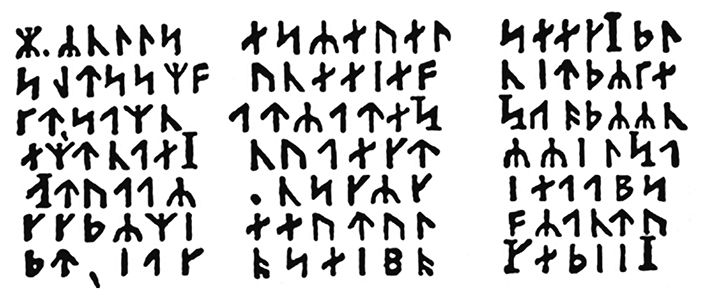
ここにあげるのがその正確な写しである。読者の皆さんには、この奇妙な文字をとくとご覧になっていただきたいと思う。というのも、ここに書かれた文字によって、叔父と私が――ドイツ鉱物学の碩学であるリーデンブロック教授とその甥である私が、この十九世紀の現代において信じられないほど不思議な旅に出ることになるからである。
さて、叔父はしばらくの間、この文字の連なりを見ていたが、眼鏡をはずすと言った。
「これはルーン文字じゃ。本で使われていたのと同じタイプのものじゃ。スノッリ・ストゥルルソンの『世界の環』の手書きの本で使われていたものとな。だが......いったい、どういう意味じゃろう？」
そうして、首をかしげた。だが、私は「ルーン文字などというものは、学者が世間の人を困らせるために発明したものだ」と思っているので、叔父が考えこんでいるのを見ると、逆にしてやったりという気分になった。叔父はどうやら本当に理解できないらしい。少なくとも、指で苛々とテーブルを叩くのを見るかぎり、私にはそう思えた。
「それでも古アイスランド語であることはまちがいないのじゃが......」叔父がぼそぼそとつぶやいた。
叔父がそう言うのであれば、おそらく、本当にまちがいないのだろう。叔父はさまざまな言語に精通しているからである。もちろん、叔父にしたって、地球上で使われている二千の言語、四千の方言をすべて話せるというわけではない。だが、そのうちのほとんどを知っていると言ってよいのだ。
というわけだから、目の前の文章の意味がわからないとなると、いつもの激しい気性からして、叔父は怒りを爆発させるだろう。私には容易にその予想がついた。その時、マントルピースの上にあった小さな置時計が二時のベルを鳴らした。
まもなく、家政婦のマルテが書斎の扉をあけて言った。
「お昼の支度ができました」
と、思ったとおり、叔父が怒りを爆発させた。
「昼食なんぞ悪魔に食わせろ！ そいつをつくるやつも食うやつも、みんな地獄ゆきじゃ！」
それを聞くと、マルテは逃げだした。私はあわててあとを追い、自分でも知らないうちに食堂の自分の席についていた。
それからしばらくの間、私は叔父が来るのを待った。だが、結局、叔父は食堂に姿を現わさなかった。叔父は普段、昼食を儀式のように大切にしている。その昼食に現われないなどというのは、私の知っているかぎりでは初めてのことだった。ああ、しかも、この時の昼食ときたら！ パセリのスープにハムのオムレツ、オムレツにはスカンポやナツメグなど、いくつもの香料で風味がつけてある。プラムのコンポートをつけあわせにした子牛の腰肉のロースト。デザートは小海老の砂糖漬けだ。ワインはもちろん、モーゼルの上等な白が添えてある。
叔父は実にこれだけのご馳走をあの古い紙切れのために棒にふってしまったのだ。いっぽう私は、食卓に並んだこの素晴らしい料理を前にすると、自分の分はもちろん叔父の分までたいらげるのが、忠実な甥としての自分の義務だと考えた。そうして、少々苦しい思いはしながらも、良心にしたがって、その義務を果たしたのである。
「こんなことは信じられませんわ」昼食が終わりに近づいた頃、家政婦のマルテが言った。「旦那様が食事の席にお見えにならないなんて......」
「確かに信じられることではないね。ぼくも同感だ」
そう私が答えると、マルテは何度もうなずきながら言った。
「これはきっと、何か大変なことが起きる前触れですよ」
私は特にそれが何かの前触れだとは思わなかった。大変なことが起こるとしたら、叔父が食堂にやってきて、自分の昼食が食べつくされたのを発見した時だろう。そう思っていた。
と、私が最後の小海老を口に入れた時、家を揺るがさんばかりの大声が鳴り響いて、叔父が私を呼びよせた。私は美食の余韻に浸るまもなく、叔父の書斎に駆けこんだ。
「これがルーン文字であることは明らかなのじゃが......」眉間にしわを寄せながら、叔父が言った。「だから、この文書を読むためには、何か秘密の方法があるにちがいない。わしはぜひともその方法を発見してやる。さもなければ......」
その先を続けるかわりに、叔父は顔のあたりで拳を握りしめた。それから、私に気づくと、その拳でテーブルを差ししめしながら、つけ加えた。
「おお、アクセル。そこに座って、メモをとる用意をしてくれ」
私はすぐにそのとおりにして、ペンを構えた。
「よいか、これから、わしはアイスランドのルーン文字に相当するドイツ語のアルファベットを読みあげる。そいつを紙に書いてくれ。何が出てくるか見てみよう。だが、アクセル、聖ミヒャエルに誓って、くれぐれもまちがえるんじゃないぞ」
そうして、叔父はアルファベットの文字をひとつひとつ読みあげはじめた。私は慎重に、それを書きうつしていった。すると、紙の上にはまるで意味の不明ないくつかの単語のようなものが並んだ。
私が書きおえたのを見ると、叔父はすぐさま紙をひったくって、長い間、それを見つめていた。が、やがて機械的に繰り返した。
「いったい、どういう意味じゃろう？」
誓って言うが、その問いに私が答えられたはずはない。そもそも叔父のほうも、私に訊いたりはしなかった。独り言を口にしただけである。
「おそらくこれは暗号じゃな。わざと文字の順番を変えて、わからないようにしているのじゃ。だから、ちゃんと並べかえれば、意味のわかる文章になるに決まっておる。おお、だとすれば、わしの意見では、〝世紀の大発見〟のような、とんでもなく素晴らしいことが書かれているにちがいないぞ！ わざわざ暗号にして読めなくしているくらいじゃからな」
私の意見では、「そんなことはひとつも書かれていない」と思ったが、しかし、意見を述べるのは差しひかえた。
その間に、叔父は買ってきた本を手にとると、羊皮紙と見くらべはじめた。
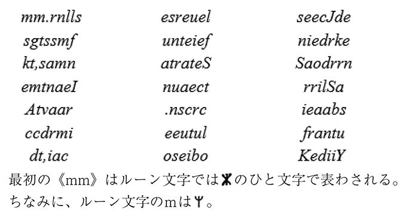
「筆跡は同じではないな。暗号文のほうは本よりもあとに書かれておる。それはひと目でわかる。暗号文のほうには、最初からいきなり《mm》を表わすの文字が使われておるからじゃ。ところが、ストゥルルソンの本のほうにはいくら探したってそんな文字は見つかりはしない。それもそのはず、の文字は十四世紀以降にアイスランド語のアルファベットにつけ加えられたからじゃ。つまり、書かれた年代からすると、本と暗号文の間には少なくとも二百年の開きがあることになる」
暗号文に〝世紀の大発見〟が隠されているという話に比べたら、その推論はかなりまっとうなように思われた。
「そういったことからすると、この暗号文はこの本の持ち主が書いたと考えられる」叔父は独り言を続けた。「だが、その持ち主とは誰なのじゃ？ 本のどこかに自分の名前を書いてないものか？」
そう言うと、叔父は眼鏡をはずし、大きな虫眼鏡を手にとると、本を開いて最初から調べはじめた。すると、二枚目の表題が記してあるページの裏に何かインクの染みのようなものを発見した。しかし、よく見ると、それは半分消えかかったルーン文字であったらしく、叔父は虫眼鏡を近づけると、熱心にその文字を判読しはじめた。ここにあげるのがその写しである。
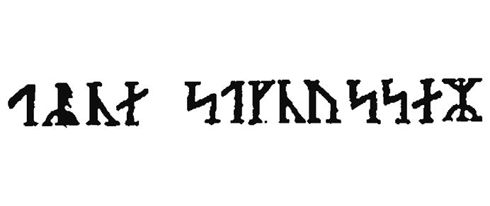
「Arne Saknussemm! アルネ・サクヌッセンム！」消えかかった文字を判読すると、叔父は勝ちほこったように言った。「思ったとおり、名前が書いてあった。しかも、アイスランド人の名前がな。誰だと思う？ 十六世紀に活躍した有名な錬金術師じゃ」
私は驚嘆のまなざしで叔父を見つめた。
「よいか、アクセル」叔父は話を続けた。「錬金術師というのは、イブン・スィーナーにしろ、ロジャー・ベーコンにしろ、ライムンドゥス・ルルスにしろ、パラケルススにしろ、その時代を代表する本物の学者だったのじゃ。現代の我々が聞いてもびっくりするような発見をたくさんしている。だから、アルネ・サクヌッセンムも自分が発見した驚くべき秘密を暗号文にして、ここに記したのじゃろう。その可能性はおおいにある。いや、そうに決まっておる！」
まだなんの証拠もないのに、この推論に叔父の想像は一気に広がってしまったようだった。
「たぶん、そうなのでしょう」私は思いきって言ってみた。「でも、ぼくにはよくわかりませんね。せっかく素晴らしい発見をしたのに、わざわざ読めないようにして、その学者にはなんの利益があったのでしょう？ どうして、そんなことをしたのです？」
「どうして？ どうしてじゃと？」叔父は興奮して答えた。「そんなことは知るものか！ ガリレオだって土星の環を見つけた時、そうしたんじゃなかったか？ それに、どうしてかはすぐにわかる。わしがこの暗号を解いてみせるからな。よいか、アクセル。この紙に何が書いてあるかわかるまで、わしは食事もとらん。睡眠もとらんぞ！」
やれやれ......。私は考えた。と、叔父が続けた。
「おまえもだぞ、アクセル。食事も睡眠もまかりならん！」
まったく......。私は心のなかでつぶやいた。そして、思った。〈これはさっき、ふたり分、昼食を食べておいてよかったぞ〉と......。
「さて、そうと決まったら、まずはこの〝暗号〟が何語で書かれているか、つきとめにゃならんな。だが、それはさほど難しいことではあるまい」
この言葉に、私は驚いて顔をあげた。しかし、叔父はそのまま独り言を続けた。
「いや、これほど簡単なことはない。この暗号文には百三十二の文字が使われていて、そのうち七十九は子音で、五十三が母音じゃ。この割合からすれば、暗号文のもとになったのはヨーロッパの南のほうの言葉だということになる。北のほうの言葉は、はるかに子音が多いからな。つまり、南欧の言語ということじゃ」
その結論はまちがいないと思われた。
「でも、何語なんです？」
そう尋ねると、私は期待をこめて、叔父を見つめた。こう見えて、叔父はなかなか鋭い分析能力を持っているのだ。
「サクヌッセンムは教養のある男じゃ。したがって、母語であるアイスランド語以外で文を書くとしたら、十六世紀の知識人たちの間でごく普通に使われていた言語を選ぶだろう。わしが言いたいのは、つまり、ラテン語ということじゃ。いや、仮にラテン語ではなかったとしても、心配はいらん。スペイン語、フランス語、イタリア語とラテン語系の言葉でやってみて、それでもだめだったら、ギリシア語やヘブライ語を試してみればいいだけじゃ。だが、十六世紀の学者たちは一般にラテン語で書いていた。だから、あらかじめこう言って、さしつかえない。これはラテン語で書かれた文章じゃ」
私は椅子の上で飛びあがった。ラテン語と言えば、あのローマの詩人、ウェルギリウスの言葉だ。そう考えたら、先程の奇妙な単語の連なりが、私の記憶にある美しく優しいラテン語で書かれているとは、とうてい思えなかったからだ。
「そうじゃ。ラテン語じゃよ」叔父が繰り返した。「暗号になっているせいで、いささかもつれたラテン語になってはおるがな」
それは素晴らしい！ 私は皮肉に考えた。〈それでは叔父さん、そのもつれをほぐしてもらいましょうか。それができたら、お見事！ と言ってさしあげましょう〉と......。
すると、ルーン文字をアルファベットにした紙を手にとって、叔父が続けた。
「では、ちょっと一緒に考えてみよう。ここにはルーン文字にしたら、百三十二の文字があるわけじゃが、その文字は明らかに、でたらめな順番で並んでおる。確かに単語とおぼしきものはあるが、よく見ると、たとえば最初の言葉のように《mm.rnlls》と子音ばかりでできているものもあれば、五番目の言葉のように《unteief》や最後から二番目の《oseibo》のように母音が多いものもある。そうなると、この単語らしきもののひとつひとつに意味があるとは思えない。むしろ、もとは普通に書かれていた文章をなんらかの法則を使って機械的に並べかえていったものと考えたほうが自然じゃろう。いや、もとの文章が誰にでもわかる文章で書かれていたことはまちがいない！ したがって、わしらがしなければいけないことは、その法則を見つけることじゃ。それが〝暗号〟を解く鍵になる。その鍵さえ手に入ったら、こんなものは読むのは造作もない。だが、どんな鍵なのじゃろう？ アクセル、おまえはその鍵を持っておらんか？」
その質問に私は答えなかった。が、それには理由があった。叔父に訊かれた時、私はちょうど壁にかかったグラウベンの肖像に見とれていたからである。前にも書いたように、グラウベンは叔父の養女で、今日はたまたまハンブルクの近くのアルトナという町にいる親戚の家に泊まりに行っていた。そのせいで、私は朝から淋しくてしかたがなかったのだ。というのも――思いきって、告白してしまおう！ 私とグラウベンは、相思相愛の仲なのだ。あくまでもドイツ式のやり方で節度を保ってはいるが、叔父に内緒で結婚の約束まで交わしている。婚約を内緒にしているのは、叔父の頭のなかは鉱物のことでいっぱいで、こうした愛だの恋だのという事柄は理解できないと思ったからだ。いや、それはともかく、グラウベンは金髪で青い瞳の美しい女性で、きまじめすぎて、ちょっと融通のきかないところはあるが、私を愛してくれていることはまちがいなかった。私のほうは、もしお堅いドイツ語でこんなふうに言うことができるならば、彼女に〝ぞっこん〟だった。
というわけで、壁にかかったグラウベンの肖像画を見たとたん、私は現実を離れて、夢想の世界に浸りはじめた。私はこの叔父の部屋で一緒に作業をする時のグラウベンの姿を思い浮かべた。さっきも言ったとおり、私は毎日、この書斎で、棚に並べてある貴重な岩石を整理しているのだが、グラウベンはその仕事を手伝って、標本に名札を貼るのを一緒にやってくれているのだ。そういう時のグラウベンは、すでに一人前の鉱物学者だった。実際、彼女はそこいらの学者に負けない知識を示した。おそらく、そのきまじめな性格のせいもあって、「科学的に真理をきわめる」ということに、並々ならぬ情熱を持っているのである。もちろん、私も鉱物学にはひとかたならぬ情熱を抱いているので、彼女と一緒に標本を整理するのは、至福の時間だった。とはいっても、彼女がその魅力的な手で標本を手にする時、彼女の手に包まれてもいっこうに感情を表わさないその鉱物標本に、私がどれほど嫉妬したことか！ 私は木石のようなその標本を心の底から羨ましいと思ったのである。
グラウベンと一緒に過ごすのは、仕事の間だけではない。休憩の時間になると、私たちは連れだって家を出て、緑の豊かなアルスター湖の周辺の小道を散歩することもあった。そうして、湖の端で今も活躍しているコールタール塗装の古い水車小屋に行くのだが、その間、私たちは手をつないで歩きながら、おしゃべりを楽しんだ。私はきまじめな彼女にできるだけ笑ってもらえるような話をし、彼女もできるだけ笑おうとしてくれた。こうして水車小屋に来て、さらにその先のエルベ川のほとりまで来ると、私たちは白い睡蓮の花の間を泳ぐ白鳥たちにおやすみの挨拶をして、蒸気船で家まで戻った。私はその時のグラウベンの様子を思い出して、うっとりした。
と、その時、叔父が拳でテーブルを叩いて、私はいやおうなく現実に引き戻された。
「いいか、アクセル」叔父は言った。「暗号をつくる側に立ってみると、いちばん最初に思い浮かぶのは、文字を横に書いていくのではなく、縦に書いていくことじゃ」
なるほど！ 私は心のなかでうなずいた。
「試しにちょっとやってみよう。アクセル、そこにある紙に何か文章を書いてくれ。だが、普通に書くように文字を左から右に横に並べていくんじゃないぞ。上から下に縦に並べていくのじゃ。縦の行が五字か六字くらいになるようにな」
叔父の言いたいことはよくわかったので、私はすぐさま文字を書いていった。それがこれである。
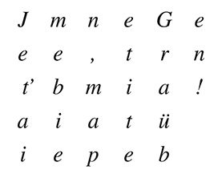
「よろしい」私が書きおわったのを見ると、叔父はそれを読まずに言った。「それでは、今、書いたものを横に一行にしてみてくれ」
私はその指示に従った。すると、次のようなものができた。
JmneGe ee, trn t'bmia! aiatü iepeb
「よし！」叔父はそう言うと、私から紙をもぎとり、また独り言を始めた。「ふむ、完璧じゃ。こうしただけで、もうさっきの暗号のような文章になっておる。母音ばかりの言葉ができているかと思うと、子音がでたらめに並んでいる言葉もある。言葉の途中に大文字やコンマもある。サクヌッセンムの羊皮紙に書いてあった文章とそっくりじゃ」
確かにそのとおりだ。叔父の鋭い指摘に、私は感心しないわけにはいかなかった。と、叔父が今度は独り言ではなく、私に向かって言った。
「さて、この文章の意味じゃが、わしは最初におまえが書いた文章を知らん。だが、簡単に読むことができるぞ。それぞれの単語の最初の文字を拾ってつなげていき、それが終わったら二番目の文字を拾ってつなげていけばよいのじゃ」
そう説明すると、叔父は解読した文章を読みあげ、びっくりしたような顔をした。私のほうはもっとびっくりした。それはこういう文章だったからだ。
Je t'aime bien, ma petite Graüben!
（かわいいグラウベン、ぼくはきみを愛している！）
「なんじゃと！」叔父は言った。
そうなのだ。グラウベンのことを想うあまり、私は自分でも気がつかないうちに、危険な告白をしていたのだ！
「なるほど。おまえはグラウベンを愛しておるというのか！」いかにも保護者であるといった厳しい口調で、叔父が続けた。
「はい......。あ、いえ......」私は口ごもった。
「なるほど。おまえはグラウベンを愛しておるというのか」叔父は機械的に繰り返した。そして、言った。「よろしい。それではこの法則をサクヌッセンムの文書にあてはめてみよう」
それから、今の私の不用意な言葉は忘れたように、羊皮紙の文章の解読に夢中になりはじめた。いや、私は「不用意」と言ったが、それにちがいない。これまで私は、叔父には愛だの恋だのという事柄は理解できないと思っていたが、まったくそういうわけでもなかったらしいからだ。だが、今はそれよりも文書の解読のほうが大切だったので、私は危うく難を逃れたのだ。
実際、叔父はその大切な作業に没頭していた。眼鏡の奥の目はきらきらと閃光を放ち、羊皮紙を持つ手は細かく震えていた。叔父が何かに夢中になっている時のしるしだ。やがて、叔父は大きく咳払いをすると、サクヌッセンムの文書に書かれた文字を、まずすべての単語の最初の文字、それから二番目の文字という具合に読みあげて、私に書きとらせた。その結果は次のようになった。
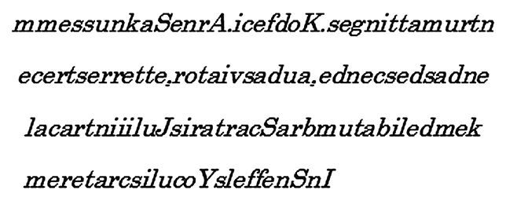
だが、この文章を見て、私は正直、戸惑った。この文字の連なりをいくら眺めてみても、さっぱり意味が浮かんでこなかったからである。けれども、もちろん、叔父ならこの文章の意味がわかるだろう。私は叔父の口から素晴らしいラテン語の文章が厳かに告げられるのを待った。
ああ、しかし、そんなことになるとは誰が予想しただろう！ 叔父はラテン語の文章を告げるかわりに、拳で激しくテーブルを叩いたのだ。インクが飛び散り、私の手からもペンがすっとんだ。
「こうじゃない！」叔父が叫んだ。「これでは意味がわからんではないか！」
そう言うと、叔父は弾丸のように書斎を飛びだし、なだれのように階段を駆けおりて、ケーニヒ通りを大股で急ぎながら、どこかに消えてしまった。
「旦那様は行ってしまわれたんですか？」
叔父が出ていくとすぐに、家政婦のマルテが言った。玄関の扉が開き、それがまた家じゅうを揺るがすような勢いでバタンと閉まった音を聞いて、台所から駆けつけてきたのだ。
「そうだよ。完全に行ってしまわれたよ」私は答えた。
「では、お昼はどうなさるので？」
「お昼は食べないよ」
「では、お夕食は？」
「夕食も食べないよ」
「なんていうことでしょう！」マルテは胸の前で指を組んだ。
「そうなんだよ、マルテ。叔父さんはもう食事をとらない。ということは、ぼくたちも食事ができないというわけだ。叔父さんが、あの解読不可能な古い文書を解読するまではね。それまでは全員が断食だ」
「ああ、神様！ それじゃあ、わたしたちは飢え死にするしかないじゃありませんか！」
もちろん、そのとおりだった。叔父はいったんこうと決めたら、誰がなんと言おうと、あとにひかない。そんな人間を相手にしたら、そうなる運命は避けられないのだ。だが、私はそのことを口に出す勇気はなかった。
マルテもそれがわかっているので、「ああ」とか「うう」とかうめき声をあげながら、台所に戻っていった。
ひとりになると、私は真っ先にアルトナに行って、グラウベンにすべてを話したいと思った。けれども、この状況で家を出ることはできない。いつ叔父が戻ってくるかわからないからだ。叔父が私を呼んで、あの謎の文書の解読を再開したいと言ったら？ スフィンクスのなぞなぞを解いた、あのエディプスでさえ解けないような謎に挑戦したいと言ったら？ その時に私が家にいなかったら、叔父がどれだけ怒りを爆発させることか！
そう考えると、私はおとなしく家に残ることにした。ちょうど、ブザンソンにいる鉱物学者が石英など二酸化珪素の結晶がある晶洞石（岩石の中空に結晶が生成しているもの）を送ってきたところで、それを分類する仕事もあった。そこで、私はその仕事にかかり、石を取りだし、名札をつけて、標本ケースに並べていった。
しかし、その間も、あの不思議な文書のことが妙に心にひっかかって、その作業に熱中することはできなかった。あの文書のことを考えると、胸騒ぎがして、言いようのない不安にとらわれるのだ（思えば、その時、私はその後の〝災厄〟を予感していたのだろう、何かとんでもないことが起きる気がして、しかたがなかったのだ）。
だが、それでも一時間後には、晶洞石はすべて分類されて、きれいに標本ケースに並べられていた。私はユトレヒトのビロードを張った、ゆったりした肘掛椅子に深く腰をおろし、両腕をだらんとたらして、天井を見あげた。そうして、パイプに火をつけると、しばらくの間、煙をくゆらせた。パイプは長い柄が大きく曲がったもので、火皿にはしどけなく横たわる川の精の彫刻がほどこされている。パイプをふかしながら、私はその川の精がカーボンで黒くなり、だんだん黒人女に変身していくのを見て楽しんだ。だが、その間も、耳は階段のほうに向けて、叔父が戻ってきた足音がしないかと、注意を払った。叔父は今頃、何をしているのだろう？ 私の脳裏には、アルトナ街道の並木の下を疾走し、ステッキをふりまわしている叔父の姿が浮かんだ。壁を打ち、雑草をなぎはらい、アザミの花を摘みとり、川べりで休んでいるコウノトリたちを追いたてている――そんな叔父の姿が......。
叔父は謎の答えを見つけて、勝ちほこって帰ってくるだろうか？ それとも、謎を解くのに失敗して、打ちひしがれて帰ってくるだろうか？ 勝つのは叔父か？ それとも謎か？ そういったことを考えながら、私は叔父が読みあげるままに書きとった、ラテン語で書かれているという〝暗号〟の紙を手にとった。そこには意味のわからない文字の列が並んでいる。
〈いったい、どういうことだろう？〉
そう心のなかで繰り返すと、私はその文字をいくつかのグループにまとめて、意味のある単語にならないかどうか試してみた。が、そんなことは不可能だった！ 適当なところで切って読めば、ふた文字の単語、三文字の単語、あるいは五文字や六文字の単語が現われてきて、全体に意味が通じるようになるのではないかと思ったが、どこをどんなふうに切っても、まったく読めるようにはならなかったのだ。いや、確かに最初の《mm》をひと文字と数えて、十四番目と十五番目と十六番目の文字を拾いだせば、英語の《ice》（氷）という言葉ができる。同様に、八十四番目から八十六番目の文字を拾えば《sir》（卿）という言葉になる。二行目には《rota》（車輪）、《nec》（～ではない）というラテン語の言葉も見つかったし、三行目にも《mutabile》（変わりやすい）、《ira》（怒り）、《atra》（黒い）などのラテン語がある。
〈なるほど！〉私は考えた。〈これなら叔父がこの文書がラテン語で書かれたと言うのもうなずける。四行目には《luco》というラテン語もあるし......。これは《聖なる森》という意味だ。それから、叔父は「ラテン語じゃなかったら、フランス語やスペイン語でやってみて、それでもだめだったらギリシア語やヘブライ語を試してみればいい」と言ったけれど、三行目の《tabiled》はどう見てもヘブライ語のような感じがするし、最後の行からは《mer》（海）とか《arc》（弓）とか《mère》（母）とか、フランス語の単語を拾いだすこともできる〉
しかし、そうなると、この文書には英語とラテン語とヘブライ語とフランス語の単語が一緒に使われていることになる！ そう考えると、逆に頭が混乱した。しかも、この四つの言語が同時に使われていると認めたとしても、〝氷、卿、怒り、黒い、聖なる森、変わりやすい、母、弓、海〟などの言葉に、いったいどんな関係があるのだろう？ この文章がアイスランドの文字で書かれていることを考えると、「氷」と「海」という言葉を関係づけるのはさほど難しくない。アイスランドは氷の海に囲まれているからだ。しかし、それがわかったとしても、全体の文章の意味がわからないことに変わりはない。
ああ、こんなわけのわからない文章をどう読めばいいというのか？ 私は苦吟した。文章を書いた紙を穴のあくほど見つめてみるが、頭に血がのぼるばかりで、脳みそが煮えたぎってくる。そのせいで、しまいには目がちかちかして、百三十二の文字が私のまわりを飛びまわりはじめたような気がした。
いや、文字は本当に飛びまわりはじめたのだ。どうやら、私は幻覚にとらわれたらしい。息が苦しかった。頭を冷やすのに、少し空気が必要だった。そこで、私は持っていた紙を扇のようにして顔をあおいだ。紙の表と裏が交互に目に入り、裏になる時に文字が右から左に流れるのが見えた。私はしばらく紙であおぎつづけた。
すると、どうだろう、不思議なことが起こった。何度目かに紙が裏になろうとする瞬間に、私には突然、ラテン語の単語がいくつか見えたような気がしたのだ！ なかでも、《craterem》（火口に）、《terrestre》（地球の）という単語は、完璧なラテン語としてはっきりと読めた。
その瞬間、私にはすべてがわかった。暗号を記した紙で顔をあおいだという、たったそれだけのことなのだが、それによって、私は真実を垣間見ることができた。私には暗号の解き方がわかったのだ。といっても、それは紙を裏返しにして、明かりに透かして読むことではない。そんな面倒なことはする必要がない。この文書は、このまま、私が書いたままに、文字にして並んでいるとおりに読めばいいのだ。この文書を解読するために叔父が考えたことは、すべて正しかった。まったく、たいしたものだ。《mm.rnlls》《esreuel》という、それぞれの単語の最初の文字を拾ってつなげていき、それが終わったら二番目の文字を拾ってつなげていくというやり方はまちがっていなかった。ラテン語で書かれているというのも、そのとおりだ。だから、叔父がこの文書を読むには、たったひとつ、偶然、私が見つけたほんのわずかなことに気づけばよかったのだ。そのほんのわずかなことに気づいてさえいれば、この文章はラテン語で書かれたものとして、端から端まですらすらと読めたのだ。
ああ、私がどれほど興奮していたか！ 視界が霞んで、目がよく見えなくなってしまったほどだ。紙はもうテーブルに置いてあったので、この文章に隠された秘密を知るには、ただそこに目をやって文字を見ればいい。だが、それがなかなかできなかったのである。
興奮を静めるため、私は部屋のなかをふたまわりした。そうして、ようやく気持ちがおさまると、また肘掛椅子に腰をおろした。
「さあ、読むぞ」深呼吸をひとつすると、私は声に出して言った。
それから、テーブルにかがみこんで、書かれた文字に指を置き、ひとつひとつ順番に追っていった。一瞬たりとも、迷うことなく、指を止めることもなく......。それと同時に、私は声に出して、そこに書かれた文章を読んだ。
だが、その内容は......。なんという驚きだろう！ 私は恐怖に凍りついた。そうしてしばらくは、不意打ちを食らったように茫然としていた。いや、でも......。ここに書いてあることが本当に起こったというのか？ まさか人間がそんなところに入りこむなんて、そんな大胆なことが......。
「だめだ！」椅子から立ちあがって、私は叫んだ。「だめだ！ このことは絶対に叔父さんには知らせられないぞ。もし叔父さんがこれを知ったら、自分もしてみたいと言いだすに決まっているんだから！ 実際に旅してみたいって......。そうなったら、誰にも叔父さんを止めることはできない。頭には地学のことしかなくて、こうと決めたら、断固としてそれを実行に移す人なんだから......。たとえ、何があっても、叔父さんは行くだろう。それがどんなに無茶なことであろうと......。常識では考えられないものであろうと......。しかも、その時は、ぼくも連れていくと言うにちがいない。絶対に帰れない旅に......。そうだ！ ぼくたちはその旅から決して帰ってこられないだろう。決して！」
私の興奮は極に達していた。
「いや、そうはさせないぞ！ そうは！」私は力をこめて繰り返した。「大切なのは、叔父さんがこの秘密に気づかないようにすることだ。そして、ぼくにはそれができる。だから、そうするんだ。ぼくがさっきやったみたいに紙で顔をあおいだりしたら、叔父さんも偶然、この暗号を解く鍵を見つけてしまうかもしれない。紙が裏になる瞬間に......。そうなる前に、この紙をなんとかするんだ！」
見ると、暖炉にはまだ燠火が残っていた。私は暗号を書いた紙だけではなく、サクヌッセンムの羊皮紙も手にとった。このふたつを暖炉に放りこめば、この恐ろしい秘密は炎に包まれ、消えてなくなる。興奮で震える手に二枚の紙を握りしめると、私は暖炉に向かおうとした。と、その時、書斎の扉が開いた。叔父が帰ってきたのだ。
私はあわてて二枚の紙をテーブルに戻した。
いっぽう叔父は、あいかわらず何かに取り憑かれたような顔をしていた。おそらくその精神は、外に出ている間も、一瞬たりとも活動を停止していなかったにちがいない。散歩をしている間、文字の配列の特徴を分析し、想像力を働かせて、知恵と知識を総動員して、暗号を解く方法を考えていたにちがいないのだ。そして、これはという方法を思いついて、試してみるために戻ってきた......。
実際、叔父は肘掛椅子に腰をおろすと、さっそくペンを取り、カリカリと音をたてながら、複雑な数式のようなものを書きはじめた。
そのせわしなく動くペン先から、私は目を離すことができなかった。叔父のしていることの結果、もしかしたら、思ってもみなかった形で暗号の答えが出てくるのではないか？ そう思ったのだ。だが、もちろん、そんなことはあり得ない。なにしろ、暗号を解くためのたったひとつの、そして本当のやり方は、もう発見されていて、それ以外の方法では答えが見つからないとわかっているからだ。それなのに、叔父の鬼気迫る様子を見ている間、私は心の震えをとどめることができなかった。
そうして、三時間ばかりが過ぎたろうか？ その間、叔父はひと言もしゃべらず、目の前の紙から顔もあげず、書いては消し、書いては消しという作業を繰り返していた。
叔父はおそらく、すべての文字の組み合わせを試してみようとしているのだろう。そうすれば、必ず、答えは見つかるはずだ。それは、私にもわかっていた。だが、そのやり方をしていくと、たとえ文字が二十しかなくても、可能な組み合わせは〝20の階乗〟で、二百四十三京二千九百二兆八十一億七千六百六十四万通りもある。私には、それもわかっていた。では、問題の文章には文字がいくつあるか？ 最初の〈mm〉をひと文字として考えるなら百三十二だから、その文字を使った可能な組み合わせは〝１３２の階乗〟で、これはもう数えることもできなければ、想像することもできないほどの膨大な数字になる。つまり、叔父のしているのは、まさに英雄的な行為だということになる。
だが、叔父がどれほど雄々しく立ち向かっても、そのやり方で、現実的に答えに到達することはあり得ない。私は安心した。
そのうちに、時は流れ、夜になった。いつのまにか、通りの音も聞こえなくなっている。叔父はあいかわらず、テーブルに向かって、一心不乱に作業を続けていた。暗号のほかは、何も目に入らぬ様子だ。耳にも入らない。家政婦のマルテがおそるおそる扉をあけて、「旦那様、お夕食はどうなさいますか？」と尋ねた時も、まったく聞こえていないようだった。
結局、叔父から返事がないので、マルテはおとなしく引きさがるしかなかった。私のほうは眠くてしかたがなくなってきた。しばらく睡魔と戦ったものの、私はとうとう長椅子に横たわって、居眠りをした。
その間、叔父はずっと文字を書いたり消したりしていたらしい。気がつくと朝になっていて、私の目にはまだ暗号と格闘している叔父の姿が映った。だが、その戦いは激しく、また希望が見えないものだったにちがいない。叔父の目は赤く血走り、顔色は蒼白で、おそらく何度も頭をかきむしったせいだろう、髪はくしゃくしゃになっていた。目の下も赤く腫れている。夜の間、ずっと精神を集中して、脳みそがくたびれはてるまで、がんばっていたのはまちがいない。
その様子を見ているうちに、私は叔父がかわいそうになってきた。「頑固すぎる」「常識がない」「あきらめが悪い」と叔父を批判することはいくらでもできるが、それよりも叔父に同情する気持ちのほうが勝ってきたのである。かわいそうに、叔父はどうしてもこの暗号を解きたいと願うあまり、いつものように癇癪を起こすことさえ忘れている。同情する気持ちと同時に、私は不安にもなった。叔父は今、全身全霊を傾けて、たった一点、文書の謎を解くことに集中している。けれども、そこで答えが見つからず、怒りを爆発させることもしないのであれば、そのエネルギーは捌け口がなくなってしまう。そうなったら、今度は叔父の精神が爆発してしまうのではないか？ 今すぐにでも！
ああ、そうならないようにするためには――叔父の頭を締めつけている万力の力をゆるめてやるためには、私はたったひとつのことをするだけでいい！ たったひとつの言葉を口にするだけでいいのだ。だが、私はそうはしなかった。そんなことをしたら、どんな結果になるか、よくわかっていたからだ。
とはいえ、私の心は鬼ではない。これほど叔父が苦悶しているのを目のあたりにして、それでも黙っていることができようか？ 叔父のためを考えたら、真実を話したほうが......。
〈いやいや〉私は心のなかでその考えを打ち消した。〈やっぱり、叔父さんには話さないほうがいい。叔父さんのことだ。あの文書にあんなことが書かれていると知ったら、もう誰にも止めることができなくなってしまう。なにしろ、叔父さんの想像力というのは火山が爆発するようなものなんだから......。次から次へといろいろな空想がわきでてきて、とどまることを知らない。しかも、あそこに書かれていたのが、これまで地質学者が誰ひとりとしてやったことのない冒険だと知ったら、叔父さんは命を賭してもやるだろう。やっぱり、叔父さんには黙っていよう。ぼくはたまたま秘密を知っただけだ。これはぼくひとりの胸にしまっておこう。この秘密を叔父さんに明かしたら、ぼくは叔父さんを殺すことになる。叔父さんが自力であの文書の謎を解くなら、どうぞご勝手にだ。でも、ぼくは言わない。ぼくのせいで叔父さんを殺してしまったと、あとで後悔したくないからだ〉
そう考えると、私は腕組みをして、成り行きを見守ることにした。だが、その数時間後にあんなことが起ころうとは......。そこまでは計算に入れていなかった。
というのも、市場に買い物に行こうと、マルテが家を出ようとした時のことだ。マルテは玄関の錠が閉まっているのに気づいたのだ。普段なら、内側から差しこんだままになっている大きな鍵がなくなっている。誰がそんなことをしたのか？ もちろん、叔父に決まっている。昨日、外から家に帰ってきた時に、抜きとってしまったのだ。
うっかりだったのか、それとも、わざとだったのか？ 叔父は暗号の答えが見つかるまで、本当に私たちに絶食をさせようとしたのだろうか？ もしそうだとしたら、ひどすぎる！ 私とマルテは自分たちには責任のない、恐ろしい状況の犠牲になりかけているのだ。いや、きっとそうなるにちがいない。私は前にもこんなことがあったのを思い出して、ぞっとした。というのも、数年前、叔父が鉱物の標本をつくるのに夢中になっていた時期に、まる二日間、食事をするのを忘れて、いわば〝学究的な理由〟で、家じゅうの者を絶食させたことがあったからだ。当時、私は育ち盛りの少年だったこともあって、お腹がすいて、最後には胃が痙攣する始末で、あれはちっとも楽しい思い出ではなかった。
それはともかく、現在の話に戻ると、この分だと昨日の夕食に続いて、今日の朝食も口に入らないことになりそうだった。そう考えると、お腹が減って、かなりきつい状態になるのはまちがいない。だが、それでも私は譲るつもりはなかった。あの文書の秘密は叔父には決して話さない。いくらお腹がすいても、私は雄々しく飢えと戦ってみせると......。マルテはもちろん、何も食べられないのが心配のようで、そのことを嘆いていた。それは当然だろう。だが、私のほうはそれよりも外に出られないほうが気がかりだった。その理由はおわかりだろう。外に出られなければ、アルトナに行くこともできないからだ。
叔父はあいかわらずテーブルに向かって、作業を繰り返していた。このまま続けていれば、いつかは暗号が解けると、そのことで頭がいっぱいなのだ。叔父の心は暗号が解けた時の〝理想の世界〟に飛んでいた。叔父はもうこの地上からは遠く離れたところにいた。現実から離れたところに......。だから、現実的な欲求も感じていないのだ。
そうして昼頃になると、私にとっても、空腹は無視できないものになっていた。昨日の晩、夕食が抜きになったので、マルテは何も考えずに、食料戸棚に残っていたものをつまんで、中身を空にしていた。だから、家には何も食べる物がなかった。しかし、それでも私は耐えた。私にはそれが名誉に関わる問題だと思えたからだ。
だが、二時を告げる鐘が鳴ると、そうやって〝名誉を守る〟ことは滑稽なことに思われてきた。いや、空っぽになった胃のことを考えたら、暴挙だと言ってもいい。私は目をいっぱいに見開いて、空腹に耐えた。と同時に、「たとえ叔父があの文書の秘密を知っても、それほど大変なことにはならないかもしれない」と考えはじめた。自分は少し大げさに考えていただけだと......。だいたい、あの文書に書かれていたことを知って、叔父がその内容を信じるかどうかは疑わしい。こんなことは眉唾だと、一笑に付すかもしれないではないか？ 仮に信じて、冒険に出かけると言ったとしても、なんとか止めることはできるのではないか？ いや、そもそも、私が秘密を明かさなくても、叔父は自力で暗号の鍵を見つけだすかもしれない。そうなったら、こうして空腹に耐えているのは、まったく無駄なことになってしまうではないか！
おそらく昨日の夜だったら、こんな考えはただの屁理屈だと言って、断固としてしりぞけていただろう。だが、今の私にはきわめて根拠のある考えのように思われた。いや、それどころか、私は「どうして今まで叔父に秘密を打ち明けなかったのだろう？」と、自分がとんでもなく馬鹿げたことをしたように思った。そして、とうとう叔父にすべてを話す決心をした。
私はあまり唐突にならないように、その話題に入るきっかけを探した。と、その時、叔父が突然、立ちあがった。帽子をかぶって、外に出る準備をしている。
叔父はまた家を出ようというのか？ 私たちをこの家に閉じこめたまま......。そんなことはさせないぞ！ 私は思った。そして、言った。
「叔父さん」
だが、その言葉は、叔父には聞こえなかったようだ。
「リーデンブロック叔父さん！」私は声を張りあげて、もう一度、言った。
「うん？ なんだ？」叔父は突然、目を覚ましたような声で答えた。
「なんだって......。鍵ですよ」
「鍵とは、なんの鍵じゃ？ 扉の鍵か？」
「ちがいますよ」私は叫んだ。「暗号を解く鍵です」
それを聞くと、叔父は眼鏡ごしに私を見つめた。そしてすぐさま、私がただならぬ表情をしているのに気づいたのだろう、興奮した面持ちで、私の腕を激しくつかんだ。といっても、すぐには言葉が出てこなかったらしく、訊きたいことを目で問いかけてきた。その様子を見ただけで、私には叔父の訊きたいことがはっきりとわかった。
私は大きく首を縦にふってみせた。
だが、叔父はまるで頭のおかしくなった人間を見て哀れむように、静かに首を横にふった。
私はもっと大きく首を縦にふった。
すると、叔父の目が強烈に輝いた。右手をふりあげると、私を脅すような仕草をする。
それを見たら、どれほど無関心な人間でも、叔父の気持ちが手にとるようにわかっただろう。喜びのあまり、叔父は私を抱きしめて、窒息死させるのではないか？ そう思うと、私はよほど話すのをやめようかと思ったくらいだ。だが、こうなった以上、もはや秘密を打ち明けないでいることはできない。
「ええ、その鍵です......。偶然、見つけたんです」私は言った。
「おお、おまえはなんと言った？」叔父はもう感情を押しとどめることができないようだった。
「ほら、これを......」私は叔父が読みあげるままに書きとった〝暗号〟の紙を叔父に見せた。「これを読んでください」
「無駄じゃ。こんなものは読んでも意味がない！」そう言って、叔父は紙をくちゃくちゃに丸めて捨てた。
「ええ、確かに意味はありません、この文章を初めから読めば......。でも、終わりから読めば......」
私はその言葉を最後まで言うことができなかった。私が「終わりから読めば」と言った瞬間に、叔父が叫び声を、いやもっと正確に言うなら、雄叫びをあげたからだ。その言葉で、叔父にはすべてがわかったのだ。まるで神の啓示を受けたように......。さっきまでの苦悶が噓のように、叔父は晴れやかな顔をしていた。
「おお、サクヌッセンム！ 汝はなんと巧妙なことをするのじゃ」叔父は大声でひとりごちた。「暗号にする前に、文章をさかさまから書くとは！」
それから、捨てた紙を拾ってしわを伸ばすと、感動のあまり、声を震わせ、目を潤ませて、終わりから初めまで読みあげた。
文章をさかさまから読むと、そこにはこう書いてあった。
In Sneffels Yoculis craterem kem delibat
umbra Scartaris Julii intra calendas descende,
audas viator, et terrestre centrum attinges.
Kod feci. Arne Saknussemm.
あまり上手なラテン語ではないが、訳してみると、こういう意味になる。
七月の朔日より前に
スカルタリスの影がスネッフェルスのヨークルの火口をかすめる時
そこから降りよ
さすれば勇気ある旅行者よ
そなたは地球の中心に達することができよう 我が成しとげたごとくに
アルネ・サクヌッセンム
これを読みあげた瞬間、叔父はうっかりライデン瓶（３）に触ってしまったかのように、びくっと飛びあがった。その顔は喜びにあふれ、何があってもひるまないぞという、断固とした決意に満ちていた。そのいっぽうで、なかなか興奮がおさまらないのか、両手で頭を抱えながら、部屋を行ったり来たりし、かと思うと、椅子をあちこちに動かしたり、本を積みあげたりした。しまいには、普段なら絶対にあり得ないことだが、貴重な晶洞石でお手玉まで始める始末だった。それから、拳を握ってあちらを叩き、平手を使ってこちらを叩いた。そのうちに、ようやく気持ちが落ち着いたのか、というよりは、一連の出来事で体力と精神力をすっかり使いはたしてしまったのだろう、ぐったりと肘掛椅子に腰をおろした。そうして、しばらく黙っていたあと、おもむろに尋ねた。
「おい、アクセル。今、何時じゃ？」
「三時です」私は答えた。
「ならば、昼食をすませんといかんな。なにしろ、わしは死ぬほど腹が減っておるからな。すぐにテーブルにつこう。それから......」
「それから？」私は尋ねた。
「わしの荷物をつくってくれ」
「なんですって？」私は叫んだ。
「おまえの荷物もじゃぞ」
そう容赦なく言いすてると、叔父は颯爽と食堂に向かっていった。
３ 静電気をためる装置。
叔父の言葉に、私は全身が凍りついた。だが、かろうじて、動揺を抑えると、むしろ余裕を持って、事にあたることにした。叔父を思いとどまらせるには、「地球の中心に行くことは不可能だ」と科学的に説得するしかないが、その根拠となる学説はたくさんあるのだ。しかも、優れた学説が......。そうだ！ 科学的に考えたら、地球の中心を目指す旅に出かけるなんて、正気の沙汰とは思えない。しかし、そういった学説を用いて叔父を説得するのはとりあえずお預けにして、私は食事のほうに気持ちを向けることにした。
といっても、もちろん昼食の準備など、できているはずはない。そのことを知った時に、叔父がどれほど癇癪を起こしたか、それはあらためて言うまでもない。やがて、事情がすべて明らかになると、マルテは晴れてこの家から外に出ることができるようになり、市場へ買い物に出かけていった。そうして、戻ってくると、素早くおいしい料理をつくってくれたので、一時間後にはようやく私も人心地がついた。そこで、私は先程の問題についても考えることができる状態になった。
いっぽう、叔父は食事の間、ずっと嬉しそうな顔をしていて、その口からはいかにも学者らしい、無邪気な冗談がぽんぽんと飛びだした。そのうちに、デザートが終わると、叔父は私に声をかけ、書斎までついてくるように言った。
私は従った。叔父が作業テーブルの前に座ったので、その反対側に座る。と、比較的、穏やかな声で、叔父が言った。
「アクセル、よくあの暗号を解く鍵を見つけてくれたな。素晴らしい働きじゃったぞ。あの時、わしは戦いに疲れて、あの文書に何が書かれているのか、その秘密を知るのをあきらめようとしていたのじゃ。そうなったら、今頃、どこをどうほっつき歩いておったか！ それは誰にもわからない。だから、アクセル、わしは決しておまえの功績を忘れん。地球の中心に行くことで、わしらはこれから多大な栄誉を受けることになろうが、よいか、アクセル、その栄誉については、おまえも当然、同等の分け前にあずかることになる......」
それを聞くと、私は思った。〈どうやら叔父さんは機嫌がいい。ならば、今、こちらもその栄誉について話そう。そんな栄誉は辞退したいと......〉
と、叔父が続けた。
「だが、そこで何よりも大切なことは、この秘密は誰にも知られてはならんということじゃ。よいか？ アクセル。学者の世界には妬みぶかい者がいっぱいおる。そやつらがこの秘密を知ったら、こぞって地球の中心を目指す旅に出発するじゃろう。だから、この秘密はわしらが地球の中心から戻ってくるまで、決して明かしてはならんのじゃ」
「でも、叔父さん」私は言った。「たとえ、その秘密を知ったからと言って、地球の中心を目指そうだなんて無茶苦茶な連中がそんなにたくさんいるでしょうか？」
「いるとも！」叔父は何を言っているのだと言わんばかりに答えた。「というより、これほど素晴らしい栄誉を前にして、誰がためらうと言うのじゃ？ もしこの文書の秘密が知られたら、アルネ・サクヌッセンムのあとに続こうとして、問題の火口には地質学者の行列ができるに決まっておる」
「いえ、それがよく納得できないんですが......」私は言った。「だいたい、あの文書は本物なのでしょうか？」
「なんじゃと！ あれはサクヌッセンムの本の間にはさまっていたものじゃぞ」
「ええ。だから、サクヌッセンムがあの文書を書いたというのは本当でしょう。でも、サクヌッセンムが本当に地球の中心に行ったかどうかとなると......。羊皮紙に書かれているので、それらしくは見えますが、あそこに書かれているのはでたらめなのではありませんか？」
思わずそう言ってしまってから、私は「でたらめ」という言葉を口にしたことを後悔した。叔父がその太い眉をひそめたからだ。このままだと、議論を思った方向に進めることができなくなるのではないか？ 私は心配した。だが、幸いなことに、そうはならなかった。いや、「幸いなことに」と言えるかどうか......。叔父は唇に微笑のようなものを浮かべ、こう答えたからだ。
「だから、それがでたらめかどうかを確かめにいくのではないか！」
「ああ！」私はかっとなって言った。「それじゃあ言いますが、この文書にはいろいろな点で問題がありますよ」
「言いなさい、言いなさい」叔父は平然とした顔で答えた。「おまえには自由に意見を言う権利がある。甥だからといって、遠慮することはないぞ。そうじゃ。おまえはわしの甥ではない。地質学者として同僚じゃ。さあ、思っていることを言うがよい」
「わかりました。では、言いますが、この文書にあるヨークルとかスネッフェルスとかスカルタリスというのはなんでしょう？ ぼくはこれまで聞いたことがないんですが......」
「それなら、簡単なことじゃよ。そうじゃ。この間、ライプツィヒで地理を研究している、わしの友人のアウグスト・ペーターマンが地図を送ってきたが、タイミングとしてはまさにこれ以上の時はない。そこのいちばん大きな書棚の二列目にある地図をとってくれ。Ｚの４と書いてある棚の三番目の地図だ」
私は立ちあがって、地図帳を持ってきた。指示が正確だったので、見つけるのに時間はかからなかった。地図を広げると、叔父が言った。
「これはアイスランドの地図としては最良のものじゃ。作者はヘンダーソン。この地図を見れば、おまえの疑問はすぐに解けるぞ」
その言葉に、私は地図の上にかがみこんだ。
「ほれ、このたくさんの火山でできている島、これがアイスランドじゃ」叔父が続けた。「見ると、あちらこちらに《ヨークル》という名前が見つかるだろう？ これはアイスランド語で「氷河」という意味じゃ（４）。アイスランドは緯度が高いからな。火山が噴火する時も、氷の層を突きやぶってくる。したがって、アイスランドの火山にはどれにも《ヨークル》という名前がついているのじゃ」
「わかりました。それでは、スネッフェルスというのは？」
そう尋ねながら、私はその質問に答えが返ってこないことを願った。だが、そうはならなかった。地図の上を指でなぞりながら、叔父がすぐさまこう答えたからだ。
「よいか、アクセル。こうして島の西側を海に沿ってたどっていくと、ほら、ここにレイキャヴィークがあるな。アイスランドの首都じゃ。そこから出発して、今度は複雑な海岸線をたどりながら――つまりはフィヨルド（＊）に沿って、北にのぼっていく。そうすると、緯度が六十五度に達する少し手前に、アクセル、何がある？」
「半島ですね。一本の骨のような形をした半島があります。半島の先は膝蓋骨のようになっていて......」
「ふむ。その形容はまちがっていないな。それでは、アクセル、その膝蓋骨には何がある？」
「まるで海から生えたような山があります」
「それじゃよ、アクセル。それがスネッフェルス山（５）だ」
「スネッフェルス山？」
「まさにそのものじゃ。標高は千五百メートル。アイスランドではよく知られた山じゃ。だが、この山の火口から地球の中心まで行けるとなると、世界でいちばん有名な山になるぞ」
「そんなことはできませんよ」私は肩をそびやかして反論した。地球の中心に行けるなど、それは単なる空想にすぎない。
「そんなことはできない？」険しい口調で、叔父が言った。「どうしてじゃ？」
「火口の下には高熱の溶岩があるからですよ。だから、そこから下に降りるなんて......」
「だが、スネッフェルス山が死火山だとしたら？」
「死火山？」
「そうじゃ。今、地球にある火山のうち、活動しているのは三百くらいにすぎん。そのほかの大部分の火山は、もうとっくに活動を停止してしまっているのじゃ。スネッフェルス山もそのひとつだ。歴史が始まってからというもの、この山はたった一度しか噴火しておらん。一二二九年に一度しかな。そのあとは、活動がおさまってきて、現在では活火山のなかには入っておらんというわけじゃ（６）」
そうはっきり言われると、私にはもう反論することができなかった。そこで、私は文書のなかにある疑問の点をつくことにした。
「それでは、またサクヌッセンムの文書に戻りましょう。ぼくにはまだわからない言葉があります。このスカルタリスというのは何ですか？ 七月一日に、いったい何が起こるというのです？」
それを聞くと、叔父はしばらく考えこむような顔をした。私は希望を抱いた。だが、それは一瞬にすぎなかった。というのも、叔父はこう答えたからだ。
「悪くないぞ。おまえが『わからない言葉がある』と言うと、わしにはその言葉の意味がわかってくる。これもまたサクヌッセンムが自分の発見を正確に伝えるために、どうすればよいか考えたところじゃろう。スネッフェルス山の火口の底にはいくつもの噴出孔がある。したがって、地球の中心に行くにはどの噴出孔から入っていけばよいとはっきりと示す必要があるのだが――おい、アクセル、そうするためにサクヌッセンムが何をしたと思う？ そこで、スカルタリスが出てくるのじゃ。スカルタリスというのは、スネッフェルス山にある鋭峰のひとつだが、サクヌッセンムは、〈七月一日より前、すなわち六月の最後の数日の間に、そのスカルタリスが噴出孔のひとつに影を落とす。それが問題の噴出孔だ〉と書いて示したのじゃ。おお、これほど正確に示してくれるとは、わしらにとっては、何よりもありがたい！ さもなければ、スネッフェルス山の頂に着いて、火口の底に降りた時、どの噴出孔から地球の内部に入ったらよいものか、迷ってしまうところじゃったからな」
まったく、叔父には答えられないことはひとつもなかった。もうこれ以上、羊皮紙に書かれたことで疑問の点は何もない。そこで、私はそちらから攻めるのをやめて、科学的な理論を根拠にして、叔父に反論することにした。そのほうがずっと効果的だと思われたからだ。何があっても、私は叔父を説得しなければならないのだ！
「わかりました。それなら、ぼくもサクヌッセンムの文書には疑問の点はひとつもないと認めましょう。また、この文書がどうやら本物らしいということも認めます。サクヌッセンムはきっと、スネッフェルス山のてっぺんまでのぼったのでしょう。スカルタリスの鋭峰が七月一日より前に、噴出孔のどれかに影を落とすのも見たのでしょう。そして、その噴出孔が地球の中心につながっているという土地の伝説を耳にした......。けれども、サクヌッセンムが実際にそこから降りて、地球の中心まで行って帰ってきただなんて、そんなことは信じません。それだけはあり得ません！」
「その理由は？」叔父は明らかに馬鹿にしたような口調で尋ねた。
「あらゆる科学の理論がそんな冒険はできないと証明しているからです」
「そうか。あらゆる理論が証明しているのか」叔父は人のよさそうな顔をして言った。もちろん、わざとだ。それから、こう続けた。「ああ、理論なんぞ、くそくらえだ！ そんなものは、わしらの邪魔をするためにあるようなものではないか！ よりによって、くだらんものを持ちだしおって。そんなものは、わしは認めん」
叔父の顔には軽蔑の色がありありと浮かんでいた。だが、私はがんばって続けた。
「たとえ叔父さんが認めなくても、理論のほうは存在します。たとえば、地表から三十メートル地下に潜るごとに、温度が一度上昇することは科学的な事実として認められています。その割合でいくと、地球の半径は約六千キロメートルですから、地球の中心の温度は二十万度になると考えられます。ええ、そのため地球の中心は高温のガスの状態になっています。というのも、金でもプラチナでも、そのほかの金属でも、あるいは固い岩でも、これほどの高温のもとでは溶けて蒸発してしまうからです。というわけですから、地球の中心まで行けないことは、誰が考えても明らかです！」
それを聞くと、叔父は言った。
「なるほど、アクセル。してみると、おまえは暑さが気になるのじゃな？」
「気になりますよ。四万メートルも潜れば、ぼくたちは地殻の境界まで到達します。そうしたら、そこの温度は千三百度以上になるんですから......」
「つまり、おまえは溶けるのを心配しておるのか？」
「その判断は叔父さんがなさってください」私は勝ちほこったように言った。
だが、叔父はいっこうにひるむ様子はなく、逆にいつもの尊大な口調に戻って、答えた。
「よろしい。それではわしの判断を示そう。それは『地球の内部のことなど、誰にもわかっていない』ということじゃ。わかっているのは、地球の半径のせいぜい一万二千分の一、地表から五百メートルくらいのところまでだ。それに、科学とはつねに新しくなるものじゃ。古い理論は絶えず打ちやぶられ、新しい理論が生まれてくる。たとえば地球の大気の温度は、今から数十年前、そう、フランスの物理学者のフーリエの頃までは、高度が上昇するほど下がると考えられていた。だが、現在では、上空のいちばん温度が低いところでも、マイナス四十度から五十度より下がることはないとわかっておる。だったら、地球の内部の温度だって、どうしてそうではないと言えよう。下に降りるにつれて、だんだん温度があがり、どんな鉱物でも溶けてしまうのではなく、適当なところで落ち着くとは考えられんか？」
だが、そんなものはあくまでも仮説にすぎない。私は答えなかった。すると叔父が続けた。
「アクセル、今はもう亡くなっているが、おまえはポアソンのような本物の学者がなんと言ったか、知っておるか？ もし地球の内部が二十万度の熱を持ったとしたら、溶けた物質から発生する高温のガスが膨張して、地殻などふっとんでしまうと言ったのじゃ。ちょうど水蒸気の力でボイラーが爆発してしまうようにな」
「それはあくまでもポアソンの意見にすぎません」
「じゃあ、これはどうだ？ これはまた別の有名な地質学者たちの意見じゃが、それによると、地球の内部はガスでも液体でもないという。わしらが知っている、いちばん重い岩でもない。もっと重いものでできているというのじゃ。さもないと、地球の重さは半分になってしまうでな」
「数字を使えば、なんとでも言えますよ」
「それでは今度は事実を示そう」叔父は続けた。「地球が誕生してから、火山の数はいちじるしく減っている。ということは、たとえ内部が熱かったとしても、もうそろそろ冷えているとは言えまいか？」
「叔父さん、そんな仮定の話ばかりするなら、ぼくはもう議論はしませんよ」私は言った。
「仮定じゃと？ わしはただ自分の意見のほかに、優秀な学者たちの意見を伝えているにすぎん。そうだ、おまえは一八二五年に、あの有名なイギリスの化学者のハンフリー・デーヴィーがこの家に来たのを覚えておるじゃろう？」
「いいえ、ぼくが生まれる十九年前のことですから......」
「そうか。ならば、それでもかまわん。ハンフリー・デーヴィーはハンブルクに来たついでにこの家に寄ってな、わしらはいろいろな議論をしたものじゃが、そのなかには『地球の中心は岩が溶けたせいで液体か？』という議論もあったのじゃ。わしらの意見は、『液体ではない』ということで一致した。そうだったら、現在の状態は科学的に説明できなくなるからな」
「どうしてです？」私は釣りこまれて、訊いた。
「よいか、もし地球の中心が液体だったら、海のように月の引力の影響を受けることになる。それはいいな？ そうすると、一日に二度、潮汐が起こり、地殻が持ちあげられる。その結果、毎日、たくさんの地震が起こるはずだ。だが、そんなものは起こっておらん。つまり、現在の状態は、科学的に説明できなくなるということじゃ」
「でも、叔父さんもご存じのとおり、かつて地球の表面は燃えていました。ということは、もちろん地球全体が燃えていたわけです。これはまちがいのない事実でしょう？ そのうちに表面だけが冷えて固まった。でも、中はまだ熱く燃えているんです」
「それはちがうな」叔父はあっさりと否定した。「地球が燃えていたのは表面だけじゃ。内部は燃えておらん。なにしろ、地球の表面にはカリウムやナトリウムのような金属がたくさんあって、空気や水と触れるだけで燃えあがるからな。大気中の水蒸気が雨になって地上に降りそそいだ時に、火がついたのじゃろう。やがて、大量に降った雨が地殻の割れ目から内部に入りこんだ時に、今度は地球の内部にあるカリウムやナトリウムと反応して、地中で爆発した。それが噴火というわけじゃ。地球が誕生したばかりの頃に火山が多かったのも、それでうなずける」
「なるほど！ 仮説としてはよくできていますね」私は思わず、感心して言った。
「それだけではないぞ！ ハンフリー・デーヴィーは、たったひとつ実験をしてみせただけで、わしを心から納得させたのじゃ。ハンフリーは、さっき言ったカリウムとナトリウムを主成分とした金属のボールをつくってな。これをまあ、小さな地球に見立てて、表面の割れ目に露を一滴、落としてやったのじゃ。すると、どうだ？ 水と空気に触れて、内部で反応が起こったのだろう。表面がふくらんできて、小さな山ができた。と思ったら、その山の頂上に口が開いて、噴火が起こったのじゃ。いや、その熱いこと、熱いこと。熱はたちまちボール全体に広がって、持っていられないほどじゃったぞ」
噓だ！ そんなことはあり得ない！ だが、私は叔父の言葉に惹かれはじめていた。だいたい、叔父は理論よりも熱意や情熱で相手を説得するのだ。私は反論しなかった。頭とは反対に、気持ちは叔父に動かされはじめていた。
「わかったな、アクセル」叔父が続けた。「地球の中心がどうなっているかについては、このように多くの地質学者たちが仮説を提示している。つまり、地球の中心が燃えているなど、まったく証明されておらんのだ。わしの考えでは、燃えてはおらん。燃えておるはずがないのじゃ。というより、そんなことは実際に行ってみればわかる。わしらはその答えをはっきりと知ることになるのじゃ。アルネ・サクヌッセンムのようにな。行こう！」
「行きましょう！」私は思わずそう答えていた。いったい、どうしたことだろう？ たぶん、叔父の情熱にひきずられてしまったのだ！ 私は続けた。「行って確かめてみましょう。もし、地球の中心が真っ暗闇で何も見えないのでなければ......」
「見えるさ」叔父は言った。「なにしろ、わしらには電気を利用した照明があるからな。しかも、大気は気圧のせいで、地球の中心に行くほど明るくなるのだから......」
「地球の中心に行くほど明るくなる？ ええ、ええ。そういうことだって、あるかもしれませんね」
「あるのじゃ」叔父は自信たっぷりに答えた。それから、声をひそめて続けた。「だが、いいか？ アクセル、このことはくれぐれも秘密だぞ。誰かにほのめかしてもいかん。この秘密を知ったら、わしらより先に地球の中心に行こうとするやつがごまんといるはずじゃからな」
４ 実際にはヨークトルと発音する。
＊原注 氷河による侵食でできた細長い入り江。峡湾。
５ 実際にはスナイフェルス。一般には先程のヨークトルと合わせて、スナイフェルスヨークトルと呼ばれている。半島の名前はスナイフェルスネス半島。
６ 実際には最後の噴火があったのは、一世紀から四世紀の間とされている。
こうして、叔父との話が終わった時には、私はすっかり熱に浮かされていた。そこで、少し頭を冷やそうと、家を出たのだが、通りにはほとんど風が吹いていなかったので、興奮した気持ちを静めることはできなかった。川まで行けば、風にあたることができるだろう。対岸のハールブルクの駅に渡る蒸気船の発着場のあたりまで行けば......。そう考えて、私はエルベ川のほとりに向かった。だが、その間も、頭のなかにはいろいろな考えが駆けめぐっていた。
叔父の言葉についうなずいてしまったが、叔父の話はそれほど納得のいくものだったのだろうか？ 私はただ叔父の迫力に圧倒されてしまっただけではないのか？ そもそも自分は地球の中心に行くなどという話を本気で考えているのか？ 叔父の説明は、天才鉱物学者の科学的な推論か、それとも頭のおかしな人間の戯言か、はたしてそのどちらなのだろう？ この話はいったいどこまでが真実で、どこからがでたらめなのだろう？
しかし、いくら考えても、その答えは見つからなかった。
そのうちに、おそらく風にあたったせいだろう、家を出た時の高揚した気持ちは少し冷めてきた。だが、たとえそうだとしても、私はもう「行く」と言ってしまったのだ。そのことに思いあたると、私はあれこれと思い悩まなくてもいいように、今すぐ出発してしまいたくなった。そう！ 今なら、まだ出かける勇気があるからだ！
けれども、一時間たって、最初の興奮がすっかりおさまってしまうと、私の思いは〝地球の底〟から再び〝地上〟に戻っていた。
「地球の中心に行くだって？」私は声に出して叫んだ。「そんなのは馬鹿げている！ 常識はずれもいいところだ！ まっとうな人間が考えることじゃない！ あれは夢だ！ きっとおかしな眠り方をして、ぼくは悪い夢を見たんだ！」
そんなことを考えているうちに、いつしか私は運河沿いの道からエルベ川に出て、港まで来ていた。そして、ある種の予感から、家には戻らず、アルトナに向かう街道を歩いていた。その予感はまちがっていなかった。まもなく、向こうから颯爽とした足取りで歩いてくる、グラウベンの姿を認めたからだ。我が愛しのヴィールラント娘の......。
「グラウベン！」私は遠くから呼びかけた。
その声に、グラウベンは少し戸惑ったように立ちどまった。往来の真ん中で、こんなふうに声をかけられたのが恥ずかしかったのだろう。私は急いで彼女のもとに駆けよった。
「アクセル！」彼女は驚いたような声を出した。「わたしを迎えにきてくださったの。嬉しいわ」
だが、すぐに、私が浮かない顔をしているのに気づいたようで、私の手を優しく握りしめた。
「どうなさったの？」
「どうしたかって？」私は叫んだ。
そうして、いくらもたたないうちに、何があったか説明していた。すなわち、叔父と一緒に地球の中心まで旅行に行かなければならなくなったことを......。それを聞くと、グラウベンはしばらくの間、じっと考えこんでいた。そんな危険なことはよしてほしいと、真剣に思っているのだろう。私と同じように、心臓が激しく動悸を打っているにちがいない。だが、気丈にも私の手のなかで、彼女の手は震えていなかった。私たちはそのまま黙って、百歩ほど、ハンブルクのほうに歩いた。
「ねえ、アクセル」ようやく、彼女が口を開いた。
「なんだい？ グラウベン」
「はっきり言うけど......」そこで、彼女はいったん言葉を切った。それから、強い口調で言った。「それはきっと素晴らしい旅行になると思うわ」
その言葉に、私は愕然とした。彼女が続けた。
「ええ、アクセル。男なら、立派な冒険をして、人から認められなくてはならないもの。それこそが高名な科学者の甥にふさわしいというものだわ」
「なんだって？ グラウベン。そうすると、きみはこの旅行に行けと、ぼくに言うのか？ そんなことはやめてほしいと言わないのか？」
「言うわけないわ。わたしだって、あなたと叔父様についていきたいくらいだもの。女だということで、足手まといになるのでなければ......」
「きみは本気でそんなことを言ってるのかい？」
「もちろん、本気で言ってるのよ」
ああ、女というものは！ 若い娘の考えることはまったく理解不能だ。世の中でいちばん臆病に見えて、とてつもなく大胆なことを言う。理屈など、絶対に通らない。グラウベンは、私にあの旅行に行けというのだ！ 自分でも冒険したいくらいだと言って......。私の身を危険にさらさせようというのだ！ 私を愛しているにもかかわらず......。
私は狼狽した。そして、なんとも情けないことだが、こう言った。
「グラウベン、明日になっても、きみは同じことを言うだろうか？」
すると、グラウベンは答えた。
「明日になっても、アクセル、わたしは同じことを言うわ」
グラウベンと私はあいかわらず手をつなぎながら、しかし何も言わずに家路についた。今日は朝からあまりにいろいろなことがあったので、私は精神的にくたびれきっていた。
〈いずれにしろ、七月一日はまだ先だ。それまでにはいろいろなことが起こって、地球の中心に行きたいという叔父の熱も冷めるだろう〉心のなかで、私は自分を慰めた。
ケーニヒ通りの家に近づいた時には、もう夜になっていた。おそらくいつもの習慣で、叔父はもう寝ているにちがいない。家政婦のマルテは最後の皿を拭きおわったところだろう。家はもう静かなはずだ。私はそう予想した。だが、それは叔父のせっかちな性分を計算に入れない考えだった。家に入ると、荷物運びの男たちの真ん中で、叔父が大声をあげて、あれこれ指図しているのが目に入ったのだ。男たちは玄関の廊下に広がり、肩にかついだ荷物をおろしている。その脇では、マルテが品物にぶつからないように右往左往していた。
「おお、アクセル、やっと戻ってきおったか。早くこっちに来て手伝え」私が近づいていくと、叔父が遠くから声をはりあげた。「何をやっておるのじゃ。この馬鹿者めが！ 自分の荷物はつくっておらんし、わしの旅券の準備もできておらん。旅行鞄は鍵が見つからんし、注文したゲートルも届いておらん」
私は啞然とした。驚きのあまり、声も出ない。かろうじて、唇だけを動かして、私は言った。
「じゃあ、ぼくたちは出発するんですか？」
「そうじゃ。まったく、大切な準備をほったらかして、散歩に出かけるとは、なんという馬鹿者じゃ」
「ぼくたちは出発するんですか？」私は蚊の鳴くような声で繰り返した。
「ああ、あさっての朝にな。なるべく早いうちにじゃ」
それ以上は聞かずに、私は自分の部屋に閉じこもった。
何が起こったかは、考えるまでもなかった。私が散歩に出ている間、叔父は旅行に必要なものを買いあつめていたのだ。玄関の廊下には、丈夫な絹でつくった縄梯子や結び目のついた長いロープが数本、松明、水筒、登山用のハーケン、ピッケル、鉄のストック、つるはしなどが山のように積まれていた。これだけ持ってかえってくるには、荷物運びの男が十人は必要だったにちがいない。だが、きっとこれでもまだ持っていくものの一部なのだ。
私は恐ろしさのあまり、眠れない一夜を過ごした。そして、夜が白々と明けかかった頃、扉の外から私の名前を呼ぶ声がした。最初、私は絶対に扉をあけないと決心していた。だが、優しい口調で、「ああ、わたしのアクセル」とささやく声にいったい誰が逆らえるだろう。
私は扉をあけて、部屋から出た。ろくに眠れなかったせいで、顔色は青ざめ、目は赤くなり、頰はこけているはずだ。これを見たら、さすがのグラウベンも意見が変わるにちがいない。私はそう思った。
「ああ、わたしのアクセル」私を見ると、彼女は言った。「どうやら元気になったみたいね。ひと晩、眠ったせいで落ち着いたのね」
「落ち着いただって？」私は叫んだ。
私は急いで鏡をのぞいた。確かに思ったより、ひどい顔はしていなかった。自分の目が信じられなかった。
「アクセル」グラウベンが言った。「あれから、わたしは叔父様と長いこと、お話ししたの。叔父様は型破りだけど、とても勇気のある学者よ。それで、アクセル、あなたにはその叔父様の血が流れているのよ。叔父様は今回の計画について、詳しくわたしに説明してくださったわ。どうやって目的を達成するのか。どうしてそれが可能なのか......。叔父様はきっと成功なさるでしょう。わたしはそう確信してるわ。ああ、わたしのアクセル。科学に身を捧げるのはなんて素敵なことかしら。叔父様の栄光はあなたの身にも及ぶのよ。この旅行から帰ってきたら、アクセル、あなたは叔父様に匹敵する男になる。誰にはばかることなく思ったことを話し、行動に移し、それから誰にはばかることなく......」
その続きは言わずに、彼女は頰を赤らめた。グラウベンの言葉を聞いて、私は元気が出てきた。だが、自分がこれから地底旅行に出発するのだとは、まだ信じられなかった。私はグラウベンを連れて、叔父の書斎に行った。
「叔父さん、ぼくたちはじゃあ、本当に出発するんですね？」
「何を言ってるのじゃ」叔父は答えた。「おまえはわしの言葉を疑っておったのか？」
「とんでもない」私は叔父を怒らせないように言った。「ただ、どうして出発を急ぐのだろうって、そう思ったものですから......」
「どうしてかって？ 時間じゃよ。今からでも間に合わないくらいなのじゃ」
「でも、今日はまだ五月の二十六日ですよ。六月の末までには......」
「愚か者！ おまえはそんなに簡単にアイスランドまで行けると思っておるのか？ おまえが昨日、興奮して家を飛びだしていかなかったら、リフェンデル商会の事務所に連れていったのに......。そう、コペンハーゲンの船会社の事務所に......。そこに行けば、コペンハーゲンからレイキャヴィークに行く船が毎月二十二日出発の一便しかないことが、おまえにもわかったろう」
「つまり？」
「つまり、コペンハーゲンを六月二十二日に出発したのでは、六月中にスネッフェルス山に着くのは不可能だということじゃ。そうなったら、スカルタリスが火口の底にある噴出孔のうち、どれに影を落とすのか、確かめることができん。だから、わしらは一刻も早くコペンハーゲンに行って、アイスランドに行く方法を考えねばならんのじゃ。わかったら、早く荷物をつくれ！」
そう言われると、もう反論する言葉はなかった。私は自分の部屋に戻った。グラウベンも一緒に来る。グラウベンは旅行に必要な物をそろえると、小さな鞄にきれいに詰めてくれた。その様子は、まるで私が国内のリューベックかヘルゴランド島に遠足に出かける支度をしているみたいだった。小さな手を休みなく動かしながら、彼女は冷静に私に話しかけた。そうして、今度の旅行にどれほど意義があるか、きわめて道理にかなったやり方で説明した。私はその言葉に魅せられ、それと同時に彼女に対して大きな怒りを感じた。旅行の意義については道理にかなっていても、旅行そのものは道理にかなっていないからだ。怒りのあまり、私は思わず声を荒らげることもあった。だが、彼女は気に留める様子もなく、せっせと手を動かしていた。
やがて、グラウベンが鞄の最後のベルトを締めおわると、私は一階に降りた。
その日はさまざまな計測器や武器、電気の装置などが届いて、廊下はますます足の踏みどころもなくなっていた。マルテはもうどうしたらよいか、わからない様子だった。
「旦那様はおかしくなってしまわれたんでしょうか？」
私は黙ってうなずいた。
「それで、アクセル様もお連れになるので？」
私は黙ってうなずいた。
「どちらに？」
私は地球の中心を指さした。
「地下室に？」
「いや、もっと下だ」
それから、時はいつのまにか過ぎ、気がつくと夕方になっていた。私は時間の観念を失っていた。
「明日の朝、六時きっかりに出発するぞ」叔父が言った。
私はすっかり気力を失って、夜の十時にはただの物体のようにベッドにころがった。
だが、恐怖のあまり、その夜もまたぐっすり眠れなかった。浅い眠りのなかで、私は地面にできた〝深い裂け目〟の夢を見た。いや、精神が錯乱して、起きているのに幻覚を見たのかもしれない。そのなかで、私は叔父の手にしっかりつかまれて、その〝深い裂け目〟に引きずりこまれ、頼りなく宙に放りだされた姿勢で、どこまでもどこまでも落ちていった。次第に速度を増しながら......。私の人生はもはや果てしなく続く落下にすぎなかった。
そうして、朝の五時に目を覚ました時には、身も心もくたびれきっていた。私は食堂に降りた。そこにはもう叔父がいて、目の前に並んだ朝食を次から次へとたいらげていた。それを見ると、私はこの叔父が恐ろしくなった。食堂にはグラウベンもいた。だが、私は何も言わなかった。朝食も口にすることはできなかった。
やがて、時計の針が五時半を差した時、通りに車のやってくる音が聞こえた。私たちをアルトナ駅に運ぶ馬車が到着したのだ。馬車はまもなく叔父が用意した荷物でいっぱいになった。
「おまえの鞄はどうした？」叔父が尋ねた。
「もう準備はできています」私は弱々しい声で答えた。
「じゃあ、すぐに取ってこい。おまえのせいで、汽車に間に合わなくなるぞ！」
こうなったら、もう運命にあらがうことはできない。私は部屋にあがると鞄を取ってきて、階段からすべり落とし、自分はそのあとから駆けおりた。
玄関では叔父がグラウベンに「この家のことはおまえに任せたぞ」とものものしく告げているところだった。グラウベンはいつものように落ち着いた態度で、その言葉を聞くと、叔父に別れのキスをした。だが、私の頰に唇を寄せる時には、さすがに悲しみをこらえることができなかったようで、頰にひと粒、涙をこぼした。
「グラウベン！」私は叫んだ。
「行ってらっしゃい。わたしのアクセル」彼女は答えた。「あなたは今、こうして婚約者と別れるけれど、帰ってきた時には妻が待っているのよ」
私はグラウベンを抱きしめ、目の前にいる二頭立ての馬車に乗った。グラウベンとマルテは家の戸口に立ち、いつまでも見送ってくれた。御者が鋭い口笛を吹くと、馬たちが走りだし、馬車は勢いよくアルトナ駅を目指した。
アルトナ駅はハンブルクの郊外にあり、バルト海沿岸のキールに行く鉄道の起点になっている。駅まではわずか二十分の距離だが、そこはもう自由都市ハンブルクではなく、ホルシュタイン公国である。
馬車は六時半に駅に到着した。叔父が準備した膨大な荷物は、馬車から降ろされ、重さを量られると、札を貼られて、貨物車両に積まれた。いっぽう、私たちは七時には列車のコンパートメントに向かいあわせに座っていた。やがて、蒸気を吐きだす音がして、汽車は動きだした。私たちは出発したのだ。
だが、それでも、私は旅行を中止させるのをあきらめていたわけではなかった。まだ、なんとかなる、そう思っていた。けれども、すがすがしい朝の空気のなか、次々と車窓に現われては消えていく風景に気をとられて、しばらくはそのことを忘れた。
その間、叔父は明らかに苛々した様子をしていた。叔父の性格を考えたら、その理由はよくわかった。自分の気持ちはとっくにキールに着いているのに、汽車が遅くて、気持ちについてきてくれないからである。コンパートメントにはほかに乗客はいなかったが、私たちは口をきかなかった。叔父は絶えず、ポケットをひっくりかえしたり、旅行鞄の蓋をあけて、中身を確かめていた。それを見て、私は叔父が用意周到にあらゆる物を持ってきていることに驚いた。欠けている物などひとつもないのだ。
そのなかには、叔父が友人であるデンマークの領事、クリスチャンセン氏に書いてもらった手紙もあった。手紙はヘッドにデンマーク外務省のエンブレムがあり、末尾には領事の署名がある。この手紙があれば、コペンハーゲンに着いたあと、アイスランドの総督宛ての紹介状を手に入れることができるのだ。
そのほかには、もちろん、あのサクヌッセンムの書いた羊皮紙の文書もある。叔父が大事そうにその文書を鞄の隠しポケットから取りだし、また大事そうにしまうのを見て、私は心の底からその紙を呪いたくなった。だが、そんなことをしてもしかたがないので、また景色を眺めはじめた。町を抜けたせいで、窓の外には泥土でできた肥沃な大地が広がっている。全体に起伏がなく、線路がまっすぐに敷けるので、鉄道会社にとっては好都合な土地だ。だが、景色は単調だ。
といっても、その単調な景色にうんざりする間もなく、それから三時間もすると、列車はもうキールの駅に着いていた。どことなく、海の香りがする。
私たちの荷物は最初からコペンハーゲンに到着するように手配してあったので、キールに着いても、自分たちの手で荷物を移動させる必要はなかった。けれども、汽車から船に荷物が積みかえられる間、叔父は心配そうに、じっとその様子を見守っていた。
こうして荷物は船倉に消えたが、私たちのほうはこの町で九時間も時間をつぶさなければならなかった。一刻も早く目的地に着きたいという気持ちから、叔父が急いで出発したせいで、鉄道から船に乗り換える時間が余ってしまったのである。私たちをデンマークに運ぶ汽船、エレノラ号は、夜まで出航しなかった。そんなことなら、午後になってからのんびり出発すればよかったのだが、自分がきちんと時間の計算をしなかったのを棚にあげて、叔父は怒りくるった。「どうしてこんなところでわしが時間を無駄にしなけりゃならんのだ！」そう叫んで、鉄道会社と船会社、そしてドイツ政府とデンマーク政府をみんな悪魔のもとに送ってしまったのだ。あげくのはてには、エレノラ号に乗りこむと、船長をつかまえて、「すぐに蒸気をたいて出航しろ」と直談判することまでした。叔父の機嫌を損ねないようにするため、この時は、私も「そうだ、そうだ」と叔父の背中で小さく声を合わせた。だが、幸いなことに、船長はこの要求を却下して、「散歩でもしてくるように」と叔父を町に送りだした。
キールの町でも、時間はよそと同じように過ぎる。町は木の枝につくられた鳥の巣のように、沿岸の木立ちの奥に隠れるようにしてあったが、その緑にあふれる木立ちを抜け、一軒一軒に冷水浴の小屋を備えた大邸宅を眺めて、船会社に憤懣をぶつけているうちに、いつのまにやら時間は過ぎて、出航時間の十時になった。
港ではエレノラ号がもくもくと煙を吐いていた。そこでさっそく乗船すると、ボイラー室から伝わってくる振動で、甲板は震えていた。私たちはたったひとつしかない船室の二段ベッドに陣取った。
そして、十時十五分、舫い綱が解かれ、船はまっすぐな航跡を残しながら、バルト海の暗い海を矢のように進んでいった。
夜は暗かった。風はほとんど吹いていなかったが、強い潮の香りがした。岸辺を見ると、暗闇のなかにいくつかの明かりが浮かんでいた。やがて、どこの場所かはわからないが、灯台の光がひと筋、波を照らしているのが見えた（私にとってはこれが初めての航海だったが、あとから考えてみると、覚えているのは、その灯台の光のことだけだった）。
こうして船のなかで夜を過ごすと、翌朝七時に、私たちはシェラン島の西海岸にあるコアセーの港に到着した。ここからはまた汽車に乗り換え、島を横断して、この国の首都コペンハーゲンに向かう。汽車はホルシュタインの平野に劣らず平坦な土地を走っていった。
コペンハーゲンまでは鉄道で三時間の旅だ。話を聞くと、叔父は、昨晩は一睡もしなかったらしい。だが、それでも元気いっぱいで、早く目的地に着きたくて、足で向かいの座席を押していた。それで車両を押しているつもりなのだ。
そのうちにようやくまた海が見えてきた。
「エーレスンド海峡だ！」叔父が叫んだ。
と、左側に病院のような大きな建物が現われた。
「精神科病院ですよ」コンパートメントに一緒にいた人が教えてくれた。
それを聞いて、私は考えた。なるほど、叔父と自分は最後はここで人生の残りの日々を過ごすことになるわけか。なにしろ、地球の中心に行ってきたと、みんなに言ってまわるのだから......。でも、いくらこの病院が大きいからと言って、叔父の狂気を閉じこめるには小さすぎるだろう。リーデンブロック教授はそれほどの狂気に取り憑かれているのだから......。
まもなく、列車はコペンハーゲンの駅に到着し、私たちはこの国の首都に足を踏みいれた。時刻は午前十時を過ぎたところで、私たちは荷物を馬車にのせると、ブレド通りにあるフェニックス・ホテルに向かった。ホテルまでは三十分かかった。というのも、駅は市街地から離れたところにあったからだ。部屋に入ると、叔父は手早く身支度をすませて、「これから博物館に行くから、ついてこい」と私に言った。そうして、ホテルのドアマンに古代北欧博物館の場所を尋ねた。ドアマンはドイツ語も英語も話せたが、世界じゅうのありとあらゆる言語に通じている叔父が、もちろんこの状況でドイツ語や英語を話すはずがない。叔父は見事なデンマーク語で話しかけ、ドアマンもまた美しいデンマーク語で答えていた。
古代北欧博物館に着くと、そこには石でつくった武器や大杯、宝石など、古代からのこの国の歴史を伝える素晴らしい展示品がところせましと並べられていた。館長は在ハンブルクのデンマークの領事クリスチャンセン氏の友人で、学者でもあるトムソン教授だ。
叔父は領事に書いてもらった紹介状をトムソン教授に渡した（領事は総督宛ての紹介状を依頼する手紙とともに、この博物館の館長に宛てた紹介状も書いてくれていたのだ）。普通、学者というものは、初対面の学者をあまり歓迎しない。だが、ここではちがった。トムソン教授は親切な人で、叔父だけではなく、私まで歓待してくれた。私たちは旅行の目的を絶対に秘密にしなければならなかったが、トムソン教授は「どうしてアイスランドに行きたいのか？」と根掘り葉掘り訊くこともなかった。私たちが「単なる旅行で」と言うと、それをそのまま信用してくれたのである。
そのうえで、教授は「できることはなんでもする」と言って、みずから港に行くと、埠頭じゅうを走りまわって、近くアイスランドに向けて出港する予定のある船を探すことまでしてくれた。
私はもちろん、そんな船など見つからないことを心から願った。だが、そうはならなかった。ヴァルキューレ号というデンマークの小型帆船が六月二日にレイキャヴィークに向けて出航することがわかったからだ。船長はビアルネという名前で、ちょうど船上にいた。ああ、アイスランドに行く船が見つかったことで、叔父がどんなに感激したことか！ なにしろ、船に駆けあがると、全身で喜びを表わし、船長の両手を骨が砕けるほど強く握りしめたのである。そんなふうにされて、船長のほうはさぞかしびっくりしたにちがいない。なにしろ、アイスランドに行くのは自分の仕事なのだから......。私たちを連れていくのは、そのついでにすぎない。だが、叔父にとっては、まさにアイスランドまで連れていってくれることが崇高な行為に思われたのだ。それを見て、この気高い船長が船賃を通常の二倍にしたことはまちがいない。だが、叔父はそんなことは気にも留めなかった。
「それでは二日の火曜日、午前七時に乗船してください」ドルの金貨でポケットをふくらませると、ビアルネ船長が言った。
私たちはトムソン教授にお礼を言うと、フェニックス・ホテルに戻った。
「よしよし、なかなかいい調子じゃ」部屋に帰ると、叔父が言った。「まったく、幸運とはこのことじゃ。こんなに簡単に、アイスランドに行く船が見つかるとはな。そうと決まったら、もう心配はいらん。街に出かけて昼食でもとろう」
そこで、私たちはコンゲンス・ニュートー広場まで出かけていった。ここは変わった広場で歩哨の詰所があり、二門の大砲が道行く人に向けられていた。だが、砲弾はこめられていないので、恐れる者は誰もいなかった。その詰所の近く、広場の五番地に、フランス人のヴァンサンという男がやっているフランス料理の店があったので、私たちはそこで昼食をとった。十分に食べた割には、値段は安く、ひとり頭、四マルク（＊）だった。
そのあとは市内見物に出かけたが、私が何を見ても子供のように喜んだのとは対照的に、叔父は私のあとをついてまわるだけで、名所や旧跡にはまったく関心を示さなかった。王宮としては珍しい簡素な宮殿も、博物館の前の運河にかかる十七世紀の美しい橋も、叔父の心を動かさない。デンマークの彫刻家トーヴァルセンの名を冠した美術館には彫刻家本人の墓があり、建物の壁には醜悪な絵が描かれていて、内部には多くの彫刻が陳列されていたが、その建物にも彫刻にも、叔父は興味を見せなかった。美しい公園のなかにそびえるローゼンボー城の瀟洒な建物を見ても、感嘆の声をあげない。ルネサンス建築の白眉と言われる証券取引所の建物を目にし、建物の尖塔にブロンズ製のドラゴンが四匹、とぐろを巻きながら絡みついているのを見ても、つまらなそうな顔をしていた。城塞に並ぶ大きな風車の間近まで行き、その巨大な羽根が船の帆のようにいっぱいに風を受けてゆったりと回るのを見ても、表情ひとつ変えないのである。
私たちは港を散歩し、二層甲板船やフリゲート船が赤いシートの下で静かに眠っているのも見た。それから、緑にあふれる木立ちを抜けて、海岸沿いの道をカステレット要塞にも行った。木立ちの奥に隠れるようにして建つ、この城塞にはニワトコや柳の木が植えられ、一列に並んだ大砲が海に向かって砲口をあけていた。ああ、この素敵な散歩を叔父ではなくグラウベンと――我が愛しのヴィールラント娘と一緒にすることができたら、どれほど素晴らしいだろう！
だが、グラウベンはここにいない。はたして、自分は生きてまたグラウベンに会うことができるのだろうか？ 私は不安な気持ちで考えた。
さて、叔父は観光名所にはまったく興味を示さなかったが、街の南西部にあるアマクという島の近くまで来た時、その島にある教会の尖塔を見て、びっくりしたように立ちどまった。そして、どうしてもその教会に行きたくなったらしく、私に運河を渡る船を見つけてこいと命令した。私は運河を走っていた小さな蒸気船をつかまえ、叔父とともにその船に乗った。島には王立造船所があり、船はすぐに造船所の桟橋に着いた。
この島ではどうやら徒刑囚が働いているらしく、狭い通りのあちこちで、黄色とグレーのズボンをはいた徒刑囚たちが監視の役人の指示のもと、重そうな荷物を運んでいた。そういった通りをいくつか抜けていくと、私たちはまもなく目指す教会に着いた。名前は救世主教会というらしい。だが、すぐ近くでじっくり見ても、教会としては特に変わったことはない。どこにでもありそうな、普通の教会である。が、あらためてその尖塔を見あげた時、叔父がどうしてこの教会に興味をひかれたのかがわかった。尖塔には展望台のところから外階段がついていて、螺旋形に回りながら、いちばん上まで行けるようになっていたのである。
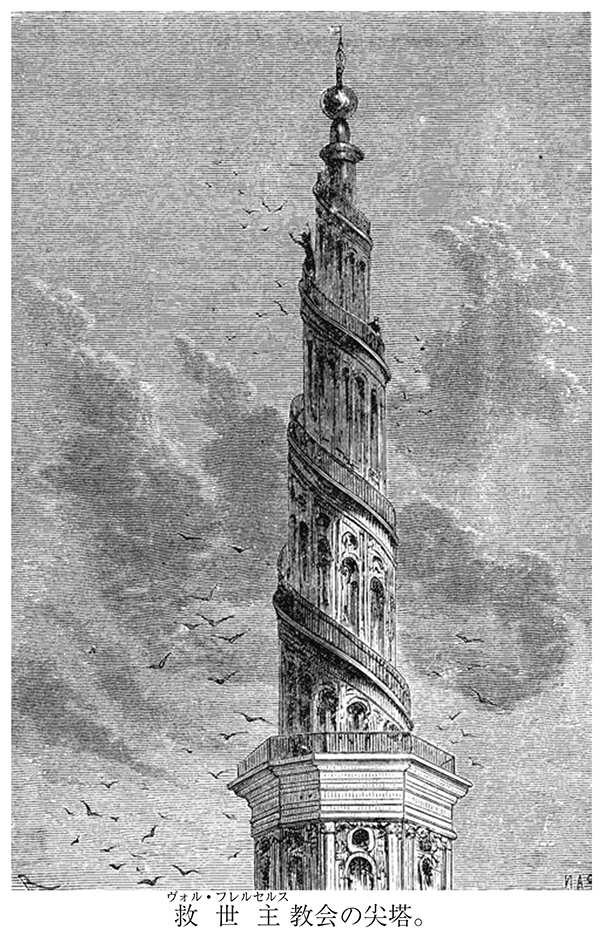
「のぼろう！」叔父が言った。
「だめです。きっと、眩暈がしますよ」私は答えた。
「だからじゃよ。まずは高さに慣れる必要があるからな」叔父は言った。「わしらはまず山にのぼって、それから火口の底にある噴出孔から降りていくのじゃから......」
「でも......」
「のぼると言ったら、のぼるんじゃ。時間を無駄にするもんじゃない」
そう言われると、私は従うしかなかった。通りの反対側にいる番人から鍵を受け取ると、私たちは階段をのぼっていった。
まずは叔父が注意深い足取りで、先に行った。私はそのあとからついていったのだが、すぐに恐怖を覚えた。情けないことに、たちまち眩暈がしてきたからだ。もしも私が鷲だったら、足が地上から離れても、もっと落ち着いていられただろう。教会の床が下に見えても、平気な顔をしていられただろう。けれども、私は鷲ではない。だから、そんな図太い神経は持ちあわせていないのだ。
それでも、教会の内部にいるうちは、まだマシだった。だが、階段を百五十段のぼって、顔に強い風があたるのを感じると、もういけなかった。私たちは尖塔の始まる展望台まで来たのだ。ここからは尖塔に沿って外の階段をのぼっていくことになる。転落から守ってくれるものと言えば、貧弱な手すりだけだ。階段の幅は上へ行くほど狭くなっていて、無限の高みまで続くように思われた。
「だめです！」私は叫んだ。
「なんじゃと？ この意気地なしめが！ のぼれ！」叔父の言葉には容赦がなかった。
しかたなく、私は手すりにしがみつきながら、叔父のあとについていった。景色を見ると、頭がくらくらした。風が吹くたびに尖塔全体が揺れる気がする。足がすくんで、持ちあげることができない。私は膝で階段をのぼり、それも怖くなって、腹ばいで進んだ。もう目をあけていることもできない。高いところにいると思っただけで、身体が震え、冷や汗が出てきた。
結局、最後は叔父に襟をつかんで引っ張りあげられ、私は尖塔の先にある金色の玉の下まで来た。
「よし、じゃあ、目をあけて、下を見ろ！」叔父が言った。「見ろ！ これは噴出孔の縁に立った時の練習だ！」
私は恐るおそる目を開いた。家々から立ちのぼる煙で空気が霞んで、その霞をとおして見る家はどれも平たく、まるで上から落ちてつぶれたように見えた。私のすぐ頭上では大きな雲が風に運ばれ、ものすごい勢いで流れていく。と、思った瞬間、雲のほうは動きを止めて、私や尖塔、そして尖塔の先についた玉のほうが信じられないようなスピードで動きだした。もちろん、目の錯覚だ。遠くを見ると、片方には緑の平野が広がり、もう片方では太陽の光に海がきらめいている。エーレスンド海峡ははるか北のヘルシンゲル岬まで続き、何隻もの帆船が本物のカモメの翼のような白い帆をあげて波の上をすべっていた。東にはうっすらと霧がかかっていたが、その霧をとおして、入り組んだスウェーデンの海岸線も見える。この眺望に、私は本気で目が回りはじめた。
だが、叔父がそばにいるので、また目をつぶるわけにはいかない。私は立たなければならなかった。立ちあがって、しっかりと下を見なければならなかった。こうして、高いところから下を見る最初の訓練が始まった。それは、一時間後、叔父がようやく「よし」と声をかけてくれるまで続いた。地上に戻って、道路の固い舗石を踏みしめた時、私の心はくたくたになっていた。
だが、そこで叔父が言ったことは――叔父は非情にも、こう言ったのである。
「よし、明日もここに練習に来るぞ」
その言葉に噓はなかった。その結果、私はそれから出航の前日まで五日の間、毎日、この訓練を行ったのだ。まあ、そのおかげで、よくも悪くも、高いところから下を見おろしても、眩暈を起こさずにすむようになったのであるが......。
＊原注 二フラン七十五サンチーム。約二千八百円。
そして、いよいよアイスランドに出発する日がやってきた。前の晩には、博物館の館長で、私たちのために船を見つけてくれたトムソン教授が、数通の紹介状を携えて、ホテルを訪ねてきてくれた。トムソン教授は親切にも、在ハンブルク領事のクリスチャンセン氏からの手紙を持って外務省に行き、アイスランド総督トランペ男爵、協働牧師のピクトゥルソン牧師、そしてレイキャヴィーク市長のフィンセン氏に宛てた紹介状を手に入れてきてくれたのだ。叔父は感謝のしるしに、トムソン教授の手を固く握りしめた。
こうして、二日の朝六時、私たちの荷物はヴァルキューレ号に積みこまれた。船長は私たちを甲板の後ろにある狭い船室に案内した。
「風はどうじゃ？」叔父が尋ねた。
「申し分ありません」船長は答えた。「南東からの追い風ですからね。帆を全部あげたら、たちまちエーレスンド海峡から出られますよ」
実際、しばらくしてヴァルキューレ号は、前檣帆や後斜桁帆、上檣帆や中檣帆など、すべての帆をあげ、沖に乗りだした。そして一時間後、気づいた時には、コペンハーゲンははるか後方の波間に消え、船はヘルシンゲルの沖にさしかかっていた。ヘルシンゲルと言えば、『ハムレット』の舞台として有名な場所である。そこに出てくるエルシノア城こそ、今、目の前にあるクロンボー城なのだ。まもなく地底に行って戻ってこられなくなると思うと、私は城壁にハムレットの亡霊が現われないかと目をこらした。
〈ああ、ハムレット！〉私は心のなかで叫んだ。〈この世に〝気高い狂気〟というものがあることを、あなたならきっと理解してくれるでしょう。潜るべきか、潜らざるべきか？ いや、生きるべきか、死ぬべきか？ あなたはこの永遠の問いの答えを探すため、私たちと一緒に地球の中心まで行ってくれるのではありませんか？〉
だが、城壁には何も現われなかった。第一、城は『ハムレット』が書かれたあとに火災により焼失し、現在のものは建てなおされたものなのだ。十九世紀の今、クロンボー城はエーレスンド海峡の北側で、海峡を出入りする船を監視する役目を果たしている。エーレスンド海峡には、毎年、国籍もさまざまな一万五千隻もの船が入ってきて、北海からバルト海に、そしてまたバルト海から北海に抜けていくのだ。
まもなく、クロンボー城は朝靄のなかに姿を消し、対岸のスウェーデンの町、ヘルシングボリにある中世の塔も見えなくなった。やがて、北海に続くカテガット海峡に入ると、穏やかな風のもと、船はわずかに向きを変えて、北北西に針路をとった。
ヴァルキューレ号はもともと貨物船で、今回の航海の目的は、レイキャヴィークに石炭と小麦、皿やカップなどの生活用品、ウールの衣服などを運ぶことだという（私たちはそれに便乗したのだ）。それほど大きい船ではないので、船長以下、船員は五人もいれば十分で、その五人は全員デンマーク人だった。帆船としては、おそらく優秀な船だと思われる。だが、帆船というのは、風を受けて走るという性質上、なかなか当てにならないところもあった。
「レイキャヴィークにはどのくらいで着くのじゃ？」船がカテガット海峡に入ると、叔父が船長に尋ねた。
「十日ほどですよ」船長は答えた。「フェロー諸島を抜けてくる北西からの突風に見舞われなければの話ですが......」
「だが、いずれにせよ、重大な遅れが発生することはないのじゃな？」
「ええ。リーデンブロックさん、どうぞご安心を......。そのくらいで着きますんで......」
船は夕方にはデンマークの北端にあるスカーイェン岬の沖を通過し、そこでまた針路を西に変えて、夜の間にスカゲラク海峡を抜けた。そうして、ノルウェーの南端にあるリンドネス岬の沖を通ると、いよいよ北海に入った。
二日後、ヴァルキューレ号はスコットランドの沿岸に近づき、ピーターヘッドの町を横目に見ながら、オークニー諸島とシェットランド諸島の間を抜けて、フェロー諸島に向かった。
オークニー諸島を過ぎれば、そこはもう大西洋だ。荒波を突っ切り、北風に向かってジグザグに帆走しながら、船はかなりの苦労の末にフェロー諸島に達した。そして、六月八日、フェロー諸島のいちばん西のミキネス島の沖を通過すると、ビアルネ船長はそのまま、まっすぐアイスランドの南端、ポートランド岬を目指した。
航海は順調で、さして問題になるようなことはなかった。私はなんとか船酔いにも耐えることができた。だが、叔父はすっかり揺れにやられてしまって、旅の間、ずっと苦しそうにしていた。だが、叔父にしてみれば、船酔いしたこと自体が恥辱だったのだろう。苦しみながらも憤然とした顔をしていた。
いずれにせよ、叔父はスネッフェルス山のことも、そこまで行く方法についても、ビアルネ船長に尋ねることはできなかった。そこで、そういったことを調べるのはレイキャヴィークに上陸してからのことにして、海にいる間は船室にころがって、船が揺れるたびにうめき声をもらしていた。〈まったく、地球の中心に行こうなどと、おかしなことを考えるから天罰がくだったのだ！〉正直言って、私はそう思った。
六月十一日、船はいよいよポートランド岬の沖に達した。よく晴れていたので、私たちはミールダルス氷河の威容を眺めることができた。岬はこんもりとした丘のようで、ただ海岸は切り立った崖になっていた。崖の下は砂浜だ。
その後、ヴァルキューレ号は海岸から適当な距離を保って、西に向かった。甲板に出ると、クジラやサメの大群が泳いでいるのが見えた。やがて、前方に半円形の穴があいた巨大な岩が現われた。激しい波がその穴を通りぬける時に、岩にぶつかり、白い泡となって砕けるのが見える。そのうちに、船はベストマンナ諸島に差しかかった。この諸島はいくつもの小さな島と岩礁からなっているので、海の上に岩をばらまいたように見えた。そこを過ぎると、ヴァルキューレ号はアイスランドの西南の端に達した。あとはレイキャネース半島をぐるっと回って、ファクサ湾に入るだけだ。
ここまで来たら、レイキャヴィークまではあとわずかだ。だが、そこで海が荒れはじめたので、叔父は甲板にのぼって、西南の風に激しく侵食された海岸の景色を眺めることはできなかった。
だが、事はそれだけではすまなかった。海が荒れたのは嵐の前兆で、その嵐のせいで、船はそれから二日間、すべての帆をおろして、近くの入り江に退避しなければならなくなったからだ。そして、ようやく嵐が過ぎさったあと、ヴァルキューレ号は再び帆をあげて出航すると、岬の沖の航路標識があるところまで来た。このあたりは岩礁が海面からかなり下のほうに隠れているので危険な水域らしい。しばらく待っていると、アイスランド人の水先案内人が小舟に乗って近づいてきて、私たちの船に乗りこんだ。その三時間後、ヴァルキューレ号はレイキャヴィークの沖合に錨をおろしていた。
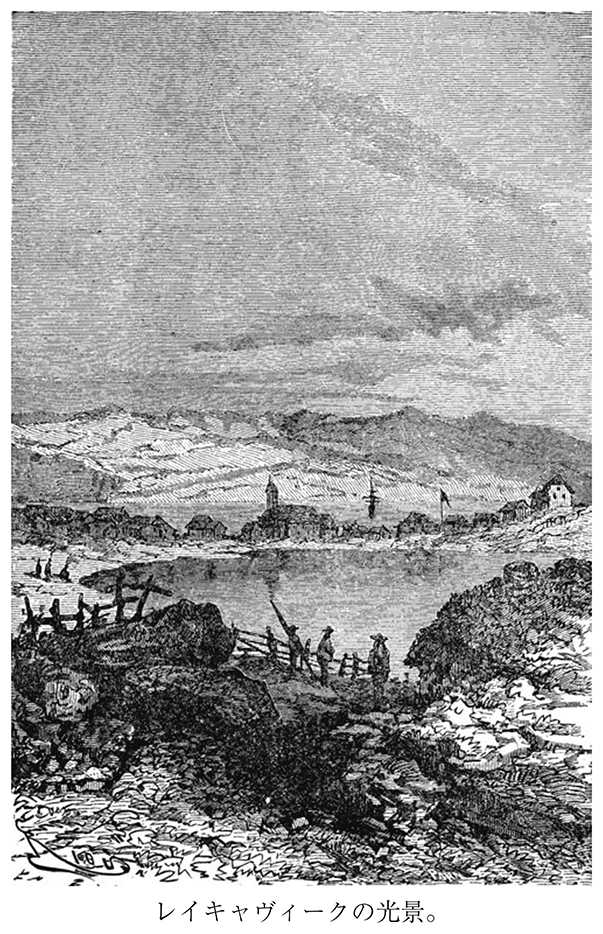
船が停泊したと知ると、叔父はようやく船室から出てきた。顔はまだ青白く、少しやつれていたが、全身から喜びを発散して、目には満足の光を湛えていた。
おそらく、船が到着したという知らせを聞いたためだろう、桟橋には町の人々が集まってきていた。どうやら必要な品物が届くのを待っていたらしい。
桟橋に行く小舟が横付けされると、叔父は真っ先に乗りこもうとした。その気持ちはよくわかった。なにしろ、この十一日間というもの、叔父にとって、船は〝波に漂う刑務所〟だったからだ。〝波に漂う病院〟と言ってもいい。だが、それでも甲板を離れる前に、叔父は私を船首に連れていき、湾の北の方角を指さした。そこには真っ白な雪を頂にかぶった双峰の山があった。
「スネッフェルス山じゃ。あれがスネッフェルス山じゃよ」叔父は叫ぶようにして言った。
それから、あわてて指を口にあて、「内緒だ」という仕草をすると、桟橋に向かう小舟に乗りこんだ。私もすぐに叔父のあとに続いた。十数分後、私たちはアイスランドの土を踏みしめていた。
私たちの姿を見ると、立派な軍服を着た、人のよさそうな男がひとり近づいてきた。それはただの官吏ではなく、どうやらこの人こそがアイスランドの総督、トランペ男爵らしい。叔父はすぐそのことに気づいたらしく、トムソン教授が手に入れてきてくれた、デンマーク政府からの紹介状を渡した。そして、デンマーク語で何か短い話をしたが、当然のことながら、私には何を言ったのかわからなかった。だが、こんなふうに挨拶をかわしただけで、総督が叔父に全面的な協力を申し出たことは理解できた。
叔父はレイキャヴィークの市長であるフィンセン氏からも熱烈な歓迎を受けた。市長は総督と同じく軍服に身を包んでいたが、やはり総督と同じく優しく穏やかな性格に見受けられた。
トムソン教授からは協働牧師のピクトゥルソン牧師への紹介状ももらってきていたが、牧師は今、北部の教区の見回りに行っているということで、会うことはできなかった。その代わり、レイキャヴィークの学校で博物学を教えているというフリードリクソン氏という先生の知己を得ることができた。現地に来て、こういった学者と知り合えるとは予想していなかったので、必要なことを調べるのに何かと助けてもらえると、叔父は大喜びだった。フリードリクソン氏は謙虚な人柄で、アイスランド語とラテン語しか話さなかったが、私にはいつもラテン語で話しかけてくれた。私はすぐにこの先生とは仲よくなれそうだと感じた（結局、私がアイスランド語もデンマーク語もできないせいで、アイスランドにいる間に話をすることができたのは、この先生だけということになった）。
先生は親切にも私たちに宿を提供すると申し出てくれた。そして、自宅の三つの寝室のうち、ふたつを私たちに使わせてくれた。私たちはハンブルクから運んできた大荷物とともに、まもなく部屋に落ち着いた（私たちが桟橋に到着した時、この荷物を見て、レイキャヴィークの住民たちは目を丸くしていた）。
ひと息つくと、叔父が言った。
「さて、アクセル、今度の旅行でいちばん大変なことは終わったな」
「どういうことです？ まだアイスランドに来ただけじゃないですか！」私はびっくりして言った。
「いや、もう大変なことは終わった。あとは地球の中心に向かって降りるだけじゃからな」
「まあ、そんなふうに考えるなら、それはそのとおりですが......。でも、下に降りたら、またのぼらなくてはいけないでしょう？」私は皮肉を言った。
「のぼるだと？ そんなことはなんとでもなる！」叔父は一言のもとに切りすてた。「わしはまったく心配しとらん。のぼることなどな。それよりも急がなくては......。こんなふうに時間を無駄にしちゃおられん。わしは図書館に行ってくるぞ。もしかしたら、何かサクヌッセンムが書いたものが見つかるかもしれんからな。そういったものがあったら、ぜひ読んでみたいのじゃ」
「じゃあ、その間、私は町を見物していますよ。叔父さんは町の見物はなさらないんですか？」
「さっぱり興味がわかんな。このアイスランドで、わしの関心があるのは地上じゃない。地下なのじゃ」
そこで、私はひとりで町に出て、適当にぶらついてみることにした。
言葉もわからずに、知らない町を歩くのは迷子になる危険が伴う。お互いに身ぶりでやりとりしているうちに、とんでもない誤解が生じる恐れがあるからだ。だが、レイキャヴィークでは迷子になる心配はなかった。通りが二本しかないので、道を尋ねる必要もないのだ。
レイキャヴィークは湿地にできた町で、ふたつの丘にはさまれた細長い形をしている。町の背後は溶岩に覆われ、今は固まった溶岩流が比較的なだらかな傾斜で町に向かって降りている。前面はファクサ湾だ。ファクサ湾はアイスランドの西海岸に南北に広がる長大な湾で、北縁をなすスネッフェルスネス半島の突端には氷河を抱く高山、スネッフェルス山がそびえている。湾には今、船影がなく、私たちを乗せてきたヴァルキューレ号だけが沖合に停泊していた。普段なら、イギリスやフランスの漁業監視船が錨をおろしているということだったが、今は島の東側を巡回しているらしい。
レイキャヴィークの二本の通りのうち、一本は海岸と並行していた。そこには赤い丸太を横に組んでつくった、商人たちの小屋が並んでいた。もう一本の通りは長さが短く、町の西側を小さな湖に向かって走っていた。そこには牧師館をはじめ、町の名士たちの家があった。
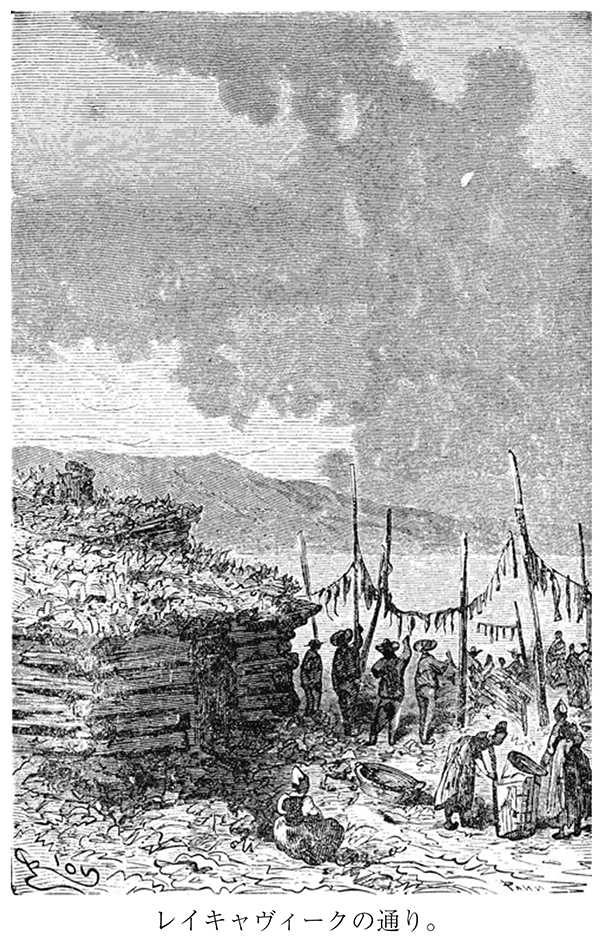
歩きはじめていくらもたたないうちに、私は町をすべて見おわっていた。町は単調で悲しかった。庭に生えている芝は色あせた古い絨毯のように精彩がなく、畑もどきの土地にはまるで『ガリバー旅行記』のリリパット王国の食卓に並べたくなるような小さなジャガイモやキャベツ、レタスがつくられていた。道端ではしおれかけたニオイアラセイトウが太陽の光を得ようと、必死になって首を伸ばしていた。
町の名士たちが住んでいる通りの中程には、土塀で囲まれた墓地もあった。墓地にはあまり墓標が立っておらず、まだいくらでも空き地があった。その先には総督の家があったが、ハンブルクの市庁舎に比べたら掘立小屋のようなこの家も、アイスランドの人々が暮らす粗末な家からしたら宮殿のように見えた。
そこからさらに湖のほうに行くと、町でただひとつの教会があった。教会は黒い石でできていて、プロテスタントふうの外見をしていた。石は火山の噴火で飛びだしてきたものを使ったものだ。それなら、石を切りだす手間と費用が省けただろう。教会は赤い瓦で覆われていたが、西からの強い風が吹けばあちこちに飛んで、付近の家に被害を与えるのではないかと思われた。
教会の隣の高台には《国立学校》があった。あとで宿を提供してくれているフリードリクソン先生から聞いたところ、この学校ではヘブライ語、英語、フランス語、デンマーク語の四つの言語が教えられているらしい。この四つの言語については、恥ずかしいことに、私はいくつか単語を知っているだけで、ほとんど話せない。デンマーク語にいたってはからきしだった。この学校には四十人の生徒がいるということだが、ここに入学したら、私はたちまちびりっけつの成績をとることになるだろう。生徒たちは寄宿舎の狭い二段ベッドに寝泊まりして、神経の弱い子は最初の夜から息苦しさを訴えるということだが、私には入寮の資格もないというわけだ。
それはともかく、町はびっくりするほど狭かったので、私は町の近郊にまで足を伸ばし、三時にはそのあたりの見物も終わっていた。町の周辺はわびしかった。木も茂っていなければ、草も生えていない。溶岩の土地があるだけだ。住民たちの家は土と泥炭を混ぜたものでできていた。四方の壁は真ん中に向かって傾いていて、ちょうど屋根をそのまま地面に置いたように見えた。もうひとつ特筆すべきなのは、壁に使っている土が肥沃なせいで、家には草が生えているということだ。家のなかは暖かいので、その熱を受けて草は成長し、たちまちのうちに家を覆ってしまう。したがって、干し草刈りの季節になると、草むしりをするということだった。さもないと、家畜が集まってきて、緑に覆われた家の壁を食べてしまうのだ。
町の周辺を散歩している間、私はほとんど住民に出会うことがなかった。住民の大半は商人たちの小屋が並んでいるほうの通りで、この国の主な輸出品であるタラの干物をつくっているのだ。タラを干して、塩をしては重ねていく。男たちは頑丈で、だが、重苦しい雰囲気を持っていた。見かけはドイツ人と同じく金髪で、考え深げな目をしているが、心の奥底では「もう自分たちは人類から仲間はずれにされてしまった」と感じているように見える。それもしかたあるまい。自然の厳しさという点で言えば、このあたりはもう北極圏と変わらない。寒さに震える氷の島だ。その氷の島に追放されて、そこで生きなければならないのだから......。私はなんとか男たちが笑うところを見られないかと、じっと様子を観察した。だが、男たちはまれに笑うことがあっても、ひきつったように顔をゆがめるだけで、楽しそうにしているところは見ることができなかった。
着ているものは黒いウールのゆったりした上着で、これは《ヴァドメル》という北欧特有の布地でつくられている。帽子はつばが広く、ズボンには赤い縁どりがしてあった。靴は皮の切れはしを折り返したようなものを履いていた。
いっぽう女たちは悲しげで、あきらめたような顔をしていた。いや、それはそれで感じは悪くないのだが、しかし表情というものがなかった。着ているものは厚手のブラウスに暗い色の《ヴァドメル》のスカート。娘たちは髪を花飾りのように編み、その上に毛糸で編んだ茶色い縁なし帽をのせていた。結婚した女性たちは、色つきのスカーフを頭に巻き、その上に白い布でつくった飾りをつけていた。
こうして、あまり心の浮きたつことのない散歩を終えると、私はフリードリクソン先生の家に戻った。その時にはもう叔父は図書館から帰ってきていて、先生と話をしていた。
夕食の支度ができると、叔父は驚くほどの健啖家ぶりを発揮した。航海の間、船酔いで何も食べられなかったので、胃袋が深い洞穴に変わってしまったのだ。出されたものはアイスランド料理というよりデンマーク料理だったが、その歓待ぶりはデンマーク式というよりはアイスランド式で、フリードリクソン先生の心のこもったもてなしは、昔のヴァイキングもかくやというものだった。この家で、私たちは主人以上にくつろいでいるような気がした。
食事の間の会話はアイスランド語で行われたが、叔父がドイツ語で繰り返してくれ、先生もラテン語をはさんでくれたので、なんとかついていくことができた。話題はいかにも学者らしく、学問に関することだった。だが、叔父はそのついでに地底旅行の話をしてしまわないよう細心の注意を払っていた。そうして、私に対しても、「あのことは決して口にするんじゃないぞ」と言うように、さかんに目配せをした。
だが、その後の話の成り行きで、フリードリクソン先生が叔父に「図書館での勉強の成果はどうですか？」と尋ねたことから、叔父は自分たちの計画について、まったく触れないわけにはいかなくなった。そのことは、これから順番に話していくが、
「あれがはたして図書館と言えるものかね！」先生の質問に、叔父は憤懣やるかたないといった声で答えた。「あの蔵書の数では......」
「なんですって？」先生は答えた。「私たちの図書館には八千冊の本があるんですよ。そのうちのほとんどはなかなか手に入らない貴重なものです。古いスカンジナビアの言語で書かれたものですからね。それに毎年、コペンハーゲンからも新しい本がぞくぞくと入ってきています」
「だが、その八千冊というのはどこにあるのじゃ？ わしが見たかぎりでは、本棚はがらがらじゃったが......」
「ああ、そういうことですか」先生は納得したように答えた。「リーデンブロック教授、本は国じゅうを巡回しているんですよ。氷に閉ざされている期間が長いこともあって、私たち国民は読書が好きなのです。農民でも漁師でも、文字が読めない者はひとりもいません。また本を読まない者もいません。私たちはせっかくの蔵書を書庫の鉄の扉の向こう側でカビさせるより、広く読者に提供して、興味のある人に読んでもらったほうがいいと考えているのです。その結果、本は人々の手から手へと回り、一年か二年しないと図書館の本棚に戻ってこないこともあります。戻ってきた時も、ぼろぼろになって......。でも、それでよいのです」
「しかし、そうなると、蔵書を目当てにわざわざこの土地にやってきた者はどうなるのじゃ？」叔父が残念そうに言った。「外国人とか......」
「しかたありませんよ。よその国の方は、ご自分のところの図書館を利用すればいいのですから......。繰り返しますが、農民にも漁師にも、この国の人々には本が必要なんです。アイスランド人には学問好きの血が流れているのですから......。一八一六年には文学協会が設立されて、順調に活動しています。これには外国の学者の先生も協力してくれています。文学協会はアイスランド国民を教育する目的でたくさんの本を刊行し、それによってアイスランドに対する真の貢献をしているのです」そこまで言うと、先生は急に口調を変えて続けた。「ああ、リーデンブロック教授、もし教授がこの協会の通信会員になってくださるなら、私たちにとってはこれ以上、嬉しいことはないのですが......」
叔父はすでに百前後の学会や協会のメンバーになっていたが、この申し出を鷹揚に受け入れた。フリードリクソン先生はこれにいたく感激して言った。
「ところで、教授は図書館でなんの本をお探しになっていたのですか？ 教えてください。もしかしたら、お役に立てるかもしれないので......」
私は思わず叔父のほうを見た。その質問は、今度の旅行の核心に触れるものだったからである。叔父はためらったような顔をしたが、しばらく考えて、おもむろに口を開いた。どうやら、情報を得るのに必要なところだけ、話すことに決めたらしい。
「それはありがたい。実は、わしはアルネ・サクヌッセンムの本を探しているのじゃ」
「アルネ・サクヌッセンムですか？」先生は驚いたような声を出した。「十六世紀の、あの偉大な博物学者であり、偉大な錬金術師であり、はたまた偉大な旅行者でもある、あのアルネ・サクヌッセンムですか？」
「そのとおりじゃ」
「アイスランドの科学と文学の誉れである？」
「そうじゃ」
「誰よりも有名な？」
「おっしゃるとおり」
「あの勇気と才能がひとつになった？」
「さすがによくご存じじゃ」
先生の口からアルネ・サクヌッセンムに対する賛辞が続くのを聞いて、叔父は喜びの海におぼれそうな顔をしていた。それから、フリードリクソン先生の目を見つめて訊いた。
「サクヌッセンムの本はどこに行ったら、見つかるのじゃろう？」
「ああ、残念ながら、サクヌッセンムの本はありません！」先生は答えた。
「なんじゃと？ アイスランドにはないということか？」
「アイスランドにも、ほかのところにもありません！」
「それはまたどうしてじゃ？」
「アルネ・サクヌッセンムは異端のそしりを受けて、一五七三年にコペンハーゲンで著作のすべてが焼かれたからです。いまわしい焚書役人の手によって......」
それを聞くと、叔父は嬉しそうに叫んだ。
「そうか。そうじゃったか！ いいぞ！ これで完璧じゃ」
その言葉に、先生は目をむいた。
「どういうことです？」
「そうじゃ。これですべて説明がつく」叔父は完全に自分の世界に入って続けた。「すべてはつながっている。これですべてが明らかになった。だからこそ、サクヌッセンムは、自分の発見が危険だと思い、隠さなければならんと思ったのじゃ。そこで、あの理解不能な暗号文のなかに秘密を......」
「秘密とは？」先生が尋ねた。「なんの秘密です？」
そこで、叔父はようやく我に返ったようで、しどろもどろに答えた。
「秘密というか......」
「もしかしたら、何か特別な文書でもお持ちだとか？」
「いや、そんなものはありゃせん。さっきのはただの仮定じゃ。まったくのな......」
「そうですか」叔父の困った顔を見て、それ以上は訊かないほうがいいと思ったのだろう、先生は言った。「いずれにしろ、ドイツにお帰りになるまでに、この国をしっかり調査なさってください。鉱物学的に見ても、アイスランドは素晴らしいところだと思います」
「もちろんじゃとも！」叔父は答えた。「だが、わしは調査に来るのが遅すぎたかもしれん。これまでにも調査に来た者は、たくさんおるのじゃろう？」
「ええ、教授。十八世紀には、デンマークの地理学者のオラフセンとポヴェルセンのふたりが国王の命によりやってきていますし、ウプサラの大司教フォン・トロイルも若い時にこの地にやってきて、地勢を研究しています。一八三五年にはラ・ルシェルシュ号に乗って、ゲマールとロベールというフランスの学者がアイスランドを訪れています（＊）。また最近では、レーヌ・オルタンス号に乗って、たくさんの学者がやってきて、この土地を研究し、アイスランドに対する知識を深めています。でも、研究はしつくされたわけではありません。やることはまだあります」
「なるほど」叔父の目がきらりと光った。だが、それを抑えるようにして、叔父は何くわぬ顔で続けた。「それはまたどんな分野で？」
「山ですよ。アイスランドの氷河とか火山については、まだほとんど研究されていません。ほら、たとえば、すぐこの近くにも素晴らしい研究対象があります。ファクサ湾の北にそびえるスネッフェルス山です」
「ああ、スネッフェルス山かね」叔父は言った。
「アイスランドでもいちばん興味深い火山のひとつです。この山の火口まで行った人はほとんどいません」
「休火山なのか？」
「ええ、ここ六百年くらい、活動を停止しています」
「それはいいことを聞いた」叔父はテーブルの下で何度も足を組みかえながら言った。そうしないと、おそらく嬉しくて踊りあがってしまうからだろう。「では、わしは手始めにそのスネなんとかという山の地質を研究することから始めるかな。えーと、スネ......スネフェッセルとか言ったな」
「スネッフェルス山です」先生は訝る様子もなく繰り返した。
会話のこのあたりはラテン語で行われていたので、その内容は私にもよくわかった。叔父は喜びが全身からあふれそうになるのを必死になって抑えていた。なにしろ、何気ないふうを装うのに、眉根にしわを寄せたり、口を尖らせたりするのだ。その様子は、年老いた悪魔がしかめっ面をしているようだったので、私は懸命に笑いをこらえた。
「いやいや、今の話を聞いて、決心がついたぞ」叔父は言った。「わしらはスネッフェルス山にのぼることにしよう。そうだ、ついでに火口の研究もしてみんとな」
「ええ、ぜひ、そうなさってください」先生が言った。「本当だったら、ぜひお供して、ご案内したいところですが、残念ながら、仕事があるのでそうもいきません。申しわけありませんが、今回は......」
「いやいや、もちろんじゃとも！」叔父は声を大きくして言った。「わしらもあまり人に迷惑はかけたくないのでな。だが、フリードリクソンさん、あなたの寛大なお申し出には心からお礼を申しあげますぞ。あなたのような素晴らしい学者が一緒に来てくれたら、どれほどありがたいか......。だが、若い学究の徒を育てるという、あなたの大切なお仕事に比べたら......」
まったく、白々しいとはこのことだ。幸い、先生は純朴な魂の持ち主なので、叔父の噓には気づかなかったようだが......。そうであることを私は心から願った。
と、先生が言った。
「スネッフェルス山から調査をお始めになるというのは、本当にいいことだと思いますよ。仔細に観察すれば、きっと興味深いことがたくさんわかるでしょう。素晴らしい収穫があるはずです。でも、スネッフェルス山にはどうやって行くおつもりですか？」
「海を渡ってじゃ。ファクサ湾を突っ切れば、いちばん早く着けるはずだ」
「おっしゃるとおりです。でも、それは不可能です」
「どうしてじゃ？」
「レイキャヴィークには船がないからです」
「なんと！ 船がない？」
叔父がびっくりしたような声を出すと、先生はうなずいた。
「ええ。ですから、沿岸をつたっていくしかありません。少し時間はかかりますが、でも、それはそれで面白いですよ」
「だが、それにはガイドが必要じゃな」叔父はつぶやいた。
すると、先生はこう言った。
「それなら、ひとり知っていますよ。ご紹介します」
「信頼のできる男かね？」叔父は尋ねた。「ちゃんと頭も働いて......」
「ええ。ケワタガモの猟師でしてね。名人級の腕を持っています。きっと満足していただけますよ。アイスランド語のほかにデンマーク語も完璧に話します」
「それはぜひご紹介いただきたい」叔父は勢いこんで言った。「いつ紹介してもらえるかな？」
「明日にでも......」
「今日ではいかんのか？」
「明日にならないと、こちらに来ないんですよ。半島に住んでいるものですから......」
「じゃあ、明日だな」そう言うと、叔父は残念そうにため息をもらした。
それからしばらくして、夕食が終わると、叔父はフリードリクソン先生に熱く感謝の言葉を述べた。実際、この夕食の間に、叔父にとっては貴重な収穫がいくつもあったのだ。まずはサクヌッセンムがどうして自分の知った秘密を暗号で書かなければならなかったのかについて。ふたつめは、フリードリクソン先生がスネッフェルス山にまでついてこないとわかったこと。最後は、明日になったら、スネッフェルス山の火口まで行くのに、ガイドが使えるということだ。
＊原注 一八三三年、フランスの探検家で地理学者のド・ブロスヴィルを乗せた船リロワーズ号がグリーンランドに到達したあと消息を絶った。そこで、一八三五年、デュペレ総督の指揮のもと、ラ・ルシェルシュ号による捜索が行われたが、ゲマールとロベールはこの捜索隊に加わって、アイスランドを訪れた。
その夜、私はもう一度、レイキャヴィークの海岸を散歩し、戻ってくると、すぐに板敷きのベッドに横になり、朝までぐっすり眠った。
目が覚めると、隣の部屋から叔父が大声で誰かと話している声が聞こえてきた。私はすぐに起きあがって、隣の部屋まで行った。
叔父はデンマーク語で話していた。相手は背が高く、熊のようにがっしりした男だった。おそらくこの男が昨日、フリードリクソン先生が言っていた、ケワタガモの猟師だろう。この身体つきからしたら、人並みはずれた力を持っているにちがいない。顔は大きく、それとは対照的に小さく落ちくぼんだ目をしている。その目は純朴そうで――だが、知的な光を宿しているように思われた。色は深みのあるブルーだ。髪は赤く、赤毛の多いイギリスでも立派に通用しそうなくらいで、男はその赤い髪を筋肉の盛りあがった肩まで垂らしていた。物腰は自然だが、めったに身体を動かすことはない。まるで身ぶりでコミュニケーションをするのを知らないか、馬鹿にしているみたいだった。ともかく、全体から受ける印象は、〝動かない〟というものだった。だが、決して無気力なのではない。沈着冷静なのだ。誰にも頼らず、自分の思うように仕事をする男。何があっても動じることなく、自分の考えを守りとおす男。おそらく、そういう男だと思われた。
いや、私はただの推測でそんなことを書いたのではない。叔父の話を聞く、その聞き方を見て、そういう性格だとわかったのだ。会話の間、叔父は大げさな身ぶり手ぶりを交えて、一方的にしゃべりつづけていたが、男のほうはじっと腕を組んだまま、ほとんどその姿勢を変えなかった。わずかに叔父の言葉に答えて、否定する時には首を左から右に動かし、肯定する時には上から下にふるだけだ。その動きも本当に小さなものだったので、肩まで垂れた長い髪が揺れることもなかった。これは動作を節約しているのではない。吝嗇っているのだ。この様子を見ただけで、この男が猟師だと職業を当てられる者はいないだろう。あらかじめ聞いていなければ、私にもわからなかった。だが、これほど身体を動かさずにいて、どうやって獲物をつかまえることができるのだろう？
その答えは、あとでフリードリクソン先生の話を聞いてわかった。猟師と言っても、この男はただの猟師ではない。あくまでもケワタガモの猟師なのである。ケワタガモというのは、その羽毛が珍重されていて、だからこそ、ケワタガモと呼ばれているのだが、この羽毛を手に入れるのに、身体を動かす必要はないのだ。
それはこんなわけだ。ケワタガモのメスは夏の初めにフィヨルドに沿った岩場に巣をつくる。そして、巣ができると、そこに自分のお腹の羽毛を敷きつめるのだが、猟師はその時を待って、羽毛を採集していくのである。すると、メスはまた自分の羽毛をむしって、巣のなかに敷きつめる。猟師はそれも採集して、メスの羽毛がすっかりなくなるまで、この作業を続ける。したがって、猟師はほとんど何もしなくても、羽毛を手にすることができるのである。メスの身体に羽毛がなくなると、今度はオスが自分の羽毛をむしって、巣のなかに敷きつめはじめる。だが、こちらの羽毛は固くて、大きすぎるので、猟師はとっていかない。そこで、巣は完成して、メスは卵をいくつか生む。やがて、雛が孵り、その翌年も羽毛の収穫ができるのである。
といっても、ケワタガモが切り立った崖の中腹に巣をつくるのなら、崖をのぼったり、降りたりしなければならないのではないか？ そう思う人もいるかもしれない。だが、ケワタガモは海辺の岩に巣をつくるので、そんなことをする必要もない。農業にたとえて言えば、ケワタガモの猟師は、種まきもしなければ、刈りいれもしない。ただ、収穫するだけなのだ。
だが、それはあとからわかったことで、この時はまだ、このハンス・ビエルケという名前の男が猟師なのに、どうしてこれほど身体を動かさないのか、不思議に思っていた。ハンスは静かで、落ち着いていて――興奮してしゃべりまくる叔父とは好対照をなしていた。
だが、それでも、ふたりはお互いにわかりあえたらしい。ガイドの報酬についても、言い争うことはなかった。ハンスは最初から相手の決めた金額で働くつもりだったらしく、叔父もまた相手に要求された金額を出すつもりでいたからである。これほど簡単な交渉はなかった。
取り決めの結果、ハンスはまず、私たちをスタピという村まで連れていくことになった。スタピはスネッフェルス山のふもとにある村で、私たちはそこから火口までのぼることになる。村までの道のりはおよそ二十二マイル。約三十五キロだ。それを聞くと、叔父は「なに、そのくらいなら、二日もあれば十分じゃ」と言った。
だが、よくよく話を聞くと、デンマークの一マイルは約八キロメートルだということなので、計算をやりなおして、さらに道が整備されていないことを考慮に入れると、七日か八日はかかると思われた。
この移動のために、ハンスは四頭、馬を用意してくれるとのことだった。二頭は私と叔父が乗っていくためのもの、あとの二頭は荷物を運ぶためのものだ。ハンスは、自分は普段どおり、歩いていくと言った。そうして、この道はよく知っているから、いちばん近い道を通っていくと約束してくれた。
だが、スタピに着いても、ハンスはお役御免になるわけではなく、雇用契約は切れないことになった。ハンスはこの〝科学調査〟が続く間ずっと、週に三リクスドラー（＊）の賃金で叔父のガイドをすることになったのだ。その代わりとして、ハンスが要求したのは、「賃金は必ず土曜日の夜に支払うこと」というもので、これは絶対に譲れないとのことだった。
出発は明後日、六月の十六日に決まった。叔父はハンスに手付金を渡そうとしたが、ハンスは一言のもとに断った。
「エフタ」
「あとで」私にデンマーク語の手ほどきをするつもりもあってか、叔父が翻訳した。
こうして、交渉が終わると、ハンスは部屋から出ていった。
「役に立ちそうな男じゃ」扉が閉まると、叔父が言った。「だが、今の時点ではまだ、自分がこれからどんなに素晴らしい役目を果たすことになるか、想像もつくまい」
「ということは、叔父さんはハンスを......」
「もちろんじゃよ。アクセル。地球の中心まで連れていくつもりじゃ」
出発までは二日あったが、その時間を、私は出発の準備に費やさなければならなかった。ここまで運ぶのにもちろん荷物はまとめてあったが、地底を目指す旅が始まった時にもっと使いやすいように、計器は計器、武器は武器、道具は道具、食糧は食糧というように、四つの袋に分けておくことにしたのだ。
計器の袋には照明装置なども含めて、次のようなものが入れられた。
一 アイゲルの摂氏温度計。この温度計は百五十度まで測れるが、この目盛りに意味があるのかどうか、私には疑問に思えた。気温が百五十度まで達するなら、私たちはとうに蒸し焼きになっているので、そこまでは必要ないし、反対に内部にある、高温で溶けた物質の温度を測るには、百五十度ではとうてい足りないからである。
二 水銀気圧計とアネロイド型気圧計。アネロイド型気圧計は通常よりもっと高い気圧を測ることができる。地中の気圧は下に行けば行くほど高くなるので、水銀気圧計では間に合わないのである。
三 ジュネーヴの時計業者、ボワソナス・ジュニアが製作した精密時計。時刻は完璧にハンブルクの時間に合わせてある。
四 方位磁石はふたつ。偏角計と伏角計だ。
五 夜間望遠鏡。
六 《ルームコルフ装置（＊）》による電気照明器具、二セット。この照明は手軽に持ち運びができ、安全性も高い。そのほかにカンテラ。松明。
武器はパードリー・モア社のカービン銃が二丁と、コルトの拳銃が二丁。だが、どうして武器が必要なのだろう？ 地底には私たちを襲ってくる住民はいないはずだし、猛獣だっているとは思えない。荷物を仕分けながら、私はあらためてそう思った。だが、叔父は計器と同じくらい武器を持っていくことに固執していた。銃器だけではなく、火薬についても、湿気に強く、通常の黒色火薬に比べてはるかに爆発力のある綿火薬を大量に持っていくことにこだわった。
道具については、ピッケルが二本、つるはしが二本、鉄のストックが三本、斧、ハンマー、それに鉄製のハーケンが一ダース。絹でつくった縄梯子や結び目のついた長いロープも数本ある。縄梯子の長さは百メートルもあったので、これはかなりの大荷物になった。
最後は食糧。食糧を詰めた袋は小さかったが、量が少ないわけではなかった。塩味の乾パンや干し肉など、かさは小さいが、三人で六カ月ほど、生きのびられるくらいは十分にあった。飲み物はジンだけで、飲料水は準備していない。ただ、水筒を持っていくだけだ。「どこかで湧水が見つかるはずじゃから、それを汲めばいい」と、叔父が言ったからだ。私は「水質が心配だ」とか、「沸騰していたら汲めないかもしれない」とか、「そもそも見つからなかったらどうするつもりですか？」と必死になって反対したが、叔父は「そんなものはなんとかなる。見つかると言ったら、見つかるのじゃ」と答えて、私の意見には耳を貸さなかった。
そのほかには旅に必要な小物として、先の丸くなったはさみ、骨折用の副木、生糸の布、包帯、湿布、絆創膏、瀉血用の受け皿など、あまり現実には使いたくないものが救急箱に詰められた。また、抗菌作用のあるデキストリンや消毒用アルコール、酢酸鉛の水溶液、エーテル、酢、アンモニアなど、怪我をした時のための薬品の入った小瓶、それから、重クロム酸カリウムなど、《ルームコルフ装置》を働かせてランプを灯すために必要な材料などもひとつにまとめられた。こういったものは計器と一緒にすることにした。
叔父は煙草の用意も忘れなかった。煙草の葉と点火用の火薬、火口、こういったものはベルトにつけた煙草入れに入れられた。ベルトには革の巾着も取りつけられて、そこには金貨や銀貨、小額紙幣がぎっしり詰められた。ほかにはゴムとコールタールで防水された靴が六足。これは道具の袋に入れられた。
「これだけ準備が整っていたら、どこまで遠くに行っても大丈夫じゃな」叔父は言った。
結局、十四日は荷物を仕分けるだけで終わった。夜はトランペ総督のところで半ば公式の送別会が開かれ、レイキャヴィーク市長のフィンセン氏、アイスランド医学会随一の実力者ヒャルタリン氏とともに夕食をとった。この会には、フリードリクソン先生は招かれていなかった。それもあって、夕食の間、私はどんな話が交わされているのか、ひと言も理解できなかった。ただ、叔父がひっきりなしにしゃべっているのを見ていただけだ。ちなみに、あとで聞いたところによると、フリードリクソン先生がこの会に招かれなかったのは、行政上のことでトランペ総督ともめているかららしい。ふたりは不仲で、ほとんど会う機会はないということだった。
翌十五日には、荷物の準備はすべて終わった。叔父はフリードリクソン先生からアイスランドの地図をもらって大喜びだった。この地図はオラフ・ニコラス・オルセン氏が作成したもので、縮尺は四十八万分の一、叔父が持っていたヘンダーソンの地図より、はるかに精密なものだった。版元はアイスランド文学協会で、測地はシール・フリサック氏、それをビヨルン・グムラウグソン氏が地形図に起こしたもので、鉱物学者に贈るなら、これほど素晴らしいプレゼントはなかった。
夜は先生と三人で、さまざまなおしゃべりをして過ごした。私はあらためて先生に好感を持った。明日は出発ということで、おしゃべりはかなり遅くまで続いたが、そのうちに眠気がさしてきたので、みんなは寝室にひきとった。といっても、私は不安が先に立って、なかなか眠りにつけなかった（おそらく叔父はそんなことはなかったろうが......）。
翌朝、五時に窓の下で馬たちがいななくのを聞いて、私は目を覚ました。すぐに起きあがって通りに出ると、ハンスが二頭の馬に荷物を積んでいるところだった。そばにはもう二頭の馬もいる。荷物を積むのに、ハンスはほとんど身体を動かしていないように見えた。だが、気がつくと、荷物はいつのまにか、馬の背中に乗っている。そこにはもう叔父も姿を見せていたが、叔父は何もしないで、ただがなりたてていた。おそらく、ああしろ、こうしろと、うるさく指図しているのだろう。だが、ハンスはそれを気にする様子もなく、黙々と仕事を片づけていた。
出発の準備は、六時になると、すべて整っていた。フリードリクソン先生が手を差しだすと、叔父はその手を固く握りしめ、「レイキャヴィークに滞在している間、最高のもてなしを受けて、大変感謝している」と、アイスランド語でお礼を述べた。私も自分の知っている、いちばんよいラテン語で、心から感謝の気持ちを伝えた。それから、私たちは馬に乗った。いよいよ出発という時、フリードリクソン先生は、はなむけの言葉として、ウェルギリウスの詩句を贈ってくれた。それは、これから不安な旅に出発する私たちにとってぴったりの言葉だった。
《運命がいかなる道を示そうと、ただその道を行かん（７）》
＊原注 十六フラン九十八サンチーム。約一万七千円。
＊原注 《ルームコルフ装置》は、《ブンゼン電池》と《ルームコルフ・コイル》から成っている。《ブンゼン電池》は消極剤に無臭の鉱物、重クロム酸カリウムを使った電池で、《ルームコルフ・コイル》とは電線を何重にも巻いて、高い電圧を得られるようにした《誘導コイル》のことである。ブンゼン電池でつくられた電気は誘導コイルを通って増幅され、放電現象によってランプの明かりを灯す。ランプは螺旋形の真空管で、そのなかには少量の炭酸ガス、もしくは窒素ガスが封入されている。電源を入れると、このガスが放電現象を起こし、真空管が持続的に、白く光るのである。旅行者はこの電池と誘導コイルを鞄に入れて、肩からかつぎ、ランプにつないで使用する。ランプの明るさは暗闇のなかを不自由なく歩けるくらいで、石油ランプとちがって、引火しやすいガスが溜まっているところでも爆発の心配はない。また、たとえ深海に潜ったとしても明かりが消えることはない。発明者のルームコルフは優れた物理学者で、この誘導コイルによって学者としての名を残した。また、この発明によって電池の実用化を進めたとして、一八六四年にフランス政府から五万フランの報奨金をもらっている。
７ 『アエネイス』第十巻。
空は曇っていた。だが、そのまま、大きく変化することはなかった。うんざりするくらい強い日差しになることも、どしゃぶりの雨になることもない。旅をするにはうってつけの空模様だ。
馬に乗って、知らない国を旅していると、気分が高揚する。旅の始まりは上々だった。私は自由気ままに見物を楽しむという旅行者の幸せを満喫した。そのせいで、地底を旅行するのも悪くないのではないかと思えるほどだった。
〈そうだよ。そうしたからと言って、この先、いったいどんな危険が待ち受けているというんだ〉馬に揺られながら、私は考えた。〈面白いことが待っているだけじゃないか！ 山にのぼるのは素晴らしいことだし、最悪の場合でも、もう噴火をやめた火口から下に降りるくらいだ。サクヌッセンムだって、せいぜいそのくらいのことしか、していないはずだ。地球の中心に至る道があるなんて、そんなのはつくり話だ。サクヌッセンムの空想を叔父さんが真に受けたにすぎない。だから、あれこれ心配せずにやってみればいいんだ〉
心のなかで、そんな結論に達した頃、私たちはレイキャヴィークの町の境を越えていた。
ハンスは先頭を歩いていた。早足で、その歩調はいつまでたっても変わらない。そのあとには、私たちの荷物を積んだ二頭の馬が続いている。馬たちはおとなしく、ハンスが手綱を引いてやる必要もないくらいだった。そのさらにあとを、のんびりと馬に乗った私たちがついていく。馬たちは小さかったが、力強かった。
アイスランドはヨーロッパにある島としては大きいほうから数えられる。面積は十万三千平方キロメートル、人口は六万人である。国土は南西、北西、北東、南東の四分区に分けられ、私たちは今、《南西分区》を北に向かっていた。
レイキャヴィークを出ると、ハンスはすぐに海岸沿いのルートをとりはじめた。あたりは痩せた草地で、一面の緑の原とはいかない。黄色い草がところどころに生えているだけだ。東を見ると、大きな山塊が朝霧のなかに霞んで見える。火山岩の一種で、表面がざらざらした粗面岩でできている山だ。時おり、霧が晴れると、さらに遠くの山々が雪を頂いていて、ちょうどそこだけ光を集めたように山肌を白くしているのが眺められる。空には灰色の雲がたなびき、山の上のほうを隠している。だが、いくつかの峰は、雲を突きぬけ、その上に顔を出していた。それは灰色の海に浮かぶ岩礁のように見えた。
山は時々、海のほうにまで、その長い足を伸ばしてきて、私たちの行く手を阻むことがあった。そうなると、草地はとぎれ、私たちの目の前にはごつごつした岩山が立ちはだかった。だが、そんな時でも、海岸沿いにはほんのひと筋、人や馬が通れるだけの道が残されていたので、ハンスは歩みを止めることはなかった。馬たちも速度を落とすことなく、本能的に安全な足場を選んで歩いていく。そういったこともあるので、叔父は馬に鞭をくれたり、叱咤激励したりはしなかった。一刻も早く目的地に着きたいという気持ちに変わりはなかったろうが、どうにか自重したのである。小さな馬の上でおとなしく背筋を伸ばしている、背の高い叔父の姿を見ると、私は微笑を禁じ得なかった。叔父は脚も長いので、馬に乗っても足が地面につきそうになっている。そのせいで、六本脚のケンタウロスが歩いているように見えるのだ。
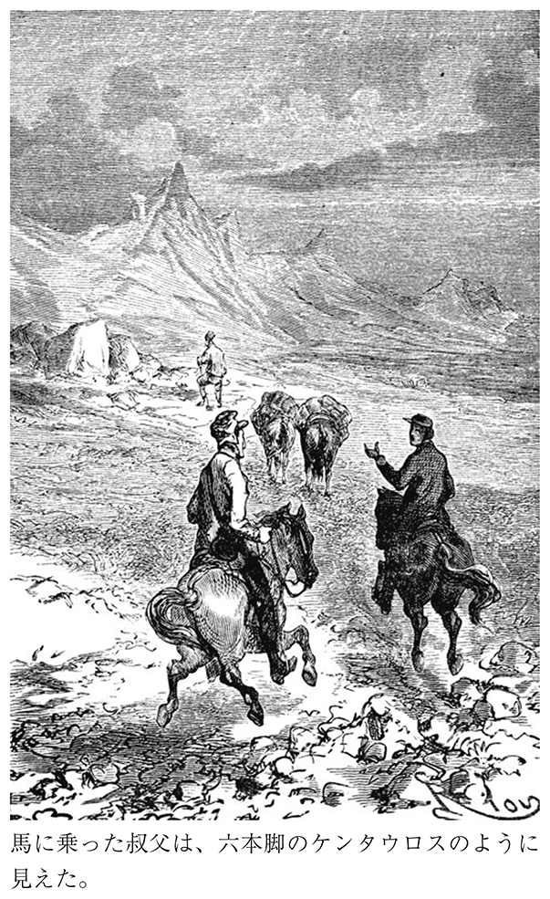
そんなことを思いながら、私が見ていると、馬に優しく声をかけながら、叔父が言った。
「よしよし、いい子じゃ。見ろ、アクセル。アイスランドの馬ほど、賢い動物はおらん。雪が降ろうが、嵐が来ようが、どんな悪天候でも歩みを止めることはないのじゃからな。岩があろうが、氷河があろうが、どんな悪路もおかまいなしじゃ。勇敢で、節度があり、自信に満ちておる。脚を踏みはずすこともないし、物音にびっくりして立ちあがることもない。行く手に川やフィヨルドが現われたとしたら――いや、そのうちに現われるだろうが、そうしたら、見るがよい。この馬たちはまるで水陸両生であるかのように、水のなかに飛びこみ、向こう岸までたどりつくじゃろう。だから、馬に鞭をくれる必要なんぞない。好きなように歩かせておけばいいのじゃ。そうしたら、一日に四十キロは進めるのじゃから......」
「ぼくたちはそれでいいでしょうけど......。でも、ガイドは大変でしょうね」私は言った。
「いや、その心配はいらん。なにしろ、あの連中は、自分でも気がつかないうちに歩いておるのじゃからな。特にハンスはそうじゃ。歩くのにだってほとんど身体を動かさないんだから、疲れるはずがない。それにハンスが疲れたというなら、わしはこの馬を貸してやろう。この姿勢でずっといたら、そのうち身体が痺れてくるからな。少しは身体を動かしたほうがよいのじゃ。まあ、腕は自由に動かせるからいいとして、脚のことを考えてやらんとな」
だが、ハンスは別に疲れた様子は見せず、私たちは順調に進んでいった。あたりにはこれといった集落もない。ただ、アイスランド語で《ボーエル》と呼ばれる農家がぽつんぽつんと、ところどころに建っているだけだ。そういった農家は木や土や火山岩でできていて、そのみすぼらしい外見は、まるで物乞いをする人が道端にうずくまって慈悲を求めているようだった。それを見ると、私たちも思わず途中で立ちどまって、農家の軒先に施し物を置いていきそうになった。道はすっかり草で覆われていて、もはや道であるとはわからない。もともとこの国には道などないうえに、かろうじてつくられた道もほとんど人が通らないので、少しずつ雑草が生え、何年かするうちに草地になってしまうのだ。
しかし、それでも、このあたりの地方は、レイキャヴィークに近いせいで、アイスランドのなかでは人家も多く、耕作地もあるほうだという。いや、これで人家が多いとは！ もしそうなら、残りの地方はもう砂漠のような無人地帯であるとしか考えられない。なにしろ、レイキャヴィークを出てからもう四キロメートルは進んだのに、私たちはまだひとりもこの土地の人間に出会っていないのだ。農家の入口には人影が見えない。草地を見まわしても、家畜を連れた牧童はいない。数頭の牛や羊が打ち捨てられたような風情で、わびしく草を食んでいるだけだ。まあ、この様子であれば、牧童がいても連れている家畜たちより、さらに人馴れしていないように見えるだろうが......。だが、それでも、このあたりはまだ恵まれた土地なのだ。これがこの先、地震や火山の爆発に侵された土地に行ったら、いったいどんな景色が待っているのだろう？
だが、私たちがその景色を目にするのはずっと先のことになる。オルセン氏の地図を見ればわかるが、その時はまだ、私たちは複雑に入り組んだ海岸沿いの道を進み、火山活動の痕跡が残る内陸の土地を避けていたからだ。実際、火山活動はアイスランド北東から南西にかけての内陸部に集中していて、そこでは北欧の言葉で《階層》と呼ばれる、いくつにも重なった層が地球のはらわたを見せるように露出している。それぞれの層は、凝灰岩、玄武岩、粗面岩、礫岩、斑岩などから成り、冷えて固まった溶岩流が地表を覆って、この世のものとは思えない恐ろしい光景を見せている。だが、その恐ろしさは実際に目にして初めてわかるもので、私たちもスネッフェルス山にのぼって、その噴火の爪痕を見るまで、この世の中にそんな殺伐とした風景があるとは、思ってもみなかった。そこは地球が激情に任せて、みずからの身を傷つけた地獄のような場所だったのだ。
それはともかく、二時間後、私たちはグフネスの町に着いていた。この町にはこの地域の《本教会》があるところから、土地の人々には《アオールキルキャ》と呼ばれていた。といっても、別に立派な聖堂があるわけではなく、数軒の家が並んでいるだけだった。まあ、ドイツの片田舎の村を想像してもらえばよい。ハンスはこの町で三十分の休憩をすると言った。私たちは三人でつましい食事をした。その間、ハンスは「この先、道はどうなっている？」といった叔父の質問に、ただ、「はい」と「いいえ」で答えていた。そして、叔父が「今日はどこで泊まるつもりじゃ？」と尋ねると、「ガルデール」とそれだけ言った。
私はすぐに地図を開いて、ガルデールがどこにあるか調べた。すると、レイキャヴィークから三十キロメートルほど行ったところにあるクヴァール・フィヨルドの入口付近に、その名前を発見した。それを知ると、叔父が不満そうな声を出した。
「たった三十キロか！ 全部で百七十キロあるのに、三十キロだけか！ これではただの〝散歩〟のようなものではないか！」
そう言って、叔父はハンスに意見しようとしたが、ハンスは何も言わず、馬の轡をとって歩きだした。
三時間後、あいかわらず、黄色く枯れた草地を歩きながら、私たちはグフネスからさらに十キロメートルほど行ったところにあるコッラ・フィヨルドのほとりに着いた。このフィヨルドは船で向こう岸に渡るより、岸に沿って迂回したほうがいい。そこで、左手に海を見ながら、しばらく歩いていくと、エユルベルクという名の《小教区》に入った。時刻はお昼の十二時で、もしこの教区の教会に時計があったら、正午の鐘を告げたことだろう。だが、アイスランドの教会はその教区同様、どれも非常に貧しい。したがって、時計などはついているはずもなく、正午の鐘も鳴りようがなかった。
このエユルベルクで馬たちを少し休ませると、私たちは海と山にはさまれた細い道を行き、この地域の《本教会》があるブランテール、そしてそこからさらに四キロメートル先にあるソイルボーエルまで一気に到達した。ソイルボーエルはクヴァール・フィヨルドの南岸にある町で、《本教会》に付属する《分教会》がある。
時刻は午後の四時だった。私たちはデンマーク・マイルで四マイル、すなわち約三十キロメートルの道のりを踏破したのだ。
クヴァール・フィヨルドは長さ三十キロメートルにも及ぶ長大な入り江で、このソイルボーエルの付近では最も幅が広く、向こう岸まで少なくとも四キロメートルはある。全体の形はラッパに似ていて、海岸線に沿って、高さ百メートルの崖がそそりたっている。崖は茶色の層と赤みがかった色の層が交互に重なっていて、見事な景観をなしていた。赤みがかったところは凝灰岩の層だ。水ぎわまで行くと、尖った岩に波があたって、大きな音をたてて砕け散っていた。それを見ると、私はアイスランドの馬がいくら賢くても、その背に乗って、フィヨルドを横断するのは無理だと思った。
「ねえ、叔父さん。もし馬に理性があったら、海に飛びこんで、向こう岸まで渡ろうとはしないと思いますよ。逆に、そんなことをするようだったら、馬の代わりにぼくが理性を発揮して、海に飛びこむのを止めますよ」
だが、叔父はアイスランドの馬は水陸両生だという自説を曲げる気はないようで、拍車をかけて、海辺に突進していった。私はどうなることかと思って、その様子を見つめた。が、幸い、馬には理性があったようで、波打ちぎわまで来ると、止まった。いっぽう、叔父は理性などかなぐり捨てて、本能的に馬の腹を蹴って、前に進ませようとした。だが、馬は首をふって、一歩も動かない。それを見ると、叔父はたちまち怒り心頭に発したのだろう、馬に罵声を浴びせながら、何度も鞭をくれた。すると、馬は後ろ脚を蹴りあげて、叔父をふり落とそうとした。だが、それでも叔父がしがみついていると、身体をかがめてあとずさりし、叔父の股の間から抜けようとした。叔父はもともと地面に足をつきそうになっていたので、叔父から自由になるには、それがいちばん簡単だったのだ。馬が股の間から抜けると、叔父は波打ちぎわにあるふたつの岩に足を置いて、仁王立ちの姿勢でその場に残された。それは海を見つめる《ロードス島の巨像》のようだった。
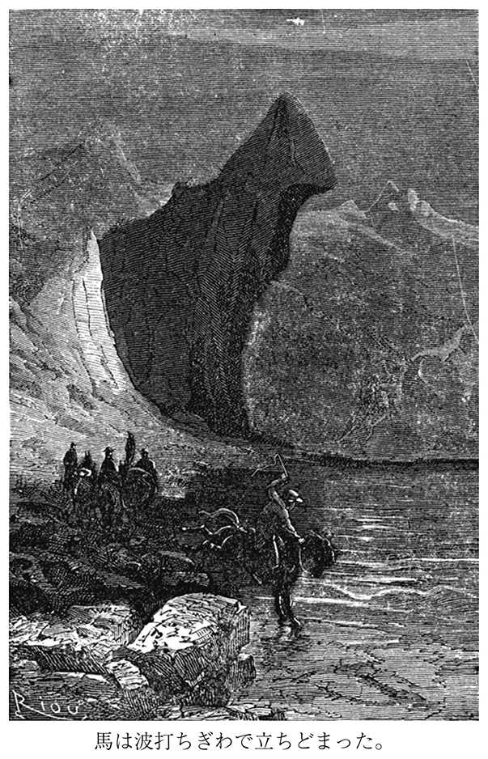
「畜生め！」叔父は叫んだ。その様子は騎兵から歩兵に格下げされて、きまりの悪さから虚勢を張っている士官のようにも見えた。
と、ハンスが叔父の肩に触れて、言った。
「ファリヤ」
「なんじゃと？ フェリーじゃと？」叔父が言った。
「デル」ハンスが船を指さして答えた。
「あそこか？」
「ええ、叔父さん、確かに船が見えます！」私は叫んだ。
「そうならそうと、早く言えばいいものを......。よし、出発じゃ」
が、ハンスが首を横にふって、言った。
「ティドヴァッテン」
「何ですって？」私は尋ねた。
「〈潮〉と言ったんじゃ」ハンスの言葉を訳して、叔父が答えた。
「つまり、潮が満ちるのを待たなければならないということですね？」
叔父はうなずいた。それから、ハンスに向かって尋ねた。
「フェルビダ？」
おそらく、「待つのか？」と、私の疑問を翻訳して伝えたのだろう。
「ヤー」ハンスは答えた。
叔父はその場で地団駄を踏んだ。だが、それにはかまわず、馬たちは船のほうに歩いていった。
船着き場から海を見ながら、どうして潮が満ちるのを待たねばならないのか、私にはその理由がよくわかった。今は潮の流れが速すぎるのだ。だが、満潮になれば、しばらくの間、海は静まり、外洋でもフィヨルドの湾内でも、船は安全に航行できる。
やがて、夕方の六時頃になって、ようやく潮が満ちた。叔父と私、ハンス、それに四頭の馬は、ふたりの渡し守が櫂で操る平底の船に乗った。船は小さく、今にも壊れそうだった。フェリーと言ったら、私はエルベ川を行き交う蒸気船しか知らないので、櫂で動かすこの船はいかにも貧弱に思えた。フィヨルドを渡るには、一時間ほどかかった。が、結局は何事もなく、反対側の岸にたどりつくことができた。
それから、陸路で三十分ほど行くと、私たちはこの地域の《本教会》があるガルデールに着いていた。
時刻はもう七時半を過ぎていた。この時刻からすれば、外はもう真っ暗になっていてもよかったはずだが、あたりは昼間のように明るかった。この地域は北緯六十五度で、北極圏に近い――アイスランドでは、六月と七月の間、太陽は沈まないのだ。
だが、気温のほうはかなり下がっていた。手足が冷える。それ以上に、空腹も感じていた。今夜はいったいどうするのだろう？ そう思っていると、幸い、私たちを泊めてくれる《農家》が見つかった。
私はほっとした。外見はみすぼらしいが、泊めてくれるのであれば、そこは宮殿にも等しい。私たちを迎えると、その農家の主は、黙って手を差しだし、それからあとについてくるように身ぶりで示した。
その指示どおり、私たちは嫌でもあとについていくしかなかった。廊下が狭く、並んで歩くのは不可能だったからだ。廊下は狭いだけではなく、暗かった。その暗い廊下を進んでいくと、両側に四つの部屋があった。台所と機織り機のある作業場、《バドストファ》と呼ばれる家族の共同寝室、そして客用の寝室だ。部屋としては、客用の寝室がいちばんよい。だが、この家を建てた人は、叔父のような背の高さの人間がこの家に泊まることなど、考えてもみなかったのだろう。叔父は天井のごつごつした四角い梁に、何度も頭をぶつけていた。
私たちが案内された部屋は広い土間で、窓からは半透明の素材を通して、薄い光が差しこんでいた。その素材を間近に見て、私はびっくりした。というのも、それは曇りガラスではなく、羊の腹膜だったからだ。ベッドは赤く塗った木製の台に干し草を敷きつめたもので、頭板と足板にはアイスランドの格言が刻まれていた。ベッドに寝られるとは思っていなかったので、私は大喜びした。ただ、家のなかには干した魚と、何かに漬けこんだ肉、そして酸っぱくなったミルクの臭いがして、それには閉口した。
その部屋で旅装をといて、ほっとしていると、この家の主の声が聞こえてきた。どうやら、夕食の支度ができたので、台所に来いと言っているらしい。アイスランドの貧しい農家では、火の気があるのは台所だけだ。そのほかの部屋は、真冬でも火を焚かないのだ。
主の誘いに、叔父は喜んで台所に向かっていった。すぐに私もそのあとに続いた。
台所のかまどはひどく原始的なものだった。部屋の真ん中に大きな石が置いてあって、その上でさまざまな燃料を燃やすのだ。煙は天井の穴から出るようになっている。台所は食堂にもなっていた。
私たちが入ってきたのを見ると、主は初めて挨拶するかのように、「サイルヴェルト」と言って、私たちの頰にキスをした。「サイルヴェルト」というのは、「ごきげんよう」という意味らしい。
主の挨拶がすむと、今度は奥さんが前に進みでて、やはり「サイルヴェルト」と言って、私たちの頰にキスをした。それから、夫婦はそろって右手を胸にあて、深々とお辞儀をした。
だが、台所にいたのは、夫婦だけではなかった。夫婦には大きいのから小さいのまで十九人の子供がいて、かまどの煙がもうもうと立ちこめるなか、部屋の真ん中でひしめきあっていたのだ。視線を動かすたびに、私は煙の向こうに、金髪で、ちょっと物憂げな顔をした子供たちの顔を発見した。それは顔の汚れた天使たちが輪になっているように見えた。
叔父と私はこの天使たちから大歓迎を受けた。というのも、部屋に入ってしばらくすると、私たちの肩には三人か四人の子供が乗り、膝の上にも、もう三、四人が乗って、あとは足元でうろちょろしているという状態になったのだ。言葉がしゃべれる子供たちは、考えられるかぎりのあらゆる口調で、「サイルヴェルト」と言い、まだしゃべれない子供たちは、ひたすら大声を張りあげた。
だが、その騒ぎも、「お食事ですよ」という言葉に静まった。と、そこに馬たちに餌をやりにいっていたハンスが戻ってきた。といっても、ハンスは別に秣をやってきたわけではなく、馬たちを放牧してきたのだ。経済的と言えば、確かにそのとおりだが、かわいそうに馬たちのほうは、岩に生えたわずかな苔や、ヒバマタのような、あまり栄養があるとは言えない海藻で我慢する羽目になった。それでも、明日の朝になれば自分たちのほうから戻ってきて、また今日と同じように働くのだ。
「サイルヴェルト」
そうみんなに挨拶すると、ハンスは誰に対してもまったく変わらぬ調子で、家の主と奥さん、そして十九人の子供にキスをしていった。
この儀式が終わると、私たちはテーブルについた。といっても、二十四人が座るにはテーブルは狭すぎるので、大人や大きい子供たちの膝に小さな子供たちが乗ることになった。文字どおり、人が重なりあっている状態だ。子供をふたりしか膝に乗せていない者は、恵まれていると言えた。
この騒ぎで、部屋のなかはまたしばらくざわめいていたが、それでもスープが運ばれてくると、たちまち静かになった。アイスランドの子供たちも、食事に夢中になると、おしゃべりをやめるのだ。スープは苔のスープだが、別に気味の悪いものではなかった。それから、二十年も前につくって酸化したバターに漬けた干し魚の大きな切り身が出てきた。アイスランドふうの味覚では、このほうがフレッシュバターよりおいしいらしい。ほかには《スキール》と呼ばれる、ネズの実の汁で香りをつけたフレッシュチーズ。このチーズにはビスケットが添えてあった。飲み物は牛乳を水で薄めた《ブランダ》というもの。どれも変わった食べ物だが、おいしかったかどうかは、私にはわからない。ともかく私は空腹で、デザートに出てきたそば粉の粥まで、一気にたいらげてしまったからだ。
食事が終わると、子供たちは家族の共同寝室に引きあげていった。大人たちは泥炭やヒース、牛糞、干した魚の骨をくべたかまどのまわりに集まった。そうして、しばらく暖をとると、それぞれの部屋にひきあげることになった。この国の風習にしたがって、奥さんは私たちのズボンと靴下を脱がせてくれようとしたが、私たちが丁重に辞退すると、あきらめてくれた。こうして、私はようやく干し草のベッドで身体を丸めることができた。
翌朝、私たちは五時にこの一家に別れを告げた。叔父は昨夜の歓待に感謝して、主が固辞するのにもかまわず、無理やり多額の謝礼を渡した。それがすむと、ハンスが出発の合図をした。
ガルデールを出て、しばらく行くと、馬の歩みが遅くなった。地面がぬかるんでいて、足をとられるようになったのだ。右側には切り立った崖が、自然のつくりだした巨大な要塞のようにどこまでも続く。私たちはその下を崖に沿うようにして進んでいった。行く手には時おり、小川が現われ、荷物を濡らさないようにと、私たちは浅瀬を選んで渡らなければならなかった。
行き交う人はほとんどいない。あたりはだんだん淋しくなってきた。だが、それでも、時おり、遠くのほうに幽霊のようなぼんやりとした人影が見えることもあった。私たちに気がつくと、その人影はあわてて踵を返し、逃げるように遠ざかっていった。けれども、時には、道を曲がった拍子に、そういった人影のひとつに間近で遭遇することもあって、私はそのたびに、恐ろしさで身が震えた。その人たちは、髪が抜けおち、肌はてらてらして、顔が異様にふくれ、みすぼらしい衣服からは全身を覆う、ただれた傷口が覗いていたのだ。
かわいそうに、この人々は私たちを見ると、挨拶をしようともせず、変形した手を隠して、急いでその場を立ち去ろうとした。だが、ハンスは普段と変わらぬ、落ち着いた様子で、その人たちに「サイルヴェルト」と挨拶をすると、叔父に向かって、何事かささやいた。叔父はしばらく耳を傾けていたが、やがて、私に説明してくれた。
「風土病じゃ」
その恐ろしい言葉の響きに、私は背中がぞくっとするのを感じた。叔父によると、この病気はアイスランド特有のもので、伝染はしないが、遺伝するという。そのため、この病気にかかった者は、結婚を禁じられているというのだ。
いくら人の姿を見ることができても、これではとうてい楽しい気分にはなれない。私は気持ちが暗くなった。それに合わせるように、風景もますます物悲しくなってきた。道の端に残っていたわずかな草地も、馬に踏まれて、私たちが通りすぎたあとには、泥にまみれてしまう。まるで茨の茂みのように背の低い樺の木立ちを除けば、木と言えるようなものは一本も生えていない。これといった動物もいない。かろうじて、馬が数頭――おそらく飼い主に秣を与える余裕がなかったのだろう、痩せた土地をさまよっているだけだ。時おり、大きな鷹が灰色の空を南にはばたいていくのが見える。だが、それだけだ。この荒涼とした自然を見ているうちに、私はさらに憂鬱な気分になり、思わず故郷の景色を思い出した。
そうやって、いくつか小さな川やフィヨルドを越えていくうちに、それまでとは比べものにならないほど大きな湾に出た。幸い、満潮の時刻だったので、私たちは潮を待つことなく渡し船に乗り、四キロメートル先にある対岸のアウルタネースという集落に着いた。
その後、アルファ川とヘータ川というマスやカワカマスのいる川を渡っていくうちに、時刻は夕方になった。そこで、私たちはたまたま見つけた廃屋に泊まることにした。あたりには民家がないので、そうせざるを得なかったのだ。中に入ると、そこは今にも北欧神話に出てくる妖精が現われそうなところだった。いや、その家には本当に妖精がいたにちがいない。それは〝氷の妖精〟で、ひと晩じゅう部屋を寒くして、私たちを凍えさせた。
その次の日は、特に変わったことはなかった。どこまで行っても物悲しい風景が続くなか、私たちはあいかわらず、湿地のぬかるみを進んだ。そして、夕方、全行程の半分を踏破すると、この地域の《分教会》があるクルーソルブトという町で泊まった。
翌日は六月の十九日で、私たちはおよそ四キロメートルも溶岩の上を行った。ちなみに、〈溶岩〉はアイスランド語では、《フレイン》と言うらしい。このあたりの溶岩は付近にあるいくつもの火山が噴火した時に流れてきたもので、地表で固まると、何本もの筋が太いロープのように長く伸びたり、蛇のようにとぐろを巻いたりしていた。それを見ると、過去の噴火の激しさがわかった。「過去の」というのは、この地域の火山はもう活動を停止しているからだ。だが、それでも、あちらこちらから温泉がわきでて、湯気を出しながら地上を這っているのが散見された。
本当だったら、このあたりで立ちどまって、溶岩や温泉をつぶさに観察したいところだったが、私たちには時間がなかった。私たちは進まなければならなかった。やがて、溶岩の土地はまた湿地のぬかるみに変わった。行く手には小さな湖がいくつか現われ、それを過ぎると、私たちは西に針路をとった。とうとうファクサ湾の北岸に到着したのだ。ここからはスネッフェルスネス半島が始まる。西の空を見あげると、曇り空を背景にスネッフェルス山のふたつの頂がそびえているのが目に入った。そこまではもう四十キロメートルもなかった。
馬たちはよく歩いた。湿地のぬかるみだろうが、溶岩の上だろうが、決して歩みを止めることはなかった。それにひきかえ、私はかなり疲れてきていた。いっぽう、叔父は最初の日と同じく、元気に満ちあふれていた。疲れを見せないという点では、ハンスと変わらない。これだけの道のりを散歩のようにこなす叔父の姿を見て、私は驚嘆を禁じ得なかった。
こうして、六月二十日の午後六時、私たちはブディールという名の海辺の村に着いた。この日は土曜日だったので、ハンスは賃金の支払いを要求した。叔父はすぐさま、それに応じた。この村にはハンスの親戚――叔父さんと従兄弟たちが住んでいたので、私たちはそこに泊めてもらうことになった。ハンスの親戚は私たちを歓迎してくれた。その親切につけこむつもりはなかったものの、できることなら、私は少しだけその好意に甘えて、一日か二日、ここで身体を休めて、旅の疲れがとれればと思った。だが、叔父は元気いっぱいだったので、まったくそうは思わなかったようで、翌日になると、私たちはまた馬の背にまたがることになった。
このあたりまで来ると、近くに山脈があることは土地の形状を見ているだけでわかった。花崗岩の岩盤が地表に顔を出して、楢の大木のように地上に根を這わせているのが観察されたからだ。この山脈は半島の先のスネッフェルス山までつながっている。その麓を海岸沿いに行くのだ。叔父はもう片時もスネッフェルス山から目を離さなかった。そうして、時おり、拳を握って、右手を高くふりあげた。それはあたかも山に向かって、挑戦状を叩きつけているように見えた。「おお、汝、誇り高きスネッフェルスの巨人よ。わしが行って手なずけてみせる」とでも言うように......。私たちは進みつづけ、それから二十四時間後、当面の目的地であったスタピの村に着いた。すると、宿泊を予定していた牧師館まで来たところで、誰に言われたわけでもないのに、馬たちが歩みを止めた。
スタピはスネッフェルス山のふもとにある村で、山から照り返す日光のもと、小さなフィヨルドの奥に広がる溶岩の土地に、三十軒ほどの家が身を寄せ合うようにして建っていた。フィヨルドの西側には屏風のように細長い山があって、湾に沿った部分は断崖になっている。東側もやはり台地が突然、行き場をなくして、湾に面して切り立っていた。いや、もちろん、それだけなら、特に珍しいことではない。スネッフェルスネス半島のほかのフィヨルドで見られる光景と変わらない。だが、そこでは世にも珍しい光景を目にすることができた。
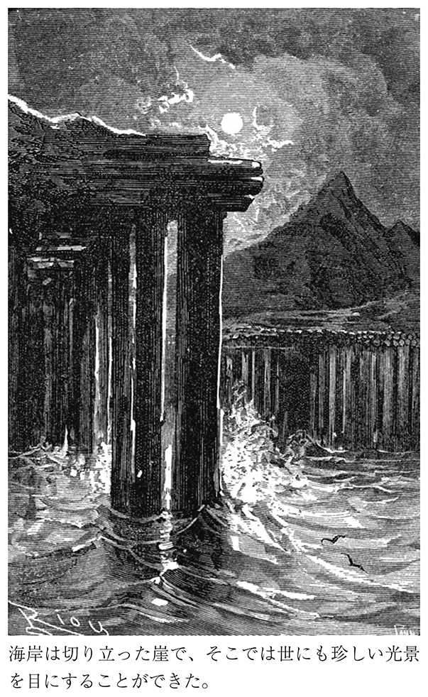
スタピの村の断崖は玄武岩でできていたが、ご存じのように、玄武岩は火成岩の一種で、自然のなかでびっくりするほど規則的な形をとることがある（８）。ちょうど〝自然〟が定規やコンパス、下げ振りを使って、人間と同じようにきちんとした建物をつくったようなもので、この断崖で見られるのは、そんな不思議な光景なのだ。ほかの場所で〝自然〟がつくりだす造形物は、使う道具と言ったら、せいぜい大槌で、それをでたらめにふるってつくるのだから、円錐形の山も四角錐の山も形としては荒削りだ。どうひいきめに見ても、ピラミッドの完璧さには遠く及ばない。線も奇妙に曲がりくねっていて、直線や真円は望むべくもない。ところが、ここでは人間が原始的な建築をつくりだす、はるか以前に、〝自然〟によって、幾何学的に厳密な建造物ができあがっていたのだ。その素晴らしさは、バビロニアの建築物やギリシアの建築物にもひけをとらない。いや、私は玄武岩がつくりだした、そういった幾何学的な光景としては、アイルランドの《巨人の石道》やスコットランドの《フィンガルの洞窟》があるということも知識としては知っていた。だが、実際に目にするのはこれが初めてだったのだ。
そして、実際に見ると、このスタピの村で見た断崖の光景はかぎりなく美しいものだった。
というのも、半島のほかのフィヨルドで見られる光景とちがって、この村の断崖は、高さ十メートルほどの柱が何十本も並んでいるように見えるのだ（９）。まさに列柱である。しかも、この断崖を横から見ると、フィヨルドの海岸線と平行にアーチ型のトンネルができていて、トンネルのなかには一定の間隔を置いて、外海の波が押しよせ、白い泡がたっている。トンネルは内側も柱が並んでいるように見えるので、それはもはやトンネルというよりは、アーチ型に設計されて、半円形の《飾り迫縁》を列柱が支える細長い柱廊のように思えた。時おり、海水で床を洗われる、美しい柱廊だ。柱廊の床には強い波で壁からはがれた玄武岩のかけらがころがっている。今はもう廃墟になった古代の神殿の残骸のように......。だが、この廃墟は永遠に古びることはない。〝時〟はこの上に積みかさなっていくのではなく、ただ、この上を通りすぎていくのだ。
そんな珍しい景色を堪能したあとに、私たちはスタピの牧師館に到着したのだが、このスタピの村は私たちが地上で過ごす、最後の村になるはずだった。レイキャヴィークからの長い道のりをまったく危険を感じさせず、ハンスはよくここまで連れてきてくれたものだ。私はそのことに感心した。そして、「このあともまだハンスは一緒に来てくれるのだ」と思うと、少しだけ安心した気持ちになった。
それはともかく、牧師館はどう見ても、ただの粗末な家だった。隣に並んでいる、数軒のあばら屋に比べても、きれいには見えない。居心地もよさそうには思えない。そう考えて見ていると、私は革のエプロンをして、手にハンマーを持った男が馬に蹄鉄を打っているのに気づいた。
「サイルヴェルト」ハンスが挨拶した。
「ゴッド・ダッグ」完璧なデンマーク語で、男が答えた。
「キルコヘルデ」ハンスはこちらを向くと、叔父に言った。
「牧師じゃと？」そうびっくりしたような声を出すと、叔父はあらためて私に説明してくれた。「アクセル、どうやらこの男が牧師のようじゃ」
その間、ハンスはこの〝牧師〟だという男に、私たちがここに来た事情を説明しはじめた。すると、牧師は仕事の手をとめて、博労のような口調で、馬に何か命令するような声をあげた。と、その時、牧師館から、恐ろしく背の高い女が現われた。たぶん二メートル近くはあるだろう。この女にアイスランド式のキスの挨拶をされたらどうしよう？ 私はたちまち心配になった。だが、その心配は無用だった。事情がわかると、女はキスの挨拶をするどころか、にこりともしないで、私たちを牧師館に導きいれたからだ。
案内された部屋は、この牧師館でいちばん悪い部屋のように思われた。狭くて、乱雑で、汚らしい。だが、そんな部屋でも私たちは我慢しなければならなかった。牧師はアイスランドの伝統的な〝もてなし〟の気持ちなど、まったく持ちあわせていないようだった。それに、〝神のしもべ〟とは名ばかりで、普段は馬に蹄鉄を打ったり、魚をとったり、猟をしたり、大工をしたりしていることもわかった。牧師の仕事は日曜日にだけするらしい。
といっても、別に、私はこの男の悪口を言いたいわけではない。アイスランドの牧師たちは、大半がこの男のように惨めな境遇にいるのだ。収入と言えば、デンマーク政府からもらうわずかな俸給と、教区から入ってくる《十分の一税》の四分の一だけだ。これでは合計しても、六十ハンブルク・マルク（＊）にすぎない。したがって、生きるために、馬に蹄鉄を打ったり、魚をとったり、猟をしたりする必要が出てくるのだ。だが、そういった仕事をしていると、知らないうちにそれぞれの職業に特有の態度や言葉づかいが身についてしまう。そこで、牧師にしては荒々しい態度で、粗雑な口のきき方をするようになるのだ。実際、その日の夜、この男と夕食をともにして、私はこの男が大酒を飲むことを神に仕える身として恥ずかしくないと思っていることを知った。
叔父もまたこの〝牧師〟がどんな男であるのか、すぐに気づいたようだった。目の前にいるこの男は、神に仕える誠実な牧師でも、知識にあふれた学者でもない。そう考えると、叔父はあまり居心地のよくない、この牧師館を早々に辞去して、計画の次の段階に移ることにした。ここで体力の回復をはかったりせず、すぐにスネッフェルス山にのぼろうというのだ。
というわけで、スタピに着いた翌日から、さっそく登山の準備が始まった。荷物を運びあげるため、ハンスは馬たちの代わりに三人のアイスランド人を雇った。だが、この三人は山頂まで行ったら、私たちをその場に残して、引き返すことになっていた。それだけはどんなことがあっても守るという約束になっていた。
また、この機会に、叔父はハンスに今度の旅行の目的を説明していた。叔父の言葉によると、それは「火山をあますところなく、徹底的に調査する」というものだった。
それを聞くと、ハンスは黙ってうなずいた。行先がどこであろうが、アイスランドじゅうを巡ることになろうが、あるいはその地下に潜ることになろうが、ハンスにはどうでもいいらしい。だが、私のほうはちょっとちがった。これまで、私は珍しい旅の風物を楽しんで、その先にどんな出来事が待ち受けているのか、あまり考えないようにしていた。けれども、これから何が起きるかを考えると、あらためて恐怖がわきあがってきたのだ。どうしよう？ 私は心のなかでつぶやいた。だが、もし叔父に反抗するなら、それはハンブルクでしておくべきだった。こんなふうにスネッフェルス山のふもとに来てからではどうすることもできない。と、突然、身の毛もよだつような恐ろしい考えが浮かんできた。そんな考えを思いついたら、どんな強靭な神経の持ち主だって、たちまち震えあがってしまうだろう――そのくらい、恐ろしい考えだ。
〈ぼくたちはこれからスネッフェルス山にのぼる〉私は自分に言った。〈それはいいだろう。そうして、スネッフェルス山の火口に行く。それもいい。そこまで行って、死なずに戻ってきたものは何人もいるからだ。だが、ぼくたちのすることはそれだけじゃない。もしあの疫病神のサクヌッセンムの言ったことが本当で、火口から地底に降りていく道があったとしたら、ぼくたちはそれを降りていかなくちゃならないんだ。おそらく地底の道は複雑に入り組んでいるだろうから、ぼくたちはそこで迷子になってしまうかもしれない。もし、そこで爆発が起きたら？ ああ、スネッフェルス山は死火山だと言うけれど、そんなことは誰にもわからない。もう一度、火山活動をする準備をしていないと、誰が言えよう？ 一二二九年の爆発のあと、活動を停止したわけではなく、ただ長い眠りに入っていただけで、その眠りから覚めないと、誰が言えよう？ 地底で眠る怪物のように......。そして、もしその怪物が目覚めたら？ その時はぼくはどうなってしまうのだろう？〉
いったん、そう思いつくと、その考えは頭から離れなかった。私はそのことを考えた。地底にいる間に火山が爆発してしまったら、どうなるのだろう？ 自分が溶岩と一緒に噴き出されるのは、まっぴらごめんだった。
心配のあまり、私はスネッフェルス山がまた噴火する可能性を叔父に尋ねてみることにした。もちろん、叔父の怒りを買わないよう、慎重に考えて、「そんなことは絶対にあるはずはないと思うんですけど......」と巧みに言いつくろったうえでのことだ。
叔父を見つけると、私は叔父が怒りだした時にとばっちりを食わないように、十分距離をとって、火山が爆発する心配を口にした。
すると、叔父はあっさりとこう答えた。
「そのことなら、わしも考えた」
いったい、どういう意味だろう？ 私は訝った。叔父はとうとう〝理性〟に耳を傾けるようになったのだろうか？ 計画を保留にすることを考えているのだろうか？ だが、いくらなんでも、その展開は都合がよすぎる。
私は叔父の真意を知るのが怖くて、それ以上、尋ねられなかった。と、しばらくして、叔父が続けた。
「そうじゃ。そのことなら、わしも考えた。スタピに着いてから、ずっとな。今、おまえが尋ねたことを......。軽率な行動は命とりじゃからな」
「そのとおりですとも！」私は力強く、返事をした。
「スネッフェルス山はもう六百年も沈黙している。問題はその沈黙が再び破られることがあるかどうかじゃ」叔父は言った。「だが、もし火山が爆発するとしたら、その前には必ず噴火の兆候を示す現象が起きる。そこで、わしはその現象が起きていないかどうか、このあたりの住民に訊いてまわった。地面も調べた。そうして、ひとつの結論に達したのじゃ。アクセル、はっきり言おう。噴火は起こらない」
私は驚きのあまり、反論することもできなかった。
「おまえはわしの言葉を疑うのか？」叔父が言った。「ならば、ついてこい」
言われるままに、私は叔父のあとについていった。牧師館を出ると、叔父は村の西側に屏風のように立つ玄武岩の山の終わったあたりから、内陸に通じる道に入っていった。その道をしばらく行くと、私たちは広い野原に達していた。もっとも、火山から噴出した物の堆積でできた台地を野原と言えるものなら、であるが......。そこは玄武岩や花崗岩のかけらなど、噴火の時に空から降ってきた岩のかけらで押しつぶされているかのように見えた。
あたりを見まわすと、あちらこちらから白い煙があがっている。この煙は火山活動で地下水が温められ、それが蒸気となって岩の裂け目から出てきたものだ。アイスランド語では、《レイクル》と呼ばれる。煙はもくもくと立ちのぼっていた。ということは、火山活動が激しいということだ。それならば、やはり私の心配は当たっているのではないか？ そう思った時、叔父がこう言った。
「見よ、アクセル、この蒸気を！ これは何よりも噴火がないということを証明しているのじゃ」
「なんですって！」びっくりして、私は叫んだ。
「よいか、アクセル」叔父は続けた。「それを知るには、まず蒸気と噴火の関係を理解しておく必要がある。噴火が近づくと、この蒸気はいったん量が増える。だが、噴火の間は完全に消えてしまう。というのも、火山が爆発する前は、火口の下には出口がふさがれた形で蒸気が溜まっていて、それがその近くの地面の割れ目から噴き出しているのじゃが、この火口に溜まっている蒸気の量が多くなると、割れ目から噴き出す量も多くなる。そのため、噴火が近づくと、普段よりも激しく煙があがるようになるのじゃ。しかし、火口の下に溜まった蒸気が爆発を起こして噴きあがると、地面の割れ目から出てくる必要はない。それ故、噴火の間はまったく煙があがらなくなる。そういう仕組みになっておるのじゃ。さて、そこで、わしがこのあたりの住民に訊いたところによると、ここしばらくの間、煙の量は増えておらん。したがって、火山が爆発する心配はないということじゃ。それに、噴火が起こる前には、風と雨がやんで、空気が重たくなる。そんなことも起こっておらんじゃろう？ だから、心配はないのじゃ」
「しかし......」
「そこまでじゃ！」叔父は強い口調で言った。「科学的な事実の前では、誰もが口をつぐむしかないのじゃ！」
私はうなだれて、牧師館に帰った。今度ばかりはどうすることもできなかった。叔父は科学的な議論で私を打ち負かしたのだ。だが、私はまだ希望を捨てなかった。スネッフェルス山の火口に降りても、そこから地下に入る口が存在しないかもしれない。そうなったら、世界じゅうのサクヌッセンムがやってきても、地球の中心を目指すことなどできない。おあいにくさまだ！
だが、その夜、私は地中深く、火山のなかに潜った夢を見た。山は噴火し、私は火山弾となって宇宙まで放りだされ、惑星軌道をぐるぐると回ることになった。まさに悪夢だった。
翌六月の二十三日は、前にも書いたとおり、出発の日だった（10）。私たちが表に出ると、ハンスはすでに食糧や道具を背負った荷かつぎの連中とともに外で待っていた。荷物のうち、鉄のストック二本と銃二丁、そして火薬は叔父と私が持っていくことになった。ハンスは水をたくさん入れた革袋も用意していた。これで、私たちが携帯する水筒の水と合わせると、水の心配は十日間はいらないことになった。
時刻は朝の九時だった。戸口には牧師と妻の大女もいた。たぶん、別れの挨拶をするために出てきてくれたのだろう。私は思った。だが、ふたりがそこにいたのは、とんでもない額の宿泊費を請求するためだった。内訳は訊かなかったが、そのなかには〝田舎の空気〟――臭気に満ちた田舎の空気の代金も含まれていたにちがいない。そう言いたくなるような額だ。この夫婦はろくなもてなしもしなかったくせに、スイスのホテルのような高い料金をふっかけて、私たちから金を強奪しようというのだ。
けれども、叔父は値切ることもなく、金を払った。これから地底を旅行しようという人間は、銀貨を二枚か三枚、余計に渡すことになったからといって、気にしないのである。
支払いがすんだのを見ると、ハンスは出発の合図をした。私たちはスタピの村をあとにした。
８ これは溶岩が冷えて固まる時に起きる《節理》という現象による。《柱状節理》、《放射状節理》など、いろいろな形状がある。
９ この状態は《柱状節理》という。
＊原注 九十フラン。約九万円。
10 実際は二十四日。ヴェルヌはここで一日勘違いをしている。
スネッフェルス山は高さ千五百メートル。粗面岩でできていて、アイスランド西部の山としては珍しく、島の中央部でよく見られるような山の形をしている。峰はふたつある。だが、私たちが出発した時、このふたつの峰は灰色の空に紛れて、はっきりと見ることはできなかった。ただ、巨大な雪の帽子を深くかぶっているのがわかっただけだ。
私たちはハンスを先頭に、一列になって進んでいった。道が狭く、並んで歩くことができないからだ。したがって、話をすることもほとんどできなかった。
そうやって、村の西側にある屏風のように切り立った山の終わったあたりから、山の反対側に出ると、そこには泥炭の平野が広がっていた。泥炭というのは、沼地で枯れて腐った植物が堆積してできたものである。それはつまり、この平野がかつては水に浸かっていたことを示していた。だが、そうやって、せっかくできた泥炭を人々はまだ採掘しているようには見えなかった。採掘したとしたら、おそらく今後一世紀はアイスランドじゅうの家庭を暖めることができるだろう。それほどの広さがあった。そのうちに、道は次第にのぼり坂になって、私たちは小さな渓谷に沿って進んでいった。渓谷は奥にいくと、時には高さが二十メートル以上になることもあって、両側の崖を見ると、厚い泥炭の層と薄い軽石凝灰岩の層（11）が交互に重なっているのが観察できた。
いや、私とて、鉱物学の権威として名高いリーデンブロック教授の甥である。地学的な興味にあふれる、この広大な自然の研究室を前にしたら、「地底に行ったらどうなるのだろう？」という心配とは別に、自分でも気がつかないうちに、岩石や地層の様子を観察していたのだ。
アイスランドは海底が隆起してできたという珍しい島だが、長大な地球の歴史から見ると、島が水面から顔を出したのは、それほど昔のことではない。また、島は今もなお、ほとんど気づかないくらいの動きで隆起している可能性がある。もしそうなら、その原因は海底よりさらに下の地球の奥深いところで、火山活動が行われているとしか考えられない。だが、そうだとすると......。私は心の中でつぶやいた。前にも言ったように、叔父はハンフリー・デーヴィーの説をもとに、火山活動は地球の表面だけで行われていると考えている。「あれは地球の表面のカリウムやナトリウムが空気や水と反応して爆発を起こしているのだ」と言って......。けれども、地球の奥深いところで火山活動が行われているなら、地球の中心を目指したいという叔父の希望は、ハンフリー・デーヴィーの説ごと吹っとんでしまうことになる！ サクヌッセンムの文書も噓だということになる！ そう考えたので、私はいっそう注意深く土地の様子を観察した。そして、この島がどんなふうにしてできたのか、その過程を考えてみた。
現在のアイスランドは、堆積岩ではなく、溶岩やさまざな種類の火成岩でできている。だが、そうなったのは島の火山が爆発するようになってからで、それ以前の状態は、「地球内部からの圧力によって隆起した〝海底の山〟が、海面から顔を出して島となった」ものにすぎなかった（したがって、島の地面を掘れば、太古の海底の地層を見ることができる）。
さて、この〝海底の山〟が隆起した原因は、さっきも触れたように、その真下で行われた火山活動である。だが、そこに溜まっていた溶岩は海底の隆起とともに上にのぼってきたものの、まだ地上には噴出しなかった。
ところが、そのうちに、やはり火山活動のせいで、島には北東部から南西部にかけて亀裂が走り、そこでできた裂け目から高熱でどろどろに溶けた粗面岩があふれだしてきた。ただし、この時はまだ爆発が起こったわけではない。島を二分するように、ぱっくりと裂けた口から、地球の内蔵物が流れでてきたのである。やがて、この溶けた粗面岩はゆっくりと島に広がっていき、裂け目付近では盛りあがって山脈をつくった。長石や閃長岩、斑岩などが見られるようになったのも、この頃である。
こうして溶けた粗面岩が島を覆い、それが冷えて固まると、島はかなり厚みを増して、堅固なものになった。ただ、それと同時に、裂け目もふさがれたので、火山活動で生じた水蒸気などのガスは、内部にこもって溜まっていくことになった。と、そのうちに、この溜まったガスが地表を覆っている粗面岩の殻を持ちあげ、山ができた。そして、この山の内側をまるで煙突のなかを行くようにガスがのぼり、その圧力で内側から山頂に穴をあけると、それが噴火口になり――要するに、そこで初めて火山が誕生したのである。
そのあとは、私たちのよく知っている火山現象が続く。ガスの圧力によって開いた火口からは、まず溶けた玄武岩が出てきた。今、私たちは泥炭の平野から坂道をのぼって、玄武岩の台地を歩いているが、ここで見られる光景は、溶けた玄武岩が流れてできた土地の典型といってよいものである。溶けた玄武岩は冷えて固まると、五角形や六角形の角柱になるが、私たちの足元では、そういった角柱がタイルを敷きつめたようになっているのだ（12）。火山が爆発する時、火口は山頂にできるだけではなく、山の中腹にもできる。私たちの行く手にある山の中腹には、つぶれた円錐形の火口跡がいくつも見えた。溶けた玄武岩はそこから流れてきたのだろう。
さて、溶けた玄武岩が火口から流れでて、やがてその火口がふさがると、あいかわらず火山活動で生じるガスによって、火山内部の圧力は再び高まり、まだ開いている山頂の火口から溶岩や火山灰、岩滓などが噴き出してくる（13）。実際、まわりを見まわすと、そういった溶岩流の跡や、火山灰や岩滓でできた凝灰岩の帯が、豊かな女性の髪のように山腹に流れている。
アイスランドの島は、こうしてできあがったのである。おそらく、これにまちがいはあるまい。だとしたら、もう一度言うがこの島は火山活動でできたものであり、まともな理性を持ちあわせている人間ならば、「島の内部が高熱で溶けた状態になってはいない」と考えることはできない。したがって、地球の中心に行くなどというのは、正気の沙汰ではないのだ！
そのことに気づいたら、叔父も計画を続けようとは言うまい。そう考えると、スネッフェルス山の頂を目指しながら、私は少し安心した。
そのうちに、道はだんだん進むのが困難になってきた。玄武岩の台地はいつしか岩のころがる斜面に変わっている。岩はぐらぐらしていて、いつ落ちてくるかわからないので、私たちはそれに備えて、いつも注意をしていなければならなかった。
だが、そんな斜面の道でも、ハンスはまるで平地を行くように歩いていた。時おり、行く手に大きな岩があると、その陰に隠れて姿が見えなくなることがあったが、そういった時でも、口笛を吹いて、私たちがどちらの方向に行けばよいか示してくれた。また、ところどころで立ちどまっては、石をいくつか拾い、目立つように並べた。帰る時に道がわかるようにという配慮からである（この配慮は、それ自体は素晴らしいものだったが、その後の私たちがたどった運命からすると、結局は無駄になってしまった）。
三時間後、斜面の道をのぼりきったところで、ハンスが止まれの合図をした。どうやら、ここから岩場をのぼっていくらしい。あんなに苦労して、ここまで歩いても、まだようやくスネッフェルス山の〝取りつき点〟にたどりついただけなのだ。私たちは全員で簡単な昼食をとった。叔父は早く先に進みたくて、いつもの倍の量を口のなかに放りこんだ。そうすれば、食事の時間が半分ですむからだ。だが、この時間は休憩の時間も兼ねていたので、出発するには、さすがの叔父もガイドの指示を待たなければならなかった。一時間後、ようやくハンスが出発の合図をした。それを見ると、荷かつぎの男たちが立ちあがった。男たちはハンスと同様、無口な性格らしく、食事の間も、ひと言も口をきかなかった。食べ方にも節度があった。
そこからは本当の登山が始まった。私たちは険しい山道をのぼっていった。雪をかぶったスネッフェルス山の頂はすぐ近くにあるように思えた。だが、それは山でよくある錯覚で、実際はそこに到達するまでに、長い時間が必要なのだ！ いや、時間だけではなく、体力もだ。神経も疲れる。なにしろ、足元には小さな石がころがっていて、それは土に埋まっているわけでも、草の根が絡んでいるわけでもないので、足の下でごろごろと動くのだ。足場を決めようと地面を探るたびに、足元の石が下にころがり、泥炭の平野までばらばらと落ちていった。
勾配は急で、傾斜が三十六度以上になっているところもある。そうなると、まっすぐに岩をよじのぼっていくことはできないので、苦労して迂回していくことになった。私たちは鉄のストックをロープ代わりに使って、助け合いながら進んだ。
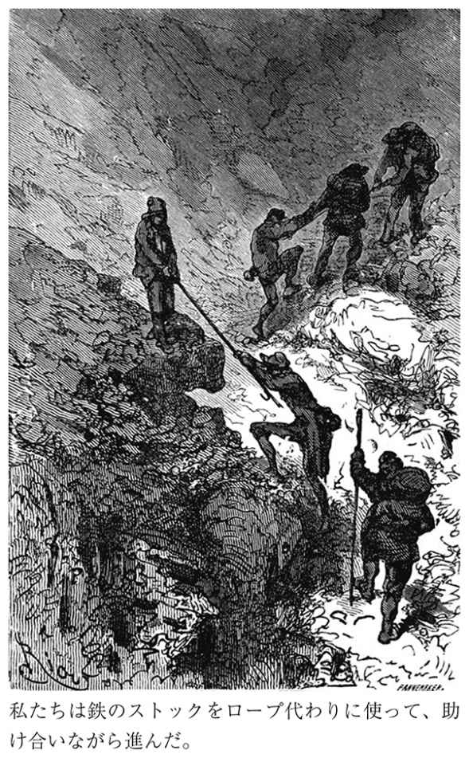
この間、叔父はつねに私のそばにいて、面倒を見てくれていた（それだけは言っておかねばなるまい）。私がころびそうになると、さっと腕を出して、支えになってくれるのだ。叔父自身は天性の平衡感覚を持っているようで、どんな場所でもよろけたりしなかった。荷かつぎをしている三人のアイスランド人たちは重い荷物をしょっているにもかかわらず、いかにも山国の住人らしく、軽い身のこなしでのぼっていった。
傾斜はあいかわらず急で、ふとスネッフェルス山の頂を見あげると、もしこの傾斜が続くなら、こちら側からではそこまでたどりつけないような気がした。だが、嬉しいことに、それから一時間もして、すっかり力を使い果たしたところで、雪に覆われた、広くなだらかな場所に到着した。大きな瘤のように丸くふくらんだ場所だ。その先はいよいよスネッフェルス山の頂に続く最後の斜面で、また勾配がきつくなっている。だが、そこはなんと階段状になっていた！ なんでも、火山が爆発した時に押し出された大量の石が斜面をころがり落ちる途中で、そんな形状になったということだ。この階段は、アイスランド語では、《スティーナ》と呼ばれているらしい。このあたりは傾斜がゆるやかなため、〝石の急流〟はここで止まっていたが、さもなければ海までくだっていって、そこにいくつか島をつくったことだろう。
だが、いずれにしろ、階段状になっているのは、もっけの幸いだった。勾配が多少きつくても、のぼるのが楽になるからだ。実際、私がちょっと立ちどまって、ひと息いれている間に、叔父やハンスたちは、すいすいとのぼっていって、私はあっというまに取り残されてしまったくらいだ。私のいる場所からは、叔父たちの姿がどんどん小さくなって、豆粒のようになってしまうのが見えた。
こうして階段状の道を二千段くらい上に行くと、時刻は午後七時になっていた。私たちは階段をのぼってくる前にいた、ゆるやかな瘤のあたりを見おろした。そこはふたつの峰を持つ、このスネッフェルス山の最上部のいわば土台になっていた。ふたつの峰は、頂上部分にある円形の火口をはさんで向かいあっている。私たちは今、その火口の縁を目指しているのだ。
千メートル下には、海が広がっている。まわりは万年雪だ。このあたりは空気が湿っているので、万年雪の境界線はアイスランドでも低いほうだという。六月だというのに、寒さは厳しかった。風が激しく吹きつけてくる。私はもう疲れきっていた。それを見ると、さすがの叔父も、もう私が一歩も歩けない状態だと悟ったようで、早く上に行きたい気持ちをこらえて、ここで休む決心をしてくれた。だが、叔父が休憩の合図をすると、ハンスが首を横にふって言った。
「オーヴァンフォール」
「上へ、と言っておる」叔父が説明した。
そして、ハンスにその理由を尋ねた。
「ミストゥール」ハンスは答えた。
すると、荷かつぎのアイスランド人のひとりが言った。
「ヤー、ミストゥール」
「どういう意味なんです？」心配になって、私は尋ねた。
「あれだ」そう答えて、叔父は西側の平野を指さした。
見ると、そこには竜巻が起こっていた。それは軽石を砕きながら、その粉塵とともに砂や埃を巻きあげて、平野を進んできた。そして、私たちが張りついているスネッフェルス山の岩壁に近づいてくると、太陽の光をさえぎって、岩壁の前に〝霧のカーテン〟をつくった。山はたちまち陰になった。もしこの竜巻が山を直撃したら、私たちはそれに巻きこまれてしまう。この現象は氷河からの冷たい風が海に向かって吹くと、起こりやすくなるらしく、アイスランド語では、〈霧〉の意味で《ミストゥール》と呼ばれている。だが、今はそんなことを言っている暇はない。
「ハスティクト、ハスティクト」ハンスが叫んだ。
デンマーク語はわからないが、私にはその意味がわかった。急げというのだ。ハンスは斜面を東側に回りはじめた。進みやすいように、傾斜のゆるい場所を選んでいく。やがて、竜巻は西の斜面に衝突した。そのショックで山は震えた。風に巻きあげられた石ころが、まるで火山が爆発した時のようにばらばらと落ちてくる音が聞こえる。だが、幸いなことに、私たちはその時にはもう山の反対側にいたので、竜巻の危険からも落石の危険からも逃れることができた。ハンスが竜巻に気づいてくれてよかった。そうでなければ、私たちの身体は竜巻の渦にもまれてバラバラになり、隕石のかけらのように、遠くの土地に降りそそいでいたことだろう。
竜巻はどこかに消えた。だが、ハンスは用心して、斜面の途中で夜を過ごさないほうがいいと判断した。そこで、私たちはジグザグに針路をとりながら、山道をのぼりつづけていった。火口の縁まではあと五百メートルくらいだった。だが、斜めにのぼったり、時にはくだることもあったので、全体の道のりは十二キロメートルほどになった。私たちは五時間かけて、その道を進んだ。疲れはもちろんのこと、寒さと空腹に、私はもうそれ以上は耐えられない状態だった。空気が薄くなってきたので、息も苦しかった。
そして、夜の十二時頃、私たちは薄暗がりのなか、スネッフェルス山の頂に着いた。つまり、火口の縁だ。少しでも風をよけるため、今晩は火口の内側で泊まることにしたが、そこに降りていく前に、私は〝白夜の太陽〟を見ることができた。太陽は水平線に沈まず、空のいちばん低いところから青白い光を放ち、私の足元で深く眠りについているアイスランドの島を照らしていた。
11 火山が爆発した時に噴出した火山灰が堆積してできた層。
12 これも柱状節理による現象である。
13 粗面岩も玄武岩もマグマが冷えて固まったもので、その意味では溶岩である（マグマの成分と冷える速さで、どんな岩になるかが決まる）。だが、ヴェルヌは粗面岩や玄武岩などの岩石と溶岩を別のものとして考えている節がある。
夕食を簡単にすますと、私たちはできるかぎり早く寝むことにした。岩のベッドは固いし、火口の内側とは言っても、そこはまだほんのとば口なので、上からは風が入ってきた。海抜千五百メートルの高さを吹く風だ。寝心地がよいとはとうてい言えない。だが、私は今度の旅行に出てきてから初めてと言っていいほど、ぐっすりと眠れた。夢も見なかったほどだ。
翌日は太陽が輝くなか、肌をさす冷たい空気に目が覚めた。私は花崗岩のベッドから身を起こし、まずは火口の縁、それからさらに数十メートル高いところにある峰の頂上にのぼって、眼下に広がる素晴らしい景色を楽しんだ。
スネッフェルス山には大きな火口をはさんで、峰がふたつあるが、私がいるのは南の峰だった。そこから見ると、私はほとんどアイスランドの島の全貌をとらえることができた。高いところから見るといつもそうなのだが、この時もほかの山々は高く感じられず、逆に海は高い位置にあるように見えた。要するに、あまり高低差が感じられないのだが、それはまるで足元にヘルベスメールのつくった立体地図があるようだった。谷は深く、四方に走って交差し、切り立った崖は井戸の内壁のようにまっすぐに下に降りている。湖は池のようだった。大河も小川に見えた。東を見ると、足元からは無数の氷河が続いていて、いくつもの峰が空に突きだしている。頂から薄く煙を吐いている山もあった。山々の起伏は雪をかぶったせいで白く、なだらかで、石鹼を細かく泡立てたように見えた。それはうねりの激しくなった海の表面を思わせた。反対に西を見ると、そこには本物の大洋が広がっていて、波が白く泡立っているところは雪山からそのまま続いているように見えた。陸地はどこで終わり、海はどこから始まるのだろう？ 私はその境界を見定めることができなかった。
そうやってしばらくの間、私は山頂からのこの素晴らしい景色に夢中になっていた。眩暈は起きなかった。私はようやく高いところから下を見おろすことに慣れたのだ。上空の澄んだ空気のなかで、太陽の光はきらきらと輝いていた。私は自分が誰であるかを忘れ、どこにいるかも忘れて、北欧神話に出てくる大気の妖精になったような気がした。エルフやシルフになって、空の高みに浮かんでいるかのように......。その想像があまりにも楽しいものだったので、私はもうじき「地下の深淵に向かわなければならない」という、自分の運命を忘れた。だが、その時、叔父とハンスが峰の頂上にのぼってきたので、現実に戻った。
叔父は西を向くと、空と海とが接するあたりを指さした。そこには薄い霧の向こうに、ぼんやりした陸地の影が見えた。
「グリーンランドじゃ」
「グリーンランド？」私は叫んだ。
「そうじゃ。あそこまでは百四十キロメートル（14）くらいしかない。氷が解ける時期には、流氷にのってシロクマがやってくるくらいじゃ。だが、まあ、そんなことはどうでもよい。わしらは今、スネッフェルス山にいる。この山には峰がふたつある。火口の向こうに見える北の峰と、わしらがいる南の峰だ。この南の峰がアイスランドではなんと呼ばれているのか、ひとつハンスに訊いてみようじゃないか」
そう言うと、叔父はハンスにデンマーク語で尋ねた。
「スカルタリス」ハンスは答えた。
叔父は勝ちほこったように片目をつぶって見せた。
「では、火口の底に降りていこう」叔父は言った。
スカルタリスの火口は漏斗のような形をしていて、口のところは直径が二キロメートルほどあった。目算したところ、深さはおよそ六百メートルくらいだろうか。底の部分は直径が五百メートルほど、周囲は千六百メートルほどしかない。したがって、火口の底に降りる斜面はそれほど急ではなかった。だが、噴火が起こった時、この漏斗の形をした火口の内部は、さぞかし、激しい炎と轟音に包まれたにちがいない。それは地獄のような光景だったろう。そんなことを想像しているうちに、この火口が巨大なラッパ銃の銃先のように思えてきて、背筋が凍りついた。
〈このラッパ銃には、おそらく弾丸がこめてあって、ちょっとしたショックで暴発するかもしれない。それなのに、その銃先から中に入っていくなんて、やっぱりこれは正気の沙汰ではない〉私は思った。
だが、今の状況では、もうあとには引けない。朝食後、あいかわらずハンスが表情ひとつ変えずに集団の先頭に立って歩きはじめるのを見ると、私は黙って、そのあとについていった。いつのまにか、空は曇っていた。
さっきも言ったように、火口の内部はそれほど傾斜はきつくないが、それでもハンスは火口の底に降りるのに斜めのルートを選んでいった。漏斗の内側をゆるやかなカーブを描きながら降りていく形だ。私たちは火山岩がごろごろしている間を通っていかなければならなかった。いくつかの岩は不安定で、ちょっと手が触れると、勢いよくころがりながら、火口の底に落ちていった。そのたびに火口のなかには不気味な音が響いた。場所によっては、小さな氷河が残っているところもあった。その上を行く時は、ハンスは普段よりさらに慎重になって、持っていた鉄のストックを使って、氷にクレバスがないかどうか確かめていった。足場が悪いところを行く時には、長いロープで全員をつないだ。そうすれば、ひとりがあやまって下に落ちても、全員で支えることができるからだ。だが、それほど用心を重ねても、危険はいつも身近なところにあった。
道はすべりやすく、ハンスは安全なルートを知っているわけではなかった。だが、それでも私たちはたいした事故もなく、下に降りていった。事故と言えば、荷かつぎのアイスランド人のひとりが縄梯子の入った袋を手から落としてしまったくらいだ。袋は火口の底にまっすぐに落ちていった。
そうして、昼の十二時頃、私たちはようやく火口の底にたどりついた。顔をあげると、頭上には火口がぽっかりと口を開いて、円形に切りとられた灰色の空が見えた。小さな空だが、空であることに変わりはない。その真ん丸な空のなかに、ただひとつ、スカルタリスの峰だけが天を突き刺しているのが見えた。
火口の底には噴出孔が三つあいていた。かつてスネッフェルス山が噴火した時に、溶岩や水蒸気が噴き出してきた口だ。その意味では本当の噴火口と言ってよい。サクヌッセンムによれば、このうちのひとつが地球の中心につながっているのだ。噴出孔はどれも直径三十メートルくらいの大きさだった。私はとうてい近くに寄って、中を覗きこむ気持ちにはなれなかった。だが、叔父はすばやく三つの噴出孔の位置を確かめると、興奮した様子で、何かわけのわからない言葉をわめきながら、あちらの穴からこちらの穴へ、こちらの穴からあちらの穴へと走りまわっていた。その間、ハンスとアイスランド人の仲間たちは、溶岩の上に座って、叔父の様子を眺めていた。きっと叔父のことを頭のおかしな人間だと思っていたにちがいない。
と、その時、叔父がひときわ大きな叫び声をあげた。私は叔父がつまずいて、噴出孔のひとつに落ちてしまったのではないかと思って、心配になった。だが、その心配は無用だった。叔父はまだ地上にいて、火口の中央にある花崗岩の反対側で両脚を広げ、両手を高く突きあげていた。花崗岩は大きく、まるで冥界の王プルートの彫像をのせる巨大な台座であるかのように思われた。その岩の前で、叔父は最初、驚いた様子をしていた。が、見ていると、それはすぐに歓喜に変わった。
「アクセル！ アクセル！」喜びを抑えきれないといった口調で、叔父は叫んだ。「早く！ こっちに来い！」
ハンスとアイスランド人はあいかわらず溶岩の上に座っていたが、私はすぐに叔父のもとに駆けつけた。
「見ろ！」叔父が言って、上のほうを指さした。
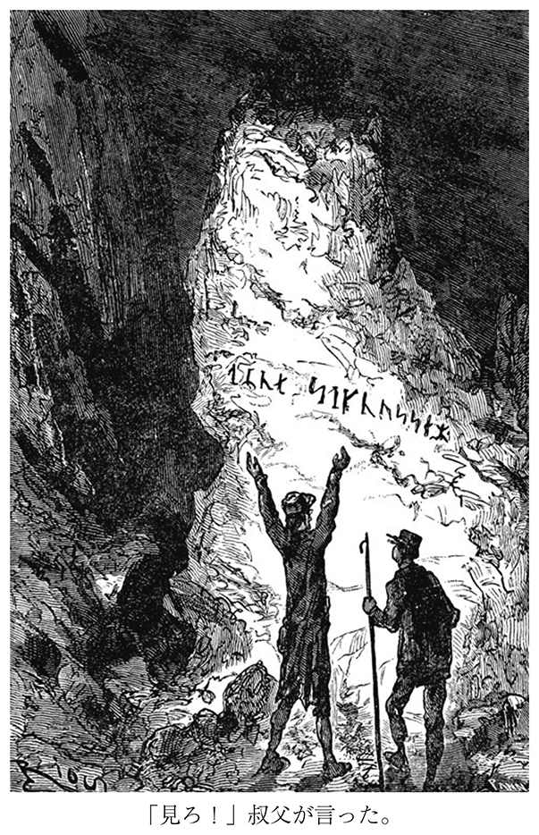
私は岩を見あげた。その瞬間、私にも叔父の驚きの理由がわかった。だが、叔父と喜びをともにすることはできなかった。というのも、そこには〝時〟の経過とともに半分くずれかかったルーン文字で、私がこれまで何百回となく呪った、あの名前が刻まれていたからだ。
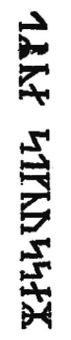
「アルネ・サクヌッセンム！」叔父が言った。「どうじゃ？ これでもまだ疑うというのか？」
私は答えなかった。これほど圧倒的な証拠を見せつけられては、どうすることもできない。溶岩のところに戻って、腰をおろすと、私はうなだれた。
そうやって、どのくらい悲嘆に暮れていただろう。私にはわからない。わかっているのは、ふと顔をあげて、あたりを見まわすと、火口の底には叔父とハンスしかいなかったことだ。アイスランド人の荷かつぎの者たちは、とっくにこの場を去って、火口の縁にのぼっていったのだ。今頃はたぶん、スネッフェルス山の外側の斜面を降りて、スタピの村に向かっていることだろう。
ハンスは大きな岩の下で静かに眠っていた。そこはちょうど流れた溶岩が冷えて固まったところで、平らなベッドのようになっていたのだ。叔父は罠にかかって落とし穴に閉じこめられた獣のように、火口の底をうろつきまわっていた。私は起きあがる気持ちも、またその元気もなく、ハンスにならって眠りにつくことにした。だが、その眠りのなんと苦しかったことか！ 半睡状態のなかで、私は山が震動し、地下の深いところで轟音をたてているのを聞いたように思った。
こうして、火口の底での最初の一夜が過ぎた。
翌日は前の日と同じく、空は曇っていた。灰色の雲が重く垂れこめ、スカルタリスの峰にかぶさっている。だが、空が曇っていることに気づいたのは、火口の底が薄暗かったからだけではない。叔父が怒っていたからだ。
私には叔父が怒っている理由がすぐにわかった。そして、わかると同時にかすかな希望がわいてくるのを感じた。それはこういうことだ。
火口の底には噴出孔が三つあるが、サクヌッセンムの文書によれば、地球の中心につながっているのは、そのうちのひとつだけ――六月の最後にスカルタリスの影が、その縁をかすめるものだけである。
つまり、この火口の底を巨大な日時計に見立てると、スカルタリスの鋭峰が落とす影は、この時計の針に相当するわけで、その針が示した噴出孔が地球の中心につながっているということになる。
しかし、空が曇って、太陽が出ていなければ、影はできない。したがって、針はどの噴出孔を差すこともなく、私たちはどれから下に降りればいいのか、わからなくなるのだ。
そう思うと、私はこのまま、曇りの日が続いてくれることを願った。今日は六月の二十五日だ。だから、あと六日間、太陽が顔を出さなければ、スカルタリスの影は火口の底に落ちることがない。どの噴出孔が地球の中心につながっているかは、また来年、確かめにくるよりほかないのだ。
この状況に、叔父がどれほど苛立ちを示したか、私の筆力ではとうてい描写することはできない。こうして一日が過ぎた。その間、火口の底にはいかなる影もできることはなかった。ハンスは自分のいる場所からまったく動かなかった。だが、心のなかでは、〈この先、自分たちはどうなるのだろう？〉と考えていたにちがいない。いや、もしハンスが何かを考えることがあるならば、であるが......。叔父はひと言も口をきかなかった。ただ、空を見あげて、火口の縁に重く垂れこめる、灰色の雲をじっと見つめていた。
翌二十六日は天気がくずれ、一日じゅう雪まじりの雨が降った。雨をよけるために、ハンスは溶岩を巧みに使って簡単な小屋をつくった。雨は火口の内側の斜面を流れてあちらこちらで滝をつくった。水流が斜面を削り、石を運んでいく。その音はすさまじい響きをたてて、火口じゅうを覆った。その音を聞き、またその光景を眺めながら、私はひそかな喜びを味わった。
叔父はもう爆発寸前だった。無理もない。ようやくつかまえかけたと思ったチャンスが目の前から逃げていこうとしているのだ。この事態を前にしたら、どれほど冷静な男でも、自分を抑えることはできないだろう。
だが、こと天気に関して言うなら、悪いことばかりは続かない。曇る日もあれば、照る日もある。叔父に激しい絶望を与えながら、空はそれと同じくらい大きな喜びを用意していた。
翌二十七日はまだ曇っていたものの、七月一日まであと三日となった二十八日の日曜日には、まるで月の形の変化が天気の変化をもたらしたとでも言うように、突然、天気が変わったのだ（15）。朝、起きると、火口の底にはあふれんばかりの太陽の光が降りそそいでいた。そして、この朝日を受けて、火口じゅうの岩や小山はもちろん、小さな窪みや石ころまで、少しでも凹凸のあるものは、地面に影をつくっていた。火口の縁も影を落とし、なかでもスカルタリスの鋭峰は西の斜面に長い影をつくっていた。その影は、太陽が東から南に高くのぼるにつれて、まるで生きているようにだんだん短くなりながら、北西から北北西、それから北を差すようになっていった。叔父は大喜びで、その影と一緒に歩いていった。
そして、太陽が南中して、いちばん影が短くなった時のことだ。影は中央の噴出孔を差すと、その縁をそっとかすめていった。
「ここだ！」叔父が叫んだ。「この噴出孔だ！ いざ、地球の中心に向かって、出発じゃ！」そう言うと、叔父はその言葉をもう一度、デンマーク語で繰り返した。
私は思わず、ハンスを見た。
「フォリュート！」ハンスは答えた。
「そうじゃ。前進じゃ！」叔父が繰り返した。
時刻は午後一時十三分だった。
14 実際には五百キロメートル。
15 ヨーロッパではそういった民間伝承がある。
いよいよ本当の旅が始まろうとしていた。これまでの旅は疲れるものではあったが、困難なものではなかった。だが、これからは踏みだす足の一歩一歩が困難の上を行くものであると言ってよかった。
この火口の底に降りて以来、私はまだ噴出孔を覗いていなかった。これから潜っていくことになる深い井戸を......。だが、これ以上はもうどうすることもできない。ついにその時が来てしまったのだ。もちろん、私はここで冒険に挑戦するのをやめて、スタピの村に引き返すこともできる。だが、ハンスを見ていると、そうするのが恥ずかしくなった。ハンスはまるでなんでもないことのように、この冒険を静かに受け入れ、危険に身をさらすことなど、まったく気にかけていないように見えた。それを思うと、ハンスに比べて、自分はなんと勇気がないのだろうと、私は赤面した。叔父といるのが私ひとりなら、おそらく議論を始めて、叔父を説得しようとしていただろう。だが、ハンスのいる前では、私は口をつぐむしかなかった。私はかわいいヴィールラント娘、我が愛しのグラウベンのことを思い出した。そうして、中央の噴出孔に近づいていった。
前にも言ったように、噴出孔の直径は約三十メートル、周囲は百メートルくらいである。その下には何百メートルかは知らないが、溶岩ののぼってきた道――つまり〝火道〟が底まで続いているのだ。私は穴の縁にある岩の後ろに立って、その岩ごしに火道を覗きこんだ。と、たちまち足がすくんで、髪の毛が逆立った。眩暈がして、酒に酔った時のように、頭がくらくらした。身体の重心がどこにあるのかわからない。そのうちに、穴が私を誘っているように見えて、私は思わず岩から身を乗りだした。そして、危うく落ちそうになった瞬間――ハンスに腕をつかまれた。コペンハーゲンの救世主教会の尖塔で、あれほど高いところから下を見おろす訓練をしたのに、本当に必要な時に、その成果は現われなかったのだ。
しかし、それでも穴のほうをちらちらと覗き見しているうちに、私は噴出孔のなかがどうなっているのか、だいたいの様子をつかむことができた。火道の壁は、ほぼ垂直に切り立っていたが、あちらこちらに飛びでた岩があって、そこを足がかりにすれば、降りていくのは難しくなさそうだった。いわば自然の階段があるようなものだ。だが、この階段は、踏み段はあっても、つかまるところがなかった。穴の縁の岩にロープを結びつけて、中に垂らせば、つかまるところはできるが、しかし、私たちが全員、穴の底に降りたら、どうやって結び目をほどいて、ロープを回収すればよいのだろう？
だが、叔父はこの問題を解決するのに、非常に簡単な方法を使った。何本かのロープのうち、親指の太さのロープを長く伸ばすと、半分くらいのところを穴の縁の溶岩にひっかけ、両端を火道に垂らしたのだ。こうすれば、私たちは二重のロープで身体を支えながら、下に降りていくことができる。ロープをふたつ合わせて、しっかり握っていれば、岩からロープがはずれる心配もない。そのロープの全長は百二十メートルほどだったので、六十メートルくらい降りたところで、まだ下に着いていなければ、一度、そこで片方の端を引っ張って、ロープを回収する。そうして、また手近な岩にロープをひっかけて、同じことを繰り返せばよいのだ。
準備が終わると、叔父が言った。
「さて、それでは荷物をどうするか決めよう。荷物は三つに分けて、ひとりひとりが背負うことにする。まあ、背負っていくのは壊れやすいものだけじゃが......。下に落ちたら、取り返しのつかないものだけじゃ」
もちろん、この下に落ちたら、取り返しのつかないもののなかに、私たちは入っていない。叔父は私たちが転落することは考えていないのだ。
「ハンス」叔父はまずデンマーク語で言って、私にも訳してくれた。「きみは道具の入った袋と、食糧の三分の一を背負ってくれ。それから、アクセル、おまえはやはり食糧の三分の一と武器をかついでほしい。わしは残りの食糧と計器を持っていく」
「でも、服はどうするんです？ ほかのロープや縄梯子も......。それは誰が背負っていくんです」
「そいつらはひとりで降りていくさ。壊れやすくないからな」
「なんですって？」私はびっくりして尋ねた。
「見てろよ」
こういった時、叔父はいつでもいちばん大胆なやり方を躊躇なく実践する。そういうやり方が好きなのだ。ハンスに声をかけると、叔父は服やロープなど、壊れやすくないものをひとつの荷物にまとめさせた。そうして、大きなボールのような形にして、ひもで固く縛ると、噴出孔のなかに投げこませた。荷物はあっというまに、下に吸いこまれていった。
荷物が風を切って落ちていく、ヒューッという音が聞こえる。叔父は噴出孔のなかを覗きこんで、「まだ見える。まだ見える」と言って、荷物が視界から消えるまで、顔をあげなかった。そうして、屈んだ姿勢から起きあがると、こちらを向いて宣言した。
「よし、今度はわしらの番じゃ」
この言葉を聞いて、震えない人間がいるだろうか？ もし震えないと言うなら、言ってやりたいものだ。「おまえは噓つきだ！」と......。
叔父は背中に計器の入った袋を縛りつけた。ハンスは道具の入った袋を背負い、私は武器の入った袋をかついだ。火道に入るのは、ハンス、叔父、それから私の順番だ。私たちは黙って、下に降りていった。時おり、くずれた岩のかけらが穴の底に落ちていって、カラコロという乾いた音を立てたが、それ以外は物音ひとつしない。
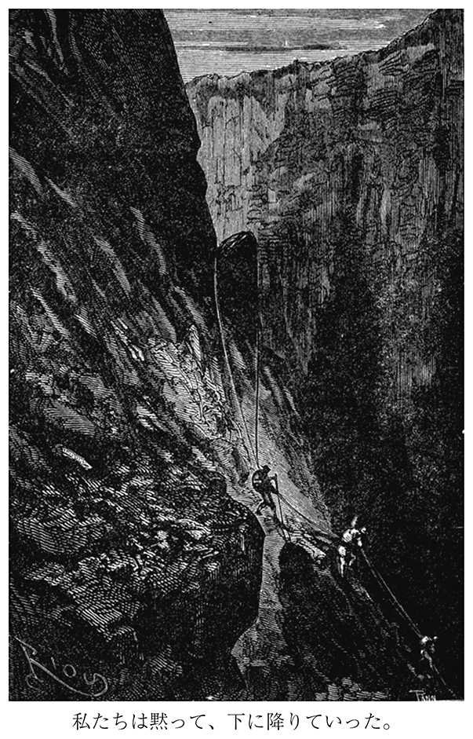
私は片手でしっかり二重のロープをつかむと、もう片方の手に持った鉄のストックで身体を支えながら、内壁をすべり落ちるようにして降りていった。心配なのはただひとつ。「ロープが切れたらどうしよう？」ということだ。三人が同時にロープで身体を支えたら、ロープはその重みに耐えられないにちがいない。そう思うと、私はできるだけロープに体重をかけるようなことはせず、手で岩をつかむように足先で慎重に足場を探りながら、自分にしては奇跡的な平衡感覚を発揮して、突きでた溶岩から別の溶岩へと足をおろしていった。だが、溶岩の足場はくずれやすい。ハンスは自分の足の下にある岩がぐらぐらしているの気づくと、静かな口調でこう言った。
「ギフ・アクト！」
「気をつけろ！」叔父が繰り返した。
こうして三十分後、火道の壁に突きだしたちょっと広い岩場まで来たところで、ハンスが立ちどまった。ちょうどロープが端に達したのだ。ハンスは私たちが合流するのを待つと、ロープの端の片方を引っ張った。すると、もう一方の端がするすると上にのぼっていき、やがて上まで達すると、小さな溶岩のかけらとともに下に落ちてきた。溶岩のかけらは、まるで雨――というよりは霙が降ってきたようで、私は頭を覆った。そんなものに直撃されたら危険きわまりないからだ。
そのついでに下を覗くと、火道はまだまだ続いているようだった。ちらっと目を走らせただけでは、底は見えなかった。
ロープを回収すると、私たちはそこで十五分休憩し、それからまた丈夫そうな岩にロープをひっかけ、同じようにして降りていった。そうして、また三十分後に六十メートル下の岩場に達した。
火道のなかを見ることなど、めったなことでできるものではない。したがって、研究が何より好きな地質学者であれば、下に降りていきながら、その様子を熱心に観察したことだろう。けれども、私にはそんな余裕はなかった。目の前の地層が、第三紀の鮮新世のものだろうが、中新世のものだろうが、始新世のものだろうが、白亜紀のものだろうが、ジュラ紀のものだろうが、三畳紀のものだろうが、ペルム紀のものだろうが、石炭紀のものだろうが、デボン紀のものだろうが、シルル紀のものだろうが、最古の層である《初源岩類》の時代の層だろうが、そんなことはどうでもよかった。だが、叔父のほうは、研究のことになったら我を忘れる性格だということもあって、夢中になって観察して、その結果を手帳に書きとめていた。しまいには、そこから自説を補強する材料さえ見つけたらしく、何度目かの休憩の時に私に言った。
「ふむ。下に降りれば降りるほど、納得がいくな。この火道の岩の状態を見ると、ハンフリー・デーヴィーの説が正しかったことがよくわかる。ハンフリー・デーヴィーは、『火山活動は地球の表面のカリウムやナトリウムが空気や水と反応して起こったものだ』と言っておったが、ここの岩はまさにそうした活動の結果、できたものじゃ。地球の創成期にな。そうなったら、『地球の中心が高熱でどろどろになっている』などという説は、わしは断固として認めないぞ。まあ、それは地球の中心に行ってみたら、わかることじゃがな」
あいかわらずの説だが、しかたがない。叔父の結論は、どんなことがあっても変わりようがないのだ。私はもう議論する気にもならなかった。だが、私の沈黙を叔父は同意のしるしと受け取ったようだった。そのうちに休憩時間が終わり、また降下が始まった。
それから三時間後、火道の底はまだ見えなかった。反対に上を向くと、ずいぶん小さくなっていたものの、噴出孔は目にすることができた。火道は下に行くにしたがって、両側から壁が近づき、少しずつ狭くなってきていた。光もだんだん届かなくなってきている。
だが、それでも、私たちは下に降りていった。壁からはがれ落ちる石の音を聞いていると、火道の底が近づいてきたのがわかる。底の地面にあたる時の音が大きく、また落ちはじめてから底に着くまでの時間が短くなってきたからだ。
そして、また何回か降下を繰り返したあとのこと、私はこれまでにかかった時間と穴の深さを計算してみた。前回の休憩までに、何回ロープを回収したか、数えていたので、計算は簡単だった。
まずは時間のほうだが、私たちはこれまでに十四回、降下を繰り返している。一回の降下には三十分かかっているので、それだけだと、しめて七時間になる。これに、一回の降下につき十五分の休憩が加わるので、こちらは三時間半。つまり、降りはじめてからは、全部で十時間半たっているということになる。この計算によって、今の時間もわかった。出発したのは午後一時半だったので、今は十二時である。
深さのほうは、一回の降下で全長百二十メートルのロープの半分、つまり六十メートル下に行くことになるのだから、それが十四回で、八百四十メートル。もうかなりの深さを潜ったことになる。
と、突然、ハンスの声がした。
「ハルト（16）！」
その瞬間、私は何か岩とはちがう感触のものを踏んづけていた。見ると、それは叔父の頭だった。
「着いたぞ！ おまえもここまで降りてこい」叔父は頭を踏まれたことを怒るでもなく、言った。
「着いたって？ どこにです？」叔父の横にすべりおりながら、私は尋ねた。
「穴の底じゃ」
私はあたりを見まわした。
「で、この先は？ 道はまだどこかに続いているんですか？」
「ここから見ると、右手に斜めに入っていく道がある。だが、それはまた明日、確かめよう。まずは食事じゃ。それから、眠ろう」
穴の口からはまだほんのわずかに外の光が差しこんでいたので、火道の底は真っ暗というわけではなかった。私たちは食糧の袋をあけ、夕食をとった。それから、石ころと溶岩のかけらが散らばる地面で眠ることにした。
石のベッドに身を横たえて、ふと目を開いて火道を見あげると、高さ八百四十メートル先に小さな丸い穴があいていて、まるで望遠鏡を覗いているようにみえる。その丸い穴のなかには星がひとつ光っていた。
その星はじっと明かりを灯しているだけで、瞬いてはいなかった。私の計算によると、それはこぐま座のベータ星だった。
と、そんなことを考えているうちに、私はいつしか深い眠りに落ちていった。
16 「止まれ」の意味。
翌朝、八時頃、朝の光に私たちは目を覚ました。太陽の光が火道の内側の溶岩に反射しながら下に降りてくるので、火道のなかは光の雨が降っているように見えた。その明かりで、私たちはまわりの様子を見ることができた。
「どうじゃ？ アクセル」叔父が満足そうに手をこすりながら言った。「これほど静かな朝は、ケーニヒ通りの家でも過ごしたことがないだろう？ この時間ともなれば、馬車の音や、物売りの掛け声、運河を行く船頭のわめき声がするのが普通じゃからな」
「そうですね」私は答えた。「まるで深い井戸の底にいるようです。まあ、実際にもそんなようなものですが......。でも、これだけ静かだと、ちょっと怖いような気もしますね」
「怖いじゃと？」叔父は驚いたように、大きな声を出した。「こんなところで怖いと言っているようでは、この先、どうするつもりだ？ わしらはまだ地球の内部に一センチだって、潜りこんではおらんのじゃぞ！」
「どういうことです？」
「わしらはちょうど島の平地の高さに達したところじゃ。なにしろ、スネッフェルス山の火口から降りてきたのだからな。この火道の底は、海面とほとんど同じくらいのところにあるのじゃ」
「まちがいありませんか？」
「まちがいない。噓だと思ったら、水銀気圧計を調べてみるがよい」
そう言われて、水銀気圧計を見ると、スネッフェルス山の頂上付近では下がっていた水銀柱の高さは、当然のことながら、降下とともに少しずつあがってきたのだろう、今では二十九インチと三十インチの真ん中あたりを差していた。
「わかったろう？」叔父が言った。「これはほぼ一気圧じゃ。つまり、通常の気圧の範囲にある。だが、これからあの地下道を降りていくと、もっと気圧が高くなる。そうなったら、水銀気圧計の代わりに、アネロイド型の気圧計を使う必要が出てくるじゃろう」
確かにこれから下に行けば、大気の圧力は強くなる。そうなったら、通常の気圧を測る水銀気圧計は役に立たなくなるだろう。
「でも、これからだんだん気圧があがっていくとしたら、かなり辛いことになりますね。呼吸が苦しくなりませんか？」私は尋ねた。
「大丈夫じゃ」叔父は答えた。「下に降りていくうちに、だんだん肺が慣れてくるからな。それに、飛行船や気球の乗組員は上空に行くと、空気が薄くなって苦しくなるというが、わしらにはその反対のことが起こるわけじゃ。空気は薄くなるより、濃くなるほうがいい。さて、おしゃべりはこのくらいにして、もう一度、荷物を探すことにしよう。はて、わしらが降りてくる前に、噴出孔の縁から落とした、あの袋はどこにあるのじゃろう？」
そう言えば、昨日の夜は火道の底が薄暗かったこともあって、いくら探しても、その袋は見つからなかったのだ。叔父はあらためてハンスのほうを向くと、「袋はどうしたのじゃろう？」と尋ねた。すると、ハンスは獲物を探す猟師の目で、注意深くあたりを見まわしてから言った。
「デル・ウップ！」
「上じゃと？」叔父が繰り返した。
見ると、頭上三メートルくらいのところに、大きなボールの形をした袋がぶらさがっている。袋を縛っていたひもが岩の角にひっかかっていたのだ。ハンスは猫のようにしなやかな身のこなしで火道の内壁をのぼると、数分後には袋を持っておりてきた。
「それでは朝食をとることにしよう」叔父が言った。「今日はこれからたくさん進むつもりじゃからな。しっかり食べておけよ」
そこで、私たちは乾パンと干し肉の食事をとった。飲み物はジンを少し混ぜた水だ。
食事が終わると、叔父はポケットから観察用に使っている手帳を取りだした。そうして、いくつかの計器を見ては、その数字を順番に書きとっていった。それは次のようなものであった。
六月二十九日 月曜日
時刻 午前八時十七分
気圧 二十九インチ七ライン（単位は水銀柱インチ。約七百五十一水銀柱ミリメートルに相当）
気温 摂氏六度
方向 東南東
最後の方向というのは、火道の真下に立った時に、これから降りていく地下道がある方角だ。これは方位磁石で測った。
と、叔父が熱に浮かされたような声を出した。
「さあ、アクセル。いよいよ地球の内部に潜りこむぞ。これからが本物の地底旅行の始まりじゃ」
そう言うと、叔父は《ルームコルフ装置》を首にかけ、螺旋形をした真空管ランプにつないで、電気を流した。すると、たちまち強烈な光がほとばしりでて、地下に降りる真っ暗な道を照らした。
もうひとつの《ルームコルフ装置》はハンスが首にかけて、やはりランプにつないだ。これによって、私たちは人工的に太陽をつくりだして、地下の旅を続けることができるのだ。電池は補充できるので心配いらない。松明とちがって、引火性のガスが溜まっているところでも爆発する危険はなかった。
「出発じゃ！」叔父が叫んだ。
私たちはそれぞれの荷物を背負った。服やロープの入った袋は、ハンスが先頭に立って、坂をころがしていくことになった。私はしんがりだった。
いよいよ、地下道に入るという、その瞬間、私は上を向いて、火道の先にある噴出孔を見つめた。そこには、おそらくもう二度と見ることができないアイスランドの空があった。
スネッフェルス山が最後に噴火をしたのは一二二九年のことだが、溶岩はこの道を通ってきたらしい。地下道の壁は溶岩で覆われ、きらきら光っていた。ランプが強烈なうえに、壁が光るので、中はそうとう眩しかった。
道は傾斜がきついところでは、おおよそ四十五度の角度でくだっていた。したがって、いちばん気をつけなければならないのは、ころがり落ちないようにすることだが、幸いなことに、溶岩が風化したせいで、足元は階段のようになっていた。そのおかげで、私たちは比較的、安全に降りることができた。時には長いロープを使って、背負っていた荷物をすべり落とすこともできた。
この地下道にはまた〝溶岩による鍾乳石〟もできていた。溶岩は多孔質なので、孔から出てきて成長した石英の結晶が、天井や壁から下に向かって伸びているのだ。結晶は白く不透明で、ただ先だけはガラスのように透きとおった雫の形をしている。そういった結晶が何十本も何百本も垂れさがっている様子は、豪華なシャンデリアのようで、まるで地上からの賓客を迎えるために、〝洞窟の妖精〟が宮殿の廊下を照らしてくれているように思えた。
「素晴らしい！」私は思わず叫んでいた。「なんてきれいな光景なんだ！ 叔父さん、そうは思いませんか？ この溶岩の色合いの変化。赤茶から黄色へと少しずつ変わっていく、このグラデーションは絶妙だ。それに、この石英の結晶。これはまさに美しいランプではありませんか！」
すると、叔父はこう答えた。
「そうか、アクセル。おまえにもようやくわかったのだな。地下の素晴らしさが......。だが、これで驚いてはいかんぞ。この先に行けば、ほかにもまだ素晴らしいものが見られるはずじゃからな。さあ、歩こう！ 歩こう！」
いや、叔父は「歩こう」と言ったが、実際は「すべり降りよう」と言ったほうがよかった。坂が急なので、私たちはなんの苦労もなく、道を進むことができた。《地獄に落ちるのは易し》とは、まさにウェルギリウスの言ったとおりだ（17）。途中、私は何度も方位磁石を確かめた。方向はいつ見ても同じ。正確に南東を差していた。南にそれたりも、東にそれたりもしない。頑固なまでにまっすぐだった。
私は最初、この道を降りれば、気温はすぐに上昇すると思っていた。だが、肌で感じるかぎり、気温はあがってはいたものの、それほど高くはなっていなかった。そうすると、「地球の中心は冷えている」というハンフリー・デーヴィーの説は正しいのだろうか？ そう思って、実際に測ってみて、びっくりした。出発してもう二時間になるのに、気温は摂氏十度。火道の底にいた時に比べて、四度しかあがっていないのだ。そこで、私は逆にこう考えた。この道は垂直に降りているわけではないので、深さということで言ったら、まだそれほど潜っていないのだと......。では、私たちはどのくらいの深さにいるのか？ それを知りたかったら、叔父に尋ねればいい。叔父は進行方向とともに、道の傾斜もきちんと計測していたからだ。だが、叔父はその結果を口にしなかったし、私もまた訊かなかった。旅はそのまま続いた。
そして、午後の八時頃、叔父が「止まれ！」の号令をかけた。その声に、ハンスがすぐに立ちどまって、溶岩の壁にランプをかけた。私たちは地下道から広間のような場所に出ていた。四方を壁に囲まれた洞穴のような場所だ。だが、不思議に空気はよどんでいなかった。それどころか、時おり、風がそよいでいるように感じられた。いったい、どうしてなのだろう？ この風はいったいどこから来るのか？ けれども、私はその理由を深く考えたりはしなかった。疲労と空腹で、じっくりと物を考えるどころではなかったのだ。なにしろ、昼食の休憩が終わってから、七時間も坂を降りつづけてきたのだ。体力を消耗していないはずがない。私はくたびれきっていた。叔父がデンマーク語で言った《止まれ》という言葉を聞いて、どれほどほっとしたことか......。ハンスが溶岩のテーブルの上に食事を並べおわると、私たちは猛然と食べはじめた。食糧はまだたくさんあった。だが、心配なのは水のほうだ。出発前に準備した水は、もう半分くらいになってしまったのだ。叔父は「水のことなら、地下水を汲めば問題ない」と言っていた。だが、ここまでの間、地下水などにはまったくお目にかかっていない。不安のあまり、私はその問題を叔父に話してみずにはいられなくなった。
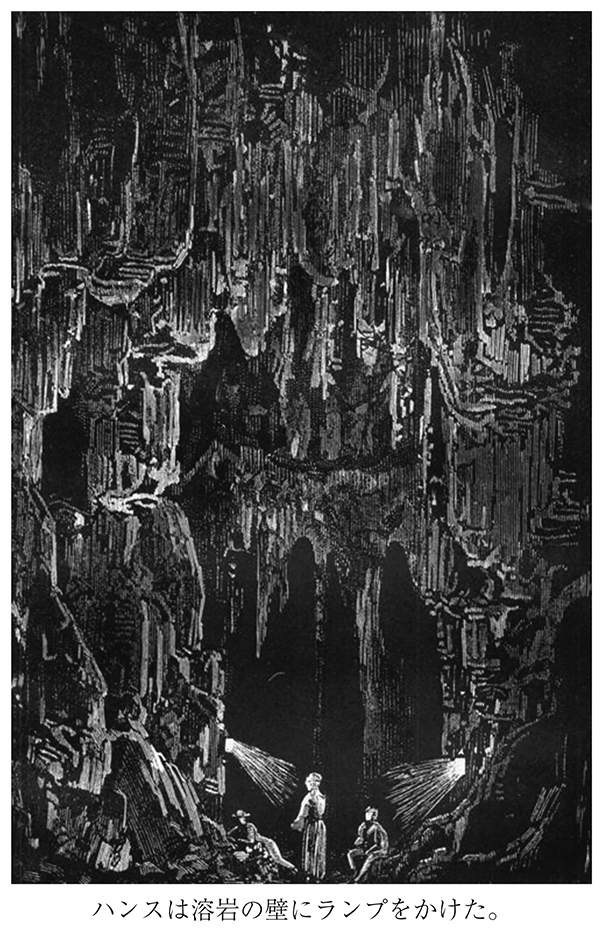
「地下水が見つからないじゃと？ おまえはそんなことを気にしているのか？」叔父は尋ねた。
「もちろんですよ」私は答えた。「気にしているだけじゃない。心配しています。なにしろ、水はもうあと五日分しか残っていないのですから......」
「まあ、アクセル、少しは落ち着け。水はすぐに見つかる。これ以上はいらないというほどにな」
「いつです？」
「この溶岩の地下道を抜けたあとじゃ。この道はどこもかしこも厚い溶岩で覆われている。この状態でどこから水がわきだしてくるというのじゃ？」
「でも、この道は溶岩が通ったあとなのですから、もっと深いところまで続いているんじゃないでしょうか？ それなのに、ぼくたちはまだそれほど地下に潜ったようには思えません。最初に比べると、傾斜もゆるやかになっているようなので、むしろ水平方向に進んでいるのではないでしょうか？ いずれにしろ、ここはまだあまり深くない......」
と、叔父がたちまち口をはさんだ。
「ここはまだ深くないじゃと？ どうして、そんなことを言う？」
「深くまで潜ったら、もっと暑くなるはずだからです」
「おまえの説によればな」そう言うと、叔父は私に尋ねた。「今、温度計は何度を差している？」
「十五度です」私は答えた。「つまり、出発した時から九度、高くなっただけです」
「よろしい。じゃあ、結論を言ってみろ」
「ぼくの結論はこうです。正確な観察にもとづいた科学的な理論によれば、地球の内部の気温は、三十メートル下に行くたびに一度あがります。といっても、その割合は地球のどこにいるかでちがってきます。たとえば、シベリアのヤクーツクでは、わずか十一メートル地下に潜っただけで一度、気温があがります。この差は岩石の熱伝導率のちがいから来るものですが、死火山の近くで片麻岩に囲まれた場所であれば、岩の熱伝導率が低いせいで、気温が一度あがるためには、逆に四十メートル地下に潜らなければなりません。ですから、ここではこの割合で計算してみましょう」
と、叔父がにやりと笑った。
「計算をな。面白い。やってみろ」
「別に難しい計算ではありません。四十メートル掛ける九ですから、三百六十メートルです。私たちはまだ三百六十メートルしか潜っていないのです」
「計算はまちがっていないな」叔父が言った。
「どういうことです？」
「計算は合っているが、前提がまちがっているということじゃ。途中で計測した事実をもとにして計算すると、わしらは今、海面から三千メートル下にいることになる」
「そんな馬鹿な......」
「馬鹿ではない。わしの計算がまちがったのでなければ、もはや数字は意味を持たないことになる。なにしろ、しっかりした前提の上に立っているのじゃからな」
調べてみると、叔父の計算にまちがいはなかった。これまで地下に潜った最高記録は、チロルのキッツバール鉱山とボヘミアのヴュッテンベルク鉱山で達成された千二百メートルだが、私たちはその記録よりも千八百メートルも深く潜ってしまったのだ。
そして、今、私たちが地下三千メートルのところにいるとすると、私にとってはひとつ大きな問題が持ちあがった。四十メートル潜るごとに温度が一度あがるとすると、ここの気温は十五度ではなく、八十一度になっていなければならないのだ。これはもう根本から考えなおしてみるしかなかった。
17 『アエネイス』第六巻。
翌六月三十日の火曜日は、朝の六時から地下道を降りはじめた。
地面も壁も天井もまわりはあいかわらず溶岩だったが、勾配はゆるく、なだらかな坂道といった印象だった。古いお屋敷などでは、いまだに階段の代わりにゆるやかなスロープが使われているが、ちょうどそんな感じだ。その道をかなり歩いたところで、ハンスが急に立ちどまった。私たちはすぐにハンスに合流した。時計を見ると、針は十二時十七分を差していた。
「おお！」叔父が大きな声を出した。「わしらは地下道の端まで来たのじゃ！」
私はまわりを見まわした。そこは三本の道が交わった交差点のようなところで、行く手には左と右に二本の道が伸びている。どちらの道も暗くて、狭かった。では、どちらを行ったらいいのだろう？ 叔父も困っているだろう。そう思って、私は叔父を見た。
だが、叔父は私に対しても、またハンスに対しても、ためらっているところを見せたくなかったのにちがいない。即座に左の道を示した。そこで、私たちはその道に入っていった。
いや、確かに、叔父はためらいを見せなかったが、逆に言えば、ここは慎重に考えたからと言って、どうにかなるというものではなかった。どちらの道が正しいか、示すものはひとつもなかったからである。そうなったら、できることはただひとつ。どちらかに決めて、あとは運を天に任すことだけである。
そうやって入った地下道は、きわだった特徴がなかった。というより、場所によって特徴が異なるのである。あるところでは、ゴシック教会の身廊に見られる《尖頭アーチ型》の天井が少しずつ形を変えながら、しばらく続く。そこには尖頭アーチのあらゆる見本が示されていて、中世の建築家が見たら喜んで参考にしただろうにと思われた。そうかと思うと、その二キロメートル先では、ロマネスク教会の身廊のような《低半円アーチ型》の天井が続いた。そこは天井が低く、左右の壁は下向きの弧を描いていた。それはまるで、アーチを支える柱が《迫石》の重みでたわんでいるように見えた。そのアーチの下を行く時は、私たちは頭をさげながら進まなければならなかった。また、いくつかの場所では、道はビーバーのつくった巣穴のようになり、そこでは頭をさげるどころか、這っていく必要があった。また道はまっすぐではなく、ところどころで曲がっていた。全体では南に向かっている。
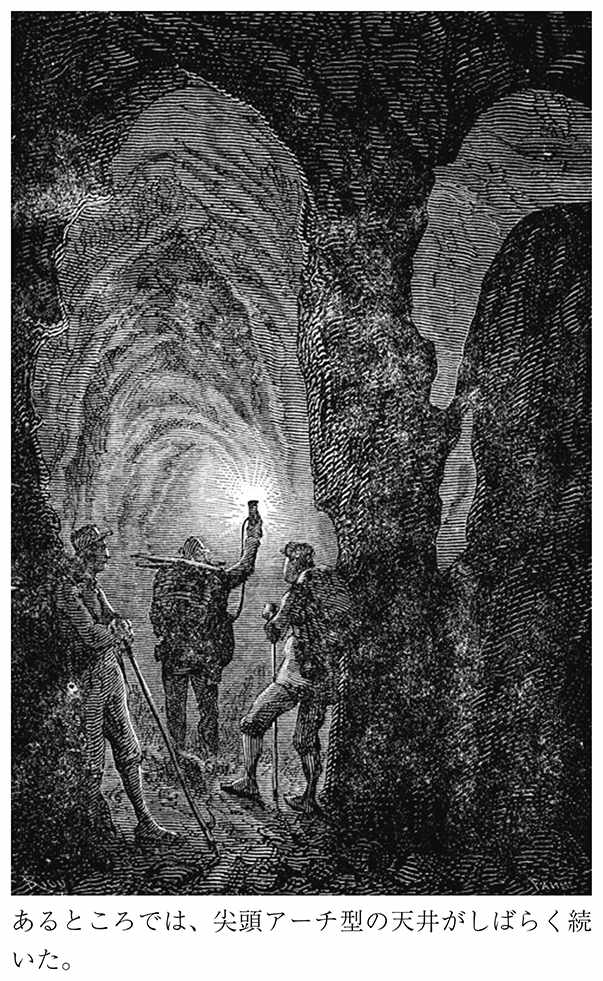
気温はあいかわらず、それほど上昇してはいなかった。
だが、今は静かなこの地下道も、かつて山の深部にあった溶岩がここを通ってあがってきた時には、恐ろしいほどの高温だったはずだ。溶岩の奔流が岩にあたってしぶきをあげ、この狭い地下道のなかに熱い蒸気が立ちこめる。私は思わず、そんな情景を想像して、身を震わせた。
〈ああ、どうか、この山がかつて火山だったことを思い出して、もう一度、噴火してみようなどと気まぐれを起こしませんように！〉私はひとりごちた。
だが、その考えを叔父に伝えようとは思わなかった。そんなことを言っても、叔父にわかってもらえるはずはなかったからだ。叔父はただひたすら前に進むことしか考えていなかった。そうして、絶対に地球の中心に行くという見事なまでの信念を持って、歩き、すべり、時にはころがり落ちていった。
道はだんだん歩きやすくなってきて、それからしばらくの間はゆるやかなくだり坂が続いた。そうして、午後六時になった時には、私たちは南に八キロメートルのところまで来ていた。だが、深さのほうは四百メートルほどしか降りていなかった。
まだ時間は早かったが、その地点で叔父は休憩の合図をして、今夜はここに泊まると言った。私たちはそそくさと食事をして、すぐに眠りについた。
寝る支度は簡単だった。寝具は旅行用の毛布が一枚だけ。それにくるまって眠るのである。だが、それで十分だった。私たちは寒さの心配をする必要もなければ、侵入者の心配をする必要もなかったからだ。これがアフリカの砂漠だとか、新大陸の森だとかを旅行するのであれば、就寝の間は交代交代で見張りにつかなければならなかっただろう。しかし、ここには誰もやってこない。完璧な安全が保たれているのだ。猛獣が近づいてくる恐れもなかったし、山賊の類が襲ってくる危険性もなかった。
翌朝はさわやかな気分で、元気に目を覚ました。また降下が始まった。昨日と同じように、地下道は地面も壁も天井も溶岩に覆われていた。そのせいで、この道がどんな地層を貫いているのか知ることはできない。ただ、しばらく行くと、この地下道が下に降りるのではなく、水平になってきたことだけは感じられた。いや、それどころではない。道は反対に地表に向かってのぼっているように思えた。午前十時頃になると、その兆候はいよいよはっきりして、足が疲れてきた。私の歩みは自然に遅くなった。
「どうした？ アクセル」私が遅れるので、叔父が苛々したような声で言った。
「どうしたって......。もうだめです」私は答えた。
「なんじゃと！ まだ三時間しか歩いておらんのに......。しかも、こんな歩きやすい道を！」
「歩きやすいのは認めますけどね。でも、疲れるのは確かです」
「疲れるじゃと？ 降りていくだけなのに......」
「降りてなどいません。のぼってますよ！」
「のぼっている？」叔父は肩をそびやかした。
「まちがいありません。一時間半くらい前から、のぼり坂に変わったんです。このまま行ったら、まちがいなくアイスランドの地表に出てしまいますよ」
だが、叔父は納得するつもりはないというように首を横にふった。私はさらに説明を続けようとした。しかし、叔父は出発の合図をすると、ハンスが先頭に立つのも待たず、さっさと歩きだした。私の言葉には返事もしない。機嫌が悪くなっている証拠だ。
叔父がこうなったら、どうすることもできない。私は勇気を出して、ハンスのあとに続いた。ついていくのは大変だが、離されてはいけない。私はただ叔父やハンスの背中を見失わないようにすること――それだけに気をつけた。こんな地下の迷路ではぐれてしまったらと思うと、恐ろしさに身震いが出た。
そのうちに、のぼりの勾配がいよいよきつくなってきた。苦しい息を吐きながら、私は〈でも、そのおかげで地表に近づいているんだ〉と自分を慰めた。のぼるのは大変でも、逆に希望の光が見えてきたのだ。一歩足をあげるごとに、その希望は大きくなり、私は〈これでようやくグラウベンに会える〉と喜びに胸を震わせた。
と、お昼頃になって、突然、地下道の様子が変わった。なんとなく、あたりが暗くなっている。その原因は、まわりを見まわしてみて、すぐにわかった。それまでランプの光を反射していた溶岩の壁や天井がとぎれ、もともとの地層が露出しはじめていたのだ。あらためて調べてみると、壁にはいくつかの層が斜めに走っている。場所によっては垂直になっているところもあった。それはどれも《漸移岩類》の最初の時代――すなわち、シルル紀（18）のものに思われた（＊）。
「まちがいない！」私は思わず叫んでいた。「これは地球で二番目に古い時代、漸移岩類の時代の地層だ。この粘板岩、この石灰岩、この砂岩の層を見れば、明らかだ。でも、そうなると、ぼくたちは地殻の基盤となる花崗岩の岩盤とは反対の方向に行っていることになる。漸移岩類の時代の地層は花崗岩の岩盤の上にあるのだから......。地球の中心に向かうなら、今頃はもうとっくに花崗岩の岩盤にぶつかっていなければならないのに！ これじゃあ、ハンブルクからリューベックに行くのに、ハノーファーに向かっているようなもんだ」
おそらく、この言葉は口に出すべきではなかったのだろう。だが、私はひとりの地質学者として、目の前の事実に興奮し、そばに叔父がいるのも忘れて、観察した結果を口にしていたのだ。叔父は私の言葉を聞き逃さなかった。
「だから、どうだと言うのじゃ？」不機嫌そうに尋ねる。
「これを見てください」私は粘板岩、石灰岩、そして砂岩の層を示した。
「それで？」あいかわらず不機嫌な様子で、叔父が言った。
「この地層は、地球上に最初の植物と最初の動物が出現した時のものです」
「そう思うかね？」
「ええ。ともかく、この地層を見てください。見て、確かめてください」
私は叔父に言って、地下道の壁にランプを近づけさせた。おそらく、叔父は感嘆の叫び声をあげるだろう、と私は思った。だが、そんなことにはならなかった。叔父はひと言も発せず、また歩きだしたのだ。
これはどういうことだろう？ 叔父には私の言ったことが理解できなかったのか？ それとも、叔父として、また学者としてのプライドから、「まちがった道を選んだ」と認めるのが嫌だったのか？ あるいはこの道がどこに続いているのか、なんとしてでも確かめたかったのか？ だが、いずれにせよ、私たちが溶岩の道をはずれたことは確かだった。それはつまり、この道がスネッフェルス山の火室――溶岩が溜まっていたところには通じていないということだ。
そのいっぽうで、たとえ地下道の壁を覆っていた溶岩がなくなり、その下にもともとあった地層が姿を見せるようになったとしても、私は自分がその変化に重大な意味を与えすぎているのではないかとも思った。地上に戻りたいという気持から、私は自分を騙しているのではないか？ いや、そもそも今、私が目にしているのは、本当にシルル紀の地層なのか？
〈もしこれがシルル紀の地層なら、その時代の植物や動物の痕跡がどこかに残っているにちがいない〉私は考えた。〈それが見つかったら、ぼくの考えは正しかったことになる。よし、探そう〉
そう心のなかでつぶやくと、私は壁や地面を見ながら歩きはじめた。すると、百歩も行かないうちに、その痕跡が見つかった。だが、それは別に不思議なことではない。シルル紀には千五百種以上の動植物が出現して、この地球上で暮らしていたのだから......。溶岩の道がとぎれると、地面はやわらかい砂地に変わった。この砂は太古の植物や甲殻類の化石が細かく砕けたものだ。そう思って、壁を見ると、そこにはくっきりとヒバマタのような海藻や、ヒカゲノカズラの化石が残されていた。叔父がそれを見あやまるはずがない。だが、私が想像するに、叔父はこの化石には目をつぶり、何事もなかったかのように先に進むことにしたのだ。
まったく、頑固だとしか言いようがない。頑固に限度があるとしたら、その限度をはるかに超えた頑固者だ。私はとうとう我慢できなくなった。ここはどんなことがあっても、叔父を打ち負かしてやる必要がある。そう思って、あたりを見まわすと三葉虫（19）の化石が、ほぼ完全な形で残っているのが目についた。私はその化石を拾って、叔父に追いついた。
「これを見てください」化石を差しだしながら言う。
すると、叔父は落ち着きはらって、答えた。
「ふむ。これはペルム紀に絶滅した三葉虫の化石じゃな。まちがいない」
「それならば、ぼくの言ったことに......」
「まちがいはない。そう言いたいのか？ そのとおりじゃ。おまえの言ったことにまちがいはない。わしらは溶岩の道を降りて、花崗岩の岩盤に向かうかわりに、そこから離れていっておる。つまり、わしが道をまちがえたのかもしれないということじゃ。だが、本当にまちがえたかどうかは、この道の最後まで行ってみないとわからない」
「だから、このまま先に行くと言うんですね。それはいいでしょう。何があっても信念がぐらつかないことは、立派だと思いますよ。恐ろしい危険が身に迫っているのでなければ......」
「どんな危険じゃ？」
「水がなくなってきていることです」私は言った。
だが、叔父はこともなげに答えた。
「よし。それでは、これからは配給制にしよう」
18 《漸移岩類》とはドイツの地質学者ヴェルナーによる時代区分で、ヴェルナーは地層やそこに含まれる化石などをもとにして、初源岩類、漸移岩類、成層岩類、沖積岩類、火山岩類の順に時代を分けた。漸移岩類の時代は、だいたい現在の分類でいう古生代前期から中期にあたり、その後、十九世紀の学者たちによって、さらに細かく分けられた。そのうちの最初のものがシルル紀である。なお、シルル紀には当初、カンブリア紀やオルドビス紀も含まれていた。
＊原注 シルル紀の名は、この地層が最初に発見されたイギリス、ウェールズ地方の土地に住んでいた古部族であるシルル族からつけられた。
19 現在のワラジムシに似ている甲殻類。
実際、水は配給制にしなければならなかった。夕食をとった時に確かめたところ、あと三日分しか残されていないことがわかったのだ。これはどうあっても地下の水脈を見つけなければならない。だが、このシルル紀の地層が続く道を行くかぎり、地下水に出会う確率はまったくないと言ってよかった。
次の日も地下道を先に進んだが、果てしないアーチ型の天井をした道が続くばかりで、地上に出ることもなければ、行き止まりになることもなかった。ハンスの無口が伝染したかのように、私たちはほとんど口をきかずに歩いた。
道はもうのぼっていなかった。少なくとも、はっきりとのぼっているようには感じられなかった。それどころか、時おり、下がっているように感じられることもあった。だが、叔父は嬉しそうな顔を見せなかった。下がり方はほんのわずかなものであったし、何よりも壁の地層に変化が見られなかったからである。地層はあいかわらず漸移岩類の時代のもので、今、歩いている道が、その地層の下にある花崗岩の岩盤に向かっているようには思えなかった。
だが、同じ漸移岩類の時代の地層でも、よく見ると、壁の様子は次第に変わってきていた。砂岩の色が赤くなり、石灰石や粘板岩も結晶化して大理石や結晶片岩となって、ランプの光にきらきらと光るようになっていたのだ。それはまるでシルル紀のあとのデボン紀の地層を見ているようだった。私は自分がこの地層の名前のもとになったイギリス、デボン州の切り通しの崖の間を進んでいるように思った。実際、地下道の両側の壁は、さまざまな種類の大理石で覆われていた。そのなかには、灰色の瑪瑙のような地に白い筋が静脈のようにくっきりと浮かびあがっているものもあれば、バラ色やクリーム色の地に赤い斑点が散っているものもある。奥のほうには暗い色合いのものもあって、そのなかで白い大理石はひときわ輝いて見えた。
大理石のほとんどには太古の時代の動物の痕跡が残されていた。だが、その前のシルル紀のものに比べると、デボン紀の動物たちが生物としてより完成した形になったのは明らかだった。原始的な動物である三葉虫の代わりに、現在のチョウザメのような硬鱗魚類やシーラカンスのような肉鰭類の魚の化石もあった。古生物学者によると、シーラカンスというのは爬虫類の祖先だということであるが、もしそうなら古生物学者はこの化石を見ただけで、爬虫類との関連性をたちどころに指摘してみせることだろう。いずれにせよ、デボン紀の海にはこういった種類の動物がたくさんいたので、その動物たちの死骸が大量に海の底に沈殿し、あらたに形成された地層のなかで化石となったのだ。
シルル紀の地層、それからデボン紀の地層と、地下道を進むにつれて、私たちは動物の変化の歴史をたどっていた。その変化はやがて人類を生みだし、人類が動物界の頂点に達するのだ。だが、叔父はそんなことはどうでもいいと考えているようだった。
叔父の関心はただふたつ。この道がやがて急なくだり坂になって、また下に降りていけるようになるか、さもなければ、どこかで行き止まりになって、それ以上、先に進めなくなるか、である。だが、そのどちらにもならないうちに、私たちは夜を迎えた。その晩、私は喉が渇いて、なかなか眠れなかった。
明けて金曜日、私たちはまた曲がりくねった道を進んでいった。そして、十時間ほど歩いたあと、私はランプの光があまり壁に反射しなくなったのに気づいた。見ると、大理石や結晶片岩、赤い砂岩の地層は姿を消し、ほとんど輝きのない、くすんだ色の地層に変わっていた。それと同時に道幅も狭くなってきたので、私は壁に手をつきながら歩いた。
ところが、すぐそのあとで、自分の手を見てびっくりした。手のひらが真っ黒になっていたのだ。よく見ると、それは石炭の汚れだった。すると、この地層は石炭紀の地層なのだ。
「石炭の鉱床だ！」私は大声を出した。
「といっても、それを掘る鉱夫はいないがね」叔父が言った。
「どうして、そんなことがわかるんです？」私は尋ねた。
「わしが知ってるからじゃ」叔父は答えた。「まわりにあるのは確かに石炭じゃが、この道は人間によって掘られたものではない。だが、そんなことはどうでもいい。そろそろ夕食の時間じゃからな。食事にしよう」
すぐにハンスが食事の支度をした。私はほとんど食べなかった。そして、自分に割りあてられたわずかな水を飲んだ。水はハンスの水筒にもう半分しか残っていなかった。それが私たち三人に残された水のすべてだった。
食事が終わると、叔父とハンスはそれぞれの毛布にくるまって、一日の疲れをいやすように、気持ちのよさそうな寝息をたてながら、ぐっすりと眠りこんでしまった。だが、私はまったく眠れず、朝まで時計の針を見て、過ごした。
翌日の土曜日、私たちは朝六時に出発した。そして、二十分後には広い洞穴のような場所に出ていた。この洞穴を見ると、この地下道がいくら炭鉱のように見えても、叔父の言うとおり、人の手によって掘られたものではないとわかった。人が掘ったものであれば、天井は支柱で支えられているはずだが、そんなものは一本もなかったからである。天井はちょうどうまい具合にドーム状になっていることで、上からの重みを分散させて、奇跡的にバランスを保っていた。
洞穴は、幅が約三十メートル、高さは約五十メートルあった。こうした洞穴ができたのは、おそらくなんらかの力によって地下で断層が生じ、その時の揺れで、地下道の壁や天井が広がったせいだろう。そうやって自然がつくった洞穴に、私たちは今、人間として初めて足を踏み入れたのだ。
洞穴の壁には石炭紀のいくつかの時代が地層として重なっていて、地質学者が見れば、どの地層がどの時代のものか、ひと目でわかった。時代のちがう石炭の層の間には、砂岩や粘板岩の層がまるで上からの重みで押しつぶされたように薄くはさまっていた。
石炭紀というのは、デボン紀のあとの時代で、この時代、地球には大量の植物が生い茂っていた。というのも、この時代はどこでも熱帯なみに気温が高く、湿度も高かったからである。そのため、地球は全体が水蒸気で覆われ、太陽の光もさえぎられるくらいだった。
だが、もしそうなら、ここでひとつ重要な結論が導かれる。石炭紀の時代に、水蒸気のせいで太陽の光がさえぎられていたのだとすれば、その当時、地球に対する太陽の影響はそれほど大きくなかったということになる。すなわち、当時の地球は〝季節〟や〝天気〟によって、気温に変化が生じることはなかった。夏でも冬でも、晴れていても曇っていても、赤道から北極、あるいは南極まで、どこでも高温だったのである。では、この時、地球を高温にした熱はどこから来たのか？ 太陽から来たのでなければ、ほかのどこから来たのだろう？ そう考えたら、結論はひとつしかない。地球の内部から来たのである。そのとおり！ 叔父の理論とはちがって、地球は火の玉として生まれて、表面から冷えて固まっていった。だから、石炭紀では今よりも激しく、内部が燃えていたのだ。
さて、地球の内部で燃えている火は、この石炭紀にちょうどいい具合に中から地表を暖め、植物の生育を促した。といっても、当時の植物は太陽の恵みを受けることができなかったので、花はなかった。香りもなかった。ただ、根だけが地中に伸びて、熱い土壌から生命のエネルギーを吸いとっていたのである。
植物の種類も少なかった。大きな種類としては、シダ類やヒカゲノカズラ類、トクサ類くらいである。だが、その数少ない種類から何千もの小さな種に分かれていたので、想像以上に変化に富んでいた。私たちがシダとしてよく知っているものから、葉の形が芝のように細いもの、アステロフィライトのように星のような形をしたものまであった。ほとんどが草で、木は少ない。だが、中にはフウインボクのように大きく成長するものもあった。
いや、わざわざこんな話をしたのには、理由がある。実を言うと、石炭はこの時代に地球に生い茂った植物からできているのである。その過程を説明すると、地球の表面を覆っている地殻の下では液状の物質が流動しているが、地殻は固定されているわけではないので、その液状の物質の動きに合わせて移動する。すると、地すべりや沈下が起きて、地上だった場所が海に潜り、そこに生えていた植物が海底に堆積する。
地すべりや沈下は何度も繰り返されるので、この植物の堆積層はかなり厚くなるが、そのなかで堆積した植物のほうは、自然に生じる化学反応によって、まず泥炭になる。それから、発酵熱や発酵ガスの影響で、完全に石炭化するのである。
というわけで、石炭紀に堆積した大量の植物が、今は石炭の分厚い層になって、この地球に残っているのだ。そうして、その石炭がさまざまな産業に使われている。だが、その量は決して無限ではなく、産業家たちが埋蔵量のことを気にせず、現代のように過剰に使いつづけたら、あと三世紀ももたないだろう。
洞穴の天井や壁の石炭の層を見ながら、つい私はそんなことを考えた。ここにはかなりの量の石炭があるが、おそらくこの石炭が採掘されることはあるまい。こんな地中の奥底にある炭鉱を開発しようと思ったら、人的にも金銭的にも、多くの犠牲や代価が必要とされるからだ。それに、炭鉱ならもう地球の表面のあらゆる場所にある。これ以上、増やさなくてもよいではないか！ まだ誰も手をつけていない、この石炭の層を見れば見るほど、私はこの洞穴の石炭が〈世界の終わりが来る時〉まで、このままここにあることを願った。
それはともかく、こういった考えに耽っている間に、私たちはずいぶんな道のりを進んでいた。気温は溶岩のなかや粘板岩のなかを歩いていた時とほとんど変わらない。だが、そのうちに奥のほうから強烈な臭いが漂ってきた。私には、すぐにそれが炭化水素ガスの臭いだとわかった。このガスが爆発して、炭鉱ではよく悲惨な事故が起きる。フランスの鉱夫たちが《グリズー》と呼んで、恐れているガスだ。この洞穴にはそのガスが充満しているのだ。
だが、幸いなことに、私たちは照明に《ルームコルフ・ランプ》を使っている。私は胸をなでおろした。一応、持ってきたとはいえ、もし私たちが不用意に松明を照明に使っていたら、今頃は大爆発が起きて、旅そのものが終わっていたろう。
こうして、石炭のなかを行く旅は夕方まで続いた。叔父はいつまでたっても道がくだり坂にならないことに苛立っている様子だったが、かろうじて爆発するのを抑えていた。闇は深く、ランプを使っても二十歩以上、先は見えない。道はどこまでも続くかと思われた。と、その時、突然、目の前に壁が立ちはだかった。右を見ても左を見ても、上を見ても下を見ても、道は続いていない。洞穴はそこで行き止まりになっていたのだ。時計を見ると、午後の六時だった。
「よし。これならこれで問題ない」叔父が大声をあげた。「少なくとも、この道にこだわる必要はなくなったのじゃからな。この道はサクヌッセンムが通った道ではない。ならば、黙って引き返すだけじゃ。今晩はここで泊まることにして、明日になったら、あの分かれ道まで戻ろう。一度、来た道じゃ。日にちもそれほどかかるまい。三日もあれば十分じゃろう」
「そうですね」私は言った。「それだけの元気が私たちに残っていたら......」
すると、叔父の口調が変わった。
「残っておらんというのか？」
「ええ。明日には水がなくなってしまいますから......」私は答えた。
「なくなるのは水じゃろう。それなのに、元気もなくなってしまうと言うのか？」そう言うと、叔父は厳しい目つきで、私を見つめた。
私は恐ろしくて、何も言うことができなかった。
翌日はいつもより早く出発した。急がなければならなかった。分かれ道からここまで、来る時には五日もかかっているのだ。
この戻り道がどれほど苦しかったか、私はそれについて、ここでくどくど語るまい。それに苦しかったのは、叔父もハンスも同じだったと思われる。だが、叔父は自分が苦しみを感じているということに腹をたて、その怒りから、この苦しみに耐えていた。ハンスのほうは、いつものように何事も受け入れる、落ち着いた態度で、苦しんでいることは表に見せなかった。それにひきかえ、私は――正直に告白すると、私はこの事態に絶望し、嘆いてばかりいた。自分を襲ったこの不幸に立ち向かう勇気を持てなかったのだ。
だが、それもいたしかたあるまい。私が予想していたとおり、洞穴を戻りはじめた最初の日の夕方には、とうとう水が底をついてしまったからだ。その結果、液体として私たちに残っているのはジンだけになった。だが、ジンは飲んでも、喉を焼くだけで、渇きはいやしてくれない。私はジンの入った容器を見るのも嫌になった。地下道の気温は行きと変わらないはずなのに、私には高くなったように感じられた。疲れで身体が動かない。私は何度も、その場にへたりこみそうになった。それを見ると、叔父やハンスは休憩の合図をして、ふたりして私を励ましてくれた。だが、ハンスはともかく、叔父のほうは自分もまた喉の渇きに苦しみ、恐ろしい疲れと戦っているように見えた。
こうして、洞穴を戻りはじめてから四日目の七月八日の水曜日、私たちは手をつき、膝で這いながら、それこそ半死の状態で、分かれ道までたどりついた。私は溶岩の上にぐったりと横になった。朝の十時だった。
ハンスと叔父は壁に寄りかかって、乾パンをかじり、なんとか飲みこもうとしていた。だが、私は唇が腫れて、それどころではなかった。口からはもう、うめき声しか出てこない。そのうちに、だんだん意識が遠くなって、私は深い眠りに落ちていった。
それから、どのくらいたったのだろう？ 気がつくと、私は叔父に抱きおこされて、その腕のなかにいた。
「おお、アクセル、かわいそうに！」叔父は言った。その言葉は真情にあふれていた。
私は胸を衝かれた。いつもは辛辣な叔父がこんなに優しい言葉をかけてくれるとは！ そう思うと、私は叔父の手をつかみ、強く握った。叔父の手は震えていた。
と、その時、叔父が思いもかけなかった行動をとった。肩にかけていた水筒をはずすと、私の唇に近づけたのだ。
「飲め！」叔父は言った。
私にはわけがわからなかった。これは聞きまちがいではないのか？ それとも、叔父はおかしくなったのか？ 私は呆然として、叔父を見つめた。
「飲め！」再び、叔父が言った。
そして、水筒を傾けると、中身をすべて、私の唇の間に流しこんだ。
ああ、それはなんという喜びだったろう！ からからに乾いた口のなかをほんのわずか、たったひと口の水が湿しただけで、今にも尽きようとしていた命の泉がよみがえったのだ。私は両手の指を組んで、叔父に感謝した。
「そうじゃよ。これが最後のひと口じゃ」叔父が言った。「よいか？ 最後じゃ。わしはおまえのために、この最後のひと口を水筒の底に大切にとっておいたのじゃ。いや、わしだって、これまで五十回、いや百回は、この水を飲みたいという誘惑に駆られたよ。だが、我慢した。アクセル、おまえのためにとっておいたのじゃ」
「ああ、叔父さん」私はかすれた声でつぶやいた。目から涙があふれてきた。
「何も言うな。この分かれ道まで戻ってきたら、おまえはきっと半死の状態になっている。わしにはそれがわかっていたのじゃ。だから、この最後のひと口でおまえの元気を出させようと思ったのじゃ」
「ありがとう。ありがとうございます」私は言った。
もちろん、水をひと口飲んだからといって、喉の渇きがいやされたわけではない。だが、元気が出てきたのはまちがいなかった。これまで、私は喉の筋肉がひきつれ、唇も腫れて、声を出すこともできなかった。それがようやくしゃべれるようになったのだ。思いきって、私は言った。
「ぼくたちは今、分かれ道まで戻ってきました。ここで重大な決断をくださないといけません。水はもうありません。だから、もう引き返すべきです」
その間、叔父は私のほうを見ようとしなかった。というよりは、わざと下を向いて、私の視線を避けていた。
「引き返すんです！」私は大声で続けた。「まずは火道の底に戻りましょう。それからスネッフェルス山の火口までのぼるんです。ああ、それだけの力が残されているといいんですが......」
「引き返すか」叔父は私にではなく、自分に言っているようにつぶやいた。
「ええ、引き返すんです。一刻も早く！」私は繰り返した。
しばらくの間、沈黙が続いた。と、叔父がこれまでとは打って変わった口調で言った。
「つまり、アクセル、あの水はおまえに勇気を与えなかったというわけか？」
「勇気ですって！」
「だって、そうじゃろう。あの水を飲んだのに、おまえはあいかわらず意気地なしで、弱音を吐いておる」
まったく、なんという人だろう！ このうえ、まだ旅を続けるというのか！
「じゃあ、叔父さんは、引き返すつもりはないんですか？」私は尋ねた。
「あたりまえじゃ。せっかくここまで来て、成功もまちがいないというのに......。計画をあきらめるなど、もってのほかじゃ」
「では、ぼくに死ねと？」私は言った。
「いや、そうではない」叔父は答えた。「おまえは引き返せ！ おまえが死ぬのはわしも望まん。わしはひとりで行く。おまえの面倒はハンスが見てくれるじゃろう。おまえはハンスと帰れ！」
「叔父さんを見捨てて？」
「わしはひとりで行くと言っただろう。この旅はわしが始めたものじゃ。だから、最後まで行く。目的を達成するまでは、決して戻ることはない。帰れ！ アクセル。おまえは帰れ！」
話しているうちに、叔父は次第に興奮してきた。その声は優しくなったかと思うと、突然、厳しくなり、また高圧的になった。叔父は執念にも似た、暗い情熱で、不可能に挑戦しようとしているのだ。私はもちろん、叔父をこの地下道に残していきたくはなかった。けれども、そのいっぽうで、「今すぐ帰れ」と生存本能がささやいていた。
この間、ハンスはいつものように無関心な態度で、叔父と私を眺めていた。ただ、私たちが何について議論していたかは、おそらく理解していたにちがいない。なにしろ、叔父と私はお互いに反対の方向を指さし、そちらの方向に相手を連れていこうとしていたのだから......。しかし、その議論の結果は自分の命にも関係するというのに、ハンスはこの問題に興味を示しているようには見えなかった。そして、合図があればすぐに出発し、合図がなければまったく動くつもりはないようだった。
火口に引き返すのなら、ハンスを説得しなければならない。私は思った。だが、どうやったら、この男を説得できるのだろう？ 何があっても感情を動かさない男を......。泣いたり、わめいたりしても無駄だろう。では、理性に訴えるか？ ハンスは自分がどんなに危険を冒しているか、わかっていないように思える。だから、それを理解させれば......。はたして、そんなことができるのだろうか？ だが、いずれにせよ、ハンスと私がふたりで協力しなければ、頑固な叔父の気持ちを変えさせることはできない。必要だったら、私たちは嫌がる叔父をかついで、スネッフェルス山の火口まで運びあげなければならないのだ。
私はハンスに近寄って、ハンスの手に自分の手を重ねた。だが、ハンスは動かなかった。私は火道の底に戻る道を指さした。だが、ハンスは身じろぎひとつしなかった。私は次第に息が苦しくなってきた。苦痛に顔がゆがむのが自分でもわかった。と、ハンスがかすかに頭を動かした。そのわずかな動きで、叔父のほうを示すと、ハンスは静かな声で言った。
「マスター」
「旦那様だって？」私は叫んだ。「何を馬鹿な！ 叔父はきみの旦那様なんかじゃない！ ましてや命を捧げる旦那様では！ ハンス、ここから引き返すんだ。一緒に叔父を連れて帰るんだ。聞いてるか、ハンス。ぼくの言うことがわかるか？」
そう言いながら、気がつくと、私はハンスの腕をつかんでいた。ハンスを立ちあがらせようと、力をこめて引っ張る。だが、ハンスはびくともしなかった。すると、叔父が間に入った。
「まあ、落ち着け。アクセル。いくら大声を出しても、この男は言うことをきかんよ。それよりも、ひとつ提案がある。聞いてくれ」
私は腕を組んで、叔父を正面から見つめた。
「今のところ、わしの計画の唯一の妨げになっているのは、水がないことじゃ。わしらが入った左の道は溶岩、粘板岩、石炭と続くばかりで、水は一滴も見つからなかった。だが、右の道に入れば、水だって見つかるにちがいない」
私は、そんなことは絶対に信じられないとばかりに首を横にふった。
「いや、アクセル、最後まで聞いてくれ」叔父は声を大きくして言った。「さっき、おまえがぐったりして眠っている間、わしは右の道がどうなっているのか、中に入って調べてみたのじゃ。こちらは本当に地球の中心に続く道だぞ。まっすぐ下に降りていたからな。あれなら、ほんの少し行くだけで、花崗岩の岩盤にぶつかるじゃろう。そうなったら、きっと水が見つかるにちがいない。花崗岩は地下水を通しやすいからな。いいか、アクセル、これが論理というものじゃ。それに何より、わしの直感がこの論理にまちがいはないと言っている。そこで、アクセル、提案じゃが、わしにもう一日くれんか？ コロンブスが新大陸を発見する航海に出た時、乗組員たちは病気になったり、いつまでも続く旅に不安になったりして、引き返そうと言いだしたことがあった。だが、コロンブスは三日だけ待ってくれと、乗組員たちに懇願した。そして、その三日の間にアメリカを発見したのじゃ。それに対して、わしがおまえに頼むのは一日だけじゃ。もし、その一日の間に水が見つからなかったら、おまえに約束する、その時は地上に戻ることにしよう」
それを聞いて、まだ戻れないのかと、私は苛立った。だが、叔父がこんなふうに感情を抑えて、理性的に話す姿には感動した。
「わかりました」私は答えた。「まったく、叔父さんの超人的なエネルギーには感心しますよ。おっしゃるとおり、水が見つかるように祈りましょう。さて、そうと決まったら、一刻も無駄にできない。出発しましょう」
そこで、いつものようにハンスを先頭に、私たちは新しい地下道に入り、すぐに坂を降りはじめた。すると、百歩も行かないうちに、叔父がランプの光で壁を照らして叫んだ。
「見ろ！ さっそく初源岩類の時代の層の特徴が表われてきたぞ。わしらは正しい道を行っている。さあ、降りよう。降りよう」
叔父のあとに続きながら、私は考えた。もし、ここが初源岩類の時代の層だとすると、この地下道は地球が冷えて固まった時にできたものだということになる。そのでき方は、おそらくこうだったろう。地球は最初、高熱で燃えていたが、それが次第に冷える過程で、地殻の内部に収縮が起こり、あちらこちらに隙間が生じた。その隙間が地下道になったのである（こういった地下道は、溶岩が噴出した時の通り道にもなったと思われる）。そして、この地下道が複雑に絡みあって、地中に巨大な迷路がつくられたのだ。
それから、しばらく行くと、確かに叔父の言ったとおり、下に降りれば降りるほど、地下道の壁には初源岩類の時代の層の特徴がはっきりと表われてきた。現在の地質学では、地殻の基盤をなす初源岩類の時代の層は、結晶片岩、片麻岩、雲母片岩の三つの層からできていると考えられている。そして、この三つの層がやはり初源岩のひとつである花崗岩の岩盤の上にのっているのである。
結晶片岩、片麻岩、そして雲母片岩の地層は美しかった。それはこれまでにどんな鉱物学者も直接、見ることができなかった光景だ。どんなに強力なボーリングの機械を使っても、これほど深いところまで掘削して、地下に埋もれた地層を見ることはできない。だが、私たちはその地層を自分の目で見て、自分の手で触れることができるのだ。
結晶片岩の層は濃い緑の色合いで、銅やマンガンの鉱脈が走っていた。わずかではあるが、金やプラチナも含まれている。人類がいかに欲深だとは言え、地中に眠っている、この貴重な鉱物資源を掘りだすことはできないだろう。この鉱物資源は、地球ができたばかりの頃に地下に埋葬され、そのまま永遠の眠りについた宝物なのだ。どんなシャベルも、どんなつるはしも、この宝が埋められている地下廟を暴くことはできない。
やがて、結晶片岩の層は片麻岩の層に変わった。片麻岩は白と黒の薄い層が規則的に重なった縞状構造を持っている。その次は雲母片岩の層だ。これもまた薄い層が重なった構造を持った岩だが、そばを通ると、白雲母がきらきらと美しい光を放った。
いや、実際、私たちが歩いていくと、ランプの光が天井や壁に反射して、地下道は明るく輝いたのだ。光は結晶の粒子がつくる小さな面にあたると、さまざまな方向に反射し、無数のスポットライトとなって、地下道で交錯した。その眩いばかりのきらめきに、私は美しくカットされた巨大なダイヤモンドのなかを歩いているような気がした。まさに〝光の饗宴〟だった。
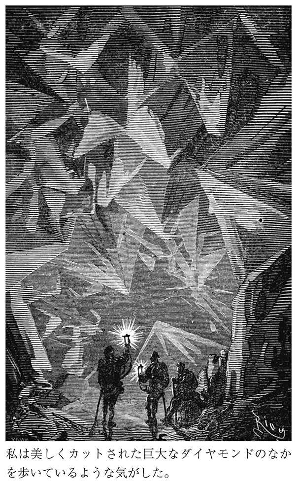
しかし、そのうちに、この饗宴もだんだん終わりに近づいてきた。歩きはじめて数時間たった午後の六時頃になると、壁や天井の岩の様子が変わり、光の反射が弱まってきたのだ。岩には雲母が含まれることが少なくなり、その代わりに石英や長石の結晶が増えてきた。そうなったら、まちがいない。この岩はほかのどの岩よりも硬い岩――地球が誕生してから積み重なった、あらゆる地層を上にのせても、押しつぶされることがないほど、硬い岩、すなわち花崗岩だ。私たちはとうとう花崗岩の岩盤に達したのだ。
なおも、しばらく行くと、午後の八時頃には、天井も地面も壁も、まわりはすべて花崗岩になった。私はまるで花崗岩の地下牢に閉じこめられたように思った。水はあいかわらず見つからない。私は苦しくて死にそうだった。叔父は少しでも先に進みたかったのだろう、今では先頭を歩いていた。立ちどまるつもりはまったくないようだった。歩きながら、時おり、耳に手をあてて、どこかで地下水の流れる音がしないか、探っている。だが、そんな音はどこからも聞こえてこなかった。
その間、私はもうほとんど歩けない状態になっていた。前に進もうとしても、足が嫌がるのだ。だが、私は無理やり足を運んだ。私が動けなくなれば、叔父はここで休憩せざるを得なくなる。それはつまり、叔父にとっては〝希望が失われること〟を意味していた。私との約束で、叔父に残された日は今日だけしかなく、その今日はもうじき終わろうとしているのだから......。
しかし、これ以上はもう限界だった。私はとうとう力尽き、地面に倒れると、うめいた。
「もう、だめです」
すると、前方から叔父が戻ってくるのがわかった。叔父は腕を組むと、上から私をじっと見つめた。それから、かろうじて聞こえるような声で言った。
「万事休すじゃ！」
その言葉と同時に、叔父が怒ったように拳を手のひらに叩きつけるのが見えた。その光景を最後に、私は目を閉じた。
そのまま、どのくらい眠ったのだろうか？ 目をあけると、叔父とハンスが毛布にくるまって、じっとしているのが見えた。ふたりは眠っているのだろうか？ それはわからなかった。私のほうは、もう眠ることはできなかった。このまま体調が回復しないのではないかと、不安でしかたがなかったのだ。叔父の最後の言葉が頭によみがえってくる。「万事休すじゃ！」私にとっても、まさにそのとおりだった。このような状態では、地下道をのぼって、地上にたどりつくなど、とうてい考えられないからだ。
叔父の計算によれば、ここはもう地下六千メートルの場所なのだ。それを思うと、私は六千メートル分の土の重みが一気に自分の胸にのしかかってくるのを感じた。身体が押しつぶされたようになって、起きあがることができない。花崗岩の寝床の上で、私は寝返りを打つのがやっとだった。
それから、また数時間が過ぎた。あたりはしんと静まりかえっている。まるで墓場の静けさだ。左右の壁の向こうからは、何も聞こえてこない。あたりまえだ。ここが花崗岩の岩体なら、その厚みはいちばん薄いところでも、八千メートルはあるはずだからだ。
やがて、私はうとうとしはじめた。と、そのまどろみのなかで、物音がしたように思った。地下道の先だ！ 私は暗闇に目をこらした。そして、ハンスがランプを手に、地下道の奥に消えていくのを見たような気がした。
いったい、どうしたのだろう？ ハンスは私たちを見捨てるつもりなのだろうか？ 叔父は眠っている。私は大声で、叔父に知らせようと思った。だが、喉がひきつれ、唇は乾いて、声は私の口から外に出ることはなかった。もう一度、地下道の先に目をやると、闇は再び深く閉ざされていた。物音も、もうまったくしなくなっている。
〈ハンスがぼくたちを見捨てた！ ハンス、ハンス！〉
声に出せないまま、私はただ心のなかだけで叫んだ。したがって、叔父の耳に届くこともなかった。だが、それでよかったのだ。最初の動揺が静まると、私はハンスを疑ったことが恥ずかしくなった。ハンスはこれまで、私たちを裏切るようなことはひとつもしていない。だとしたら、ハンスが起きてどこかに行ったとしても、逃げるためではあり得ない。しかも、ハンスは地下道をのぼったのではなく、降りていったのだ。私たちを見捨てて、地上に戻ろうとしたのなら、降りるはずはない。のぼるはずなのだ。そう考えると、私は少し安心した。そして、別の方向から、この出来事を眺めて、頭のなかを整理してみることにした。ハンスは冷静な男だ。したがって、よほどのことがないかぎり、突然、起きだして、眠りの時間を無駄にすることはないだろう。ということは、あれを見つけたのだろうか？ あれがささやく声が聞こえたのだろうか？ 私には届かなかったが、夜の静けさのなかで、あれがかすかに居場所を知らせる声が......。
それから一時間というもの、私は混乱した頭で、なおもあの冷静なハンスが急に姿を消した理由を考えつづけた。だが、それはいずれも根拠のない、でたらめな考えで、私の頭のなかでは、そういった〝妄想〟が駆けめぐった。私は自分の頭がおかしくなったのかと思った。
と、私が自分の〝妄想〟に疲れた頃、地下道の奥から、ようやく物音が聞こえてきた。ハンスが戻ってきたのだ。ランプの光も見える。光は最初、地下道の壁をぼんやりと照らしていたが、突然、ちょうどトンネルの出口のように、開口部の形をくっきりと浮かびあがらせた。そして、その黄色い光のなかから、ハンスが現われた。
ハンスは叔父が眠っているところに近づくと、肩に手をかけ、静かに揺すった。叔父はすぐに目を覚まして、身体を起こした。
「どうしたんじゃ？」
「ヴァッテン」ハンスは答えた。
あまりに苦しい思いをしていると、人はどうやらどんな国の言葉でもわかるようになるらしい。デンマーク語はまったく知らなかったが、私には本能的にハンスが口にした言葉の意味がわかった。
「水だ！ 水だ！」私は手を打ち鳴らして叫ぶと、頭がどうかしてしまったかのように、意味のない動作をした。
「水じゃ！」叔父も繰り返した。それから、ハンスに尋ねた。
「フヴァル？」
「ネダット」
私にはすべてがわかった。「どこだ？」「下です」ふたりはそうやりとりしたのだ。私はハンスの手をとって、固く握りしめた。その間、ハンスは落ち着いた様子で、私の顔を眺めていた。
出発の支度に時間はかからなかった。私たちはすぐに地下道を降りはじめた。地下道の勾配は三十パーセント、一メートル進むと、三十センチ降りる割合だ。
一時間後、私たちは二キロメートルちょっと進んでいた。したがって、出発した時より、六百メートル、地下に潜ったことになる。
その時、花崗岩の天井の上のほうから、耳慣れない音が聞こえてきた。おそらく地鳴りだろう、牛が鳴いているような、遠くで雷が鳴っているような小さな音だ。だが、これまでと変わったことがあったのはそれだけで、肝心の水のほうはいっこうに姿を現わさない。それから三十分も歩いているうちに、私はまた不安な気持ちにとらわれた。と、叔父が私のほうをふり向いて言った。
「おい、さっきから聞こえる、あの音。あの音の正体がわかったぞ！ ハンスはまちがっていなかった。あれは急流のほとばしる音じゃ！」
「急流ですって？」私は叫んだ。
「まちがいない。わしらの近くには川が流れているのじゃ。地下の川がな」
その言葉に励まされて、私たちは足を速めた。もう疲れは感じなかった。水の音だという、その音を聞くだけで、元気が出てきたのだ。川は最初、私たちの頭上を流れていたが、今は左側の壁の向こうを急流となって、駆けおりているようだった。私は中から染みだした水で岩が湿っていないかと思って、何度も壁に手をあてた。だが、壁はいつもからからに乾いていた。
それから、また三十分が流れた。私たちはまた二キロメートル進み、六百メートル降りた。
先程、ひとりで起きだして、私たちの前から姿を消した時、ハンスは水を見つけるところまではいかなかったのだろう。ただ、山を歩いて、水を探した経験がある者の〝本能〟で、壁の向こう側に川が流れているのを感じたのだ。実際に水を見たわけではない。その水で喉の渇きをいやしたわけでもない。ともかく、水があるのを感じたのだ。
その直感が正しければ......。だが、そのうちに事態はあまり思わしくない方向に進んだ。私たちが進むにつれて、水の音が遠ざかっていくのだ。しばらくいくうちに、その音はほとんど聞こえなくなった。
そこで、私たちはまた水の音が聞こえるところまで、地下道を引き返した。そして、音がいちばん大きくなったと思われるところで、ハンスが立ちどまった。
私は壁のそばに腰をおろした。その向こうでは、たぶん六十センチメートルも離れていない場所を川が流れていた。ごうごうと唸りをあげて......。私には水の流れる音がはっきりと聞こえた。だが、その間には頑丈な花崗岩の壁が立ちはだかっているのだ。
その現実を前に、私は絶望した。その水が手に入る方法があるとは思えなかったのだ。いや、そもそもそんな方法を考えようという気力さえ失っていた。
だから、そこでハンスの顔を見て、私はびっくりした。ハンスは唇に微笑を浮かべていたのだ。
と思うまもなく、ハンスが立ちあがって、ランプを手にした。しばらく、壁沿いに歩いていく。私も立ちあがって、そのあとについていった。すると、ハンスが立ちどまって、岩に耳をつけた。そのまま、ゆっくりと頭を動かしている。それを見て、私にはハンスのしていることがわかった。音がいちばん大きくなるところを探しているのだ！ やがて、ハンスがその場所を見つけた。それは左側の壁の、地面から一メートルくらい上のところだった。と、ハンスがつるはしを手にとった。
私は背中に戦慄が走るのを感じた。ハンスがしようとしていることはわかっていたが、まさか実行に移すとは思いもしなかったからだ。だが、つるはしを手にとったからには、ハンスは本気でそうするつもりなのだ。まちがいない。ハンスは壁を打ち砕こうとしているのだ！ あいかわらず、恐怖は感じていたが、それと同時に、私はハンスに拍手を送り、背中を抱きしめたくなった。
「助かった！」私は叫んだ。「助かった！」
「そうじゃ。助かった！」興奮した声で、叔父も言った。「なんという男じゃ。まさか実際にやってみようとは、わしらには考えられなかったぞ」
そのとおりだ。きわめて単純なやり方だが、私たちだけだったら、こんなやり方をすることは、絶対に思い浮かばなかっただろう。というのも、地下道で壁に穴をあけるほど、危険なことはないからだ。落盤が起きたら、私たちはたちまち押しつぶされてしまうことになる。また、壁の穴から奔流が噴き出してきたら、私たちは押し流されてしまうかもしれない。いや、その危険だって、ないわけではないのだ。だが、壁がくずれて天井が落ちてくる危険も、水に呑まれて流されてしまう危険も、ハンスがつるはしに手をかけた以上、私たちを押しとどめることはできなかった。私たちはもし大西洋が頭上にあるなら、海底に穴をあけてしまいたいほど、喉の渇きに苦しんでいたのだ。
ハンスはさっそく仕事にとりかかった。もし、この仕事を叔父や私がしたら、おそらく大変なことになっていただろう。一刻も早く水を得たい一心で、加減もわからず、つるはしをふるい、壁を粉々にして、落盤事故を起こしていたかもしれない。だが、ハンスは落ち着いていた。力を抑えながら、同じところに何度もつるはしを打ちこみ、少しずつ穴を広げていく。穴はやがて十五センチメートルくらいの大きさになった。それにしたがって、壁の向こう側を流れる水の音がだんだん大きくなっていくのが、はっきりとわかった。あともう少しで、壁の穴から水がほとばしりでる――そう思うと、私はその水で、早くも唇が濡れるのを感じた。
そのうちに、穴の深さは六十センチメートルほどにまで達した。花崗岩の壁は硬い。作業はもう一時間以上も続いていた。ああ、早く水が噴き出してこないものか！ 待ちきれなくて、私は身をよじった。叔父のほうは、黙って見ていられなくなって、自分もつるはしをふるおうとした。思いきり、壁に打ちこむつもりでいるのだ。私は必死になって止めた。だが、そんな私をふりきって、叔父がつるはしをつかんだ瞬間――シューッという鋭い音がして、穴から激しく水が噴き出してきた。
その勢いにハンスがのけぞりながら、悲鳴をあげた。水は反対側の壁にあたって散った。だが、ハンスが悲鳴をあげたのは、水の勢いに押されて、倒れそうになったからではなかった。私にはそれがすぐにわかった。私自身、ほとばしる水に手を浸して、苦痛の叫び声をあげたからだ。壁から噴き出してきたのは、水ではなく、お湯だったのだ！
「熱湯だ！」私は大声をだした。「沸騰している！」
だが、それを聞いても、叔父は平然としていた。
「なに、大丈夫だ。放っておけば、すぐに冷めるからな」
地下道にはすでにもうもうと蒸気が立ちこめていた。穴から噴き出した熱湯は、小川となって坂をくだり、地下道の奥に消えている。私たちは地面に溜まったお湯が冷めるのを待って、ようやく喉を潤した。ああ、それはなんという喜びだったろう！ これほどの悦楽はかつて味わったことがない。この水がどこから来たかとか、どんな水であるかとか、そんなことは関係ない。どこから来ても、どんな水でも、水は水なのだ。水というにはまだ生温かったが、この水が今にも飛び去ろうとしていた〝命〟をつなぎとめてくれたのはまちがいなかった。私は味わうことすらせず、ただひたすら飲みつづけた。
そうして、たっぷり一分間、夢中になって喉の渇きをいやしたあとで、はたと気づいて叫んだ。
「この水は鉄の味がする！」
「身体にはいい」叔父が答えた。「ミネラルが豊富だということだからな。スパ（20）とかテプリツェ（21）のような温泉地に旅行に来たようなものじゃ」
「それは素晴らしい！」
「ここは地下八千メートルじゃからな。そんな深いところを流れている水はミネラルが豊富なのに決まっておるのじゃ。インクの味はするが、不快ではない。それはそうと、この地下水はハンスが見つけてくれたものじゃ。だから、ハンスの名前をつけようと思うのだが、どうじゃろう？」
「そうしましょう！」私は諸手をあげて賛成した。
こうして、地下水には《ハンス川》という名前がつけられた。だが、それを聞いても、ハンスは特に嬉しそうな顔はしなかった。そうして、私たちのあとで控えめに喉を潤したあとは、いつものように壁ぎわに腰をおろして、じっとしていた。
「ところで、このお湯はこのまま流しっぱなしにしてはいけませんね」私は言った。
すると、叔父が不思議そうな顔で答えた。
「どうしてじゃ？ このままでも別に涸れたりはしないと思うが......」
「いや、でも、やっぱり栓をしておいたほうがいいと思いますよ」私は答えた。「まず水筒と革袋にお湯を詰めて、それから何かでふさぎましょう」
結局、私の意見が認められて、水筒と革袋をお湯で満たすと、ハンスが花崗岩のかけらと麻くずを使って、壁の穴を埋めようとした。だが、それは決して簡単な仕事ではなかった。お湯は熱すぎたし、壁から噴きでる勢いが強すぎて、なんとか岩のかけらを詰めても、すぐに飛びだしてきてしまうのだ。
「だめですね」私は言った。「この勢いからすると、どうやらこの地下水の帯水層はかなり上にあるらしい」
「そのようじゃな」叔父もうなずいた。「帯水層がここから一万メートル上にあるとすれば、千気圧の力がかかっているわけじゃ。とうていふさぐことはできまい。だが、今、急に思いついたのじゃが......」
「何をです？」
「どうして、この穴をふさがなくてはならんのじゃ？」
「それは、つまり......」私は答えに詰まった。
と、叔父が続けた。
「今度また水筒が空になった時、わしらはまた地下水を見つけて、水筒を満たすことができるだろうか？ その保証はあるかね？」
「いいえ。もちろん、ありません」
「ならば、この水をそのまま流しっぱなしにしておいたらどうじゃ？ それこそ、ハンス川としてな。水は自然に下に降りていって、わしらの道案内をしてくれよう。わしらの喉を潤しながら......」
「そいつは名案です！」私は叫んだ。「水と一緒に旅を続けるなら、ぼくたちの計画は成功したようなもんですよ」
「ああ、とうとう、おまえもこの計画を認めてくれたのか？」叔父が嬉しそうに言った。
「認めたなんてもんじゃありませんよ。積極的にやりたいと思っているくらいです」
「よし。それでは、まずは数時間、ここで休憩をとることにしよう」
それを聞いて、私は今が夜中だということを思い出した。時計を見ると、もうかなりの時間になっていた。そこで、私たちは簡単な食事をとった。こうして、喉の渇きがいやされ、空腹も満たされると、一日の疲れが一気に出てきた。私たちは深い眠りについた。
20 ベルギーの温泉地。
21 チェコの温泉地。
翌日は、昨日まであれほど水がなくて苦しんだことを誰もが忘れていた。私などは、〈そう言えば、喉が渇いていないな〉と感じて、〈どうしてだろう？〉と考え、それから、足元を流れる小川のせせらぎを聞いて、その理由を思い出したくらいだ。
私たちは朝食をとり、鉄分がたっぷり含まれた〝命の水〟を飲んだ。そのおかげで、私は身体じゅうに力があふれてきて、もうどこまででも行ってやるぞという気になった。だいたい、叔父のように意志の強いリーダーがいて、ハンスのように優秀なガイドと、私のように〝果敢〟な挑戦者がいたら、この計画が成功しないわけがないではないか！ 水が見つかったことで、私はこれからもすべてがうまくいくような気がしていた。もしそこで誰かがスネッフェルス山の火口に戻ろうと言ったとしたら、私は憤然として、その提案を拒否していたろう。
だが、もちろん、叔父もハンスも、そんなことは言うはずがなかった。
「出発しましょう！」私は元気よく言った。すると、その声に目覚めたように、地下道のなかで眠っていた太古の〝木霊〟たちが私の言葉を繰り返した。
こうして、七月九日の木曜日の朝八時には、私たちはまた地球の中心を目指して出発していた。花崗岩の地下道はくねくねと曲がって、迷路のように錯綜していた。だが、叔父の話によると、総じて南東に向かっているようだった。叔父は曲がり角に来るたびに、方位磁石を確かめて、前の角からの距離とこれから向かう方向を記していた。勾配を測るのも忘れない。
道は今はほとんど平坦だった。一メートル行っても、せいぜい三センチくらいしか下がらない。川は静かな音をたてながら、ゆっくりと流れていた。私はギリシア神話に出てくる川の精が、歌をうたいながら、地下の世界を導いてくれているように思った。おそらく、気持ちに余裕ができたせいで、そんな空想を楽しむ気分になったのだろう。時おり、水に手を浸すと、私はナイアデスの温かく、また柔らかい肌を愛撫した。
もっとも、その間、叔父のほうは、道がどこまでも〝水平〟なことに、怒り心頭に発していた。しかたがない。今の叔父はすっかり〝垂直人間〟なのである。「まったく、なんという道じゃ。地球の半径に沿って下に向かえばよいものを、三角形の斜辺を降りるように、だらだらと降りていくんじゃから！」叔父はよくそう言って、不満をぶちまけていた。だが、道がそうなっている以上、私たちにはどうすることもできない。少しでも降りて、地球の中心に向かっているかぎり、文句を言うべきではないのだ。
だが、そうは言っても、時には勾配がきつくなることもあって、そういった時には、ナイアデスも高らかな歌声をあげながら、坂を駆けおりていった。そのたびに、私たちも地中に深く潜ることになった。
しかし、全体的に見れば、急激に降りる道は少なく、その日と次の日――七月九日の木曜日と七月十日の金曜日はほとんど水平に進むことが多かった。
そして、その金曜日の夕方には、叔父の計算によると、私たちはスネッフェルス山から南東におよそ百二十キロメートル、ちょうどレイキャヴィークの下あたりにいた。深さは一万メートルに達していた。
ところが、叔父の計算をもとにして、私たちが現在地を確かめたすぐあとに、突然、状況が変わった。平坦な道の行く手に井戸のように深い穴が現われたのである。中を覗いてみると、井戸の内壁には螺旋状に下に降りる道が続いていた。叔父はその道の勾配を測って、子供のように手を叩いて喜んだ。
「よし、よし。これで一気に深く潜れるぞ」叔父は叫んだ。「しかも、岩の突起のせいで、道は階段のようになっているから、進みやすい！」
だが、それでも用心のために、ハンスがロープを張って、私たちは階段を下に降りはじめた。あえて、危険な階段と言うつもりはない。私はもうこのくらいの危険には、とっくに慣れてしまったからだ。
さて、この井戸は岩盤のなかにできた《裂罅》と呼ばれるもので、もともとは地球の創成期に、高温でどろどろに溶けていた岩が冷えて固まった時にできたものである。というのも、冷えて固まる時に岩は収縮する。そこで、このような空隙が生じるのだ。おそらく、スネッフェルス山の地下深くで火山活動が起こった時に、溶岩はこの井戸を通って、噴き出してきたものと思われる。ただし、その場合、井戸の内壁には溶岩が残っているはずだが、そんな痕跡は見られない。その理由については、私にもわからなかった。いずれにしろ、私たちはこの井戸の内壁に沿った螺旋階段をドライバーで差しこまれる〝ねじ〟のように、ぐるぐる回りながら降りていった。
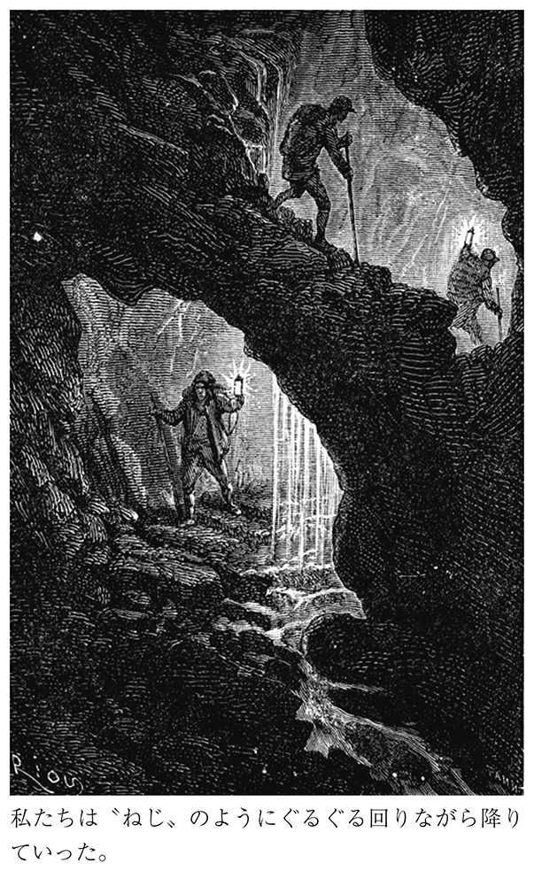
道はくだりだったが、勾配がきついので、すぐに膝の裏側の筋肉が固くなってくる。私たちは十五分ごとに休んで、筋力を回復しなければならなかった。そういった時には、岩の突起に腰をおろして、足をぶらぶらさせた。そして、食事をとったり、川の水で喉を潤したりしながら、おしゃべりをした。
この井戸のなかでは、当然のことながら、ハンス川も細い滝となって流れおちている。しかし、それでも、私たちの喉の渇きをいやすには十分すぎるほどの量があった。それに、勾配がまたゆるくなれば、また水量豊かに、ゆったりと流れることもわかっていた。その意味からすると、川は今のように激しく流れおちている時には、苛々と怒りを爆発させる叔父を思わせ、反対にゆるやかにくだっている時には、いつでも落ち着いたハンスを思わせた。
翌日と翌々日も、私たちはこの螺旋階段を降りていった。その結果、金曜日の夜の時点から見ると、さらに八千メートル、地中に潜り、海面からの深さは二万メートルに達した。だが、その翌日の七月十三日になると、階段は終わりを告げ、道は南東に向かった。勾配もなだらかになり、四十五度くらいになった。
そのおかげで、歩くのはずいぶん楽になったが、旅はなんの面白みもないものになった。しかたがない。どこまで行っても花崗岩に囲まれた、代わり映えのしない景色のなかを進むのだから、そうなるのもあたりまえだろう。
そして、七月十五日の水曜日には、私たちはついに海面から二万八千メートルのところまで降りていた。地上で言えば、スネッフェルス山からおよそ二百キロメートル、南東に来た地点だ。疲労はたまっていたものの、私たちは健康そのものだった。持ってきた薬にも、まだ手をつけていなかった。
叔父は一時間ごとに方位磁石やアネロイド型気圧計、温度計を見ながら、進んでいる方向、気圧、気温、時刻を手帳に記録していた（それは後に調査旅行の記録として発表されることになる）。したがって、私たちがどういった状態でどこを旅行しているかは、簡単にわかったのだが、スネッフェルス山から二百キロメートル、南東にいると聞いた時には、私は驚きの声を抑えることができなかった。
「どうして、そんな声を出すのじゃ？」私の声に、叔父が尋ねた。
「いえ、ちょっと、考えついたことがあって......」
「何をじゃ？ 言ってみなさい」
「叔父さんの計算が正しいとすると、ぼくたちはもうアイスランドの下にはいないということです」
「そうかね？」
「ええ。まちがいありません」
そう言うと、私は地図の上に定規をあてた。
「どうです？ まちがってはいないでしょう？ スネッフェルス山から南東に二百キロメートル行くと、ポートランド岬も越えています。地図を見てください。ぼくたちは海の上にいるのです」
「海の下じゃよ」叔父は両手をこすりあわせながら、嬉しそうに答えた。
「ああ」ぼくは大声を出した。「ぼくたちの上には大洋が広がっているんですね！」
「そのとおりじゃ。だが、アクセル、別に不思議なことではないぞ。おまえだって、ニューカッスルの炭鉱が海の下にあるのは知っているじゃろう？ いくつかの炭鉱が......」
叔父はそう簡単に言いはなったが、頭の上に大量の水があるかと思うと、私は心配にならずにはいられなかった。しかし、よくよく考えてみれば、上にあるのがアイスランドの山や平野であろうと、大西洋の水であろうと、別に大きなちがいはない。要はそれを支える花崗岩の岩盤さえ、しっかりしていればよいのである。そう考えると、私はすぐに海の下にいることに慣れた。それに、道のほうはまた驚くほどの急勾配になって、どんどん下に降りていくので、そんなことを気にしてもしかたがなくなってきていたのだ。道はくねくねと曲がりながら、それでも全体としては、あいかわらず南東の方向に進んでいた。
そして、それから三日後の七月十八日の土曜日、私たちはかなり広い洞穴のような場所にたどりついていた。叔父はハンスに三リクスドラーの賃金を支払って、明日は休日にしようと言った。
ということなので、翌日の日曜日、私は出発の時刻に追いたてられることもなく、ゆっくりと目を覚ました。地中深くに潜ってはいても、休日の朝にのんびりするのは、やはり気持ちがよかった。それに私たちは、もうかなりこの〝穴居人〟の生活に慣れていた。私はもう太陽のことも、星のことも、月のことも、木のことも、家のことも、町のことも、ほとんど考えないようになっていた。そういったものは、地上に生きる者にだけ許される贅沢なのだ。地下で生活をする決心をした者には必要ない。いくら素晴らしいものであっても、私たちはそれに背を向ける覚悟をしていた。
さて、洞穴は大きな広間のようだった。花崗岩の地面には、旅の忠実な友であるハンス川が流れている。ハンスが穴をあけた場所からこれだけ離れると、川の温度はすっかり冷め、そのまま飲めるようになっていた。
昼食後、叔父は午後の時間を使って、毎日手帳につけている情報を整理すると言った。
「わしらがこれまでどういう道をたどってきたか、正確に計算しておく必要があるからな。地上に戻ったら、わしは今度の旅の道のりを地図にするつもりなのじゃ。その時には、地球の断面図も示さなければならん。今度の旅では、それが何よりも重要じゃからな」
「それは素晴らしいことだと思います」私は言った。「でも、そんなに正確な地図や断面図がつくれるものでしょうか？」
「大丈夫じゃ。わしはおまえが思っている以上に細かく、方位や勾配を記しておいたからな。もちろん、だいたいのところは今でもわかっている。そうじゃ。それを言う前に、アクセル、この道がどちらの方向に向かっているか、磁石で調べてみろ。これは今後のためにな」
私は磁石を取りだして、注意深く眺めた。
「東南東微東です」
「ふむ」そう言うと、叔父はまず私が言ったことを手帳に記した。それから、こう続けた。「では、この前、計算したところから、昨日までのところをざっと計算してみよう。そうすると......。ふむ。わしらは出発点から三百四十キロメートル、南東に来たところにいることになるな」
「ということは、あいかわらず、ぼくたちは大西洋の下にいるんですね？」私は尋ねた。
「そのとおりじゃ」
「じゃあ、ぼくたちの頭の上では、嵐が吹きあれていて、波にもまれた船が何隻も助けを求めているかもしれないんですね？」
「その可能性はあるな」
「海中深く潜ったクジラたちが尾っぽの先で、海底をばしばし叩いているかもしれない。ぼくたちの天井を......」
「そうかもしれん」叔父は答えた。「だが、アクセル、心配はいらん。クジラたちがいくら尾っぽで海底を叩いても、底が抜けることはないからな。それよりも、計算を続けよう。さっきも言ったとおり、わしらはスネッフェルス山から南東に三百四十キロメートル、来たところにいるのじゃが、深さはと言うと......。ふむ。手帳の記録によると、わしらは六万四千メートル潜ったことになる」
「六万四千メートルですって？」私は大声をあげた。
「まちがいない」
「でも、地殻の厚さというのは四万メートルくらいでは......。だとすると、ぼくたちはその境界をはるかに超えていることになります」
「そうでないとは言わんよ」
「もしそうなら、ここの温度は、四十メートル地下に行くにしたがって一度あがるとして、千六百度になっていなければならないことになります」
「なるだろうな、アクセル」
「また、その温度であれば、ここにある花崗岩は固体としての形を保っていられず、どろどろに溶けていることになります」
「だが、実際はそうではない。それはおまえも認めるじゃろう。つまり、事実というのは、いつも理論を裏切るものなのじゃ。昔からそういうことになっておる」
「それはぼくも認めざるを得ません。でも、そんなことがあるなんて！ 信じられない気持ちでいっぱいです」
「温度計は何度だと言っている？」
「二十七度六分です」
「つまり、地表の温度が零度だとして、理論とは千五百七十二度四分ほど、ちがっているわけじゃ。つまり、その分だけ、現在の学者はまちがっていたことになる。ということは、ハンフリー・デーヴィーは正しかったということで、その説を信じたわしも正しかったということじゃ。何か言いたいことはあるかね？」
「ありません」
だが、本当は、言いたいことは山ほどあった。ハンフリー・デーヴィーの説など、私はどんなことがあっても認めるつもりはなかったのだ。確かに、理論と比べたら、ここの気温ははるかに低い。だが、それでも、私は「地球の中心は高温だ」と固く信じていたのだ。おそらく、スネッフェルス山は現在、火山活動を停止しているので、地中深くで冷えて固まった溶岩が断熱材の役割を果たしているのだろう。そのせいで、地球の中心の熱がここまで伝わらないのだ。私はむしろ、そう考えることにした。
だが、そうやって、現在の状況を説明する、あらたな理論を考えるいっぽうで、状況そのものは認めていた。そして、それを認めたうえで、別の切り口から反論することにした。
「叔父さん」私は言った。「現在、ぼくたちがいる場所について、叔父さんの計算は正しいのだろうと思います。それは認めましょう。でも、そうすると、この先、ぼくたちにとっては、困ったことになりませんか？」
「何かね？ 言ってみるがよい」
「ぼくたちは今、アイスランドの近くにいるわけですが、そうすると、地球の半径は六千三百五十キロメートルくらいになりますね。赤道のあたりにいるよりは少し短くなりますので......」
「六千三百五十七キロメートルじゃ」
「ええ、正確に言えば......。でも、ここでは計算を簡単にするために、六千四百キロメートルとしましょう。つまり、地球の中心まで行くには、それだけの深さを潜らなければならないのですが、今までのところ、ぼくたちが潜ったのは六万四千メートル――六十四キロメートルですね」
「そうじゃ」
「そして、その六十四キロメートル潜るのに、三百四十キロメートル、斜め下に降りていかなければならなかった」
「そのとおりじゃ」
「それにはおおよそ二十日の日数がかかりました」
「ふむ。二十日じゃな」
「ということは、まず日数の問題から言うと、ぼくたちは二十日間かかって、全行程の百分の一しか、潜っていないわけです。したがって、地球の中心まで行くには、二千日、つまり五年半くらいかかることになります」
叔父は答えなかった。
「それだけではありません。六十四キロメートル潜るのに、三百四十キロメートル、斜め下に降りていかなければならなかったとすると、六千四百キロメートル潜るには、三万四千キロメートル、斜め下に降りていく必要がありますが、そんなことはもちろん不可能です。ぼくたちはこれまで、ほぼ南東方向に進んでいますから、このまま方向も角度も変えずに進んでいくと、地球の中心に着く前に、どこかで地上に出てしまうことになりませんか？（22）」
それを聞くと、叔父の形相が変わった。
「くそったれ！ おまえの計算など地獄に落ちるがよい！」怒りに任せて叫ぶ。「おまえの仮説も地獄に落ちるがいい！ いったい、どんな根拠があって、そんなことを言うのじゃ？ この地下道が地球の中心に通じていないなどと、いったいおまえは誰から聞いたのじゃ？ 幸い、わしにはサクヌッセンムという先駆者がおるでな。サクヌッセンムがしたことを、わしもしているまでじゃ。サクヌッセンムが成功したのなら、わしも成功するじゃろう」
「そうだといいのですが......」私は答えた。「ただ、私に言えることは......」
「おまえに言えることはひとつもない！」叔父は言った。「できることなら、あるがな。口をつぐむことじゃ！ 二度と、今みたいな非常識なことを言わんでもすむようにな」
講義で気に入らない質問を受けた時のように、叔父はもう怒りで爆発しそうだった。私は用心して、もう何も言わないことにした。
と、叔父があいかわらず不機嫌な口調で続けた。
「それより、気圧のほうはどのくらいの数値になっておる？ 気圧計を見てくれ」
「かなりの数値になっています」
「そうじゃろう。だが、わしらはここまでゆっくりと降りてきた。だから、だんだん肺が慣れてきたんじゃ。どうだ？ ちっとも苦しくないじゃろう？」
「ええ。でも、ちょっと耳が痛いです」
「そんなものは心配いらん。肺の空気を耳に送って、外の気圧と同じにしてやればよいのじゃ」
「そうします」私は叔父に逆らわないことに決めて、おとなしく答えた。「でも、気圧の高い場所にいるのは悪くありませんね。音がはっきりと聞こえるような気がします」
すると、叔父は少し機嫌を直したように答えた。
「そうじゃな。ここなら、耳の悪い人間でも、聞こえるようになるかもしれん」
「でも、気圧があがると、空気の比重も大きくなるんですよね？」
「もちろんじゃ。あまり測られたことはないがな。したがって、これから下に降りるにつれて、重力が弱まっていくことはまちがいない。よいか、アクセル。重力は地表にいる時がいちばん強く働くのじゃ。地球の中心では、物質はもはや重さを持たなくなる」
「それは知っています。でも、教えてください。これから下に降りていって、空気の比重が大きくなると、水の比重と同じになるところまで行くのでしょうか？」
「七百七十気圧まで、気圧があがるところに行けばな」
「それより低いところでは？」
「空気の比重は、水の比重よりさらに大きくなるじゃろうな」
「つまり、水のなかにいる時よりも、もっと身体が浮かんでしまうわけですね？ そうなったら、どうやって下に降りるんです？」
「なに、ポケットに石を詰めればいいさ」
「さすが、叔父さん、すべてお見通しですね」
そう言って、私はもうそこで話を打ち切ることにした。これ以上、話を進めたら、またそこで叔父の理論のおかしな点をつくことになり、叔父を怒らせてしまう。そのことを恐れたからだ。
だいたい、叔父の言うことが正しいとすれば、私たちはこれから何千気圧もの空気の圧力を受けなければならないことになる。だが、その場合、空気は固形になっているのではないだろうか？ そんな状態に私たちの身体が耐えられるとはとうてい思えないが、仮に耐えられたとしても、そのような場所に行くのはやめたほうがいい。
しかし、いくら私の議論がまっとうだからといって、その議論を叔父に仕掛けても無駄だということは、私にもよくわかっていた。叔父はまたあの役にも立たないサクヌッセンムを引き合いに出して、「サクヌッセンムにできたことが、どうしてわしにできん？」と反論するに決まっているからだ。だが、サクヌッセンムの言葉が当てにならないことは、私には簡単に証明できる。ただ、こう言えばよいのだ。
「サクヌッセンムの生きていた十六世紀には、温度計も気圧計もありませんでした。だとしたら、サクヌッセンムはどうやって地球の中心に着いたことを確かめられたのでしょう？」と......。だが、私はこの反論を自分だけの胸にしまい、しばらく様子を見ることにした。
結局、この日の午後は計算とおしゃべりをして過ごした。私は叔父の意見に逆らわなかった。その間、ハンスはいつものように、物理学の法則などどうでもよく、自分はただ運命に従うだけだという無関心な様子をしていた。私はハンスをうらやましく思った。
22 かなりおおざっぱな計算だが、この割合でまっすぐ進むと、二千四百キロメートルくらい南東に行ったところ――すなわち、ヴェルヌの生まれ故郷である、フランスのナント周辺で地上に出ることになる。深さは千二百キロメートル進んだところで百十三キロメートル、すなわち十一万三千メートルに達し、あとはのぼっていくことになる。
だが、そのいっぽうで、旅はこれまでのところ、うまくいっていると言ってよかった。その意味では、別に文句を言う必要はない。もしこれからも、旅が平均してこんな調子で続くのなら、私たちは目的を遂げることができるだろう。すなわち、地球の中心にたどりつくことができるのだ。ああ、それはなんという栄光だろう！ そう考えると、しばらくするうちに、私は叔父の理論を受け入れるようになっていた。しかも、真剣に......。そうなったのは、地下数万メートルという異常な環境で暮らしているせいだろうか？ おそらく、そうだろう。
さて、道のほうは、それから数日の間、あいかわらず急な勾配が続いた。時には垂直に降りていくことさえあって、一日に六千メートルから八千メートル、地球の内部に潜りこむことになった。もちろん、そういった急激なくだりには、かなりの危険が伴う。だが、その危険はハンスが巧みに避けてくれた。ハンスはいつも落ち着いて、私たちの安全を守るために、それこそ献身的に尽くしてくれた。ハンスがいなかったら、叔父と私は死んでいたかもしれない。そう思ったことが何度もあった。
そのハンスは、地下に潜ってからというもの、これまで以上に無口になっていた。そして、その無口はどうやら叔父と私にも伝染したようだった。外部の物事は脳に直接、影響を与えるものである。たとえば、四方が壁で、窓のない場所に閉じこめられたら、すぐに言葉と言葉、観念と観念を結びつける能力を失ってしまう。要するに思考能力を失ってしまうのだ。独房に入れられた囚人たちが痴呆になったり、頭がおかしくなったりするのはそのためである。
そこで、叔父と私も考えを口にすることはあまりなくなっていたのだが、叔父と最後に議論をしてから二十日ほどの間は、特筆すべきようなことは何事も起こらなかった。だから、その間のことは何も覚えていない。ただひとつ、その日から数えて二十日目に重大な出来事が起こって、それについては細部にいたるまで、今でも忘れることができない。いや、これからも決して忘れることはできないだろう。
その出来事は八月七日の金曜日に起こった。その日、私たちはスネッフェルス山からは千三百キロメートル南東に離れた場所にいた。深さのほうは、それまでに垂直の降下を重ね、地下百二十キロメートルのところまで来ていた。海や山、街からは百二十キロメートル、下のところである。だが、その日はあまり傾斜のない道を進んでいた。
その時、私はたまたま先頭を歩いていた。《ルームコルフ・ランプ》を手に、花崗岩の様子を観察していたのだ。もうひとつのランプは叔父が持っていた。
だが、そこで私はとんでもないことに気づいた。ふと後ろをふりかえると、叔父とハンスがいなかったのである。
〈おやおや。どうやら、ぼくは早く歩きすぎたらしい。じゃなければ、叔父とハンスがどこかでひと休みしているせいか。しかたがない。ふたりのところまで戻るとするか。幸い、戻るにしても、道はそんなにのぼっていないし......〉
そう心のなかでつぶやくと、私は引き返した。そうして、十五分くらい、歩いて戻ったが、叔父たちには会わなかった。そこで、私はふたりを呼んでみた。だが、返事はなかった。私の声は地下道の壁にこだまするだけだった。
私は急に心配になりだした。不安に胸が締めつけられた。
「いや、落ち着け！」私は声に出して言った。「この道を行けば、必ず叔父さんたちに会える。ほかに道はないのだから......。ぼくは前に来すぎただけだ。戻ればいいだけだ」
そう考えて、私はそれから三十分くらい、くだってきた道をのぼりはじめた。叔父たちが私を呼ぶ声が聞こえないかと、耳をすませながら......。この気圧であれば、かなり遠くの音でも聞こえるはずだからだ。だが、地下道はしんと静まりかえっていた。
私は足を止めた。自分がひとりになったことが信じられなかった。混乱する頭のなかで、私は必死になって、〈自分はただ叔父たちからはぐれただけなのだ。迷路に入りこんでしまったわけではない〉そう思おうとした。はぐれただけなら、また会うことができるからだ。
「だって、そうじゃないか！」私はもう一度、同じことを口にした。「道は一本しかない。叔父さんたちだって、その道を来るんだから、ぼくが会えないはずがない。ぼくはこのまま、降りてきた道をのぼっていけばいいだけだ。まあ、ぼくが先頭に立っていたことをふたりが忘れて、探しに戻ってしまったのなら別だけど......。でも、その場合だって、ぼくが急げば、追いつくことができる。そうに決まっている」
私はこの考えを心のなかで何度も繰り返した。だが、考えれば考えるほど、本当にふたりに再会できるという自信がなくなってきた。実を言うと、「落ち着け！ 落ち着け！」と自分には言いながら、私はすっかり動揺していて、こんな単純なことを筋道をたてて考えるのにも、ずいぶん時間がかかったのだ。
そのうちに、また別の不安も芽生えてきた。そもそも、自分は本当に先頭を歩いていたのだろうか？ 私は出発した時の様子を思い出した。確か、ハンスは叔父の前に立って、私のあとについてきていた。そうだ！ 私がふりかえると、ハンスは立ちどまって、肩に荷物をかつぎなおしていたではないか！ その場面が頭によみがえってくると、私はようやく安心した。まちがいない。あの時、私はハンスが荷物をかつぎなおすのを待って、また進みはじめたのだ。
〈心配する必要はない〉私は自分に言いきかせた。〈それに、たとえ迷路に入りこんでしまったのだとしても、ぼくにはそこから抜けだすための〝糸〟があるじゃないか！ 絶対に切れることがなく、行く先を示してくれる糸――ハンス川という糸が......。ぼくはただハンス川をさかのぼっていけばいいんだ。そうすれば、叔父たちのいるところに合流できるだろう〉
そう考えると、私は急に元気になって、また歩きはじめようという気持ちがわいてきた。
ああ、それにしても、ハンス川が噴き出してきた時、壁の穴をふさがなくて本当によかった！ その点では叔父の〝先見の明〟に感謝しなければならない。そのおかげで、私たちは旅の間、喉の渇きに悩まされることがなくなり、今日は今日で、私が迷子にならなくてもすむようになったのだ。
そう思うと、私は降りてきた道をのぼりはじめる前に、顔と手を洗うことにした。そうすれば、気分もさっぱりすると思ったのだ。
そこで、私は身体をかがめて、ハンス川の水をすくおうとした。
だが、その時の驚愕ときたら！
私は乾いた地面を拳で叩いた。そこには川が流れていなかったのだ！
この時の絶望をもはや私は言いあらわすことができない。それは人間の言葉では伝えることができないものだ。おそらく自分は飢えと渇きに苦しめられながら、この地下道で死ぬことになるだろう。そう考えると、私は生きながら埋葬されたような気がした。
私は思わず地面をなでまわしていた。花崗岩の地面はからからに乾いていて、まったく湿り気は感じられなかった。手は燃えるように熱かったが、いくら地面に触れても、決して冷やされることはなかった。
だが、どうして、川は姿を消してしまったのだろう？ どこかで離れていってしまったことはまちがいない。そう言えば、さっき〈叔父たちが私を呼ぶ声が聞こえないか〉と耳をすませた時、地下道は不思議なほど静まりかえっていた。私には今、その理由がはっきりとわかった。川の音が聞こえなかったからだ。その音に気をつけていれば、不用意にちがう道を進んでしまった時にも、すぐにわかったはずなのに！ だが、私は川の音がしなくなったことに気がつかなかったのだ。道はおそらく、どこかで二股に分かれていたのだろう。私は見逃してしまったが、横にそれていく〝降り道〟があったにちがいない。ハンス川は地形の関係で、たまたまその道をくだっていき、そのあとに叔父とハンスも続いたのだ。そうして、地下深くに潜っていった......。
だが、今さら、そんなことに気づいてもしかたがない。私はまちがった道を来てしまったのだ。そして、道に迷ってしまったのだ。そうだ。今の私の状況を言葉で表わすのは簡単だった。私は迷路に入りこんでしまったのだ。
そう、迷路に入りこんだ。しかも、巨大な地下の迷路に......。私にはそう思えた。そのとたんに、厚さ百二十キロメートルの地殻の重みが肩にのしかかってきたような気がして、自分が押しつぶされるのではないかと思った。
私は地上のことを考えようとした。できることは、そのくらいしかなかったのだ。私は今、地上から遠く離れた地下の世界で道に迷っておびえている。それでも気力をふりしぼって思い出してみると、頭のなかにはハンブルクのことやケーニヒ通りの家のこと、愛しのグラウベンのことが次々と現われては消えていった。それだけではない。レイキャヴィークでお世話になったフリードリクソン先生のことや、スネッフェルス山をのぼった時のことなど、アイスランドに来てから旅の途中で起こったさまざまな出来事が、まるで幻覚を見ているように、はっきりと思い浮かんだ。ほかにはもう何をする気も起こらなかった。希望などひとかけらも持てない。この状況でなおも希望が持てるとしたら、それは狂気の証だろう。狂気に取り憑かれるくらいなら、絶望に打ちひしがれたほうがよかった。
実際、誰か超人的な能力を持った人が現われて、今、私の頭の上を覆っている岩盤の天井をふたつに割り、私を地上に戻してくれるのではないかぎり、もはや私に助かる道は残されていなかった。いや、せめて、私を正しい道に戻して、また叔父やハンスと再会できるようにしてくれる人がいたらいいのだが、そんな人がどこにいるのだろう？ 誰にそんなことができるというのか？
「ああ、叔父さん！」私は恨みをこめて、叔父の名を呼んだ。
だが、恨んだのはそのひと言だけだった。というのも、その言葉を口にしたとたん、〈叔父は今、この瞬間にも、私を探して心配している〉と、私にはよくわかったからだ。
しかし、だからといって、その叔父が私を助けにきてくれるわけではない。私は誰からも見放されたまま、どうすることもできないのだ。そう考えると、私は天に救いを求めることにした。すると、幼い時、寝る前に母から接吻を受けた時の記憶がよみがえってきた（早くに両親を亡くしたので、母の記憶はその時のことしか残っていない）。私はその時のように、地面にひざまずくと、神にお祈りを始めた。助けを求めるにはもはや遅すぎたかもしれないが、私は熱心にお願いした。「神様、どうかお助けください」と......。
すると、やはりお祈りをしたのがよかったのだろうか？ 少し気持ちが落ち着いて、私は今の自分の状況を感情ではなく、知性で判断することができるようになった。冷静に考えてみると、今の私には三日分の食糧があった。水筒も満杯だ。その点は問題ない。だが、いくら水や食糧があっても、ひとりきりでは精神的に持ちこたえられそうにない。気持ちがつぶれてしまう前に、行動を起こさなければならなかった。だが、はたして上に行くべきなのか？ それとも下に行くべきなのか？
もちろん、上に行くべきだ。私は思った。
そうだ！ 上にのぼって、私が道をまちがえた、あの二股の分岐点まで行くのだ。そうすれば、またハンス川と出会って、そのまま川をさかのぼっていけば、スネッフェルス山の頂上まで戻ることができる。
そうだ！ さっきは気が動転して思いつかなかったが、そうすればいいのだ。どうして、こんな簡単なことに気がつかなかったのだろう？ 助かるチャンスがあるとすれば、それだけだ。大切なのは来た道を戻って、ハンス川を見つけることだ！
そう考えると、私は鉄のストックを地面に突いて、立ちあがった。そうして、また降りてきた道をのぼりはじめた。勾配はかなり急だった。だが、私は希望を胸に、決然と歩きはじめた。もうほかに行く道はないと覚悟を決めて......。
それから三十分の間、私は足を止めなかった。壁も天井も、そして地面も、まわりはすべて花崗岩だ。私は道の曲がり方や岩の突起に見覚えがないかどうか、必死になって観察した。だが、どれもこれも同じような気がして、ここは行きに通った道だと確信は持てなかった。私はただやみくもに進んでいった。だが、川と別れた分岐点には着かない。そのうちに、道は行き止まりになってしまった。壁に頭をぶつけて、私はそのことに気づいた。
ああ！ 私は再び恐怖と絶望にとらわれた。身体じゅうから力が抜けて、動くこともできない。私の希望はこの行き止まりの壁で、見事に打ち砕かれてしまったのだ。ということは、降りていった時には気がつかなかったが、この地下道には横道がたくさんあったのだ。私はそのうちのひとつに入りこんでしまったのだ。元に戻って正しい道をのぼろうにも、地面は花崗岩だ。足跡は残っていない。
私はこの地下の迷宮で迷子になってしまったのだ！ もうここから抜けだすことはできない。私はここで、あらゆる死に方のなかでもいちばん恐ろしい死に方をするのだ。その時、ふと頭のなかに奇妙な考えが浮かんだ。今から何万年、何十万年後に、この地下百二十キロメートルの場所で〝私の化石〟が発見されたら、科学界は大騒ぎになるだろう。私はそのことを口に出して、言ってみようとした。だが、乾いた唇からはしゃがれた音が出るだけで、声は言葉にはならなかった。私はあえいだ。
そのうちに、また別の恐ろしいことが起こった。ランプを落として、調子をおかしくしてしまったのだ。だが、私には修理することができない。ランプの光はだんだん細くなって、今にも消えようとしていた。
私は螺旋形の真空管のなかで、光が瞬きながら、弱くなっていくのを見つめた。光が瞬くたびに、それは影となって、まわりの壁に映しだされる。そのたびに、壁は暗くなっていった。少しでもランプから目を離したら、光が消えてしまうのではないか？ そう思って、私はまばたきをすることもできなかった。光は一瞬、一瞬、力を失っていき、その反対に、闇は濃くなっていった。
やがて、最後の光が真空管のなかで震えた。私はその光を目で追った。その光を目で吸いこもうとした。全身の力を両目に集めて、その光を見つめ、光の感覚を目に焼きつけようとした。最後の光の感覚を......。そして、あっと思った時、私は深い闇の底にひとり沈んでいた。
その瞬間、私の口からは恐怖の叫び声がほとばしりでていた。これが地上であれば、いくら夜の闇が深くても、光がまったく消えてしまうということはない。闇に拡散し、希薄になったとしても、少しでも残っているかぎり、網膜は光をとらえることができる。だが、ここではちがう。光はまったく残っていない。この完璧な闇のせいで、私は文字どおり、目が見えなくなってしまったのだ。
もうどうしてよいかわからないまま、私は立ちあがって歩きはじめた。両手を前に突きだして、壁にぶつからないように手探りで確かめながら......。そのうちに、私は恐怖に駆られて、逃げだしたくなった。一刻も早く、この恐ろしい闇から逃れたい。この地下の迷宮から......。そう思うと、私はやみくもに走りはじめていた。ただ、方向だけは下に向かって......。穴居人のように......。叔父たちの名を呼び、叫びながら......。私は走った。岩にぶつかり、地面にころび、また起きあがりながら......。そのせいで、顔はもう血だらけになっていた。それでも、私は走った。額や頰から流れでる血を飲みながら......。そうして、いつか突然、行く手に壁が現われて、私の頭をつぶしてくれるのを待った。
私はいったいどこに向かっているのだろう？ それはまったくわからなかった。だが、そうやって、何時間も走りつづけたあと、おそらく力が尽きたのだろう、私は突然、壁に沿ってくずおれた。そして、まるで意志のない物体のように、その場にころがると、まもなく気を失ってしまった。
意識が戻ってきた時、私の顔は濡れていた。だが、それは血ではなく、涙だった。何も見えないし、何も聞こえない。私はただぼんやりと、地面に横たわっていた。それから、どのくらいそうしていただろう？ 私にはわからない。時計が見えないので、もう時間を知る方法がないのだ。私はすべてのものから見捨てられてしまった。これほどの孤独はかつて誰も味わったことがなかっただろう。
倒れたあと、私は多くの血を流していた。身体じゅうが血でべとべとしている。ああ、どうして、あのまま死んでしまわなかったのだろう！ 私は思った。自分はまだ、これから死ななければならないのだ。それを思うと、恐怖が襲ってきて、もう何も考えたくなかった。私はあらゆる考えを追い払った。だが、それでも恐怖は去らず、苦痛のあまり、私は反対側の壁までころがっていった。
そのうちに、また意識がだんだん遠くなっていった。身体もどんどん弱っていくような気がする。もう限界だ。そう思った時、突然、地面を揺るがすような大きな音が鳴り響いた。音は壁に反響しながら、だんだん小さくなっていき、やがて地下道の奥に消えていった。それは雷鳴に似ていた。
いったい、どこから聞こえてきたのだろう？ 私は心のなかでつぶやいた。おそらく、この花崗岩の壁の向こうで何かが起こったのにちがいない。ガス爆発か、あるいは落盤か。その音が岩のなかを通ってきたのだ。
私は耳をすませた。また、同じ音が聞こえてくるのではないかと思ったのだ。そのまま十五分が過ぎた。だが、音は何もしない。自分の心臓の音さえ、聞こえてこない。地下道は静まりかえっていた。
両手をついて起きあがると、私は何気なく壁に耳をつけた。すると、どこか遠くのほうから、言葉のようなものが聞こえてきた。ほとんど聞きとれないような小さな声だったが、誰かが話しているような気がする。背筋を戦慄が走った。
〈幻聴だ！〉私は考えた。
いや、そうではない。もう一度、注意深く聞いてみると、それは現実の話し声だった。だが、おそらく身体が衰弱して集中力に欠けているせいだろう、何を言っているかまではわからなかった。それでも、話し声であることはまちがいない。その点には確信があった。
だが、仮に話し声だとしても、それは自分の声がこだまになって返ってきただけではないのだろうか？ 私は自分の知らない間に、何かぶつぶつと話していたのではないか？ その可能性は否定できない。そこで、私は今度はしっかりと口を閉じて、また壁に耳をつけた。声はやはり聞こえてきた。
〈まちがいない！ 誰かが話している！ 話している！〉
そう思うと、もっとはっきり聞こえる場所はないかと、私は立ちあがって、二、三歩、先まで行ってみた。そこで、また壁に耳をあてると、声は少し大きくなった。まだ何を言っているかはわからないが、単語のようなものも聞こえる。言ってみれば、誰かが声をひそめてつぶやいているのを聞いている時のような感じだ。そのなかで、《フルーラッド》という単語だけは何度も聞こえた。その言葉はいつも沈痛な口調で発せられた。
〈いったい、どういう意味だろう？ 誰が口にしたのだろう？ 叔父か、ハンスか。そのどちらかに決まっている。だが、もしふたりの声が私に聞こえるのであれば、私の声もふたりに聞こえるのではないだろうか？〉
そう考えると、私はありったけの力をこめて叫んだ。
「助けて！ 助けて！」
それから、また壁に耳をあてて、返事を待った。暗闇のなかで......。はっきりした言葉か、少なくとも「おお」という嘆声か何かが聞こえないかと思って......。だが、そういったものは聞こえなかった。そのまま、数分が過ぎた。どうしてだろう？ どうすればいい？ 頭のなかに、さまざまな考えが駆けめぐった。私は自分の声が弱すぎて、ふたりに届かないのだと思った。ふたりはこの壁の向こうのどこかにいるはずなのに！
〈でも、あれはふたりの声にちがいない。地下百二十キロメートルにいる人間は、ほかには考えられないのだから......〉
そう心のなかで繰り返すと、私はまた壁に耳をつけて、ふたりの声を聞きはじめた。耳の位置を細かく変えて、いちばんよく聞こえる場所を探る。と、また《フルーラッド》という言葉が耳に入ってきた。そして、またあの雷鳴のような音が鳴り響いた。ドーンと大きな音がして、そのあとには壁に反響する音が続く。その瞬間に、私ははたと思いあたった。
〈そうか。さっきのあの音。あの音は、壁の向こう側から聞こえてきたわけじゃないんだ。この壁は花崗岩でできている。だとしたら、かなり大きな爆発音でも、中を伝わりにくいはずなんだから......。声だってそうだ。いや、声なら、なおさらだ。音は岩を抜けてくるんじゃない。地下道を直接通ってくるんだ！ この地下道のなかには、何か特別な音響効果が働いているんだ！〉
そう思って、もう一度、神経を集中すると、今度は話し声のなかに、はっきりと私の名前が聞こえた。あらためて聞くと、声は壁の向こうからやってくるのではなく、地下道の空間を伝わってきているようだった。
私の名前を口にしたのは、たぶん叔父だろう。叔父はハンスと話していた。会話のなかに何度も出てくる《フルーラッド》という単語はデンマーク語だ（23）。だが、とりあえず、そんなことはどうでもいい。私はやみくもに大声を出すのではなく、壁に近づいて声を出すことにした。声はきっと、この壁沿いに地下道のなかを進むのだ。壁はおそらく電線のような役目を果たしているのだろう。
だが、ぐずぐずしている暇はなかった。ふたりが今、いる場所から離れてしまえば、声を伝える音響効果が失われてしまうかもしれないからだ。私は壁に口を近づけると、できるだけはっきりと言った。
「叔父さん！ リーデンブロック叔父さん！」
そうして、激しい不安にさいなまれながら、返事が戻ってくるのを待った。音はそんなに速くは届かない。気圧があがっても、音の速さは変わらない。ただ、はっきりと聞こえるようになるだけなのだ。数秒が数世紀のように感じられた。そして、かなりの時間がたったあと、ようやく私の耳に叔父の言葉が届いた。
「アクセル！ アクセル！ おまえか？」
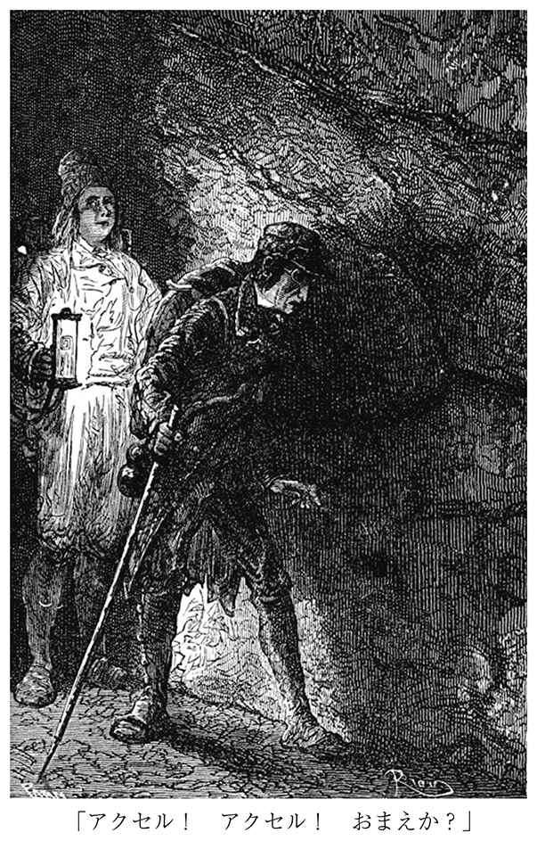
「そうです！ そうです！」私は答えた。
（間......）
「かわいそうに。どこにいるんじゃ？」
「わかりません。真っ暗闇のなかで、道がわからなくなってしまったんです」
（間......）
「だが、ランプはどうした？」
「消えました」
（間......）
「川はどこじゃ？」
「いなくなりました」
（間......）
「ああ、アクセル！ かわいそうに。元気を出すんじゃ！」
「いや、もうだめです。ぼくはすっかり力を使いはたしました。答える元気がありません。だから、ちょっと待ってください。でも、叔父さんのほうは、ぼくに話しかけてください」
（間......）
「元気を出せ！ いや、答えんでもいい。わしが話す。わしらはおまえを探して、地下道を何度ものぼったり降りたりした。だが、見つけることはできなかった。おお、おまえがいなくなったのを知って、わしがどんなに心を痛めたことか！ 結局、おまえが見つからないので、わしらはおまえがハンス川に沿って進んでいるものと考え、下に降りることにした。おまえに聞こえるかと思って、銃を何度かぶっ放したりしてな。いずれにせよ、この地下道の音響効果のせいで、わしらは今、こうして互いの声を聞けるようになった。といっても、まだ互いの身体に触れることはできないが......。だが、アクセル、絶望してはいかん。こうして、話ができるだけでも、たいしたことなのじゃから......」
そうやって、叔父が話している間、私は考えた。すると、小さな希望が――希望とは言えないくらい、かすかなものだったが――そんな小さな希望が心に芽生えてきた。この希望にすがってみよう。私は思った。だが、そのためにはぜひとも知っておかなければならないことがある。私は壁に唇を寄せて、言った。
「叔父さん」
（間......）
「なんじゃ？」しばらくして、返事が戻ってきた。
「最初にぼくたちがどのくらい離れたところにいるのか、知らなくてはなりません」
（間......）
「そうじゃな。知るのは簡単じゃ」
「精密時計は持っていますね」
（間......）
「持っておるよ」
「それでは、時計を出して、秒針が12のところに来た時に、ぼくの名前を呼んでください。その言葉が聞こえたら、ぼくもその名前を繰り返します。で、ぼくの返事が聞こえたら、その時の秒針の位置を確かめてください」
（間......）
「わかったよ。わしがおまえの名を呼んでから、おまえの返事が戻ってくるまでの時間――その時間の半分が〝わしの声がおまえに届くまでの時間〟というわけじゃな？」
「そのとおりです」
（間......）
「用意はいいか？」
「はい」
（間......）
「よし、行くぞ。これから、おまえの名を呼ぶからな」
私は壁に耳をつけた（24）。まもなく、「アクセル」という言葉が聞こえてきた。私はすぐに「アクセル」と返した。そして、待った。
（間......）
「四十秒じゃ」叔父の声が聞こえてきた。「わしがおまえの名を呼んで、その名前がおまえの口からわしのところに返ってくるまでに四十秒かかった。ということは、わしの言葉がおまえに届くには二十秒必要だったということじゃ。音は秒速約三百三十メートルで進むから、この二十秒を距離にすると、六千六百メートル。つまり、わしらの間は六・六キロメートル離れているということになる」
「六・六キロメートル」私はつぶやいた。
（間......）
「大丈夫だ、アクセル。そのくらいの距離は乗りこえられる」
「でも、のぼるんですか？ 降りるんですか？」
（間......）
「降りるんじゃ、アクセル。その理由を説明しよう。わしとハンスは今、広い洞穴にいる。この洞穴にはあちらこちらから地下道が集まってきているのじゃ。だから、今、おまえがいる地下道もこの洞穴につながっているにちがいない。というより、この洞穴から生じたひび割れが地下道になったと考えたほうがよい。だとしたら、このあたりの地下道がこの洞穴に集まっているのは当然のことなのじゃ。だから、アクセル、勇気を持って、立ちあがれ！ まずは歩け！ 歩けなかったら、這ってもいい！ 必要だったら、坂をころがり落ちよ！ そうしたら、その先にはわしらが腕を広げて待っている。おまえを抱きとめるためにな。だから、進め！ アクセル。進むのじゃ！」
その言葉に、私は勇気づけられた。
「じゃあ、行きます」私は叫んだ。「この場所から離れたら、二度と言葉を交わすことはできないでしょうが、でも、行きます。さよなら。叔父さん、さよなら」
（間......）
「またじゃ！ アクセル！ またじゃ。アクセル！ またな」
この叔父の言葉を最後に、私は出発した。かすかな希望とともに......。
しかし、六キロメートル以上も離れている場所で、互いの姿も見えないのに、話ができるとは！ そのことを思うと、私は神に感謝の祈りを捧げた。というのも、神はこの地下にはりめぐらされた巨大な迷路のなかで、たまたま叔父たちの言葉が届く場所に私を導いてくれたのだから......。おそらく、そんな場所はほかにはなかったろう。そのたったひとつの場所に、神は私を連れていってくれたのだ。
ところで、空間を伝って、かなり離れた場所に声が届くというのは、確かにびっくりするような音響効果ではあるが、物理学的には不思議なことではない。こういった地下道では、音は空間の形と、その空間を囲む岩の性質で〝伝わりやすさ〟が決まるのだ。こんなふうに、声が近くにいる人には聞こえないのに、離れた場所にいる人には聞こえるという例なら、私は嫌というほど知っている。ロンドンのセント・ポール大聖堂の《ささやきの回廊》もそうだし、シチリア島のシラクサの近くにある石切り場のなかでも、同じような現象が見られる。かつては牢獄であったこの石切り場では、僭主ディオニュソスがその特殊な音響効果を利用して、囚人たちの話を盗み聞きしたという。そのため、この牢獄には《ディオニュソスの耳》という名前がつけられているのだ。
そういった知識を思い出すと、私はだんだん、なんとかなりそうな気がしてきた。叔父の声が私に届くということは、私たちの間には障害物がないということだ。つまり、〝音の通った道〟に従っていけば、私もまた叔父のところに着けるということになる。あとは体力がもつかどうかというだけの問題だ。私は立ちあがった。そして、くだりの坂道を歩くというよりは、駆けるようにして降りていった。坂はそれほど急だったのだ。靴の底で勢いを止めながら、私は進んでいった。
そのうちに、坂をくだる速度が速くなり、降りているのではなく、落ちているという感覚に近くなってきた。私はもはや勢いを止めることができなかった。
こうして、どのくらい降りつづけたろう。気がつくと、突然、足の下から地面がなくなり、私は自分があちこちの壁にぶつかりながら、落ちていくのを感じた。そこはもう道ではなかった。竪穴だった。と、頭が岩にぶつかって、私は意識を失った。
23 フルーラッドはスウェーデン語で〈失われた〉という意味。ヴェルヌはスウェーデン語とデンマーク語を混同しているところがある。
24 声は空間を通ってくるので、壁ぎわにいる必要はあっても壁に耳をつける必要はない。だが、心情的にはよくわかる。
意識が戻ってきた時、私は自分が何枚も重ねられた厚い毛布の上で寝ていることに気づいた。きっと叔父とハンスがありったけの毛布を敷いてくれたのだろう。私は大きく息を吐いて、目を開いた。と、薄明かりのなかで心配そうに私の顔を覗きこむ叔父の顔が見えた。叔父はすぐさま私の手をとって、喜びの声をあげた。
「生きている！ 生きているぞ！」
「ええ」私は小さな声で答えた。
「ああ！ よかった！」叔父は私を胸に抱くと言った。「よかった！ おまえは助かったんじゃな。よかった、よかった」
その声には心から安心したような響きがあったので、私は心を動かされた。叔父は本当に心配してくれていたのだ。それは今、叔父が率直に安堵の気持ちを表わしていることでもわかった。まあ、逆に言えば、私がこれほどの試練を受けなければ、心配はしてもらえなかったということでもあるが......。
その時、ハンスがやってきた。ハンスは叔父が私の手を握りしめているのを見て、ほんの少し視線を止めた。誓ってもいい。ハンスもまた喜びを表わしてくれたのだ。
「ゴッダー」
「おはよう、ハンス。おはよう」私はつぶやくように言った。それから、叔父に向かって尋ねた。「ところで、叔父さん、ここはどこなんです？」
「それを話すのは明日にしよう。明日じゃ、アクセル。今日はまだ身体が弱ってるからな。わしはおまえの頭に湿布をしておいた。しばらくは、頭を動かさんほうがいい。今は眠れ。明日になったら、すべてわかるから......」
「じゃあ、時間だけでも教えてください。今は何日の何時なんです？」
「八月九日、日曜日の夜十一時じゃ。さあ、いいから眠れ。日付が変わって十日になるまでは、どんな質問にも答えんぞ」
ということは、あと一時間待てば、どんな質問でもできることになる。だが、疲労のせいで、私にはその一時間が待てそうになかった。実際、身体はそれほど衰弱していたのだ。いくらあけていようと思っても、まぶたが自然に閉じてくる。元気になるには、ひと晩ぐっすり眠ることが必要だった。そこで私は、〈今日が九日なら、ぼくは三日間も、ひとりで地下道をさまよっていたんだな〉と考えながら、眠りについた。
翌朝、目が覚めると、私は寝たまま、まわりを見まわした。そこは広大な洞穴で、壁や天井は石灰岩でできていた。見ると、天井の鍾乳石から垂れる水滴で、地面にはいくつも、見事な石筍ができている。私はこの美しい洞穴のなかで、地面にありったけの毛布を重ねて、寝かされていた。毛布の下は柔らかい砂地だった。
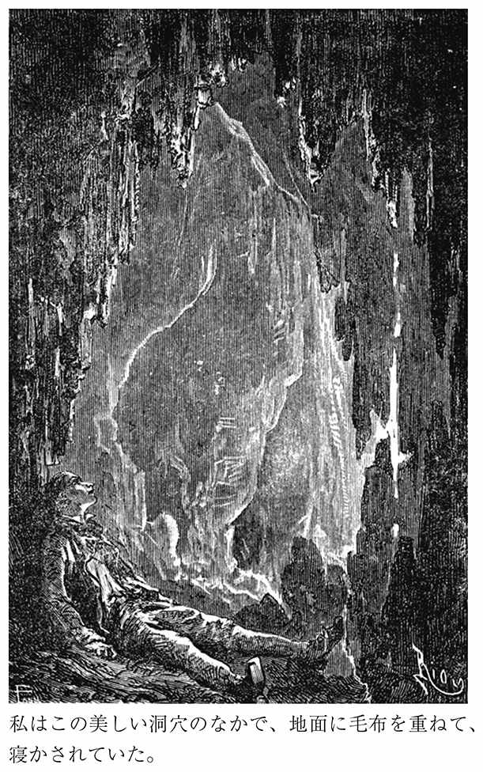
洞穴のなかは薄明るかった。だが、ランプは灯されていなかった。松明を燃やしているわけでもない。それなのに、どうして光があるのだろう？ 私は不思議に思った。そして、その理由に気づいて、びっくりした。洞穴の狭い裂け目から、外の光が差しこんでいたのだ。耳をすますと、浜辺に打ち寄せては引く、波のような音も聞こえた。時おり、風が吹きぬけるような音もした。
はたして、これは現実なのだろうか？ 自分はまだ眠っていて、夢のなかにいるのではないか？ それとも、上から落ちた時の衝撃で、頭がおかしくなってしまったのだろうか？ 私は訝った。そうでもなければ、こんな音が聞こえるはずはないからだ。外の光が見えるはずはないからだ。いずれにせよ、今の私の目に光が見え、波や風の音が聞こえるのはまちがいなかった。
〈あれは日の光だ！〉心のなかで、私はつぶやいた。〈あの岩の裂け目から入りこんできているのは......。ざざーっと押しよせて引いていくのは、波の音だ。ひゅうひゅういうのは風の音だ。まちがいない。そうすると、ぼくたちは地上に戻ってきたということか？ 叔父さんはとうとう地底旅行をあきらめてしまったということか？ いや、ありがたいことに、叔父さんのほうから終わりにしようと決心したということか？ いや、たとえ地上に戻ってきたのだとしても、それだけは考えられない......〉
私は頭をひねった。と、その時、叔父が現われた。
「おはよう、アクセル！」機嫌のよい声で、叔父は言った。「どうやら元気になったようじゃな」
「ええ、おかげさまで」毛布の上に身を起こしながら、私は答えた。
「そうじゃろう、そうじゃろう。おまえはよく眠っておったからな。わしとハンスは交代でおまえの様子を見ていたが、どんどん力を回復していくのが、そばにいるだけでわかったぞ。今はもう健康そのものじゃ」
「はい、もうすっかり元気になったようです、その証拠にお腹がすいています。よかったら、何か食べさせてくれませんか？」
「そうか食欲も出てきたか。熱も下がったんじゃな。きっとハンスが傷口に塗った軟膏が効いたのじゃろう。なんという薬か、わからんがな。アイスランド人しかつくり方を知らんと言っておった。そのおかげで、傷口がふさがったのじゃ。まったく、たいした男だよ。あのハンスという男は......」
話しながら、叔父は食事の準備をしてくれた。もっとゆっくり食べろという叔父の忠告に従わず、私はそれを片っ端からたいらげていった。それと同時に、自分がどんなふうにここに落ちてきて、気を失ったのか、その時の状況を尋ねた。叔父は詳しく教えてくれた。
それによると、私はこの洞穴の上のほうから、ほとんど垂直に落ちてきたということだった。それと同時に岩もたくさん降ってきて、その岩がひとつでも、地面に着いた私の上に落ちていたら、私は完全に押しつぶされて、ぐしゃぐしゃになっていただろうという。だが、幸運なことに、私は岩のひとつに乗っかる形で落ちてきて、その岩が地面にぶつかった衝撃で大きく撥ねとばされた。その結果、私は宙を舞って叔父の腕に飛びこむと、血まみれの状態のまま、ぐったりと動かなくなったのだという。
「正直に言うと、あの状況では、おまえは何回死んでも不思議じゃなかった。だが、おまえは助かり、わしらはこうしてまた巡り合えた。危うく、離ればなれになりそうになったのじゃから、これからはもう、旅が終わるまで片時も離れまいぞ」
旅が終わるまでとは？ それはいったいどういうことだろう？ 旅はもう終わったのではないのか？ なにしろ、地上に戻ってきているのだから......。驚きのあまり、私は目を丸くした。すると、すぐに叔父の言葉が飛んできた。
「どうした？ アクセル」
「ひとつ訊いてもいいですか？ 叔父さんはぼくが健康そのものだって言いましたよね？」
「言ったとも！」
「それはつまり、どこにも大きな怪我をしていないということですよね？ 手や足を失ったわけでもなく......」
「そのとおりじゃ」
「頭も？」
「もちろん、失ったわけではない。ちゃんと肩の上にのっかっておるぞ。まあ、小さな傷はあるがな」
「いえ、ぼくが訊きたいのは、頭がおかしくなっているんじゃないかということなんですが......」
「頭がおかしくなっているじゃと？」
「あの......。ぼくたちは地上に戻ったんですよね？」
「いや、そんなことはない！」
「じゃあ、やっぱり頭がおかしくなったんです」私は言った。「だって、日の光が見えたり、波の音や風の音が聞こえるんですから......」
「なんじゃ、そんなことか......」叔父は答えた。
「どういうことです？ 説明してください」私は尋ねた。
だが、叔父は首を横にふった。
「説明することは何もない。なぜなら、説明は不可能だからじゃ。ただひとつ言えることは、どんなに研究を重ねても、地学には終わりがないということじゃ。実際、外に出てみれば、おまえにもすぐにわかると思うがな」
「じゃあ、すぐに外に出ましょう！」私は勢いよく立ちあがった。
「だめじゃ、アクセル。すぐにと言っても、もう少しあとじゃ」叔父が言った。「外気はまだ身体によくないからな」
「外気ですって？」
「そうじゃ。風はかなり強いからな。うかつに身体をさらさんほうがいい」
「大丈夫ですよ。ぼくはもう完全に回復しました」私は言った。
「おお、アクセル。少しの辛抱じゃ。ここでまたおまえの具合が悪くなるようだと、今後の計画に差しつかえるからな。あまり時間を無駄にしたくない。なにしろ、この先は長い航海が待っておるのじゃから」
「航海ですか？」
「そうじゃ。だから、今日は休め。わしらはもうじき出航する」
「もうじき出航する......」
私はびっくりして、叔父の言葉を繰り返した。
いや、それにしても、出航するとは！ ということは、外には大きな川が流れているのか？ それとも湖があるのか？ まさか、海があるのでは？ じゃあ、船は？ 水辺には港があって、そこに船がつながれているというのか？
そう考えると、もう私は好奇心を抑えることができなくなっていた。いくら叔父が止めても無駄だった。このままここでじっとしていたら、外気に身をさらすより、かえって具合が悪くなってしまう。私の様子を見て、そのことを悟ったのだろう、叔父も最後には私が外に出るのを許してくれた。
私は急いで着替えをすませた。それから用心のために、毛布を一枚、身体に巻きつけると、洞穴の外に飛びだしていった。
最初、私は何も見ることができなかった。光からしばらく遠ざかっていたせいで、自然に目をつぶってしまったのだ。だが、しばらくして、ようやく目を開いた時、私は目の前の光景に呆然とした。それから、感嘆の声をあげた。
「海だ！」
「そうじゃ」叔父が答えた。「リーデンブロック海じゃ。この海はわしが発見したものだから、自分の名前をつける権利がある。そのことに異議を唱える船乗りはおらんじゃろう。そう考えると、わしは楽しくなるぞ」
これは大海の始まりなのか。目の前には見渡すかぎり、水が広がっていた。湖だとしたら、よほど大きな湖だ。どこまで行っても陸地は見えない。海岸線は入り江が深く切れこんでいて、泡立つ波が砂浜を洗っていた。砂は細かく、金色に輝いている。そのなかには、おそらくこの地球に生命が誕生したばかりの頃に現われた貝類のものだろう、細かく砕けた貝殻も混じっていた。広大であるとはいえ、地上とちがって閉じた空間になっているせいで、波の音が響く。波は砂浜で砕け散ると、そのしぶきが風に運ばれて、私の顔を打った。砂浜は海に向かって、わずかに降りていた。その後ろには波打ちぎわから二百メートルほど離れたところに、それこそ天を衝くような岸壁がそそりたっている。岸壁は海岸線に沿って、上部がラッパの口のように広がっていた。おそらく、波に浸食されたのだろう、海岸線は複雑な形に入り組んでいて、いくつもの岬が海に向かって突きだしている。それは薄く靄のかかった、はるか遠くの水平線まで続いていた。
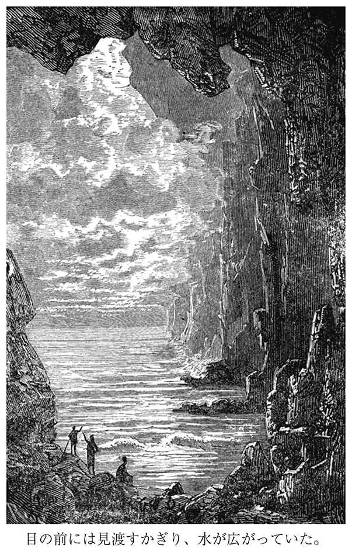
これは海だ！ 私は思った。湖ではなく、本物の海だ！ 海岸の複雑な形といい、そこに打ち寄せる荒々しい波といい、水平線に島影ひとつ見あたらない、その無限の広がりといい――それはまぎれもなく海だった。
だが、この光は......。私は今、海岸からはるか水平線まで、まわりの景色を描写したが、そんなに細かく、また遠くのほうまで見ることができたのは、空間自体が明るく光っていたからだ。だが、この光はもちろん、中天で輝き、そこから四方に強烈なエネルギーを発する太陽の光ではない。夜空に冷たく輝く、青白い月の光でもない。ちがう！ この光は――白く透明に、月よりも明るく、またほんのり暖かみを感じさせて、時おり細かく震えながら、空間を照らすこの光は、まさしく電気による光だった。おそらく、オーロラのような〝宇宙的な発光現象〟がずっと続いて、地下の海の上に広がる、この巨大な空間を光で満たしているのだ。
その空間――いや、私たちの頭上に広がる、この空間を空と言ってよければ――空は一面の雲に覆われ、その雲は絶えず形を変えながら、ゆっくりと動いていた。雲は空気中の水蒸気が凝結して細かい水滴となってできたものだが、その水滴が大きくなると、雨となって降ってくる。そのことからすると、この地下でも大気中の水蒸気の凝結が進めば、雲はさらに厚くなり、激しい雨が降ることも予想された。そのいっぽうで、科学的に言って、これほどの大気圧のもとで水が蒸発するとは、私には信じられなかった。だが、どんな物理学の法則が働いたのか、ともかく、空は雲で覆われていたのである。それなのに、天気はよかった。全体に明るく、雨が降りそうになかったからだ。
全体が明るく光っているのは、さっきも言ったように、電気による発光現象だと思われるが、上空の雲が薄くなっているところでは、その現象がありありと観察できた。そして、たまに雲が切れたりすると、その切れ目からは日差しのようなものまでが差しこんでいた。しかし、それはあくまでも「のようなもの」であって、日差しそのものではなかった。太陽の光とはちがって、その光には熱が欠けていたからである。そのため、あたりの風景はどことなく悲しく、憂愁に満ちていた。この空の上には星が瞬いているのではなく、花崗岩の天井が広がっているのだ。私はそれを感じた。また、そう思うと、頭上の岩の重みで押しつぶされそうな気がした。いくら大きく見えても、この空間には無限の広がりがない。宇宙旅行など、できるはずもない。いや、こんなちっぽけな空間では、どんなつまらない惑星間旅行もできないだろう。
目の前の光景を見て、私は「地球の内部には広大な空洞がある」と言っていたイギリスの船長（25）がいたことを思い出した。その船長によれば、空洞の内部は気圧が高いせいで空気が光を放っていて、上のほうではローマ神話の冥界の王プルートとその妃プロセルピナの名を冠した星が不思議な軌道を描いて回っているという。あれは本当のことだったのか？
いずれにしろ、ここが地下の広大な空洞であることにまちがいはなかった。その意味では、私たちはあいかわらず、地中に閉じこめられていた。だが、その広さと言ったら......。この空間がどこまで広がっているかは見当もつかなかった。なにしろ、岸壁は右と左にどこまでも続いていたし、正面に目を向ければ、はるか遠くに水平線が一本、空と海との境も曖昧に、ぼんやりと引かれているのが見えるだけだったからだ。そして、空のほうは、天井があるのはまちがいなかったが、その天井までの高さは一万メートルは越えていると思われた。天井はもちろん、左右に広がる花崗岩の岸壁が支えているわけだが、その天井と壁がつながっている部分は肉眼では見定めることができなかった。雲はだいたい四千メートルくらいの高さにあり、その形状からすると、地上で見る時よりは高い位置にあるようだった。それはおそらく気圧が高いせいだと思われた。
いったい、この〝空洞〟をなんと呼べばいいのだろう？ あまりに広く、大きすぎて、〈洞窟〉とか〈洞穴〉と呼ぶことはできない。そんな言葉は浮かんでもこなかった。だとしたら、なんと呼べば？ およそ人間の言葉で、この空洞を呼ぶのにふさわしい言葉は存在しないのではないだろうか？ 私は思った。
だが、それにしても、どうして地下にこれほどの空洞ができることが可能だったのか？ 私の持っている地質学的な知識では、その理由を説明することはできなかった。地球の創成期に地殻の内部で溶岩が冷えた時、収縮が起こって隙間が生じたということだろうか？ 私はもちろん、何人かの探検家たちの物語を読んで、世界にはずいぶん大きな洞窟があるということも知っていた。だが、そういった洞窟のひとつとして、これほどの大きさを持っているものはなかった。
たとえば、コロンビア（26）のグアチャロ洞窟を調査したドイツの探検家、アレクサンダー・フンボルトは、七百五十メートルの深さまで潜ったところで、それ以上、地下に降りることをしなかったというが、たとえ降りつづけていたとしても、たいした深さにはならなかったと思われる。また、巨大な洞窟として知られているケンタッキーのマンモス・ケーブは百五十メートルの高さを持ち、洞内の地底湖の深さはいまだに突きとめられていない。また、その奥行は洞内を四十キロメートル以上歩いても、まだ行き止まりにならないという。だが、それほど巨大な洞窟でさえも、今、私が目にしている〝空洞〟と比べたら、驚くようなものではなかった。なにしろ、この空洞には電気の光で照らされた空があり、高い岸壁に囲まれた大洋があるのだ。私の想像力では、その広さを感じることはとうていできなかった。
私は何も言わず、目の前の素晴らしい光景を眺めた。この感覚を言葉で表わすことは難しい。私は自分が天王星や海王星のような、はるか遠くの惑星にいて、地球の感覚では理解できない現象を見ているような気分になった。今までに経験したことのない、この新しい感覚を表現するためには、新しい言葉がいる。けれども、私の乏しい想像力では、その言葉を見つけることができないでいたのだ。私はただ少しばかり畏怖の混じった驚嘆の思いを抱きながら、この不思議な光景に目を奪われていた。
おそらく、この出来事に興奮したせいだろう、私は顔がほてってくるのを感じた。びっくりしたせいで、身体の働きがよくなってきたのだ。これは思いがけない〝薬〟だった。もっとも、気圧が高いせいで、この空間いっぱいに含まれる酸素がたくさん私の肺に入ってきたはずなので、元気になったのはそのせいもあったと思われる。
ともかく、私は心の底から満足していた。なにしろ、これまで四十三日間、ずっと狭い地下道に閉じこめられていたのだ。それが突然、広い場所に出て、かすかに潮の香りがする風を胸いっぱいに吸ったのだから、喜びがこみあげてこないはずがない。私は洞穴から出てきたことを後悔しなかった。それと同じことは叔父自身も経験していたらしく、私が元気を取り戻したのを見ても、不思議そうな顔はしなかった。むしろ、こう尋ねてきた。
「どうじゃ？ 少し散歩してみる気はあるか？」
「ええ。もちろんですよ。ぜひ、そうしたいと思っていたところです」
「ならば、アクセル。わしの腕につかまるがいい。海沿いの道は歩きにくいからな」
私は喜んでそうさせてもらうことにして、叔父と一緒に海岸を歩きはじめた。左側は切り立った崖で、ごつごつした岩が重なって、それこそ巨人のようにそびえている。岩の間からはいくつもの滝が流れおちていて、ざあざあと音をたてながら、透明な水のカーテンをつくっていた。ところどころから白い湯気があがっているのは、おそらく温泉がわきだしているのだろう。また、崖にはいくつか洞穴があって、そこからは心地よい水音とともに、小川が流れでていた。
ここに来るまでの間、私たちとともに旅を続けてくれたハンス川も、そのうちのひとつだ。私たちのいた洞穴から流れでてくると、ハンス川は海岸の傾斜をゆるやかにくだりながら、海に消えていた。それはまるで〝世界の始まり〟からそうしてきたのだと言うように、穏やかな光景だった。
「なんだか淋しい気がしますね。これで、もうハンス川がなくなるかと思うと......」私は言った。
「どこがじゃ？ ハンス川がなくなれば、また別の川が現われるさ」
その叔父の言葉を聞いて、私は〈それはちょっと恩知らずではないか〉と思った。
だが、その時、行く手にまったく思いがけないものが現われたので、私の関心はハンス川からそれてしまった。岬の端を曲がったところで、四百メートルばかり先に森があることに気づいたのだ。遠目で見ると、一本いっぽんの木の高さは十メートルくらいで、それほど高くはない。形は上のほうがきれいな半円形になっていて、まるで何十本も、開いた傘が並んでいるように見えた。ただ、びっしりと葉が茂っているせいか、どうやら通気性が悪いらしい。風はけっこう吹いているのに、半円形の枝葉はそよとも動かなかった。たとえて言えば、ヒマラヤスギを石化して隙間なく並べたような印象だった。
私は足を速めた。あれはいったいなんだろう？ あんなおかしな木はこれまでに見たことがない。おそらく、どんなに詳しく調べてみても、現在までにわかっている二十万種類の樹木のなかには、あれと同じものはないにちがいない。ということは、植物学は〝海辺の植物〟のなかに、あらたな種を加える必要が出てきたということか？ いや、ちがう！ かなり近くに寄って、その森を眺めた時、私はそれがなんであるかに気づいて、感嘆の声をあげてしまった。まさに〝感嘆〟でしかなかった。
目の前にあったのは、地上でもよく見られるもののひとつにすぎなかった。ただ、地上にあるものと比べて、はるかに大きかったのだ。まるで巨大な型紙でつくったように......。叔父はすぐさま、そのものの名前を口にした。
「なんじゃ。これはキノコの森ではないか！ ただ、大きいだけじゃ」
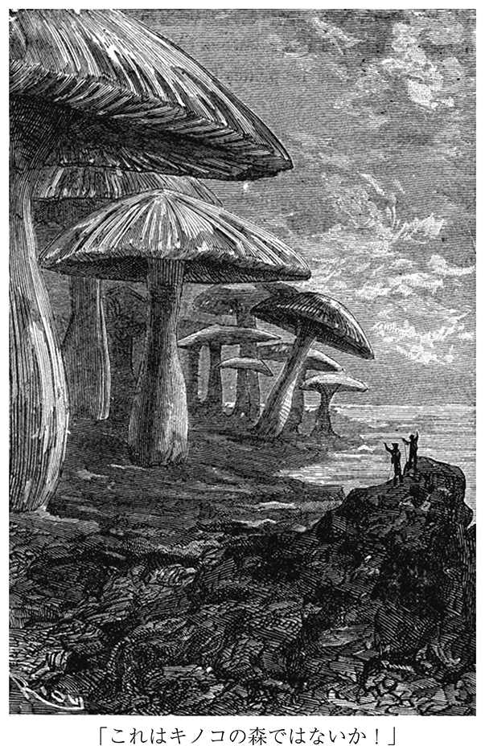
そのとおりだった。キノコは高温で湿度が高いと、大きくなることが知られている。なかでもホコリタケの仲間である《ジャイアント・パフボール》は、フランスの植物学者ピエール・ビュイヤールによると、傘の周囲が二・五メートルから三メートルにも及ぶという。だが、ここのキノコは高さが低いものでも九メートル、高いものだと十二メートルくらいはあり、傘の直径も同じくらいあったのだ。海岸にはそういった巨大キノコが何千本と生えていた。それはまるで、丸屋根の家が密集するアフリカの村のようにも見えた。傘はもちろん、空の光を通さないので、森のなかは暗い。少し奥に入ると、ほとんど何も見えなかった。
それでも、私はもっと先に進んでみたかった。そこで、叔父と一緒に、このキノコの森を探検したのだが、上からはぞっとするような冷たい空気が降りてきて、三十分もじめじめとした暗がりをさまよっているうちに、すっかり嫌になってしまった。再び海岸に出てきた時には、胸のなかに幸福感が広がったほどだった。
そうやって、なおも海岸沿いの道を歩くうちに、私はこの地下の世界に生えているものがキノコだけではないことに気づいた。キノコの森の先には葉がくすんだ色をした高木の林があった。だが、こちらのほうは遠くから見ただけで、なんであるかわかった。シダやヒカゲノカズラの仲間だ。といっても、地上のシダやヒカゲノカズラは草か、せいぜい低木にすぎないが、目の前にあるのは、北欧の樅の木のように高さが三十メートルもあった。幹は丸く、二股に分かれていて、サボテンのように棘が生えている。葉は細長く、幹の先にこんもりと繁っていた。古代に栄え、今は化石としてしか残っていないリンボクやフウインボクだ。
「素晴らしい！ 感嘆したぞ！」叔父が大声を出した。「これはまさに漸移岩類の時代の植物相ではないか！ 初源岩類の時代に続く、地球で二番目に古い時代のな。あの高木はシダやヒカゲノカズラの仲間じゃ。現代では庭に生える雑草のようなものだが、その時代にはこのように高木としてそびえていたのじゃ。見よ！ アクセル！ ああ、地上にいる植物学者たちがこの光景を見たら、どんなにか喜ぶじゃろう。これまで、どんな植物学者も、こんな素晴らしい光景は目にしたことがないのじゃから......」
「そうですね」私はあいづちを打った。「植物学者たちは幸運にも、化石などの観察をもとに、鋭い分析と推理を重ねて、太古の世界ではシダやヒカゲノカズラが高木として栄えていたことを突きとめることができました。でも、実際には見たことがないのですから......。それなのに、なんという僥倖か、自然はこの地下に植物園をつくって、その太古の植物を残すことに決めたのです。地上で滅んだ植物を......」
「おお、アクセル。〝植物園〟とはよく言った。だが、どうせなら、〝動物園〟もつくったと言ったほうがよいと思うぞ」
「〝動物園〟ですって？」
「そのとおりじゃ。噓だと思ったら、足元を見るがいい。ほら、動物の骨が散らばっておるじゃろう？」
「本当だ。動物の骨だ！ 太古の動物の骨だ！」
そう叫ぶと、私は骨のほうに走っていった。骨というのは燐灰石をつくるリン酸カルシウムを主成分としているので、鉱物と同じように何万年、何十万年の時が経過しても、そのまま残ることがある。地面に散らばっている骨はどれも太く、倒れた枯木のように見えた。だが、ひとつひとつを見ると、それがどんな動物のどこの骨か、私には簡単に言いあてることができた。
「これはゾウの仲間のマストドンの下顎の骨だ。そっちにあるのは、やっぱりゾウの仲間のデイノテリウムの後臼歯だ。あっ、あれはメガテリウムの大腿骨じゃないか！ まちがいない！ ナマケモノの仲間で、マンモスよりも大きかったと言われる動物の骨だ。そうだ！ これはまさに〝動物園〟だ。ここにある骨は、地震や洪水などの天変地異によって、この場所に運ばれてきたんじゃない。この動物たちは最初からこの地下の世界で暮らしていたんだ。そして、この世界で死んで骨になった。地下の海岸に広がる、この高木の森のなかで......。ああ、叔父さん、見てください！ あっちには動物の骨格がまるごと残ってますよ。でも......」
「でも、なんじゃ？」叔父が尋ねた。
「どうして、こんな花崗岩の岩盤のなかに哺乳類の動物がいたんでしょう？ ぼくにはわかりません」
「どうしてじゃ？」
「地上に四足動物が現われるのは、初源岩類、漸移岩類に続く、第二紀の時代になってからです。つまり、たび重なる洪水によって、堆積層ができた時代です。哺乳類が登場するのは、もっと新しい。それなのに、どうしてここに哺乳類の動物の骨があるんです（27）？」
「なんじゃ、アクセル、そんなことを不思議に思っておったのか？」叔父が言った。「そんなことは簡単じゃ。それはここが第二紀以降にできた堆積層だからじゃ。あるいは第三紀にできたな」
「地表からこんなに離れた場所がですか？」私は反論した。「僕たちは第二紀の地層を抜け、漸移岩類の地層を通って、花崗岩でできている、この初源岩類の時代の層まで降りてきたんですよ。それなのに、どうしてここでまた第二紀の地層が現われるんです？」
「それはおそらく地質学的に説明がつく。その時代にはまだ、地球の地殻はしっかりしていなかったので、太陽や月の引力の影響で上昇と下降を繰り返していた。そこで、地殻が下降した時に弱いところが大きく割れて、その空洞に地表の一部がひきずりこまれたのじゃろう」
「そうなんでしょうか」私は納得しないまま答えた。それから、はたと思いついて言った。「でも、この地下の世界で太古の動物たちが生きていたのだとすると、今でもまだ暮らしているかもしれませんね。暗い森の奥や、切り立った岩の向こうで......」
そう考えると、私は思わずぞっとして、あたりを見まわした。だが、海岸はひっそりしていて、生物らしきものがいる気配はまったく感じられなかった。
そのうちに、ちょっと疲れてきたので、私は岬の先に腰をおろした。足元では波が激しく岩にあたって砕けている。その場所からは深くえぐれた入り江の全体が見わたせた。入り江のいちばん奥には、巨大な岩の後ろに隠れるようにして、天然の小さな港があった。まわりを岩に囲まれて、風からも守られているのだろう、海面は波もなく静まりかえっている。そこならスクーナーやブリッグなど、二本マストの帆船も安全に繫留することができるだろう。そう考えると、私は今にもこの港から、優しい風を受けて帆をいっぱいに張った船が沖にのりだしていく姿が見えるのではないかと思った。
だが、そういった夢想はたちまちにして消えた。この地下の世界で、生きているのは私たちだけなのだ。時おり風がやむと、空からは砂漠の静けさより深い静寂が降りてきて、険しい岸壁を伝い、海の表面に厚く広がった。水平線は霧に覆われていた。私はこの霧のカーテンに穴をあけ、その向こうを覗きたくなった。霧のカーテンを切り裂いて、その向こうにあるものを知りたくなった。すると思わず、心のなかにわきあがってきた疑問が口をついて出そうになった。この海はどこまで続いているのだろう？ この果てには何があるのだろう？ 私たちは向こう岸を見ることができるのだろうか？
叔父はもちろん、この点についてはまったく疑っていなかったろう。叔父は必ず向こう岸に行くつもりでいた。だが、私はそうしたいと思うと同時に、そうなるのを恐れる気持ちも抱いていた。
それから一時間ほど、この素晴らしい光景を眺めたあと、私たちはまた海岸を通って、洞穴に戻った。その夜、私は奇妙な想像で頭のなかをいっぱいにしながら、いつのまにか深い眠りに落ちていった。
25 実際はスコットランドの物理学者、ジョン・レスリー（一七六六～一八三二）。
26 コロンビアはヴェルヌの勘違い。実際はベネズエラ。
27 第二紀とは、十八世紀にイタリアの地質学者ジョヴァンニ・アルドゥイーノが提唱した地質時代区分のひとつで、化石が出てこない第一紀の地層に対して、化石が出てくるものを第二紀の地層とした。現代の分類で言えば、古生代の後期（石炭紀）から中生代に相当する。その後、ヴェルナーが第一紀（初源岩類の時代）と第二紀の間に漸移岩類の時代を設けた。化石が出てくるということは、堆積層であることを意味する。
翌朝、私はすっかり元気になって、目を覚ました。水に入って、身体を洗ったら、さっぱりするだろう。そう考えて、私は洞穴の外に広がる〝地中海〟に向かった。いや、そう呼んでみると、確かにそのとおりだった。地中深くに眠る、この海を呼ぶのに、これ以上ふさわしい名前はなかった。
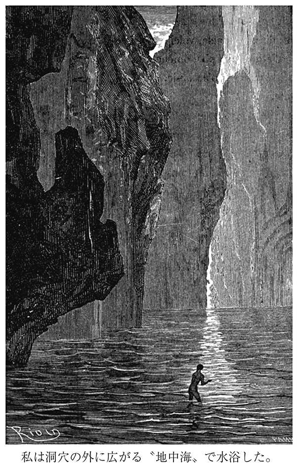
洞穴に戻ると、私はハンスがつくってくれた料理を残さずたいらげた。ハンスの料理はおいしかった。ここなら火は使えるし、水もふんだんにあるので、ハンスは腕をふるって、これまでとはちがう料理を準備することができたのだ。
食後にはコーヒーも出てきた。それは今まで私が飲んだなかで、最高のコーヒーだった。コーヒーがこれほどおいしいと思ったのは初めてだった。
「さあ、そろそろ潮が満ちてくる頃じゃ」コーヒーを飲みおわると、叔父が言った。「こんなことはめったに見られるもんじゃない。せっかくの観察の機会を逃さんようにしよう」
「潮が満ちてくるですって？」私は大声を出した。
「そうじゃ」
「太陽や月の引力がここまで影響するんですか？」
「あたりまえじゃ。万有引力の法則はすべてのものに働くのじゃ。地下にあるとはいえ、あの海だけがその法則から逃れられると思っているのか？ 確かにあの海の表面には高い気圧がかかっている。だが、それでも引力によって、海水は上に引っ張られるはずなのじゃ。大西洋のようにな」
そう言うと、叔父は洞穴の口から外に出ていった。そのあとに続いて、砂浜に出ると、確かに波はだんだん上のほうにまで打ち寄せてくる。
「本当だ！ 潮が満ちはじめていますね」私は言った。
「そうじゃよ、アクセル」叔父はうなずいた。「こうしてだんだん上にあがってきて、最後には三メートルくらい上昇するのじゃ」
「それはすごい！ まさに驚異ですね」
「いや、それが自然なのじゃ」
「いいえ、私には驚異としか思えません。自分の目が信じられないくらいです。地上からこんなに下がった地殻のなかに、波が引いては寄せる本物の海があるなんて、いったい誰が予想したでしょう？ しかも、そこには風が吹いて......。この調子なら、嵐だって起こるでしょう」
「起こるじゃろうな。それが自然だからな。ここの世界は完璧に物理学の法則に従っている。何か、それに反することがあるかね？」
「ありません」私は答えた。「しかし、そうなると、『地球の中心は高温だ』という考えは、どうやら捨てなければいけないようですね」
「つまり、ハンフリー・デーヴィーの説が正しいと認めるわけじゃな」
「しかたありませんね。下に行くほど高温になるなら、地下にこんな世界があったりするわけがないのですから......。でも、ハンフリー・デーヴィーの言うとおりなら、地下に海や陸があってもおかしくありません」
「生きた動物はいないがな」
それを聞くと、私は言った。
「いや、それはわかりませんよ。どうして、この海のなかに動物がいないと思うんです？ もしかしたら、新種の魚が隠れているかもしれませんよ」
「だが、そんなものは、これまでひとつも目にしておらんぞ」
「じゃあ、釣竿をつくって、魚が食いつくかどうか、試してみましょう。地上の海よりも、こっちのほうが釣れるかもしれませんよ」
「よし、試してみよう。この世界のことはなんでも知っておく必要があるからな。秘密はすべて暴いてやるのじゃ」
私はうなずいた。それから、少し気になっていたことを尋ねた。
「ところで、叔父さん、前から訊こうと思っていたんですが、ぼくたちは今、どこにいるんです？ 叔父さんはずっと距離や深さを記録していたんでしょう？」
「もちろんじゃよ。まずは距離で言うと、アイスランドから千四百キロメートル来たところじゃな」
「そんなに？」
「ああ、一キロメートルとちがっちゃおらん」
「磁石はずっと南東を差していたんですか？」
「そうじゃ。磁石の針は真北を差すのではなく磁北を差すので、偏西偏差を計算に入れたうえでな。たとえばパリの偏西偏差は十九度四十二分あるが、これは地下でも変わらない。つまり、《偏角》はな。だが、《伏角》のほうは不思議なことに気づいたぞ」
「どんなことです？」
「北磁極が地中にあるため、北半球では磁石の針は普通、地面に対して水平ではなく、斜めに傾くことになる。つまり、Ｎ極が下を向いて、Ｓ極が上を向くわけじゃ。ところが、伏角計を見ると、ここでは反対にＮ極のほうが上を向くのじゃ」
「だとすると、北磁極は地上とぼくたちのいるところの間にあるということですね。地表よりは下だけれど、ぼくたちのいるところからは上に......」
「そのとおりじゃ。北磁極は三十年ほど前にイギリスの探検家、ジェームズ・ロスが北緯七十度の地点（28）にあるとしたが、もしわしらがその場所の地下に今と同じだけ深く潜っていたとしたら、伏角計の針は垂直に上を差すことになる。つまり、北磁極は地下にあるとはいっても、これまで考えられていたのとはちがって、それほど深くにはないということじゃ」
「その点で、科学はまちがっていたということですね」
「ああ、アクセル。科学などというのは、まちがいでできているようなもんじゃ。だが、まちがいは犯したほうがいい。それによって、少しずつ真実に近づいていくのじゃからな」
「ええ」私は答えた。「で、北磁極より下にいるとすると、ここの深さはどのくらいなんです？」
「地下百四十キロメートルじゃ」
「そうすると、まずスネッフェルス山から南東に千四百キロメートルということですから、ぼくたちはスコットランドの地下にいることになりますね。僕たちの頭上、百四十キロメートルのところには、雪を頂いたグランピアン山脈がそびえていることになる......」
「そのとおりじゃ」叔父は笑いながら言った。「それだけの山が上にのっているとすれば、この世界の天井にはかなり重みがかかっていることになるな。だが、心配はいらん。この天井は、〝自然〟という偉大な建築家が素晴らしい素材を使って、つくったものじゃからな。人間のつくったものとはわけがちがう。だいたい、人間にできるのは、せいぜいアーチをつくって、橋や教会の天井を支えるくらいじゃ。そのくらいの技術では、この天井のように高さ一万メートルにも及ぶものを支えることはできん。しかし、人間にはできなくても、〝自然〟にはできる。いや、現にできている。この天井の下には海が広がり、そこでは嵐さえ起こる可能性がある。そんな広大な天井を〝自然〟は支えているのじゃ」
「そうですね。〝自然〟は素晴らしい！ この天井が落ちてくるとは、ぼくにも思えません」私は答えた。それから話を変えて、続けた。「ところで、叔父さん。これからの計画はどうなさるおつもりです？ もちろん、地上に戻るおつもりはありませんよね？」
「地上に戻るじゃと？ 何を血迷ったことを言っておるのじゃ。わしはこのまま計画を続けるぞ。なにしろ、ここまでは何もかもうまくいっておるのじゃから」
「でも、叔父さん。だからといって、この海の底に潜っていくわけにはいかないと思うのですが......」
「あたりまえじゃ。わしだって、この海のなかに頭から飛びこむつもりはない。だが、海というのは、厳密に言えば、どれも湖のようなものじゃ。結局は陸地で囲まれているのだからな。ましてや、この海は花崗岩の岩盤のなかにあるのじゃ」
「ええ、この海が花崗岩の岩盤のなかにあることはまちがいありませんね」
「だとしたら、この海を渡っていけば、必ず向こう側の岸に着く。そこにはまた地下に潜る道があるにちがいない」
「じゃあ、向こう岸まではどのくらい距離があると思います？」
「ざっと見積もって、百五十キロメートルくらいかな」
「ああ！」叔父はおそらく、でたらめな数字を言っているのにちがいない。そう思いながらも、私は言った。「そんなに？」
「だから、ぐずぐずしている暇はない。明日かあさってには、出航するぞ」
その言葉に、私は思わずまわりを見まわして、船を探した。だが、もちろん、そんなものはどこにもなかった。
「明日かあさってには、出航するんですね？」私は尋ねた。「でも、船はどうするんです？」
「船じゃと？ そんなものはない。わしらは筏に乗って出発するのじゃ」
「筏ですか？」思わず、私は叫んだ。「でも、ここだと船はもちろん、筏だってつくれないでしょう？ 現にどこを見たって、筏なんて......」
「見ても無駄じゃ、アクセル。それより、耳をすませ。そうしたら、おまえにも聞こえるじゃろう」
「聞こえる？」
「ああ、ハンマーの音がな。あれはハンスがさっそく仕事にかかっているのじゃ」
「ハンスが筏をつくっているんですか？」
「ああ、そうじゃよ」
「ということは、斧で木を切りたおしたりもしたんですか？」
「いや、木は初めから倒れていたんじゃ。わしについてこい。ハンスの仕事ぶりを見にいこう」
そう言うと、叔父は岬の向こう側にある天然の小さな港のほうに歩きはじめた。私は黙って、そのあとについていった。そうして、十五分ほど海岸を歩いたあとで、岬の反対側に出ると、ハンスがハンマーをふるっている姿が目に入った。私はハンスのそばまで行って、砂浜に置かれたつくりかけの筏を眺めた。驚いたことに、筏はもう半分くらいできあがっていた。まわりを見ると、なんの木だかはわからないが、丸太や木切れが散らばって、文字どおり地面を埋めつくしていた。木切れにはまっすぐなもの、湾曲したもの、長いものも短いものもあった。これだけあれば艦隊だってつくれるだろう。
「叔父さん、この木はなんという木ですか？」私は尋ねた。「あまり見かけない木ですが......」
「松じゃよ。それから、樅。それに樺の木じゃな。どれも寒いところに生える針葉樹だ。それがこの海に浸かっていたせいで、鉱物化したのじゃ」
「そんなことがあるんですか？」
「木化石と言ってな、その名のとおり、木の化石じゃ。アイスランドでは、《スルトの燃え木》と呼ばれている。つまり、褐炭のことじゃが......」
「褐炭ですか？ でも、それなら、水には浮かないのでは？」
「木が完全に石化した場合はな。だが、ここにあるようなものは、まだ十分、石化が進んでおらん。論より証拠じゃ。ほら、実際に見てみるがいい」
そう言うと、叔父は木切れのひとつを拾って、海に投げこんだ。木切れはいったん水に沈んだが、すぐに浮かびあがって、波の間を漂った。
「どうじゃ？ 納得したか？」叔父が言った。
そして、翌日の夕方、筏は見事に完成した。長さは三メートル、幅は一メートル五十。ハンスは木化石の丸太を太いロープで器用につなぎ、しっかりした筏をつくっていた。さっそくリーデンブロック海に浮かべると、筏は波の上を静かにたゆたった。
28 具体的にはカナダのブーシア半島。
翌八月十三日は、三人とも早く目を覚ました。今日からは、旅を続けると言っても、早く快適な乗り物にのって移動できるのだ。もちろん、身体も疲れない。
筏のマストは鉄のストックを二本、束ねたものを使った。帆桁は三本目のストックだ。帆は寝る時に使っていた毛布を一枚用いた。筏の装備はそれだけだった。だが、筏自体はロープをふんだんに使って、頑丈につくられていた。
叔父の指示で乗船の準備が始まったのは、朝の六時のことだった。私たちは計器や武器、薬や服の入った袋、そして真水をいっぱいに詰めた水筒や革袋を積みこむと、筏に乗りこんだ。
ハンスは筏に舵を取りつけていた。これがあれば、自由に方向を操ることができる。筏に乗ると、ハンスはすぐに舵棒を握った。毛布の帆はすでに風をいっぱいにはらんでいる。私は筏を岸に結びつけていた舫い綱を解いた。筏はたちまち岸を離れた。
筏がいよいよ港を出て、沖にさしかかった時、叔父は地図に載せるのに、この港に名前をつけたいと言いだした。そして、どうせなら私の名前にしようと言った。
「いえ、それなら、もっといい名前があります」私は提案した。
「どんな名前じゃ？」
「グラウベンです。《グラウベン港》というのはどうでしょう？ 地図にこの名前があったら、とっても素敵だと思うのですが......」
「よし、グラウベン港にしよう」
私は幸せな気分になった。というのも、これからはこの港のことを思い出すたびに、我が愛しのヴィールラント娘のことを想うことができるからだ。
風は北西から吹いていた。私たちは追い風に乗って、素晴らしい速さで進んでいった。気圧が高いせいで、ちょっとした風でも帆にかかる力が大きく、びっくりするほどの推進力になるようだった。
出航してから一時間したところで、叔父はたちどころに筏の速度を割りだした。
「今の速さだと、一日に百二十キロメートルは進む計算になる。この調子なら、明日にでも向こう岸に着くことになるだろう」
だが、私は何も言わずに、筏の前部に移動した。後ろをふりかえると、グラウベン港はすでに点になっていた。けれども、右と左にはまだ海岸線が続いていて、それはこの海を抱く両腕のように見えて、私は安心した。いっぽう、行く手にはどこまでも海が広がっている。空には大きな雲が次から次へと流れていて、その影が死んだように静かな海面を移動していく。影は海面にのしかかっていくように見えた。雲の後ろからは、この空間全体を照らしている電気の明かりが差していて、それが光の雫となって、あちこちで反射している。光の雫は私たちにも降りそそぎ、筏のまわりに銀色の花を咲かせていた。そのうちに、両側の岸は視界から消え、私たちはどこに向かって走っているのか、わからなくなった。筏の後ろに白い泡の立つ航跡が続いていなかったら、止まっていると思ったかもしれない。
ところが、お昼頃になって、思いがけないことが起こった。水平線に一本、黒い線が見えてきて、〈なんだろう？〉と思って近くまで来てみると、長大な海藻が海面に横たわっているのだとわかったのだ。海藻は生命力が強いことで知られている。なにしろ、水深四千メートルの海の底でも、四百気圧の水圧に耐えて成長し、繁殖を繰り返すのだ。また、時には一大群落を形成し、船の航行を妨げることもある。だが、これほど長い海藻が海に浮かんでいるのは見たことがなかった。リーデンブロック海に浮かぶ海藻は、波に揺られて蛇行しながら、海上に〝防御線〟を張り、私たちの行く手を阻んでいた。すぐ近くで観察すると、種類はヒバマタだった。
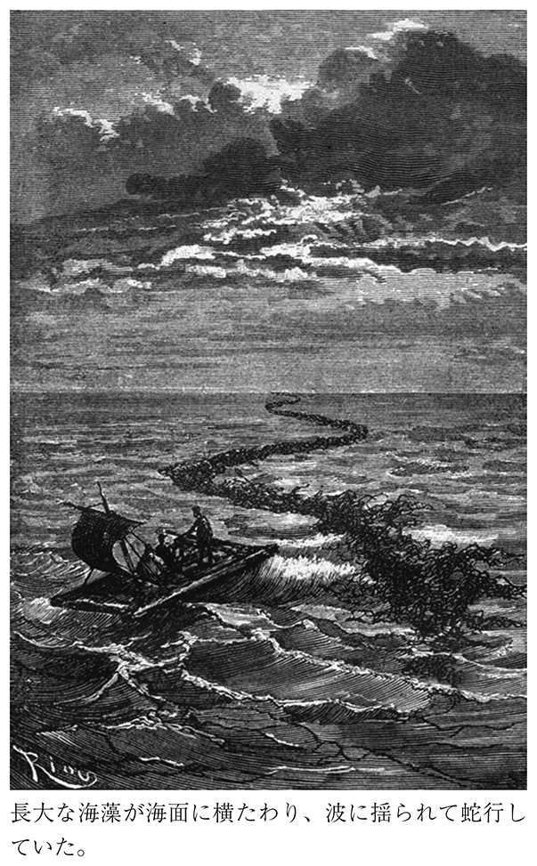
しかし、いずれにしろ、向こう岸を目指すなら、この〝防御線〟を越えていかなければならない。私たちは海藻を迂回することにして、まずはそれに沿って進みはじめた。といっても、海藻は蛇のようにくねりながら、どこまでも続いていく。最初のうち、私はすぐにでも先端に到達すると考えて、〈いったいこの防御線はどこまで延びていくのだろう〉と面白がっていた。だが、それから二時間たっても、まだ海上をくねっているのを見ると、びっくりしながらもうんざりしてきた。
こんなに長大な海藻を生みだすとは、〝自然〟はどれほど大きな力を秘めているのだろう？ この海藻は、もちろん太古の姿をそのまま伝えているものにちがいない。地上にまだ動物が進出せず、植物だけが繁栄していた頃の姿を......。その頃、地表は今よりも高温で、湿度も高かった。そのため、植物はどれも今より、はるかに大きかったのだ。ああ、だが、その頃の世界はいったいどんなふうだったのだろう？ そんなことを考えているうちに、ようやく私たちは海藻の先端に達し、〝防御線〟を迂回することができた。海藻に沿って進んだ距離は、なんと千二百メートルにも及んだ。
やがて、時刻は夜になった。だが、昨日も確かめたことだが、夜になっても空はいっこうに暗くならなかった。これはおそらく、この航海を続けているかぎり、変わらないはずだった。
夕食が終わったあと、私はマストの下で横になった。見ると、ハンスも筏の後部でじっとしている。舵から手を放して、筏を風に任せているようだ。ハンスが操縦しなくても、追い風を受けて、筏はまっすぐに進んでいた。私は少しの間、ぼんやりと夢想に耽っていたが、いつのまにか眠りに落ちていった。
さて、グラウベン港を出るとまもなく、叔父は私に《航海日誌》をつけて、どんな小さなことでも記録しておくようにと指示していた。風向きや速度、たどってきた経路、空や海の様子など、要するにこの筏の旅で起こったことはすべて記すようにと言ったのだ。
そこで、ここからしばらくは、この旅の様子をより正確に伝えるために、私がつけた《航海日誌》をそのまま再録しよう。これは何か事件が起こるたびに、すぐに私が書きとめたものである。叔父の指示だということもあって、私は普通だったら、日誌が書けるような状況ではない場合でも、必死に書きつづけた。日誌にはそれがはっきり表われていると思われる。
八月十四日 金曜日
北西の風。風向きは出航してから、ずっと変わらない。筏はかなりの速度で、まっすぐに進んでいる。出発してからの距離は百二十キロメートルになる。水平線には何も見えない。空の明るさも変わらない。白銀を溶かしたような淡いグレーの空に、雲が広がっている。雲は薄く、高い位置にある。その意味では天気がよい。
気温 摂氏三十二度。
昼頃、ハンスが糸の先に釣針を結んで、その先に肉の切れ端をつけて、海に放りこんだ。だが、その後、二時間は何もかからなかった。〈やっぱり、この海には魚がいないのか〉そう思った時、〝あたり〟が来た。ハンスが釣竿をあげると、魚が一匹、釣りあげられて、筏の上でぴちぴち跳ねた。
「魚じゃ！」叔父が大声を出した。
「これはチョウザメじゃありませんか！」私も大きな声を出した。「チョウザメの小さなものですよ」
だが、叔父は私の意見には反対だったようで、魚を注意深く観察しはじめた。魚は頭が平らで、甲冑のような硬い骨板で覆われていた。口は尖っておらず、歯はなかった。胸鰭はかなり発達していて、尾は小さかった。見た目からすれば、博物学者が分類するチョウザメ目の魚によく似ていたが、よく見ると、確かに基本的な部分で、チョウザメとはちがっていた。
観察の結果、叔父には魚の種類がわかったのだろう、すぐに顔をあげると、こう言った。
「この魚はもう気の遠くなるような昔に絶滅した種じゃ。デボン紀の地層から、よく化石が見つかっているよ」
「なんですって！」私は言った。「じゃあ、ぼくたちは絶滅した古代魚を生きたままつかまえたということですか？」
「そのようじゃな」なおも魚を観察しながら、叔父が続けた。「ふむ。それに、この魚は現在の魚類と共通する点をほとんど持っていない。それを生きたままつかまえるなんて、わしが博物学者だったら、最高に幸せな気分じゃろうな」
「でも、分類上はなんという類に属しているんです？」
「無顎類、骨甲目、ケファラスピス科じゃな。属は......」
「属は？」
「プテリクティスじゃ。まちがいない。だが、こいつは変わった特徴を持っているぞ。いや、いかにも地下の海に住む魚らしい特徴じゃ」
「どんな特徴です？」
「目が見えないのじゃ」
「目が見えない？」
「それどころではない。目という器官そのものがないのじゃ」
私はあらためて、その魚を見た、魚には本当に目がなかった。だが、これはこの魚だけがそうだったのかもしれない。そう考えて、私たちは釣針に餌をつけると、また海に投げこんだ。その結果はびっくりするようなものだった。この海には魚がたくさん棲息しているにちがいない！ というのも、それから二時間ほどの間に、私たちはプテリクティスを山のように釣りあげたからである。ほかにも、今ではやはり絶滅した双鰭科の魚も釣れた。だが、その魚がなんという属なのかは、さすがの叔父も知らないようだった。それはともかく、釣りあげた魚を全部調べてみると、この海の魚たちにはどの種にも目がないことがわかった。また、ここで思いがけなく、大量に魚を釣った結果、私たちの食糧の備蓄はずいぶんと増えることになった。
いずれにしろ、この海にはどうやら〝現在では化石としてしか見つかっていない魚〟しかいないらしい。魚でも爬虫類でも、化石として見つかったものは、古い時代にさかのぼればさかのぼるほど、種の原型を保っている。そういった種がここでは生きて泳いでいるのだ。
だとしたら、今では化石になった骨しか見つかっていなくて、科学の力でようやく骨格を再現した、あの巨大な爬虫類（29）だって生きているのではないか？ 私たちはそんな怪物に会えるのではないか？
そう考えると、私は望遠鏡を手に、海に住む巨大な爬虫類を探した。だが、海はどこまでも静かで、生き物の影などまったく見えなかった。おそらくは、まだ陸地に近すぎたのだろう。
それから、私は空を見て、思った。では、鳥類はどうだろう？ フランスが生んだ不滅の博物学者にして古生物学者、ジョルジュ・キュヴィエが、化石から復元した古代の鳥たちは？ それはこの地下の世界では羽ばたいていないのだろうか？ 海には魚がたくさんいるので、餌には困らないはずだ。私は空を見あげ、それから斜めうしろをふりかえって、左右の海岸の崖を眺めた。だが、そのどちらにも鳥の姿は見えなかった。私は少し、がっかりした。
しかし、それでも、「まだこの世界では古代の生物が生きているのではないか？」という私の空想は、どんどん広がっていった。筏の上で波に揺られて、古代の動物に思いを馳せながら、私はいわば起きたまま夢を見ていた。ぼんやりと海を眺めていると、海の表面には古代に絶滅したはずの巨大な陸亀が小島のように浮かんでいた。左右の岸辺に目をやると、黒っぽくかすんだ海岸には、地球に現われたばかりの巨大な哺乳類の姿があった。ブラジルの洞窟で化石が発見されたレプトテリウム（30）、あるいはシベリアのツンドラから氷づけで発見されたメリコテリウム（31）、その向こうの岩陰にはロフィオドン（32）がいて、アノプロテリウムと餌を争う構えを見せていた。アノプロテリウムというのは現在のラマに似た動物で、サイや馬やカバやラクダの特徴も備えている。まるで、神が創世を急ぐあまり、いくつかの種をひとつにまとめてしまったような不思議な動物だ。岩場ではゾウの仲間であるマストドンが鼻をふりまわし、長い牙で岩を砕いていた。いっぽう現在のナマケモノの近縁種で、地上で生活していたメガテリウムは、その巨大な身体を丸めて、鋭い鉤爪で地面を掘りかえしながら歩いていた。時おり、メガテリウムが咆哮をあげると、そのたびに花崗岩の壁に音が反響した。その上のほうでは、地球に初めて現われた猿――プロトピテクスが切り立った崖をのぼっていた。そのさらに上では、長い前脚に張った膜を翼にして空を飛ぶ爬虫類――プテロダクティルスが高い気圧のなかを大きなコウモリのように滑空していた（33）。そして、空のいちばん高いところでは、ヒクイドリよりも力が強く、ダチョウよりも大きな鳥が翼を広げて、花崗岩の天井を目指していた。
といっても、これはすべて私が想像のなかで見た光景だ。人類がまだ誕生していない――地球の環境がまだ人類には十分ではなかった〝創世記〟の時代の光景だ。だが、私の夢想はそこから人類の誕生のほうに近づいていくのではなく、逆にもっと古い時代にさかのぼっていった。すると、まず哺乳類が消えて、鳥たちが消えた。それから、第二紀の三畳紀から白亜紀にかけて栄えた巨大な爬虫類が消え、最後に漸移岩類の時代に繁栄した魚類や甲殻類、軟体動物、節足動物、植虫類が消えた。こうして、この地球に誕生した生命がすべて〝無〟に帰してしまうと、私はこの世界で生きている、ただひとつの〝命〟になった。この世界で、鼓動を打っているものは私の心臓しかなかった。そこには季節もなかった。気象もなかった。ただ、地球自体が内部から発散している熱だけがあった。やがて、その熱はだんだん高まっていき、太陽から受ける熱が必要のないほどになった。その高温のせいで、植物は繁茂していた。あたりにはロボクやアステロフィライト、リンボク、フウインボクなど、シダ植物の高木が密生していた。高さはどれも三十メートルはあった。その間を私は〝影〟のようになって、おぼつかない足どりで歩いていった。地面は砂岩や泥灰岩でできていて、赤や緑に光っていた。やがて、私は高木のひとつにもたれかかった。それから、この高木の林のなかで横になった。
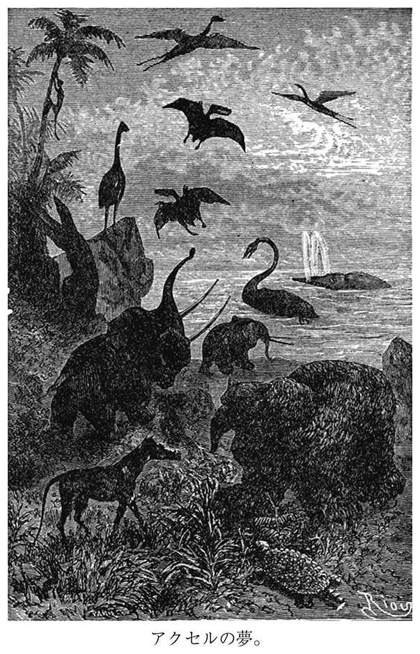
すると、そこでまた時がさかのぼりはじめた。何十世紀という時間が、まるで日々が過ぎるように巻きもどされていった。地球はだんだん変わっていった。まず植物が消えて、それから花崗岩の地殻がやわらかくなりはじめた。高温のせいで、固体から液体に変わりはじめたのだ。そうして、液体になった花崗岩は、地球の表面を流れ、ぐつぐつと煮えたちながら、今度は蒸気となって地球を包み、最後には地球全体が赤みがかった巨大なガスの集積となって、太陽のように大きくなり、また太陽のように輝きはじめた。
太陽と同じ大きさ――つまり、今の地球の百四十万倍にふくれあがった、このガスの塊の中心で、私は直接、宇宙空間に浮かんでいた。私の身体は粉々に砕け、やがてそれもまた蒸気となって、地球の蒸気と――今はただ赤く燃えながら、巨大なガスの集積となって、かろうじて球形を保っている地球の蒸気とひとつになった。私は原子となり、地球を形づくっていた無数の原子に混ざった......。
ああ、なんという夢だったのだろう？ 私はどうなってしまったのだろう？ こうして、今、日誌を書きながらも、その夢で見た不思議な光景を思い出すと、ペンを持つ手が震えてくる。その時、私はすべてを忘れていた。叔父のことも、ハンスのことも、筏のことも！ 私は夢を見ていた。いや、起きていたのかもしれないが、もしそうなら、普通の状態ではなかった。私は幻覚を見ていたのだ。
おそらく、その様子を心配して眺めていたのだろう。
「どうした？」叔父が尋ねた。
私は叔父のほうを向いた。だが、目は開いているのに、なかなか叔父の顔に焦点が定まらなかった。と、その時、叔父が怒鳴った。
「アクセル、気をつけろ！ 海に落ちるぞ」
その瞬間、私はハンスの力強い手につかまれた。そうでなければ、本当に筏から落ちていたことだろう。私はそれほど、ぼんやりしていたのだ。
「こいつは頭がおかしくなったのか？」叔父が叫んだ。
その声にようやく我に返って、私は言った。
「何があったんです？ ぼくはどうかしていましたか？」
「まあな。具合でも悪いのか？」叔父が尋ねた。
「いいえ。ただ、ちょっと幻覚にとらわれていたようです。でも、もう終わりました。それより、航海のほうはどうですか？ うまくいっていますか？」
「順調じゃ。風もいいし、波も穏やかだからな。わしの考えにまちがいがなければ、もうすぐ陸地に着くじゃろう」
その言葉に、私は立ちあがって水平線を眺めた。だが、空と海の境には、雲がひと筋、流れているだけだった。
29 巨大な爬虫類とは恐竜のこと。だが、当時、フランス語には《恐竜》という言葉はなかった。したがって、ヴェルヌは《恐竜》という言葉を使っていない。
30 《すらりとした獣》の意味。ガゼルの近縁種だと思われる。
31 《反芻動物》の意味。
32 有蹄類厚皮目の大型動物で、現在のバクの近縁。
33 プテロダクティルスは翼竜の一種。化石をもとにして、前出のジョルジュ・キュヴィエが《翼を持つ爬虫類》だと突きとめたことで有名。
八月十五日 土曜日
海はどこまでも続いている。陸地はまったく見えない。水平線が遠ざかったように思える。旅は単調で退屈だ。
昨日の幻覚のせいで、まだ頭が重い。
叔父は幻覚にとらわれたりしない。だが、機嫌は悪かった。望遠鏡で水平線を端から端まで見ては、いまいましそうに腕を組んでいる。
それを見て、〈叔父はまた以前のように、短気な性格に戻ったようだ〉と私は思った。そして、これは日誌に書きとめておかなければと考えた。地下に潜って以来、叔父は時おり、人間らしい優しさを見せることがあったが、それは私が危機に瀕した時か、苦しい思いを味わっている時に限られていた。逆に言えば、叔父から人間的な部分を引き出すには、私が体力を使いはたして、衰弱する必要があるのだ。そして、その優しさも、私が回復すれば元のように消えてしまう。だが、今の状態で、どうして叔父は苛立つことがあるのだろう？ 旅は順調で、これ以上ないと言っていいほど、うまくいっているではないか？ 筏は快調に波を切って進んでいるではないか？
叔父がたびたび望遠鏡を目にあてているのを見て、私は尋ねた。
「何か心配なことでも？」
「心配？ そんなものはない」
「じゃあ、どうして、そんなに苛々しているんです？」
「誰だって、そうなるさ」
「筏はこんなに速く進んでいるのに？」
「それがどうした？ 問題なのは速さじゃない。海の広さだ。どうして、この海はいつまでたっても、終わらないのじゃ」
それを聞いて、私は叔父が向こう岸までの距離を百五十キロメートルと見積もっていたことを思い出した。だが、私たちはゆうにその倍の距離を走っている。それなのに、まだ南岸は見えていなかった。
「この海を発見してから、わしらはまだ地下に降りていない」叔父が続けた。「つまり、時間を無駄づかいしているというわけじゃ。よいか？ わしはわざわざ池で舟遊びをするために、地下に潜ってきたわけじゃないんだ！」
私は呆れてしまった。叔父はこの海を「池」だと言ったのだ。この航海を「舟遊び」だと言ったのだ。
「でも、ぼくたちはサクヌッセンムの示したとおりの道を来たんでしょう？ だったら......」
「それが問題じゃ。サクヌッセンムははたして、この道を来たのだろうか？ この海に出会って、この海を渡ったのだろうか？ わしらはハンス川に導かれて、この海までやってきた。だが、それはまちがいではなかったのだろうか？ あの川のせいで、わしらは本来の道から、はずれてしまったのかもしれん」
「でも、それだっていいじゃありませんか。ぼくは後悔してませんよ。ここの景色はこんなに素晴らしいんだし......」
「景色など、どうでもいい！ わしは目的を定めたのじゃ。それは達せられねばならん。だから、景色の話などはするな！」
そう言うと、叔父はいまいましそうに唇をかんだ。私はおとなしく口をつぐんだ。
夕方の六時にハンスが叔父に賃金の支払いを要求した。叔父はただちに三リクスドラー、支払った。
八月十六日 日曜日
あいかわらず陸地は見えない。天気も変わらない。ただ、風は少し冷たくなったような気がする。
毎朝、目が覚めて、私がいちばん最初にすることは、空の明るさを確かめることだ。この空間はオーロラのような天然の〝電気現象〟によって照らされている。だから、その明かりが暗くなっているのではないか、消えてしまっているのではないかと思うと、心配なのだ。今日も目が覚めると、私は真っ先にそのことを確かめた。だが、空の明るさは変わっていなかった。海面にはマストと帆の影ができていた。
それにしても、この海は果てしない。もしかしたら、本物の地中海、いや、大西洋よりも広いのではないか？ たとえ、そうでも不思議はない。
そんなこともあってか、叔父は何度も水深を測っていた。ロープの先につるはしを結びつけて、海に沈めたのだ。だが、ロープは数本あるうち、いちばん長い三百二十メートルのものを使ったのに、底にはつかなかった。しかも、そのあとでロープをたぐりあげるのが大変だった。
だが、そこでびっくりするようなことが起こった。ロープの先についていたつるはしを筏の上に引きあげた時、鉄の部分に傷がついていることにハンスが気づいたのだ。それはまるで万力で締めつけられたかのようだった。
私はハンスの顔を眺めた。
「テンデル！」ハンスは言った。
その言葉の意味がわからなかったので、私は叔父のほうをふりかえった。だが、叔父は何か考えごとに夢中で、こちらを見もしなかった。叔父の邪魔をしてはいけないと思って、私は再びハンスのほうを見た。すると、ハンスは何度か口を開いたり、閉じたりして、歯をむきだしにした。
「歯だ！」そう叫ぶと、私は驚いて、もう一度、つるはしを調べた。
まちがいなかった。つるはしの表面には何かの動物の歯型がくっきり残されていたのだ。だが、鉄に歯型を残すとは、よほど顎の力の強い動物にちがいない。私は考えた。もしかしたら、この海の底にはサメのように貪欲で、クジラのように恐ろしい動物がいるのだろうか？ もう絶滅した怪物が......。私は歯型のついたつるはしから目が離せなかった。ということは、おとといの昼に見た幻覚は本当になってしまうのだろうか？ そう思うと、私は昼の間、落ち着かない気持ちで過ごした。いや、その気持ちは、時刻が夜になった今でも続いている。あれこれ考えて、なかなか眠れない。
八月十七日 月曜日
ようやく眠りについたと思ったのに、二、三時間、眠っただけで、今朝は早くに目が覚めてしまった。
昨日の続きで、今、こうしていても、〈つるはしにあんな歯型を残す動物は何か？〉と、つい考えてしまう。凶暴で、どんなものにでも嚙みつく動物は何かと......。おそらく、それは第二紀の三畳紀から白亜紀にかけて繁栄した動物だろう。まだ哺乳類が地上で栄える前の時代、そして軟体動物や甲殻類や、初期の魚たちが海を支配した漸移岩類のあとの時代――このふたつの時代の間で地球に君臨した動物だ。つまり、爬虫類だ。あれはおそらく海生の大型爬虫類、海の怪物だ。ジュラ紀（＊）にはそういった怪物が我がもの顔に海を泳ぎまわっていた。身体が大きく、骨格がしっかりしていて、力も強い！ それに比べたら、現在の地球でいちばん大型の爬虫類であるワニだって、子供にしか思えないだろう。
ああ、そんな怪物のことを思うだけで、今、ペンを持つ手が震えてくる。なにしろ、人類は実際にそんな巨大な爬虫類が生きているところを見たことがないのだ。その怪物は人類が誕生する、はるか以前に地球に現われ、はるか以前に絶滅した。ただし、骨の化石は、ジュラ紀の地層であるイギリスの《ライアス統》と呼ばれる青色石灰岩の層から発見されて、骨格標本がつくられている。それによって、人類はかつて、そういった巨大な爬虫類がいたことを知ったのだ。
私はハンブルクの博物館で、実際にその骨格標本を見たことがある。それは長さが十メートルほどもあった。だが、それはあくまでも化石だ。生きていたわけではない。でも、そうなると、私はこれから人類で初めて、その巨大な爬虫類に面会することになるのか？ いや、そんなことは不可能だ。とうの昔に絶滅した怪物がまだ生きているなんて......。では、その場合、つるはしについていた歯型はどう説明すればいい？ あの歯はワニのように鋭く尖っていた。
今――この日誌をつけている今も、私は海から目が離せない。いつその怪物が姿を現わすかと、気が気ではないからだ。
その点は、どうやら叔父も心配しているようだ。いや、心配しているかどうかはわからないが、考えていることはまちがいない。というのも、昨日、歯型のついたつるはしを真剣に調べたあと、叔父はじっと海を見つめていたからだ。
ああ、どうして、叔父は水深を測るなどという考えを起こしたのか！ そのせいで、せっかく海の底でおとなしく眠っていた怪物が目を覚ましてしまったかもしれないではないか！ 怪物は怒って、私たちを襲いにくるだろう。今頃は、もうすぐそこまで来ているかもしれない。そうだ。武器を確かめなければ......。
今、もう一度、銃を確かめた。銃はいつでも使える状態にあった。叔父は私のしていることを見ていたらしい。私と目が合うと、大きくうなずいた。
なんだか、昨日よりも波が立って、海の表面が騒がしいような気がする。きっと、海中で何かが起こっているのだ。危険は近い。気をつけなければ......。
八月十八日 火曜日
夜になった。というより、「眠る時間になった」と書いたほうが正確だろう。なにしろ、ここには夜がやってこないのだから......。まるで一日じゅう日が沈まない北極の海を航海しているみたいだ。目が疲れる。舵はハンスが取っている。その間、私は眠ることにする。
実は今まで大変なことが起こっていた。これから、その話を書こう。
眠りについてから二時間後、私は激しい筏の揺れで、目を覚ました。その揺れと同時に、筏はものすごい力で突然、持ちあげられて、あっと思った時には四十メートルも飛ばされていた。
「何があったんだ？」叔父が大声を出した。「何かにぶつかったのか？」
それを聞くと、ハンスが四百メートルほど離れた場所を指さした。そこでは大きな黒い塊が海面を何度も上下していた。
「ネズミイルカだ！ ものすごく大きいぞ！」私は叫んだ。
そして、このネズミイルカが波の下に姿を消すと、今度は叔父が叫んだ。
「見ろ！ その向こうには海トカゲがいるぞ！ かなりの大きさじゃ。おお、また下に潜ってしまった......」
「叔父さん、今度はワニですよ。ワニが出てきました。ほら、大きな口をあけて......。すごい歯だ！ ああ、消えてしまった」私は言った。
すると、そこでまた叔父が大声を出した。
「おっ、クジラじゃ。クジラもおるぞ！ 大きな鰭が見える。上を見ろ！ 頭のてっぺんにある鼻孔から潮を噴いているぞ！」
そう言われてみると、確かにクジラの頭からは潮が噴き出し、空高く二本の水柱が立っていた。だが、突然、これだけの生き物たちが海の底から姿を現わすとは！ この〝海の怪物〟たちを目のあたりにして、私たちはただ茫然としていた。怪物たちはどれも信じられないほど大きかった。また凶暴そうだった。そのうちの一匹にでも襲われたら、その鋭い歯で、筏は粉々に嚙みくだかれてしまうだろう。そう思えた。一刻も早く、この怪物たちから逃げだすため、ハンスは舵を水中から出した。だが、風を受けて、反対側に筏が進みはじめた時、また信じられないことが起こった。今度はそちらの方向から、別の種類の怪物たちが現われたのだ。幅が十二メートルはあろうかという巨大な亀と、長さが十メートルにも及ぶ海蛇だ。蛇は鎌首をもたげるように、海面から高く、頭を突きだしていた。
もはや、この危険から逃げることはできなかった。巨大な蛇と亀は互いにもつれあうようにして、こちらに近づいてきた。そうして、一緒に筏のまわりを猛烈な速度で回りはじめた。それは全速力で走る列車でも追いつけないくらいの速さだった。筏の周囲にはいくつか同心円ができたくらいだ。私はカービン銃を手にとった。だが、〈はたして、この怪物たちの全身を覆っている鱗状の皮膚を銃弾が貫通できるだろうか？〉と考えると、心配になった。
恐怖のあまり、私たちは口をきくどころではなかった。一方からは蛇と亀がぐるぐる回りながら、だんだん近づいてくる。いや、いつのまにか、亀は姿を消して、蛇だけになっていた。もう一方からは、ワニの怪物が筏に迫ってくる。だが、不思議なことに、先程まで群れをなしているように見えた、ネズミイルカや海トカゲ、そしてクジラなど、他の怪物たちは一緒にいなかった。結局、最後に残ったのは、蛇とワニで、私はそのどちらかを撃とうと、銃を構えた。だが、ハンスが私を制した。筏からちょうど百メートルのところで、蛇とワニが相手の姿に気づき、互いに突進を始めたからだ。どうやら、もっと強力な敵を発見したことで、私たちのことは見えなくなってしまったらしい。二匹は私たちから少し遠ざかって、筏から二百メートルほど離れたところで、激しい戦いを始めた。その様子を私たちははっきりと見ることができた。
そのうちに、私はひとつ不思議なことに気づいた。二匹が戦っている間に、ネズミイルカや海トカゲやクジラや亀が、突然、海面に現われて、戦いに加わっているように見えたのだ。まるでどちらかに加勢するように......。怪物たちはもつれあいながら、海上に姿を見せては消えた。私はハンスの袖を引っ張って、そのことを教えようとした。だが、ハンスは首を横にふって言った。
「トヴェ」
私にはその意味がわかった。数字の二のことだ。
「二だって？ つまり、戦っているのは二匹だというのか？」
すると、望遠鏡を目にあてたまま、叔父が叫んだ。
「そのとおりじゃ！」
「まさか！」
「そのまさかじゃ。一匹はイクチオサウルス（34）じゃ。頭は海トカゲで、鼻面はネズミイルカ、大きな口と歯がワニに似ている。それで、騙されたんじゃ。身体はクジラそのものじゃしな。海生の爬虫類のなかでもいちばん恐れられていた生物じゃ」
「もう一匹は？」
「プレシオサウルス（35）じゃ。亀の身体に蛇の首をつけたような爬虫類で、イクチオサウルスの天敵じゃ」
ハンスは正しかったのだ。海上で波を起こして戦っていたのは、二匹だけだったのだ。私は原初の海に住む、この二匹の爬虫類を眺めた。イクチオサウルスの目玉は赤く血走っていた。その大きさは人間の頭ほどもあったろうか。海底で暮らすこの大型の爬虫類に、高い水圧のなかでも耐えられるよう、自然は強力な視覚器官を与えたのだ。身体も大きかった。イクチオサウルスは〝爬虫類のクジラ〟と呼ばれるが、まさにその名にふさわしかった。私はイクチオサウルスが空中で跳ねた時に見える、縦型の尾鰭の大きさから、全長を推測した。それはおそらく三十メートルはくだるまいと思われた。顎も大きく、強力だった。なにしろ、博物学者によれば、イクチオサウルスには歯が百八十二本もあるのだ。いっぽう、プレシオサウルスのほうは、蛇のような首に亀のような丸い胴体がついていた。尻尾は短く、鰭を櫂のように動かしていた。胴体は甲羅に覆われて、その長い首を白鳥のようにしなやかに立てていた。首の長さは海面から十メートルはあったろう。
二匹の爬虫類は怒りに駆られて、壮絶な戦いを繰り広げていた。二匹が激しくぶつかりあうたびに、小山のように高い波が立ち、筏まで押し寄せてきた。そのせいで、筏は何度もひっくりかえりそうになった。しゅうしゅうと鋭い声を発しながら、二匹は絡みあい、もつれあっていた。どちらがどちらなのか、私にはもはや見分けがつかなかった。だが、どちらが勝っても、勝ったほうが襲ってくるのではないか、そう思うと恐ろしかった。
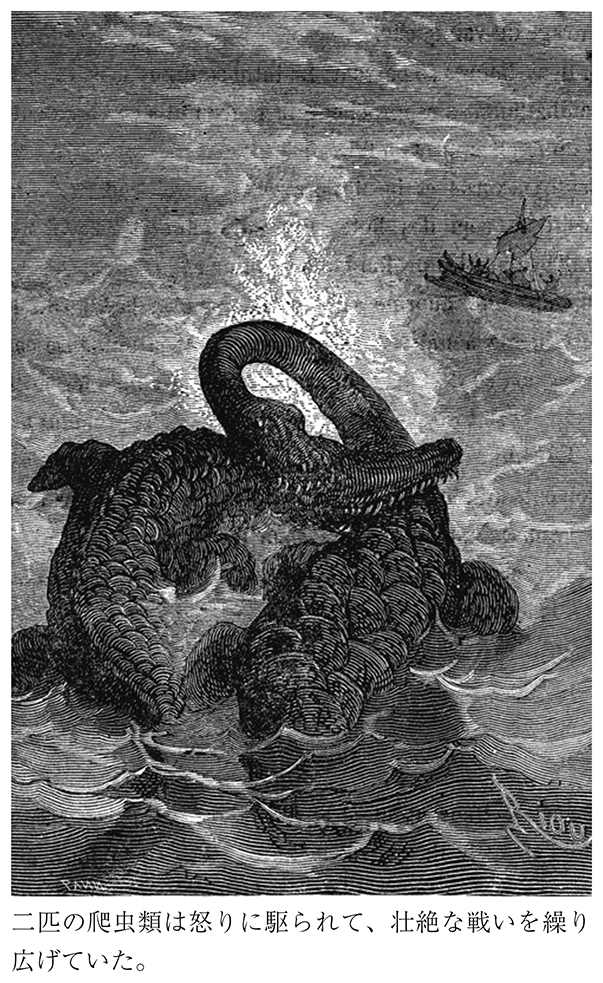
戦いは、その後、一時間たっても二時間たっても続いた。二匹は筏に近づいたり、筏から遠ざかったりしていた。すぐ近くまで来た時のことを考えて、私たちはじっと息をひそめて、銃を構えた。
そのうちに、突然、海面に大きな渦を残して、二匹の姿が消えた。そのまま何分かが過ぎた。すると、戦いの場は海中に移されたのだろうか？
そう思った時、海面にプレシオサウルスの首が現われた。プレシオサウルスは瀕死の状態だった。よほど激しい攻撃にさらされたのだろう、胴体を覆っていた甲羅はなかった。プレシオサウルスは何度も首を持ちあげようとしたが、そのたびに力が尽きて、首を水面に打ちつけた。その様子は空中で巨大な鞭がふるわれているようにも、半分に切られた芋虫が身をよじっているようにも見えた。長い首が海面を打つたびに、大きな水しぶきがあがり、私たちは視界をさえぎられた。だが、その水しぶきのあがり方も、だんだん小さくなり、プレシオサウルスは最期の時を迎えた。そのあとには、波が静まった海面にその長い首が蛇のように漂っていた。
いっぽうイクチオサウルスは、その後、いつまでたっても姿を見せなかった。あのまま海の底の棲家に潜ってしまったのだろうか？ それとも、またいつか海面に姿を現わすのだろうか？
＊原注 白亜紀のひとつ前の紀。フランスとスイスの国境をなすジュラ山脈の地層はこの時期に形成された。ジュラ紀の名前はそこから来ている。
34 イクチオサウルスは、《魚に似た爬虫類》の意味。和名は魚竜。
35 プレシオサウルスは、魚類と爬虫類の中間で、《より爬虫類に近い動物》という意味。首長竜の属のひとつ。本書では甲羅があることになっている。
八月十九日 水曜日
風が強い。そのおかげで、筏は昨日の場所からかなり遠くに離れることができた。舵はハンスがずっと取っている。昨日のイクチオサウルスとプレシオサウルスの戦いで、叔父は早く向こう岸に着いて地下に潜りたいという気持ちを忘れていたようだった。だが、時間がたつにつれ、また苛々と海を見つめるようになった。
旅は単調で退屈だ。だが、昨日のようなことがあって、その単調さが打ちやぶられるのであれば、いくら単調でも、いくら退屈でもかまわない。
八月二十日 木曜日
北北西の風。強くなったり、弱くなったり、安定しない。気温は高い。筏は一時間に六キロメートルの速さで進んでいる。
昼頃、かなり遠くのほうから、何かの物音が聞こえた。その音は今でも聞こえている。だが、なんの音かはわからない。
最初にその音が聞こえた時、叔父はこう言った。
「おそらく、遠くに島か岩礁があるのじゃろう。そこに波が砕けて、散る音が聞こえてくるのではないかね」
その言葉にハンスがマストによじのぼった。だが、すぐに島や岩礁など見えないという身ぶりをした。実際、そのあと、いくら水平線に目をこらしても、島影は見えなかった。そのまま、三時間が過ぎた。私は遠くで滝が落ちているような音だと思った。
そこで、すぐにそのことを叔父に話したのだが、叔父は首を横にふった。そんなことはあり得ないと言うのだ。
しかし、今もその音を聞きながら、私は自分がまちがっていないような気がする。これはやっぱり滝の音ではないのか？ 高いところから水が落ちている音だ。だが、そうだとすると......。今、ちょっと嫌なことを思いついた。その滝がこの海に落ちているのならよいが、この海自体が滝になって落ちているのだとしたら？ そして、私たちはそこに向かっているのだとしたら？ いくらなんでも、それはないと思うが、もしそうだとしたら、叔父はきっと喜ぶだろう。なにしろ、ようやく、もっと下に行くことができるのだから......。だが、私はごめんこうむりたい。
いずれにしろ、その音がする場所までは、そう遠くないはずだ。もう四十キロメートルか、五十キロメートルか。音がますます大きくなっているからだ。ざあざあと激しい音がする。やっぱり、滝だろうか？ 局所的に大雨でも降っているのであればよいが......。
そう思って、まず空を見てみるが、何もない。水平線の少し上のあたりには白い靄がかかっているが、厚いわけではない。上空も静かだ。かなり高いところにいくつか雲が浮かんでいるが、動いているようには見えない。雲はその場で少しずつ形を変えながら、空間が放つ白い光のなかに溶けこんでいる。ということは、雨が降っているわけではない。
だが、あいかわらず陸地も見えない。どこまでも海が続いているだけだ。景色は変わっていない。ということは、どこかの陸地から滝が落ちているわけでもない。すると、やはりこの海が滝になって落ちているのだろうか？ このざあざあというのは、その音なのだろうか？ この海が丸ごと巨大な滝壺に向かって落ちている音なのだろうか？ ああ、もしそうだったら？ だが、そうだとすると、そこに向かって潮流ができているはずだ。その潮流はだんだん速くなって、私はもちろん、叔父やハンスも危険を感じるはずだ。でも、そういうことはない。潮は流れていない。今、試しに空き瓶を投げ入れてみたが、瓶はそこにとどまったままだ。
音の正体がわかった。
さっきの日誌を書きおえた午後四時頃のことだ。突然、ハンスが立ちあがって、マストのいちばん上までのぼっていった。そこから、ハンスは前方の水平線をぐるりと眺めていたが、やがて、その視線が一点で止まった。表情に変化は見られなかったが、何かを見つめているのはまちがいなかった。
「何か見つけたんだ」叔父が言った。
「ぼくもそう思います」
まもなく、ハンスが降りてきて、南の方角を指さして言った。
「デル・ネール」
「空の低いところだって？」
そうドイツ語で繰り返すと、叔父は望遠鏡をつかんで、ハンスの指さしたほうを眺めた。時間にすると、ほんの一分くらいだったろうか。だが、不安のあまり、私には一世紀にも思われた。
「おお、あれか、あれか！」突然、叔父が叫んだ。
「何です？」
「水柱じゃ。水柱が波の上にあがっている！」
「すると、また何か巨大な海の動物が潮を噴いているのでしょうか？」
「そうかもしれんな」
「じゃあ、もっと西寄りに筏を進めましょう。また、おとといのような怪物たちに出会ったら大変です！」
だが、叔父は私の意見は入れずに、こう言った。
「いや、このまま、進む」
私は思わず、ハンスのほうをふりかえった。ハンスは舵を握ったまま、ぴくりとも動かなかった。
〈おそらく、その動物と私たちの距離は、まだ二、三十キロメートルはあるにちがいない。それなのに、その動物が噴きあげる水柱が見えるということは、どんなに巨大な動物なのだろう？〉私は考えた。〈だとしたら、ここは逃げるのがいちばん安全ってものじゃないか〉
だが、叔父は「安全を考えて、この旅を続けているわけじゃない」と言って、譲らなかった。筏は前に進んでいった。その動物に近づくほど、水柱は高くなっていった。〈これだけの水の量を体内に取りこんで、絶え間なく噴き出すことができるなんて、これはもう怪物にちがいない！〉そう考えて、私はますます心配になった。
そして、午後の八時頃には、私たちは怪物からもう十キロメートルも離れていない場所まで来ていた。怪物の姿も見えた。それは黒っぽく、巨大で、まるで海に浮かぶ小島のようだった。その長さはどう見ても、二千メートルはあった。〈これは幻覚か？ 恐怖のあまり、幻覚が見えたのか？〉私は思った。〈こんな巨大な動物がいることは、古代の生物を研究したキュヴィエだって、ブルーメンバッハだって、いや、ふたりに続くほかの古生物学者たちだって、予想はしていなかったはずだ〉と......。
怪物はじっと動かず、眠っているように見えた。波に合わせて揺れているわけでもなかった。逆に、波のほうがその怪物の腹に打ち寄せて、白く砕けているようだった。鼻孔から噴きあがる水柱は百五十メートルにも達し、雷のような轟音をたてて、海面に落ちていた。その怪物に――クジラを餌にしても、一日に百頭でも足りないのではないかというその怪物に、私たちは向かっていた。それは〝常軌を逸した行動〟だとしか言いようがなかった。
ああ、その時の私の状態と言ったら......。私は恐怖にとらわれていた。もう、それ以上、先には進みたくなかった。必要だったら、マストに帆を結びつけているロープを切ってやるつもりだった。「迂回しましょう！」私は強い口調で叔父に言った。だが、叔父は私の言葉を無視した。
と、その時、ハンスが立ちあがった。そうして、怪物を指さしながら言った。
「ホルメ！」
「島か」叔父が繰り返した。
それを聞くと、すぐに私も肩をそびやかして言った。
「なんだ、島じゃないですか」
「そうじゃよ。ほかに何があると言うのじゃ」叔父が笑いながら答えた。
「でも、あの水柱は？」私は尋ねた。
すると、ハンスがつぶやくように言った。
「ゲイシール」
「そうじゃ。それにまちがいない。間欠泉だ。アイスランドにあるのと同じものじゃ（＊）」
いや、そうなのだ！ 私が海の怪物だと思ったのは、島だったのだ。私は最初、このまちがいを認めたくなかった。いくらなんでも、恥ずかしすぎるからだ。だが、事実を動かすことはできない。私はまちがいを認めるしかなかった。怪物だと思ったのは島で、怪物が潮を噴き出していると思ったのは間欠泉だったのだ。ただの自然現象にすぎない。
真実が明らかになると、私たちは安心して島に近づいていった。それにつれて、水柱も高く、大きくなった。近くまで寄ってみると、島は確かにクジラのような海の動物に似ていた。頭だと思った部分は高さ二十メートルほどの小さな丘で、そこから間欠泉が――アイスランド語で「怒り」を意味する《ゲイシール》が噴きあがっていた。それはまさに〝強烈な怒り〟だった。時おり、耳をつんざくような音がしたかと思うと、さらに大量の水が噴出して、水蒸気の冠を頂いた水柱が雲の高さまであがる。これはあとから確認したことだが、噴出孔はひとつだけだった。まわりの地面から蒸気が出ているわけでも、温泉がわきでているわけでもない。地下から噴きあがる力は、このひとつの噴出孔に集中しているのだ。筏から見ると、空間が発する電気の光が水柱に反射する時、ひと粒ひと粒の水滴がプリズムの役割を果たすので、水滴は七色に見えた。
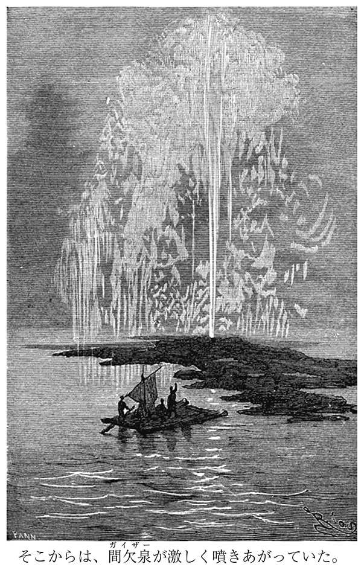
筏がさらに島に近づくと、叔父が言った。
「上陸しよう」
だが、そのためには、落ちてくる水を慎重に避けなければならなかった。そんなものをまともにくらったら、筏はたちまちひっくりかえってしまうからだ。けれども、ハンスが舵を巧みに操ってくれたおかげで、私たちは無事に島の端っこに筏をつけることができた。
私は岸辺の岩に飛びうつった。叔父も軽々と跳躍して、私のあとについてきた。ただ、ハンスだけは、そんなことには興味がないとでも言うように、超然とした顔で筏に残った。
島は珪質凝灰岩の混ざった花崗岩でできていて、私たちはその上を歩いていった。地面はまるでボイラーが蒸気を発生している時のように細かく震動し、熱気を放っていた。私たちはやがて間欠泉が噴き出している泉のすぐ近くまで行った。水はぐつぐつと沸騰しながら、泉からあふれていた。私は泉のなかに水銀式温度計を入れてみた。温度は百六十三度あった（36）。
ということは、この下では地球は熱く燃えていることになる。これは「地球の内部は冷えている」という叔父の説とはちがうではないか。叔父が肩入れしているハンフリー・デーヴィーの説とは......。そう思ったので、私は思わず、叔父にそのことを指摘した。すると、叔父はこう答えた。
「ここでは、ただ熱湯が噴き出しているだけではないか。それなのに、どうしてわしの説がまちがっていることになるんじゃ？ その根拠はあるのか？」
「ありません」叔父の頑固な態度に呆れて、私は短く答えた。
いや、もちろん、これまでの旅をふりかえってみれば、最初の予想とはちがって、いくら地下に潜っても気温がそれほど上昇することはなかった。だが、それは私たちの旅してきた地域が、何か私の知らない理由でたまたまそうなっていただけで、私たちは単に恵まれていただけではないのか？ そのほかの地域では、地球の中心が燃えているせいで、気温が耐えられないほどあがっているのではないか？ 温度計の目盛りがふりきれてしまうほど......。このまま、旅を続けていれば、私たちはいつかそんな場所に着いてしまうのではないか？ 私にはそう思えてならなかった。
だが、叔父はそんなことはまったく想像もしていないようで、私の名をとって、この島を《アクセル島》と名づけると、こう言った。
「地球の中心は冷えておる。それは実際に行ってみればわかる。さあ、戻るぞ。出航じゃ」
けれども、私はしばらくその場を動かず、間欠泉を眺めていた。熱湯は勢いよく噴き出していたかと思うと、その勢いを弱めることがあった。それから、また激しく噴きあがった。まさに間欠泉だ。それはつまり、地下に溜まった蒸気の圧力が、その時々で変化しているからだ。そこまで考えると、私は泉のそばを離れた。
私たちは南の切り立った崖の下を通って、筏のある場所に向かった。近くまで来ると、ハンスが筏の修復をしているのが見えた。私たちは筏に乗った。
そして、今、出航を待つまでの間、これまでにあったことを日誌に書いているところだ。出航してからの距離の計算もしたので、ここに記しておこう。グラウベン港を出てからここまでの間、私たちは二百海里［旧海里。約千百キロメートル］進んでいた。アイスランドを出発してからは、南東に二千五百キロメートル来たことになる。つまり、私たちは今、地上で言えば、イングランドにいることになる（37）。
＊原注 ヘクラ山のふもとにあるものが有名。
36 気温が三十二度だとすると、水の沸騰温度が百六十三度になるのは、気圧が約六・五気圧の時で、そこから計算すると深さは地下十四キロメートルになり、百四十キロメートルの十分の一になる。なお、この旅行に持ってきた温度計では百五十度までしか測れないことになっている。このあたり、ヴェルヌはいくつか勘違いをしていると思われる。
37 アイスランドから二千五百キロメートルだと、パリの南東百キロメートルまで来ていることになる。イングランドをロンドンと考えるなら、そこまでは二千キロメートル。このあともそうだが、ヴェルヌは実際の距離より一・二五倍ほど、長めに見積もっている。
八月二十一日 金曜日
もう間欠泉は見えない。強い風を受けて、筏はアクセル島からかなり離れたところまで来ている。噴きあがった水が落ちる時にたてる〝滝のような音〟も、次第に小さくなってきている。風は冷たい。
空模様は――と言ってよければの話だが、まもなく変わりそうだ。海水の蒸発によって、大気は水蒸気をたっぷりと含んでいる。塩水が蒸発するせいで、電気も発生している（38）。雲はかなり低く、全体にオリーブ色をしていて、水平線に垂れこめているところは、芝居の緞帳のように見える。その向こうにある空間の照明はこちらには届かない。私たちは劇場の客席で芝居が始まるのを待っているようなものだ。そう、〝嵐〟というドラマが始まるのを......。
なんだか、落ち着かない。天災が近づくと、それを予感して騒ぎだすという動物になった気分だ。南の海上には、《積雲（＊）》が集まりはじめている。まさに、嵐が始まる前の不吉な雰囲気だ。空気が重い。波は静かだ。
南の海上に集まってきた雲は重なりながらひとつになり、どんどん大きくなっていく。水分を含んで重いせいか、水平線から離れようとはしない。だが、上空に吹く強い風のせいで、上のほうは形を崩し、暗いオリーブ色の緞帳とひとつになっていく。時おり、少し明るい雲がこの緞帳の前をよぎることもあるが、それもすぐに小さくなって、緞帳のなかに吸いこまれていく。
もちろん、大気には電気が満ちている。その証拠に、私は電気発生装置のそばにいる時のように、髪が逆立っている。もし、今、叔父かハンスが私の身体に触れたら、かなりの電気ショックを受けるだろう。
十時頃になると、嵐の気配はますます強くなってきた。風は弱まっているが、それはこれから激しく吹きつける準備をしているように思われた。空はまるで嵐をいっぱいに詰めた革袋のように見えた。
私は嵐が来るとは信じたくなかった。けれども、空の様子を見ていると、叔父に向かって、こう言わずにはいられなかった。
「どうも天気が荒れそうですよ」
叔父は何も答えなかった。ただ、目の前にどこまでも海が広がっているのを見て、苦虫を嚙みつぶしたような顔をしていた。私の言葉を聞いても、ただ、肩をすくめただけだった。
「嵐が来そうなんですよ、叔父さん」私は水平線を指さして言った。「ほら、雲がだんだん大きくなって、海を呑みこもうとしているでしょう」
だが、叔父は答えなかった。風もやんでいた。あたりは静まりかえって、何もかもが死んでいるように思われた。マストの先には《セント・エルモの火》が見られた――天気が悪い時に、放電によって起こる発光現象だ。マストに張った毛布の帆はだらりと垂れさがっていた。波はなく、水は鉛のように重く感じられた。そのなかで、筏はじっとしていた。だが、そのうち嵐が来たら、マストは折れ、帆はどこかに吹きとばされる。もしそうなら、このままにしておかないほうがいいのではないか？ 筏は今、動いていないのだから......。
そう思って、私は叔父に言った。
「帆をおろしましょう。マストもはずすんです。もうじき嵐が来たら、風に吹きとばされます！」
だが、叔父は私の提案を即座に却下した。
「だめじゃ！ 何を言っておるのじゃ、この馬鹿者めが！ 絶対にだめじゃ。風がなんじゃ！ 嵐が何じゃ！ それよりも大切なことは、向こう岸に着くことじゃ。そのためなら、筏など粉々に砕けてもかまわん！」
だが、その言葉が終わるか終わらないかのうちに、南の水平線の様子が一変した。空気中の水蒸気が水滴になって、雨が降りはじめたのだ。その空隙を埋めるべく、今度はそこに空気が流れこんで、激しい風が起こった。雲がものすごい速さで動いている。嵐になったのだ。嵐は水平線の果てから、こちらに近づいてきた。オリーブ色の雲が天井を覆い、あたりはますます暗くなった。
ここからは書ける時に書く。そのため、記述はどうしても、不完全なものになる。だが、それでも書いてみよう。
筏は波に合わせて、高く持ちあがっている。跳ねていると言ってもいい。叔父も空中に投げだされたほどだ。それを見て、私は叔父のところまで這ってきたところだ。叔父はロープの先をしっかり身体に巻きつけている。だが、目の前で海が荒れはじめたのを見て、喜んでいるようだ。
ハンスは舵を握ったまま、動かない。強風が吹くと、長い髪がなびき、風がやむと、髪はまた顔の両側に戻る。髪の先は《セント・エルモの火》と同じく、放電現象によって光っている。そのせいもあって、ハンスの顔つきは現実離れしていて、とうてい現代人には見えない。イクチオサウルスやメガテリウムと同じ時代に生きていた古代人のように見えるのだ。
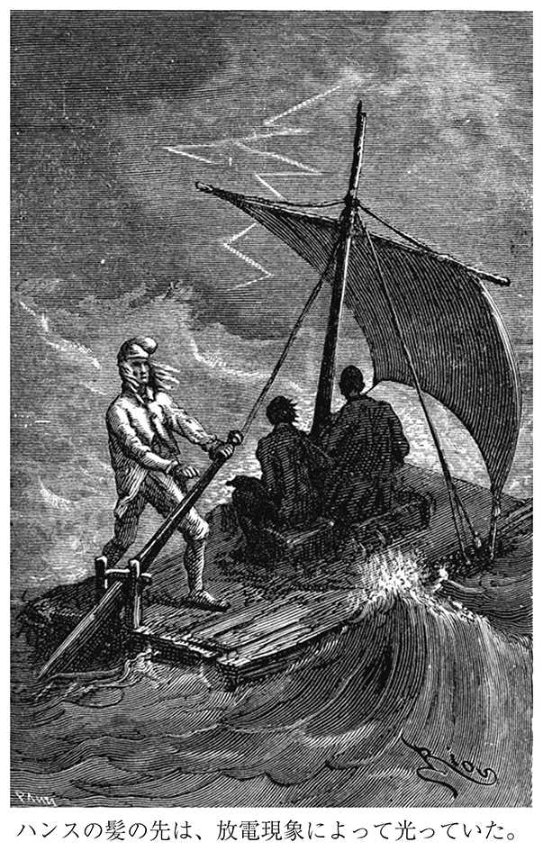
幸いなことに、マストは折れていない。帆ははじける寸前の泡のようにふくらんでいる。筏はものすごい速さで進んでいる。どのくらいの速さかは、言うことができない。だが、筏がたてる水しぶきよりは遅い。水しぶきは筏の後ろを目にも止まらぬ速さで一直線に去っていく。
「帆をおろしましょう」私は言ってみた。
「だめだ」叔父が答えた。
「ナイ」ハンスもわずかに首をふって言った。
だが、水平線のあたりで、雨は滝のように激しく降っている。それに向かって、無謀にも、私たちは進んでいるのだ。だが、まだそこまでも行かないうちに、海は激しく揺れうごいている。雷も発生している。雲の上のほうで化学変化によって電気が生成されたためだ（39）。雷鳴に混じって、稲妻が光る。それもひとつではない。今や無数の稲妻が空で交錯している。大気も白熱している。霰が降ってきて、私たちが持っているピッケルや銃など、金属製のものにあたると、火花を散らした。波も炎のようだ。波は火山のように内部に火焰を秘めていて、波頭が砕ける時に一瞬、燃えあがるのだ。
稲妻の光で目が眩しい。雷鳴で耳が聞こえなくなりそうだ。強風のために、マストは葦のように曲がっている。ああ、でも、このマストにつかまっていなければ！
（このあとの日誌は、これまでよりもさらに不完全なものになっている。だいたい、八月二十二日は、一日分、すっぽり抜けている。そのあとも、じっくりと観察して書くことはできなかったので、その時、偶然、目に入ったものをそのまま書きしるしただけだ。だが、たとえ断片的で、きちんと整理されていなくても、そこにはその時の私の気持ちが刻印されていることはまちがいない。だから、今、思い出して書くよりも、そのまま書きうつしたほうが、その時の私たちの様子を生きいきと伝えることができると思われる）
八月二十三日 日曜日
どこだ。ここはどこだ？ 筏はものすごい速度で流されていく。
昨日の夜は恐ろしかった。嵐はおさまっていない。雷鳴が絶えず、鳴り響いている。私たちはすさまじい音のなかにいる。耳から血が流れでそうだ。言葉を交わすこともできない。
稲光もやまない。逆向きの稲妻も見える。上から下に一閃したあと、天井の花崗岩を打つように、逆戻りして下から上に光るのだ。ああ、そのせいで、天井が落ちてきたら、どうしよう！ あとは先がいくつかに分かれる稲妻。大きな流星が大気圏に突入して、爆発したように見えるものもある。音はもう大きくならない。人間の耳に大きく聞こえる限度を越えているのだ。もし今、世界じゅうの火薬がいっぺんに爆発したとしても、その音を聞きわけることはできないだろう。
空は厚い雲に覆われているが、空間の明かりが届かなくなったわけではない。雲を抜けて差してくるのだ。おそらく、電気物質が雲の分子の間を通ってくるのだろう。嵐のせいで、気体に関する法則がおかしくなっているのだ。海面からは何本も水柱があがって、白い泡をたてながら、また海面に落ちている。
私たちはどうなってしまうのだろう？ 叔父は筏の端で横になって寝ている。暑い。だんだん暑くなる。温度計の目盛りは......（あの時、確かに私は数字を書いたはずだが、その数字は読めなかった）。
八月二十四日 月曜日
嵐はまだ続いている。気圧が異常に高い。どうしてだ？ この状態はこのまま続くのか？ 気圧は元に戻らないのか？
叔父と私は疲労困憊している。ハンスは普段と変わらない。筏はまっすぐに南東の方角に向かって流れていく。もうアクセル島から百五十海里（旧海里。約八百五十キロメートル）は来ているにちがいない。
正午。風はますます激しくなっている。荷物はすべてロープでマストに結びつける必要があった。私たちも互いをロープで結んでいる。波が頭の上を越えていく。
音がすごくて、この三日間、言葉を交わせる状態にない。口を開いて、唇が動くのは見えるが、声は聞こえてこない。耳元で大声を出しても、だめなのだ。
ついさっきのことだ。叔父が近づいてきて、一音、一音、区切るように何かを言った。「万事休すじゃ」私にはそう言ったように思えた。
はたして、叔父は本当にそう言ったのか？ 確信はなかったが、私は紙に書いて、叔父を説得することにした。《帆をおろしましょう》
叔父はうなずいた。
だが、叔父が顔をあげるまもないうちに、突風が吹いて、帆桁と帆が飛ばされた。それは翼を持つ爬虫類――プテロダクティルスが、嵐のなかを大空に舞いあがっていくように見えた。
なんだか奇妙なことが起こっている。マストと帆が吹きとばされる直前から、筏の縁に火の玉がひとつ現われたのだ。恐ろしくて、気味が悪い。大きさは二十五センチくらいだろうか。熱を放って、青白く光りながら、私たちのまわりをふわふわと漂っている。ただし、それ自体はものすごい速さで回転している。火の玉は筏の上に止まったかと思うと、食糧の袋に飛びうつり、そこから今は火薬の箱に移ろうとしている。だめだ！ 火薬に火がついて爆発してしまう！
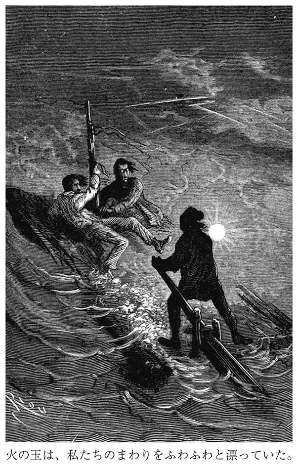
大丈夫だった。爆発はしなかった。火の玉は火薬の箱から離れていったのだ。今はハンスに向かっている。ハンスは火の玉の行方をじっと目で追っている。叔父が今、身をかがめた。火の玉を避けようとしたのだ。火の玉は強烈な光と熱を放ちながら、こちらに近づいてくる。ああ、来るな！
火の玉は今、私の近くで回転している。私は火の玉から離れようとしているのだが、足が動かない。どうしてだか、わからないが、足を動かすことができないのだ。
あたりは亜硝酸ガスの臭いで満ちている。ガスは喉から肺に入ってくる。息が苦しい。
だが、どうして足を動かすことができないのだろう？ まるで筏にねじで固定されているみたいだ！ ああ、そうか。もしかしたら、この火の玉は電気の火の玉で、磁気を帯びているのかもしれない。その証拠に、火の玉が筏の上に降りたとたん、近くにある計器や銃器など、金属製のものが互いにぶつかって、カチカチと音がしていた。私の靴の底には、鉄の鋲が打ってある。筏のほうも、丸太と丸太が離れないように、ロープとともに鉄のハーケンが使われている。だから、鋲とハーケンの両方が磁気を帯びて、靴が筏から離れなくなったのだ。
火の玉は回転しながら、だんだん私の靴に近づいてくる。もし火の玉が靴にくっついたら、私も火の玉と一緒に猛烈な速さで回転しだすだろう。そうなる前に、なんとか筏から靴をひきはがさなければ......。火の玉がまだ少し遠くにあるうちに......。
それはあっというまの出来事だった。私がなんとか靴を筏からあげたと思った瞬間、火の玉が爆発したのだ。あたりには壮烈な火花が散った。
爆発の瞬間、叔父が筏に身を伏せるのが見えた。私は目をつぶった。気がつくと、火の玉は消えていた。ハンスはあいかわらず舵を握っていた。だが、身体に電気を取りこんだのだろう。息をするたびに、光を吐いていた。
私たちはどうなってしまうのだろう？ どうなって？
八月二十五日 火曜日
あれから私は気を失うように眠ってしまったらしい。ずいぶん長い間、眠って、今、目が覚めた。
嵐は続いている。空には稲妻が光っている。まるでたくさんの蛇を放ったようだ。私たちはまだ海上にいるのか？ どうも、そのようだ。筏に乗って、ものすごい速さで運ばれているのだろう。もう英仏海峡の下はとっくに過ぎてしまっただろう。フランスも越えて、ヨーロッパも通りすぎてしまったかもしれない。
雷鳴はあいかわらず轟いているが、すぐ近くでこれまでとはちがった音が聞こえてくる。まちがいない！ これは波が岩にあたって砕ける音だ。ということは......。
38 ヴェルヌは、塩水の蒸発と電気の発生を結びつけて考えていたらしい。
＊原注 綿雲のこと。
39 ヴェルヌはどうやら、上空で電池のような化学反応が起こり、それによって電気が生じると想像したらしい。
ここで私の《航海日誌》は終わっている。したがって、これからは以前のような形で、話を続けることにする。いや、それにしても、筏が遭難したというのに、よく《航海日誌》はなくならなかったものだ。
というのも、波が岩にあたる音を聞いた直後、筏が岩礁に乗りあげたのだ。その衝撃で、私は宙に放りだされた。もしハンスが途中で受けとめてくれていなかったら、私は尖った岩に頭をぶつけて死んでいただろう。ハンスのたくましい腕が私の命を救ってくれたのだ。
そのあと、ハンスは海岸の波が届かないところまで、私を運んでくれたらしい。そこは岩が重なってできた小さなトンネルのなかで、私はそのトンネルの温かい砂地の上に、叔父と並んで寝かされている状態で目が覚めたのだ。
ハンスはまた、私たちが眠っている間に、筏が遭難した場所まで何度も行って、海に投げだされた荷物を回収してきたらしい。だが、それは翌日わかったことだ。その時の私は極度の疲労と興奮のせいで、話をすることもできなかった。あまりに興奮したせいで、感情が麻痺していたのだ。その状態から立ちなおるには、そのあと数時間が必要だった。
まだ海上にいた時から、激しい風のなかに雨が混じっていたが、ここに来て、雨は土砂降りになっていた。だが、これほど激しく降るのは、嵐が終わりを告げている徴でもあった。幸い、私たちのいたところはトンネルのなかだったので、叔父も私も雨に濡れずにすんだ。これもハンスのおかげだった。しばらくすると、ハンスが食事の準備をしてくれた。だが、私は食事に手をつけることができなかった。この四日間の出来事でくたくただったのだ。疲れていたのは叔父もハンスも同じで、私たちは死んだように眠った。
翌日は素晴らしい天気だった。空と海はまるで申し合わせたように、穏やかな顔を見せていた。嵐の痕跡はひとつもなかった。私が目を覚ましたのを知ると、叔父が陽気に声をかけてきた。叔父はこれまでにないほど上機嫌だった。
「おお、アクセル。よく眠れたか？」
それはまるでケーニヒ通りの家で、私が朝食をとりに階下に降りていった時のような調子だった。それも、たとえば、私とグラウベンの結婚式が行われる日の朝に......。
ああ、嵐のせいで、筏が南東ではなく、もう少し東に流れていたら、私たちはドイツの下を通ることができたのに！ 私の大好きなハンブルクの街の、大好きな通りの下を......。そこなら、ハンブルクとの距離は百四十キロメートルしか離れていなかったのだ。だが、もちろん、それは花崗岩の壁に隔てられた垂直の距離で、実際にはアイスランドまで行って戻る数千キロメートルの道のりを歩まなければならなかったのだが......。
そんな暗い考えが頭をよぎっていたので、私は叔父の言葉にすぐには答えなかった。すると、たちまち、叔父が言った。
「どうした？ アクセル。よく眠れなかったのか？ それとも、わしに返事をしたくないのか？」
「そんなことはありません」私はあわてて答えた。「とってもよく眠れました。ただ、まだ疲れていて......。すぐに回復すると思いますが......」
「あたりまえじゃ。そんなものはたいした疲れじゃない。すぐに元気になる！」
「叔父さんは元気そうですね？」
「おお、元気だとも！ おまえも一緒に喜んでくれ！ わしらはとうとう着いたんじゃ」
「目的地にということですか？」
「いや、そうではないが、ともかく、あの広い海の果てまで来たのだ。ここからはまた地下に潜って、地球の中心を目指すのじゃ」
「叔父さん。ひとつ、訊いてもいいですか？」私は言った。
「かまわんぞ、アクセル」
「戻るのはどうするんです？」
「戻るじゃと？」叔父は大声を出した。「まだ目的地に着いてもおらんのに、おまえはもう戻ることを考えておるのか？」
「そうじゃありません。ただ、どんなふうに戻るのかなと思って......」
「世界でいちばん簡単なやり方でじゃよ。地球の中心に着いたら、地上までのぼる道を見つけるのじゃ。さもなければ、おとなしく来た道を帰るだけじゃ。やり方としては、つまらんがな。だが、ここまでの道は閉ざされてはおらんはずじゃぞ」
「でも、それには筏を修理しないといけませんね」
「当然じゃ」
「でも、これから旅を続けるとして、食糧なんかはあるんでしょうか？」
「大丈夫じゃ。わしらにはハンスという頼りになる男がいるからな。筏にあった荷物のほとんどは、ハンスが回収してくれたはずじゃ。まあ、実際にどうなってるか、見にいってみよう」
そこで、私たちは岩のトンネルから表に出た。私はすぐに荷物のことを考えた。〈叔父さんの言うとおり、ハンスは確かに荷物を回収しようとしてくれただろう。でも、筏は激しく岩に衝突したんだ。上にあったものは、ほとんど残っていないにちがいない〉そう思うと、希望のなかにも不安が入りまじった気持ちだった。
だが、そんな心配はするだけ余計だった。さっきも書いたとおり、ハンスは昨日のうちに荷物を回収してくれていたからだ。私たちが海岸に着くと、ハンスは回収した荷物を砂浜や近くの岩の上にきれいに並べているところだった。叔父はハンスの手を握って、感謝の気持ちを表わした。確かに、これほど献身的な男は、どこを探してもいないだろう。まさに超人的な献身ぶりだ。ハンスは筏が遭難したあと、私たちが眠っている間に、命を賭して貴重な荷物を救ってくれたのだ。
だが、そうは言っても、ずいぶんなくなっていた物もあった。銃もそのひとつだ。しかし、銃などはなくてもどうにかなる。火薬の箱は無事だった。嵐の最中に火の玉が近づいた時には爆発してしまうのではないかと心配したが、そうはならなかった。そして、今度も海に沈んだりはしなかったのだ。
「よろしい。銃がないのであれば、わしらも狩りをしなくてすむということじゃ」叔父が言った。
「でも、計器はどうですか？」私は尋ねた。
「アネロイド型気圧計があるぞ。これがあれば、ほかの計器はどうだっていい。ここではこの機械がいちばん役に立つ。なにしろ、これによって、深さが計算できるのじゃからな。地球の中心に着いたかどうかも、この気圧計でわかるわけじゃ。これがなければ、わしらはどんどん潜っていって、地球の反対側から外に出てしまうかもしれんでな」
叔父の上機嫌はとどまることを知らなかった。それは恐ろしいくらいだった。
「方位磁石は？」私は尋ねた。
「ここにあるぞ。そこの小さな岩の上じゃ。時計も温度計もある。まったく、ハンスは貴重な男じゃ」
確かにそのとおりだった。調べてみると、計器は全部そろっていた。道具については、ロープや縄梯子、ピッケル、つるはしなどが砂の上に置かれていた。だが、いちばん大切なのは食糧だ。
「食糧はどうですか？」私は尋ねた。
「見てみよう」叔父は答えた。
私たちは海岸に一列に並べられた食糧の袋をひとつひとつ調べていった。海に流された袋はほとんどない。回収されたものは、保存状態も完璧だった。乾パンや干し肉、干し魚、ジン......。そういったものを全部合わせると、四カ月分の食糧があった。私がそう言うと、叔父が叫んだ。
「四カ月分だと？ それだけあれば、十分、地球の中心まで行って、戻ってこられる。余った分は、そうじゃな、ヨハネウム学院の同僚を招いて晩餐会を開こう」
私は啞然とした。叔父の性格には慣れているつもりだったが、叔父はいつでもその上をいくのだ。叔父が続けた。
「あとは水だが、幸い嵐のせいで、花崗岩の窪みには水が溜まっているはずじゃ。少し大きな窪みなら、池になっているじゃろう。そういったところをまわって、水を集めたら、喉の渇きに苦しむ心配もいらないというわけだ。筏については、できるだけ修理をしてくれるよう、あとでハンスに頼んでおこう。といっても、これから筏が使われることはないと思うがな」
「どういうことです？」私は大声で尋ねた。
「そう思っただけじゃ。この旅が終わる時、わしは入ってきたところとは、ちがうところから出ていくような気がするのじゃ」
私は信じられないような気持ちで叔父を見つめた。叔父の頭がおかしくなったのかと思った。だが、あとから考えると、叔父は〝真実を言いあてていた〟のだ。
「さて、それでは食事にしよう」
そう言うと、叔父はハンスにいくつか指示を与えた。それが終わると、私たちは海に突きでた小高い岩の上で食事をとった。食事は干し肉と乾パン、紅茶という簡単なものだったが、これ以上、おいしいものはなかった。これまでの人生で最高の食事だった。四日間の嵐のあとで、空は落ち着き、海も穏やかだった。欠けているものは何もない。私は安心した気持ちで、たくさん食べた。
食事の間、私は叔父に自分たちが今、どこにいるのか質問した。
「計算で答えを出すのは難しいような気がするんですけど......」
すると、叔父は答えた。
「確かに、計算するのは難しいな。正確にするのは不可能と言っていい。なにしろ、嵐にもまれた四日の間、わしは筏の速度も方向も測定することはできなかったからな。だが、おおよそどこらへんにいるか、推測することはできる」
「そうですね。確か最後に位置を確かめたのが、あの間欠泉の島ですから......」
「アクセル島じゃよ。せっかく、この海で最初に発見した島におまえの名をつけたのじゃ。その栄誉を軽々しく放棄せんでほしい」
「わかりました。では、言いなおします。そのアクセル島で確かめた時、私たちはグラウベン港から二百海里［旧海里。約千百キロメートル］。アイスランドからは二千五百キロメートルのところにいました」
「そうじゃ。その点から出発して、推測してみよう。嵐が吹いた四日の間、筏は一日に五十海里［旧海里。二百七十五キロメートル］は進んだことじゃろう」
「ということは、四日で千百キロメートルですね？」
「そのとおりじゃ。つまり、リーデンブロック海はグラウベン港から対岸まで二千二百キロメートルあることになる。わかるか？ アクセル、このことの意味が？ リーデンブロック海の大きさは地中海に匹敵するかもしれんのだぞ」
「リーデンブロック海が地中海のように横長で、ぼくたちが渡ったのが横ではなく縦だとしたら、もっと大きいですよ（40）」
「その可能性はあるな」
「それに、叔父さん」私はつけ加えた。「もし今の計算が正しければ、今、ぼくたちの上には本物の地中海があるんですよ！」
「本当か？」
「本当です。ぼくたちはスネッフェルス山から三千六百キロメートルのところにいるんですから！」
「それはまたずいぶん来たことになるな。だが、地中海の下ではないかもしれん。トルコが支配するバルカン半島の国々の下とか、大西洋の下かもしれん。地中海の下にいるというのは、わしらがまっすぐに来たというのでなければ、言えんことじゃろう？」
「ええ。でも、ぼくたちはまっすぐ来たんだと思います。風向きは嵐の時でもずっと変わりませんでしたから......。ぼくたちは今、グラウベン港から見て、南東の位置にいると思います」
「よし、それでは磁石で確かめてみよう。とりあえず、磁石の針が海のほうを差せば、わしらは南に向かって来たことになる」
そう言うと、叔父はハンスが道具を並べた岩に向かって、意気揚々と歩きだした。「さて、さて」と両手をこすりあわせ、いかにも嬉しそうだ。時おり立ちどまっては、「行くぞ」というポーズまでとってみせる。まるで子供だ。そのあとを私は、〈はたして自分の考えが合っているだろうか？〉と、興味を持ってついていった。
岩に着くと、叔父は磁石を手に取った。水平にして、方位盤を覗きこむ。そうして、磁石の針が止まるのをしばらく待った。やがて、磁石の針が方位を示したらしい。叔父は磁石を見て、目をこすった。それから、また磁石を見た。そうして、信じられないといった顔で、私のほうを向いた。
「どうしたんです？」私は尋ねた。
叔父は黙って、私に磁石を差しだした。それを見ると、私は思わず、あっという叫び声をあげた。磁石の針は確かに北を差していた。だが、それは海のほうではなく、陸のほうを差していたのだ。
私は磁石を回して、壊れていないかどうか確かめてみた。磁石はちゃんとしていた。針は最初、揺れていたが、頑固にも、最後には決まって同じ方向を差すのだ。陸の方向を......。
そうなったら、もう疑う余地はない。嵐の間に風向きが逆転して、私たちの知らない間に、筏は反対向きに進んでいたのだ。そうして、私たちが遠ざかってきたと思っていた場所に、また私たちを連れもどしてしまったのだ。
40 地中海の面積は二百五十万平方キロメートル。横の長さはジブラルタル海峡からシリアまで三千七百六十キロメートル。縦の長さは平均六百六十キロメートル。長いところでも千キロメートルまでいかない。
そのあとの叔父の心情の変化を的確に表現することは、私には不可能に思われる。叔父はまず狼狽し、それから起こった出来事が信じられずに呆然とし、最後に怒りを爆発させた。その変化の鮮やかなこと！ こんなに狼狽して、それから、こんなに怒りくるった人間は見たことがなかった。だが、それも無理はない。あれほど危険を冒して、苦しい旅を乗りきったと思ったら、ふりだしに戻っていたのだ。前に進んでいると思っていたら、後ろにさがっていたのだ！
だが、叔父はこの状況もたちまち乗りこえてしまった。怒りをぶちまけながら、最後にはこう宣言したのである。
「ああ、運命はわしを弄ぶ！ 自然はわしの邪魔をする！ 風も火も水も、あらゆるものが結託して、わしの行く手を阻もうとするのじゃ。よかろう！ それならわしは、己の意志がどれほど固いか、見せてやる。わしは譲らん。一歩たりとも、あとにはひかん。よいか、自然よ！ これは自然と人間の戦いじゃ。どちらが勝つか、勝負してみようではないか！」
岩の上に仁王立ちになると、叔父は拳をふりあげ、海に向かって叫んでいた。それは神々に刃向う、怒れるアイアス（41）のように見えた。だが、私はこのあたりで、叔父の激情に水を差したほうがいいと思った。
「いいですか、叔父さん。物事には限度というものがあります。大志を抱いたからといって、それがすべて叶うわけではないのです。今のぼくたちには、海の旅をすることができません。そのための装備が欠けているのです。だいたい、マストの代わりに鉄のストックを使い、帆の代わりに毛布を張り、丸太を寄せあつめただけの粗末な筏で、この大きな海を横断できると思いますか？ アクセル島まででも二百海里、その先はもっとあるかもしれないのに......。ぼくたちは嵐にもまれ、激しい風に吹きながされて、舵を取ることもできなかったじゃありませんか？ それなのに、もう一度、この海を横断しようだなんて、頭がおかしくなったとしか思えません！」
この論理に反論できるはずがない。そう思って、私はそれから十分もの間、一生懸命、しゃべりつづけた。その間、叔父は一度も、私をさえぎらなかった。だが、それは叔父が私の話を聞いていなかったからだ。叔父は別のことを考えていたのである。
「出航だ！」突然、叔父が叫んだ。
それが叔父の答えだった。私がいくら泣きそうな声で頼んでみても、いくら声を荒らげて説得しても無駄だった。私の頼みや説得は、花崗岩よりも固い、叔父の意志にぶつかって、はねかえされるだけだった。
いっぽう、ハンスはちょうど筏の修理を終えたところだった。まったく不思議な男だ。この男には叔父が、いつ、何をしたいのか、言われなくてもわかるのだ。ハンスはどこからか木化石の切れ端を探しだしてきて、筏を補強していた。筏にはすでにマストが立っていて、風に毛布の帆がはためいていた。
叔父が何事か指示をくだすと、ハンスはすぐに荷物を積みこみはじめた。水ももう汲んであった。そして、まもなく出航の準備が整った。空気はどちらかというと澄んでいて、北西からの風が休みなく吹いていた。
どうしたらいいだろう？ 私は思った。反対するにも、二対一では勝ち目がない。ハンスがこちらにつくということはあるだろうか？ そんなことはあり得ない。ハンスは自分のことは脇に置いて、叔父に身も心も捧げているのだ。こんな忠実な男が叔父の意向に逆らって、私の味方になるとは考えられない。
そこで、私は筏に乗って、いつもの場所に座ろうとした。その時、叔父が私を手で制した。
「出航はとりやめだ」
私はもうどうぞお好きにとばかり、肩をすくめた。
「せっかくの機会を無駄にしてはいかん」叔父が続けた。「運命はわしらをこの沿岸に押しもどしたのじゃ。どうせだったら、ここを探検して、様子を知ろう。それまではここから離れんぞ」
叔父がそんなことを言ったのには、もちろん、理由がある。ここは確かにリーデンブロック海の北岸ではあるだろうが、出発した場所ではない。もしそうなら、探検するだけの意味はあるということだ。おそらく、グラウベン港はもっと西にあるにちがいない。それを知るだけでも、そうする価値はあると思われた。
「行きましょう！」私は言った。
筏の始末はハンスに任せて、叔父と私はふたりで出発した。海岸と後ろの壁――つまり、この空間の内壁までの間は、かなり距離が離れていた。おそらく、徒歩にして三十分くらいはあったろう。海岸には、地球に初めて登場した甲殻類の殻が大小とりまぜて、形もさまざまにあちこちに散らばっていた。そのなかには、大きいもので直径が五メートルを超す巨大な甲羅もいくつかころがっていた。第三紀鮮新世に現われて、第四紀の洪積世（更新世）に繁栄した動物、グリプトドンの甲羅だ。グリプトドンは亀に似た動物だが、こうして見ると、身体の大きさがまるでちがう。グリプトドンに比べたら、現代の亀など小型の複製にしか見えないだろう。また、しばらく行くと、海岸の砂浜には砂利が混じるようになっていた。砂利は海岸線の形に列をつくるように並び、それが何列にもなって、砂浜の上に縞模様をつくっていた。縞模様は波打ちぎわから内壁まで続いていた。砂利のひとつひとつは、波に洗われて丸くなっている。ということは、この海岸は昔は海に隠れていたのだ！ 私は結論した。けれども、何かの理由で、波打ちぎわが後退し、その形に砂利が並んでいったのだ。そう言えば、今はもう波の届かない岩場にも、波に削られた跡があった。
そこから出発して、私は地下百四十キロメートルの場所に、どうして海ができたのか考えた。まず海面が昔より下がっているのは、この海の水が地下にしみこんでいくからだろう。では、今ある水はどこから来たのか？ それはもちろん、地球の表面に広がる大洋からだ。その大洋の水が海底――つまり、この〝空洞〟の天井にある裂け目から落ちてきて、ここに溜まったのだ。つまり、この海は地下の〝巨大な空洞〟に水が溜まってできた貯水槽のようなものなのだ。おそらく、大洋の底にあった裂け目は今ではふさがっているにちがいない。さもなければ、この貯水槽はすぐに満杯になっていたはずだからだ。だが、そうはならず、逆に水は減っていっている。これはこの貯水槽から下に水が漏れだしているとしか考えられない。また、この下では溶岩が熱く燃えているのだろう。その熱で、水の一部は蒸発しているはずだ。そこで、この場所では私たちの頭上に雲が浮かんでいるのだ。また、電気も生成されるので、雷も発生する。その結果、地下の〝空洞〟なのに嵐も起きるというわけだ。
この考えは、これまで私たちが経験してきた現象と合っているような気がしたので、私は満足した。というのも、自然の現象は、いくら不思議に満ちているといっても、必ず物理的に説明できるはずだからである。
それはともかく、こうして私たちは水の作用でできた砂と砂利の堆積層のようなところを進んでいった（ちなみに、グリプトドンが繁栄していた第四紀の洪積世では、こうした水による砂礫の堆積層が地表のほとんどを覆っていた）。この間、叔父は砂と砂利の地面から岩が顔を覗かせているのを見ると、その岩に裂け目がないかと、熱心に調べていた。裂け目があったら、そこから下に潜りこんで、地下に降りようと考えているのだ。
こうしてリーデンブロック海に沿って岸辺を歩いていくと、二キロメートル近くいったところで、突然、地面の様子が変わった。おそらく、地殻が割れて、大きな断層が生じたのだろう、あちらこちらで地面が陥没したり、隆起したりしていた。地面には亀裂が走り、かなり下の地層が上まで持ちあがっていた。
地層はいちばん下に花崗岩の岩盤があり、その上に燧石と石英が混ざった層、最後に砂礫が堆積してできた層が重なっていた。だが、いずれにしろ、起伏が激しくて歩きにくい。高さ数メートルの小山がたくさんあるのだ。と、そうやって、小山をひとつ越えた時のことだ。突然、目の前が開けて、野原が現われた。いや、野原というよりは平野だろう。だが、そんなことはどうでもいい！ 私は目の前の光景に啞然とした。
その平野は、なんと動物の骨で埋めつくされていたのだ！ 骨の平野だ。前に私たちはグラウベン港のそばで、マストドンなどの動物の骨が散らばっているのを見たが、それとは桁ちがいだった。これを墓場というなら、これほど広大な墓場は見たことがない。そこでは何百世紀もの〝時〟が骨の形でひとつに溶けあっていた。骨はうずたかく積みかさなりながら、どこまでも続いていた。そうやって、ゆるやかな起伏を描きながら、地平線まで達すると、最後はぼんやりした霧のなかに消えていた。おそらく、この〝骨の平野〟は目に見える範囲だけでも三キロメートル四方はあるにちがいない。そこには太古の時代からの動物の歴史が埋まっているのだ。そうだ！ たぶん、この骨の大半は現在では絶滅した動物のものだろう。
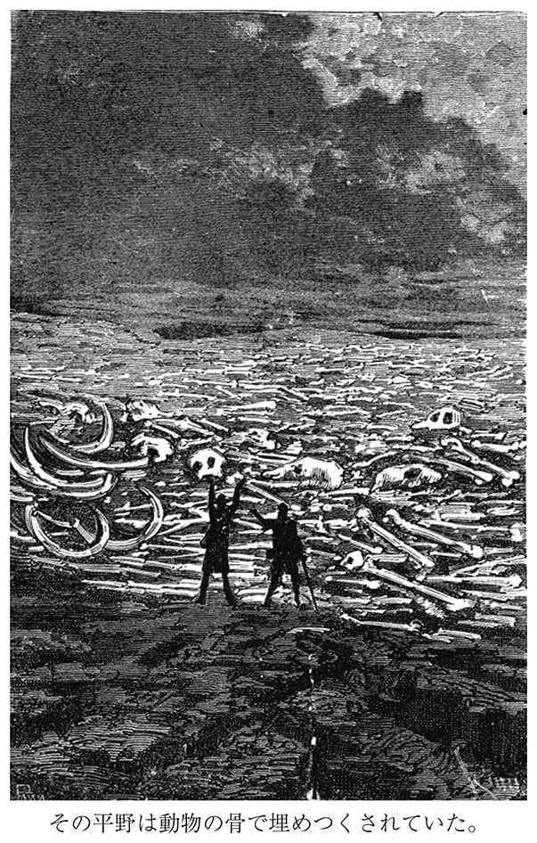
そう思うと、私たちは、どんな動物の骨があるのか興味をひかれて、一刻も早く調べてみたくなった。そこで、〝骨の平野〟に駆けおりたのだが、私たちが足を踏みいれると、骨は乾いた音をたてて砕けた。それはどれも、今はもう地球上に存在しない動物の骨や化石で、大都市の博物館が奪いあいをするような貴重で珍しいものだったが、私たちは別に気にしなかった。なにしろ、目の前にはそういった骨が無数に散らばっているのだ。この骨の山から古代に生きていた動物の骨格標本をつくろうと思ったら、キュヴィエのような古生物学者が何千人いても足りないだろう。
私はその場に立ちつくした。叔父は天に向かって、両手を差しのべていた。その格好で、何かを叫ぶように口を開き、眼鏡のレンズの奥で両目を爛々と輝かせながら、しきりに首を縦にふったり、横にふったりしている。目の前の光景によほど驚愕したのだろう。そんな不自然なやり方でしか、驚きを表現することができなかったのだ。目の前にはレプトテリウムやメリコテリウムの骨があった。ロフィオドンやアノプロテリウム、メガテリウムの骨もあった。マストドンやプロトピテック、プテロダクティルスの骨もある。ああ、こういった今では絶滅した動物の骨が山と積まれているのを見るのは、叔父にとってはどれほどの驚きで、またどれほどの喜びだったろう。まるで、イスラム帝国の二代目カリフ、ウマルの命令で焼かれたアレキサンドリア図書館の書物が灰のなかからよみがえったのを見た、熱狂的な書物蒐集家のようなものだった。いや、叔父はまさしくそういう状態だったのだ。
だが、そこでもっと驚愕するような出来事が起こった。最初の興奮が治まると、叔父はしばらくの間、夢中になって骨の山のなかを駆けずりまわっていたが、突然、骨のひとつを指さして、震える声で、こう叫んだのだ。
「アクセル、アクセル！ 人間の骨じゃ！」
「人間の骨ですって？」私もびっくりして叫んだ。「本当ですか？ 叔父さん」
「そうじゃよ、アクセル。おお、ミルヌ＝エドヴァールよ、ド・カトルファージュよ。きみたちは、どうして、今、ここにいないのじゃ！ このオットー・リーデンブロックがいるところに！」
41 ギリシア神話に登場する人物。
ミルヌ＝エドヴァールとド・カトルファージュはどちらもフランスの有名な動物学者であるが、どうしてここでそのふたりの名前が出てきたのか、それを知るためには、私たちが出発する直前に起こった出来事を説明する必要がある。
私たちがこの地底旅行に出発したのは一八六三年五月のことだが、その二カ月前の三月二十八日に、ソンム県のアブヴィルの近くにあるムーラン・キニョンという石切り場で、第四紀の洪積世と思われる地層から、人間の骨が見つかった。発見したのは、税務署長で、素人考古学者でもあったブーシェ・ド・ペルトが率いる発掘隊で、数人の作業員が地下四メートル二十センチのところから、顎の骨を掘りだしたのである。その骨の近くには石斧など、燧石の打製石器もたくさんあって、どれもが長い年月、地中に埋まっていたことを示すように、表面が変質して錆色を帯びていた。また、そこからは同時にマンモスの骨も発見された。それはつまり、「第四紀の洪積世に人類が存在していた」ことを意味する。そのことを証明するものが見つかったのは、これが初めてだった。
この出来事はすぐに評判になり、フランスだけではなく、イギリスやドイツにまで知れわたった。だが、それからしばらくして、「この骨は偽物ではないか？ ブーシェ・ド・ペルトが懸けた賞金目当てに、作業員がよそから持ってきた骨を埋めたのではないか？」という疑惑が持ちあがり、学者たちの間で論争が起こった。この論争はイギリスでは《顎裁判》と呼ばれたが、フランス学士院に属する多くの学者たちは、「この骨は本物である」という立場をとった。そして、なかでも、この説を頑強に主張したのが、叔父が先程、名前を挙げたミルヌ＝エドヴァールとド・カトルファージュだったのである。ふたりは、被告である〝骨〟を弁護して、「この骨はまさしくムーラン・キニョンの洪積世の地層から出てきたものにまちがいない」と論述した。
この論述はヒュー・ファルコナーやジョージ・バスク、ウィリアム・ベンジャミン・カーペンターなど、イギリスの学者たちにも支持された。そして、ドイツでも大勢の学者がこの説に賛同したが、その先頭に立って、情熱的に、いや熱狂的に、いや全身全霊を打ちこんで、「この骨は本物だ。人類は洪積世の時代には存在していた」と熱弁をふるったのが、何を隠そう、我が叔父、リーデンブロック教授なのである。
結局、この叔父の〝熱弁〟が功を奏して、「人類は第四紀の洪積世には存在した」という説は、疑いのないものとして認められた――かと思われたのだが、そこで強力な論敵が出現した。フランスの地質学会の大物、エリー・ド・ボーモンである。ボーモンはもともとキュヴィエとともに、人類がマンモスなど洪積世に絶滅した動物と同じ時代に生きていたことを認めていなかったが、この《顎裁判》の論争に際して、「人間の顎の骨が出てきたムーラン・キニョンの地層は洪積世のものではない。もっと新しい時代のものだ」と言ったのだ。
この反論を受けて、叔父はたちまち再反論を試みた。そして、ほかの大多数の地質学者たちの協力を得ながら、論争に論争を重ね、ついにはエリー・ド・ボーモンを孤立させるところまで追いこんだのである。
その後、私たちはすぐに地底旅行に出発したのだが、実は、この問題は私たちが出かけたあとに、またあらたな展開を見せた。フランスやベルギーやスイスなど、いくつかの国の洞窟から、年齢や性別もさまざまな人間の顎の骨がたくさん見つかったのである。骨は洪積世の柔らかく灰色の地層から出土していて、それと一緒に石でできた武器や道具も出てきた。地底にいたため、私たちはまだ知らなかったが、人類が洪積世に存在していたことは、だんだん証明されつつあったのである。
いや、それだけではない。これも、あとからわかったことであるが、第三紀鮮新世の地層から出土したものから、人類の歴史はもっと前にさかのぼるのではないかという大胆な学者まで現われたのだ。その出土品というのは、人間の骨ではなく、石だったり、絶滅した動物の脛骨や大腿骨だったりしたのだが、そこには明らかに人間が刻んだものと思われる、規則的な線条が残されていたというのである。
もしこれが本当なら、人類はこれまで考えられていたものより、一千世紀も〝時の階梯〟をさかのぼることになる。おそらくは、マストドンよりも前に地球に存在していたのだろう。そうして、そのまま〝時〟をくだって洪積世に、そのマストドンや《エレファス・メリディオナリス》――つまり、《暖帯マンモス》と同じ時代を生きたのである。そう、人類は十万年の歴史を持っているのだ！ というのも、高名な地質学者は皆、鮮新世の地層は十万年前に形成されたとしているからである（42）。
というわけで、私たちが出発したあとにわかったことまで書いてしまったが、ともかく地底の海岸でこの骨の山を見た時に、私たちが知っていた古生物学の状況はそういったものだったのである。
したがって、これだけ大量の〝絶滅した動物〟の骨を前に、私たちがどれほど興奮したかは、容易に察してもらえるだろう。とりわけ、そういった骨に混じって、すぐ目の前に人間の骨があるのを発見した時、叔父がどれほど驚愕し、どれほど喜んだかは、十分理解してもらえるにちがいない。この動物たちが地球に存在していた時代は第四紀の洪積世、もしくはもっと前の時代にさかのぼる。ということは、叔父は「第四紀の洪積世に人間が存在していた」という、かねてからの主張の動かぬ証拠を見つけたことになるのだ。
それは明らかに人間の骨であった。というより、ミイラに近いものだった。人間の身体がこれほど完璧な形で残るというのは、ここの土が特別な性質を持っているからだろうか？ 十八世紀の末に、数十体のミイラが発見されたボルドーのサン・ミッシェル大聖堂の墓地のように......。それはわからない。ともかく、目の前にいる人間の遺骸は元の姿を残していた。肌は黄ばんでしわだらけになっていたが、まだ手足の骨に貼りついていた。手足は今にも動きそうだ（少なくとも、見かけだけはということだが......）。歯はそろっていて、髪の毛もふさふさと生えたまま残っている。爪も恐ろしいほど長く伸びていて、生きていた時の姿をそのまま私たちに見せようとしているかのように思われた。
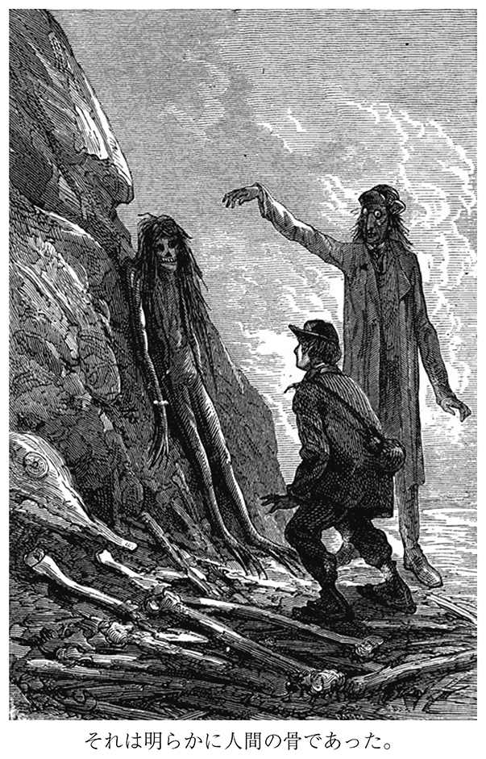
この遺骸を前に、私は何も言葉が出てこなかった。いつもは饒舌で、何かあったら、決して口をつぐんではいられない叔父も、この時ばかりは黙っていた。私たちは遺骸を抱きあげ、近くの岩に背中をもたせて、立たせてみた。すると、遺骸は今は空洞になったふたつの眼孔で、私たちを見つめた。私たちは遺骸の胸を叩いてみた。遺骸は響きのよい音をたてた。
と、そのうちに、叔父のなかで、オットー・リーデンブロック教授である部分が頭をもたげてきたにちがいない。おそらく、叔父は私たちが旅の途中で、まだ地底にいることも、まわりには私のほかに誰もいないことも忘れて、ハンブルクのヨハネウム学院で学生たちを前にしている気分になったのだろう。突然、骨の山のほうを向くと、姿勢を正した。そうして、見えない学生たちに向かって、講義を始めたのである。
「諸君、我輩は、ここに第四紀の洪積世の人間を紹介しよう。偉大な学者たちがその存在を否定し、またそれに劣らず偉大な学者たちがその存在を肯定した洪積世の人間を......。その存在を否定した学者たちは、自分の手で触れてみるまで、キリストの復活を信じなかった使徒トマスのようなものであったのじゃろう。だから、もし今ここに、そのような学者たち、古生物学会の使徒トマスとも言うべき学者たちがいたら、我輩はその連中にこの人間の遺骸に自分の手で触れてみることを提案する。さすれば、その連中もみずからの過ちに気づくじゃろう。
いや、もちろん、我輩とて、こういった発見に対して、科学がまず疑ってかかるべきであることは、十分承知しておる。たとえば、本物かどうか、エジプトのミイラを見世物にしたバーナムのようなインチキな輩がいることも知らないわけではない（43）。
こういったうさんくさい話は昔からあって、古代ギリシアの地理学者パウサニアスが書いた『ギリシア案内記』を読めば、テゲア戦争の時、神託によりスパルタ人たちがオレステス（44）の遺骨を探して発見したとか、アイアス（45）の墓に入った男の話によると、その遺体の膝の骨は五輪競技の円盤ほどもあったとか、ミレトスの近くの島には、大地の女神ガイアの孫で、星の神アストライオス（46）の骨が埋まっているが、その骨からすると、アストライオスは身長が十ペキュス（四・四メートル）あるとか、まあ、だいたいは巨人の骨が見つかったというような、とうてい信じられないような話がたくさん並んでいる。
そのあとも、十四世紀にイタリアのトラパニで発見された骨が《単眼の巨人》のひとりであるポリュフェモスのものではないかという話があったり、やはりイタリアのパレルモの近郊で、十六世紀に巨人の骨が見つかったという馬鹿げた話があるのを我輩は本で読んで知っておる。いや、諸君も、あの有名な十六世紀のスイスの医師、フェリックス・プラッターが一五五七年にルツェルンで発見された大きな骨を分析して、これは六メートルの巨人のものだと宣言したという話はご存じだろう？ そうした信用できない話は山ほどあるのじゃ。また、我輩は〝巨人〟について書いたジャン・カッサニオンの論文を読んで、カッサニオンが一五六四年にドーフィネ地方のヴァランスで発見された象の骨を巨人の骨だと考えたことも知っておる。それから、やはりドーフィネ地方の別の場所で、砂の採取場から一六一三年に大きな骨が発見された時、『この骨は伝説の巨人、ガリアを征服したゲルマン民族のキンバリ族の王、テウトボクスのものだ』と主張して、見世物にした輩がいたことも、それに対してすぐに反論や擁護の声があがったことも、当時、刊行された資料を論文から回想録まで――小冊子からちゃんとした書籍まですべて読みつくして知っている。結局、その骨はもちろんキンバリ族の王のものではなく、やはり象の仲間のデイノテリウムの骨だとわかったのだが、ともかく、こういった輩は大勢いるのじゃ。十八世紀にはドイツの博物学者ヨハン・ヤーコプ・ショイヒツァーが『ノアの洪水前に生きていた人間の骨を見つけた』と書いたが、我輩がその時代に生きていたら、『それはまちがいだ』と、当時のオランダの人類学者ペトルス・カンパーとともに論破していたじゃろう。実際、それは後にキュヴィエが明らかにしたように、オオサンショウウオの骨だったのじゃから......。そう、我輩はこれまで多くの人間が絶滅した動物の骨を人間の骨だとして利用してきたことを知っている。とりわけ、象の骨を巨人の骨だと言って、世間の注目を集めようとしてきたことを......。それを検証するため、ドーフィネの事件に関しては、『キンバリ族の王の骨だ』という説を擁護したパリの外科医、ニコラス・アビコが書いたジガンス......」
そこで、叔父は目を白黒させた。強度の吃音のため、難しい発音の単語が出てくると、言葉が出てこなくなるという、あの症状が表われたのだ。叔父はもう一度、言おうとした。
「ジガンテオ......」
だが、やはり言葉に詰まってしまった。言葉は意地悪く口のなかにとどまって、いっこうに外に出てこようとしないのだ。これが本当にヨハネウム学院での講義の最中だったら、教室は哄笑に包まれていただろう。
「くそっ！ ジ、ジ、ジ、『巨人学』の本まで手に入れたほどじゃ！ くそったれ！」
前後に罵り言葉をはさみながら、ようやくその言葉を口にすると、叔父は前よりもいっそう激しい調子で、大きな身ぶりを交えながら、講義を続けた。
「ということだから、諸君！ 我輩はこれまで動物の骨を人間の骨だと言ってきた連中がいかに多かったかを知っている。また、第四紀洪積世の人間の骨が見つかったと言われた時も、キュヴィエやブルーメンバッハが『マンモスか、あるいは洪積世のほかの動物の骨にすぎない』と言下に否定したことも知っている。だが、諸君！ 今、ここで、この人間の遺骸を前にしたら、そんなことは言っていられないであろう。それは科学に対する冒瀆である。なにしろ、洪積世の人間の遺骸が目の前にあるのじゃから！ 諸君はこれを見て、またこれに触れることができる！ しかも、残っているのは骨だけではない。皮膚や髪まで備えているのじゃ。まるで人類学の発展のために、この場所に残されているのだというように......。そうじゃ、この遺骸は人類学のためだけに、ここにこうして完全な形で保たれているのじゃ！」
私はその言葉にうなずいた。叔父の意見に反対する気持ちはまったくなかったからだ。叔父が続けた。
「もし、この遺骸を希硫酸で洗うことができたら、我輩は遺骸についている土や貝殻を落として、その真の姿をお目にかけることができるじゃろう。だが、残念なことに、今、我輩の手もとには、その貴重な希硫酸が欠けておる。だから、我々は今、目の前にある姿をそのまま受け入れるしかない。しかし、それでも、この遺骸は、今のこのままの姿で、多くのことを語ってくれると思われる」
そう言うと、叔父は死体の頭に手を置き、まるで見世物師のように、遺骸を紹介してみせた。
「ご覧のように、諸君、この遺骸は身長が百八十センチメートルしかない。すなわち、巨人だというわけではない。人種的には《コーカシア》に属する。つまり、我々と同じ白人種である。頭蓋骨は卵型で、頰骨が発達しているわけでも、顎が突きだしているわけでもない。耳の穴と鼻の頭を結ぶ直線と、上唇と額を結ぶ線がつくる角度のことを《顔面角》というが、その角度が大きいので、人類学でいう突顎であるとは言えない。噓だと思ったら、測ってみるがよい。その角度はほとんど九十度。すなわち、白人種のものじゃ。だが、そんなことで驚く必要はない。我輩はもっと細かいところまで、推定することができる。この遺骸はインドからギリシアまで広がったヤペテ系の民族である。いや、諸君、笑ってはいけない！」
もろちん、誰も笑ってはいない。だが、叔父は普段、講義の最中によく笑われるので、ついそんな言葉が出てしまったのだろう。と、叔父がまた大きな身ぶりとともに、話を続けた。
「いずれにせよ、この遺骸が第四紀洪積世のものであることはまちがいない。なにしろ、この教室を埋めつくしているマストドンをはじめ、洪積世の時代を生きていた動物の骨と一緒に見つかったのじゃから（叔父は教室と言った）。だが、どうして、その時代の地表がこの地下の広大な空間に潜りこんだのか？ それについては、我輩は諸君に言うことはできない。おそらく、洪積世にはまだ地球の内部で大きな変動が起こっていたのじゃろう。そこで、たとえば、地球が冷えたり、太陽や月の引力の影響を受けたりすることによって、地殻のなかにひび割れができて、広大な空洞ができた。また、それと同時に断層が生じて、地表の一部がそこまで潜りこんだ。たぶん、そういったことがあったのじゃろう。もちろん、そうだと断言することはできないが......。だが、ともかく、遺骸はここにあるのじゃ。洪積世の動物の骨とともに......。それに、ほれ、よく見るがよい。この遺骸のそばには石器まである」
そう言うと、叔父は遺骸のまわりを指さした。そこには確かに燧石を削ってつくった石斧や、そのほかの石器が散らばっていた。叔父が続けた。
「つまり、この遺骸がただの旅行者でないかぎり――すなわち、我輩と同じように、科学の先駆者として、この地下の空洞まで降りてきたのでないかぎり、我輩は『この遺骸が洪積世に生きていた人間のものではない』と言うことはできない！」
最後にそう結論を述べると、叔父は講義を終えた。私は〝満場一致〟の拍手をした。いや、たとえ、私より博学の人間がここにいたとしても、叔父の言葉に異を唱えることはできなかったろう。叔父の講義はそれほど完璧なものだったのだ。
それに、人間の遺骸はそれひとつではなかった。〝骨の平野〟を探してみると、あちらこちらで同じような遺骸が見つかったのだ。したがって、もし叔父の言葉に納得しない者がいたとしても、叔父はたくさんある遺骸のなかからいちばん完璧な姿で残されたものを標本として見せることができたのである。
いや、それにしても、この広大な墓場に、洪積世に存在した動物の骨と人間の骨が一緒に散らばっている光景は驚くべきものであった。だが、それを見るにつけ、ひとつだけ気になる問題があった。あえて、答えを出したくない問題が......。
その問題とは、ここにある動物や人間の骨は「最初から骨の状態で、地下に潜りこんだのか？」、あるいは「地下に潜りこんだ時にはまだ生きていて、その後、ここで暮らして骨になったのか？」ということだ。前にグラウベン港で考えたように、もし生きたままこの地下の世界に潜ったのだとしたら、ここで子孫を繁栄させた可能性も出てくる（私自身はその可能性が高いと思っていた）。だとしたら......。これまでのところ、私たちはこの世界で生きているものと言えば、古代の魚と海の怪物にしか会っていない。けれども、このままここにいたら、この世界に住んでいる人間に出会うことになるのだろうか？
42 現在では鮮新世は約五百万年前から約二百五十八万年前、洪積世（更新世）は約二百五十八万年前から約一万年前とされている。だが、この当時の層序学では地層の相対的な古さはわかっても、絶対的な年代までは正確にはわかっていなかった。おそらく当時の学説にしたがって、ヴェルヌは鮮新世の地層を十万年前のものだと考えたのだろう。
43 バーナムはアメリカの興行師。猿の骨と魚の骨を接合したものを人魚のミイラだと偽って、見世物にしたこともある。
44 ギリシア神話に登場する人物。『ギリシア案内記』第三巻第三章。
45 前出。ギリシア神話に登場する人物。『ギリシア案内記』第一巻第三十六章。
46 ギリシア神話に登場する人物。『ギリシア案内記』第一巻第三十六章。
それから三十分の間、私たちはこの〝骨の平野〟を歩きつづけた。この空洞には、まだ何か素晴らしいものが隠されているのではないか？ ここからは、まだ何か科学にとって素晴らしいものが見つかるのではないか？ そう思うと、好奇心に突きうごかされて、自然に足が前に進んだのだ。私はいったいどれほどびっくりするような光景を目にすることができるのかと、わくわくしながら、あたりを見まわした。
小高い骨の山に隠れて、後ろをふりかえっても、もう海岸線は見えない。うっかりすると、迷子になる恐れがあった。私はふと不安になった。だが、叔父はそんなことはいっこうに気にかける様子もなく、どんどん前に進んでいった。空間を照らす電気の光を浴びながら、私たちは黙って歩いた。電気の光は、いったいどういう現象なのか、今はあらゆる方向から差していた。空間のどこかに光源があって、そこから光がやってくるのではない。すべての方向からやってくるのだ。したがって、影はできなかった。まるで、太陽の光が真上から差してくる〝赤道直下の真夏の正午〟にいるようだった。雲はもちろん、霧も消えていた。遠くのほうには岩山が連なり、その前にはこんもりした森がいくつか点在している。あらゆる方向から均等に差してくる不思議な光のせいで、山や森は奇妙にのっぺりとして見えた。私たちの影もできない。私たちはまるで、ホフマンの小説に出てくる〈影のない男（47）〉のようだった。
それから、二キロメートル近く歩いたところで、私たちは森の入口に着いた。森は大きかった。だが、キノコの森ではなかった。第三紀の植物群からなる巨大な森だ。大きな椰子――それも現代では絶滅してしまった椰子の大木を中心に、松やイチイ、糸杉、ヒバなどの針葉樹が混じって、その木々の間にツタが絡まっている。木陰の地面は――ここでは影ができないので、この言い方がふさわしいかどうかわからないが――柔らかい苔で覆われ、幾筋か川が流れている。川沿いにはリンボクやフウインボクなど、背の高い木が生えていた。リンボクやフウインボクは、地上では植物園の温室にあるようなシダ植物の仲間だが、それに比べると、はるかに大きい。
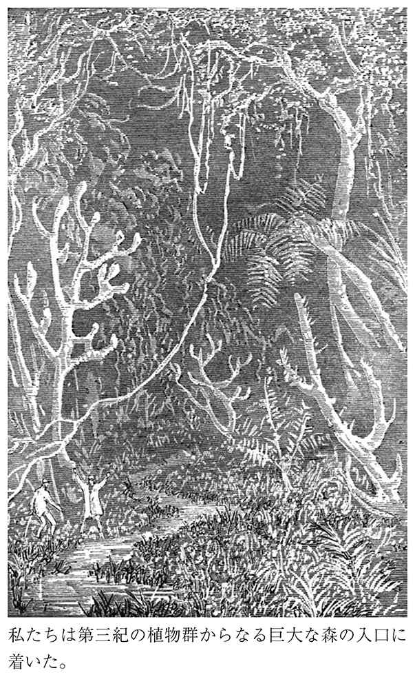
ただ、高木でも灌木でも、あるいは地面に生えた苔でも、この森の植物にはひとつだけ不思議な特徴があった。たぶん、太陽の光がないせいだろう、色彩が欠けているのだ。すべてが同じように茶色っぽく、古びた色合いになっている。葉からは緑が奪われ、花にも色がない。この森ができた第三紀の時代には、地上には花を咲かせるさまざまな植物が誕生し、色や匂いを競いあっていた。だが、ここでは「地下の空洞で均質な光に照らされている」という環境のせいだろう、花には色も匂いもなく、黄ばんだ紙でつくったように見えた。
こうして、森の入口まで来ると、叔父はためらう様子もなく、ずんずんと奥に進んでいった。私はもちろん、そのあとについていったが、心配する気持ちがないわけではなかった。これだけ植物があるということは、それを餌にする動物がいてもおかしくないと考えたからだ。もしそうなら、私たちは恐ろしい動物に遭遇する可能性だってあるのではないか？ そう思って、あたりを見まわすと、倒木が枯れてできた森の空き地には、マメ科の植物や、ムクロジ科の植物、アカネ、そのほかの灌木など、牛や鹿の祖先である反芻動物が見たら喜びそうな植物がたくさん生えていた。
それからさらに歩いていくと、私たちの目の前には地上では決して目にすることのできない光景が現われた。椰子の木の近くに楢の木が生え、ノルウェーで見られる樅の木にオーストラリアで見られるユーカリが寄りそっている。また、北欧の樺の木とニュージーランドのカウリが混生している。これを見たら、地上の植物学者はたちまち説明に困って、どんな優れた人でも頭がおかしくなってしまうだろう。
と、その時、私ははっと足を止めて、叔父の袖をつかんだ。
光があらゆる方向から差してくるので、森のなかは明るく、奥のほうまでよく見えるのだが、そこに私は......奥のほうの木々の下に、なんだか大きなものが動くのを見たような気がしたのだ。いや、気がしたのではない。はっきりと見たのだ！
私は自分の目が信じられなかった。それはなんと、マストドンの群れだったのだ！ しかも、化石になっているのではなく、生きているマストドンだ。一八〇一年にアメリカのオハイオの沼地でマストドンの骨が発見されたが、その骨から復元された骨格標本に肉をつけたら、まさにこのようなものであったろう。私はその生きたマストドンたちが、木々の下で長い鼻を蛇のようにうごめかしているのを見たのだ。マストドンたちは、その鋭い牙で太い老木の幹を傷つけ、枝を折っては、そこに繁った葉を鼻でむしりとり、大きな口に運んでいた。
ああ、なんということだろう！ 以前、私が筏の上で見た白昼夢が現実となったのだ。第三紀と第四紀の動物たちを見た夢が......。この地下の世界で......。だが、これは確かに現実だった。しかも、ここには私たちしかいない。私たちはこの巨大な動物に襲われる危険性があった！
マストドンがいることは、叔父ももちろん気づいていて、叔父はそこから目を離さなかった。
「行こう。アクセル、もっと近くに！」突然、叔父が私の腕を引っ張って言った。
「だめです！」私は叫んだ。「ぼくたちには武器がありません。あんな巨大な動物に襲われたら、いったいどうやって身を守ればいいんです！ 逃げましょう。叔父さん、逃げましょう。あいつらを怒らせたら、とんでもない目にあうでしょう。人間が素手で立ち向かえる相手ではありません！ どんな人間にも無理です！」
「どんな人間にもじゃと？」声をひそめて、叔父が言った。「アクセル、おまえはまちがっておる。アクセル、見ろ！ あそこを......。あそこに何か生き物がいるだろう。わしらに似た生き物が......。あれは人間ではないのか？」
私は肩をすくめた。そして、叔父の言うことなど信じるものかという気持ちで、叔父が指さしたほうを見た。絶対に噓だという気持ちで......。けれども、それを目にした瞬間、私は信じないわけにはいかなくなった。
実際、四百メートルほど先の太いカウリの幹に寄りかかって、巨大な番人がひとり、マストドンの群れを見張っていたのだ。海神ポセイドンの息子で、恐ろしい海獣の群れの世話をする海神プロテウスのように（48）......。
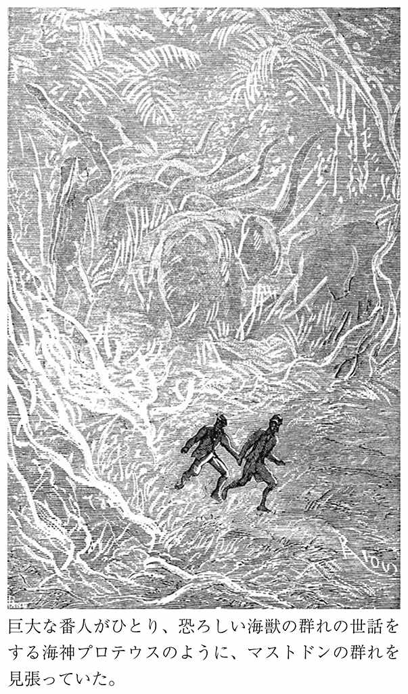
《恐ろしい獣の番人は、番人自身も恐ろしい（49）！》
そうだ！ 番人自身も恐ろしい！ 向こうにいる大男は、さっき〝骨の平野〟で見たような遺骸ではない。生きている人間――しかも、巨大なマストドンを率いることができる男なのだ。身長は四メートルは越えているにちがいない。頭も水牛のように大きい。だが、その顔は長いぼさぼさの髪に隠れて、見えなかった。髪はまるで初期の象が生やしていた、たてがみのようだった。男は羊飼いが杖を使うように、マストドンの群れに向かって、太い枝をふりかざしていた。
私たちは、ただ茫然として、動くこともできなかった。だが、このままでは男に見つかる恐れがある。その前に逃げなければならなかった。
「早く、早く」叔父の腕を引っ張りながら、私は言った。叔父は初めて、言うことを聞いてくれた。
十五分後、私たちはあの恐ろしい巨人の目の届かないところにいた。
だが、現在――あれから数カ月の月日が流れて、気持ちも落ち着き、冷静に思考を巡らすことができるようになった現在、あらためてあの不思議な出来事について考えてみると、私はそれが本当にあったことだとは信じることができない。そうだ！ あんなことがあったはずはない！ あの時、私たちの感覚はおかしくなっていた。私たちの目は、実際には見ていないものを見ていたのだ！ あんな地下の世界に、人類がいるはずなどない！ 地上の人間に気がつかれないまま、また地上の人間と接触を持たないまま、何世代にもわたって、地球の内部で暮らせるはずがない！ そんなことはあり得ない。絶対にあり得ない！
もしあれが人間のような身体つきをした動物だったというなら、私はそれを認めよう。たとえば、最初の猿として地球に初めて登場したプロトピテクスや、そのあとに続くメゾピテクスのような猿であったというなら......。一八三六年にフランスの古生物学者エドゥアール・ラルテがサンザンの骨の集積場で、第三紀の地層から猿の顎の骨を発見したが、その猿と同じ仲間だというなら......。だが、現代の古生物学でわかっていることからすると、そんなふうに化石として発見される猿はあまり大きくない。あの男は身長も体格も、はるかにそれを凌駕していた。いや、そんなことはどうでもいい！ もしあれが猿だったら――どれほどありそうになくても、もしあれが猿だったら、実際に見たのだと信じられる！ だが、あれが人間で、ほかの仲間たちとともに地底で生活していたとは、そんなことは信じられない！ 絶対に無理だ！
しかし、その時は、そんなことを考える余裕すらなく、私たちはともかく奇妙な明るさに満ちた、この恐ろしい森から逃げだした。驚きのあまり口もきけず、頭のなかは真っ白になっていた。男に気づかれないようにそっと逃げようと思っても、だんだん足が速くなり、最後には走りだしていた。まるで悪夢のなかで怪物に追われて、果てしなく逃げているかのようだった。私たちは来た道を戻らず、本能に導かれるまま、まっすぐにリーデンブロック海に向かった。マンモスの群れを連れた大男が襲ってくる恐怖に追いたてられながら......。途中でまたどこかの森に迷いこんでしまわないようにまわりの景色に気を配っていなかったら、わずかに残っていた理性まで失って、頭がおかしくなっていたかもしれなかった。
そうして、やっとのことで海岸に出ると、そこは初めて来た場所だったのに、私は岩場の形がグラウベン港で見たものと、よく似ていることに気づいた。これだけ似ているということは、やはり磁石の針が示していたとおり、私たちはリーデンブロック海の北の海岸に戻ってきてしまったのだろう。グラウベン港のある海岸に......。いや、もしかしたら、ここはグラウベン港ではないのか？ 私は思った。実際、そうだと思ってしまうほど、景色がよく似ていたのだ。崖はごつごつとした岩が重なるようにしてできていて、その岩の間からはいくつもの滝が流れおちている。また、崖にはいくつか洞穴があって、そこからは小川が流れでていた。あれは私たちの旅の供をしてくれていた、あの忠実なハンス川ではないのか？ そして、そのハンス川の出てくる洞穴は、私が花崗岩の岩盤のなかで道に迷ったあと、ようやく叔父とハンスに再会して、九死に一生を得た、あの洞穴ではないのか？ 私はまた《スルトの燃え木》と呼ばれる木の化石――木化石が散らばっている場所も見つけた。ああ、そうだ。ここにころがっていた木化石でハンスは筏をつくったのではないか？ そういった景色を見るたびに、私は思った。だが、そこからしばらく歩いて、見覚えのない川が流れていたり、記憶にない形で急に崖が迫ってきたり、見たこともない不思議な格好の岩が出てきたりすると、その場所がグラウベン港であるという確信は揺らいだ。
その点については、叔父もまた確信を持てないようだった。似たような景色が続くのでよくわからないが、むしろちがうような気がするというのだ。それを聞くと、私は言った。
「もちろん、よほどの偶然でもないかぎり、嵐のせいで戻ってきた筏が、出発したちょうど同じ場所にたどりつくことなどありません。でも、ここが北の海岸だというのは確かなのですから、岸沿いに進めばいつかグラウベン港に出るのではないでしょうか？」
すると、叔父はこう答えた。
「もしそうなら、もうこのあたりを探検する必要はないな。すぐに筏に乗って出航しよう。だが、ここがグラウベン港とはまったく別の場所なら......。どうじゃ、アクセル？ このあたりの景色はグラウベン港によく似ていると、本当にそう思うのか？」
そう言われて、私は自信を失った。
「似ていると言えば、似ていますが......。でも、岩場はどれも似ていますからね。だけど、あそこの岬は、ハンスが筏を組み立てていたところにそっくりな気がします。そうですねえ。ここのような気もするし、ここじゃない気もする」私は入り江の様子をひとつひとつ確かめながら言った。「でも、ここじゃなくても、グラウベン港がすぐ近くにあることはまちがいありませんよ」
「そうかな、アクセル」叔父が反論した。「わしの直感では、グラウベン港から遠いような気がするのじゃが......。少なくとも、ここがグラウベン港でないことは確かじゃ......。なにしろ、わしらの痕跡がひとつも見つからないのじゃからな」
と、その時、私は砂の上に鈍く光る物を見つけて、言った。
「見つかりましたよ！ ほら」その光る物を拾って、続ける。「ぼくたちの痕跡が......」
「なんじゃ？」
「これです」
そう言いながら、私は叔父に拾った物を見せた。それは赤錆に覆われた短剣だった。
「なんじゃ、おまえはこんな武器を持ってきていたのか？」叔父が尋ねた。
「ぼくがですか？ まさか。この短剣は叔父さんのものじゃないんですか？」
「いや、わしのものじゃない。わしは短剣など、持ったことがないからな」
「じゃあ、どういうことでしょう？」
私は首をかしげた。すると、叔父が言った。
「なに、簡単なことじゃ。それはきっとハンスのものじゃ。アイスランド人は、そんなような武器をよく持ちあるいているからな。ハンスが落としたのじゃろう」
だが、その言葉に、私は首を横にふった。ハンスがこんな短剣を持っているのを見たことがなかったからだ。
「もしかしたら、この地下の世界で生きている、太古の人類のものだとは考えられませんか？」私は叫んだ。「あの大男の部族のものであるとは......。そうだ！ その部族には戦士たちがいて、武器としてこの短剣を......。いや、待てよ。これは石器じゃない。青銅製でもない。この刃は鋼でできている。だとすると......」
「まあ、落ち着け、アクセル。そんなに興奮するな」私が妄想の世界に入りそうになったのを見て、叔父が言った。「もう少し、理性的になれ。この短剣は十六世紀のものじゃ。貴族たちがベルトに差していて、戦いで相手にとどめを刺すのに使った、本物の武器じゃ。見たところ、どうやらスペイン製じゃな。だが、これはおまえのものではなく、わしのものでもハンスのものでもない。そして、もちろん、この地下の世界で生きている戦士のものでもない。とすると......」
「どうして、そんなことが言いきれるんです？ この地下の世界の戦士のものではないと？」私は尋ねた。
「見ろ！ この短剣は切っ先だけが丸くなっていて、全体は刃こぼれしていない。ということは、戦士たちが敵の喉に突き刺すのに使ったのではないということじゃ。それに、この赤錆は昨日や今日、ついたものではない。これだけ厚い層になるからには、百年から二百年、いや、もっと前からついていたものじゃろう。だとすると......」
そう私に説明しながら、叔父は激しく身体を動かした。思考が駆けめぐっている時には、いつもそうなるのだ。
「アクセル！」叔父が続けた。「もしかしたら、わしらはこれから素晴らしい発見をすることになるかもしれん。この短剣はこの地下の海岸の砂浜に百年、いや二百年、いや三百年も前から捨てられていた。そして、おそらくは岩を削ったせいで、切っ先が丸くなっている！」
「でも、どうして、こんなところに短剣があるんです？」私は口をはさんだ。「この短剣はひとりでここに来たわけじゃないでしょう？ ひとりで切っ先が丸くなったわけじゃないでしょう？ ということは、誰かがここに、ぼくたちより前に来たことになります！」
「そのとおりじゃ。男がひとりな」
「その男とは？」
「わかっておろう。その男はこの短剣で、この海岸の岩に自分の名前を刻んだはずじゃ。地球の中心に行く道を示すためにな。探そう！ アクセル。探すのじゃ！」
その言葉に突きうごかされるように、私たちは崖に沿った細い道を歩き、その男の名前が刻まれていないか、岩の割れ目の奥まで見てあるいた。そして、海に突きだした岩場の奥にある小さな洞穴の入口で、ついにそれを発見した。花崗岩の壁の上部に......。
そこには、かすれかけた文字でふたつのイニシャルが刻まれていたのだ。
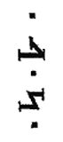
「Ａ・Ｓ！」叔父が叫んだ。「アルネ・サクヌッセンム！ やはり、アルネ・サクヌッセンムだったんだ！」
47 『大晦日の夜の冒険』の登場人物。ただし、この作品はシュレミールの『影をなくした男』に想を得て書かれた。
48 ウェルギリウス『牧歌』第五巻。
49 ウェルギリウス『農耕詩』第四巻、及びヴィクトル・ユゴー『ノートルダム・ド・パリ』。
この旅が始まって以来、私は幾度も驚愕するような事実に出会ってきた。これだけのことを経験したら、もう変わったことには食傷気味で、たいていのことには驚かないと思っていたほどだ。だが、洞穴の入口にある花崗岩の壁に、およそ三百年前に刻まれたふたつの文字を見た時、私は啞然として、馬鹿みたいにぽかんと口をあけてしまった。私はアルネ・サクヌッセンムの署名を見ているだけではなく、その署名を刻んだ短剣を手にしているのだ。この証拠を前にしたら、よっぽど疑い深い人間ではないかぎり、アルネ・サクヌッセンムという人物が実在して、地球の中心まで旅したことを信じるだろう。私は疑い深い人間ではなかったので、そのことを信じた。そうだ。あれは本当だったのだ。本当だったのだ。私は頭のなかで繰り返した。
その間、叔父は熱狂に取り憑かれたように、ふたつの文字の前まで行き、アルネ・サクヌッセンムを誉めたたえはじめた。
「おお、偉大なる天才、アルネ・サクヌッセンムよ。汝はあとに続く者たちのために、みずからが切り開いた〝地底への道標〟を示すことを忘れなかった。そのおかげで、汝と同じ情熱を抱く者は、汝の足跡をたどっていけばよいことになった。汝がこの地下の奥深くに三百年も前に残した足跡を......。そのおかげで、汝のあとに続く者は、地下の世界の素晴らしい光景を見ることができるようになった。おお、汝の名はいつでも旅の岐路に刻まれていて、汝のあとに続こうとする勇気ある旅行者を導いてくれる。さすれば、その旅行者は地球の中心にたどりついた時にも、そこに汝の名が刻まれているのを発見することじゃろう。ならば、わしも、偉大なるサクヌッセンムよ、わしもまたその花崗岩の最後のページに、自分の署名をしにいくことにしよう。だが、その前に、汝が見つけたこの海の、汝が到達したこの岬に、ふさわしい名前をつけねばならぬ。これからは、この岬は《サクヌッセンム岬》と呼ばれることになろう！」
私はこの叔父の言葉を聞いた。というより、全身で吸いこんだ。叔父の言葉が発する熱気を......。そうして、私もまた熱狂に突きうごかされた。私の胸のなかでは、情熱の炎が燃えさかっていた。私はすべてを忘れた。旅の危険も、戻り道の苦難も......。誰かが成しとげたことなら、私も成しとげたい。人間がすることに不可能はないのだ！
「行きましょう！ 地球の中心に！」
そう叫んで、私はただちに洞穴に向かいかけた。だが、そこで叔父に止められた。熱情的であっても、叔父はまだ冷静さを保っていたのだ。
「待て、アクセル。そんなにあわてるな」叔父は言った。「まずはハンスのところに戻ろう。そして、筏でここまで来るのじゃ」
そう言われたら、しかたがない。私は泣く泣く、この言いつけに従った。だが、一刻も早く、ここに戻ってきたくて、もう海岸の岩場を歩きだしていた。
「それにしても、叔父さん」歩きながら、私は言った。「これまでもそうでしたが、ぼくたちの旅は不思議と状況に恵まれていますね」
「ああ、アクセル。おまえもそう思うか？」
「はい、もちろんですよ。嵐までぼくたちの味方をしてくれているんですから......。嵐、万歳ですよ。嵐がなかったら、ぼくたちはこの岬にやってくることがなく、この洞穴を発見することもなかったんですから......。もし好天に恵まれて、筏の舳先が、いや、筏に舳先があるとしてですが、そいつがリーデンブロック海の南岸に接していたら、いったい何が起こっていたでしょう。サクヌッセンム岬は決してぼくたちの目の前に現われることはなく、ぼくたちはここから遠く離れた南の浜で、地底への入口を見つけることもできず、途方に暮れていたことでしょう」
その言葉に、叔父はうなずいた。
「そうじゃな。南に向かって航海していたはずなのに、北の海岸に戻って、このサクヌッセンム岬にたどりついたことは、なんだか不思議な力が働いているような気がする。そう、ただの偶然を超えた、神の摂理のようなものが......。どうしてだか、説明することはできないがな」
「説明などいりませんよ」私は大声を出した。「不思議な力が働いているなら、それを利用すればいいんです！」
「もちろん、そのとおりじゃ。だが......」
「〝だが〟も〝しかし〟もありませんよ。ぼくたちはあの洞穴に入って、今度は北に向かって進んでいくんです。今はスコットランドの下ですから、洞穴が北西に向かうならアイスランド、北東に向かうなら、ノルウェー、スウェーデン、ロシア、シベリアの下を通って......。もう一度、リーデンブロック海を南東に進んで、南ヨーロッパや地中海、アフリカやインド洋の下を通っていくのではなく......。そんなことをしても、なんにもなりませんからね」
「そうじゃな、アクセル。おまえの言うとおりじゃ。リーデンブロック海をどこまで航海しても、海は水平なのだから、目的を達することはできん。わしらは降りなければならんのじゃ。降りて、降りて、降りまくるのじゃ！ 知っとるか、アクセル。地球の中心までは、あと六千キロメートルほどしかないんじゃぞ！」
「わざわざ口にするほどの距離じゃありませんね。さあ、急ぎましょう。急ぎましょう！」
こうした熱に浮かされたような会話は、ハンスのところに戻るまで続いた。私たちがいない間に、ハンスはもう一度、荷物を点検し、すっかり出航の準備を整えていた。欠けているものはひとつもない。私たちは筏に乗りこみ、帆をあげた。舵を取るのはハンスだ。筏は沿岸を航海して、サクヌッセンム岬を目指した。
風は向かい風で、風上に向かって航行するのが苦手な筏にとっては、あまり恵まれた状況であるとは言えなかった。しかたなく私たちは、わざと暗礁の上を行き、ピッケルを竿の代わりに使って、筏を進ませるようにした。だが、岩が海面すれすれまで来ていると、まっすぐな航路をとることができず、かなりの迂回を強いられた。こうして、出航してから三時間後、午後の六時に、私たちはようやく岬に着いて、岸辺に筏を寄せることができた。
私は真っ先に地面に飛びおりた。そのあとには、叔父とハンスが続く。航海の間も、私の興奮は静まることはなかった。いや、反対に高まるいっぽうで、私は「退路を断つために、ここで筏を燃やしてしまいましょう」と提案することまでした。だが、叔父はそれに反対した。私は〈叔父にしては生ぬるい！〉と、その反応を不思議に感じた。だが、それは口には出さず、こう言った。
「じゃあ、すぐに洞穴に向かいましょう。一刻も無駄にしないように......」
「そうしよう、アクセル。だが、その前に洞穴の様子を調べよう。ロープや梯子を用意する必要があるかもしれんからな」
そう言うと、叔父は《ルームコルフ・ランプ》の準備を始めた。筏はハンスが岸につないで、そのままにしておいた。といっても、海から洞穴の入口までは、二十歩もない。ランプの支度ができると、私たちはすぐさま入口の前まで行った。先頭はもちろん、私だ。
洞穴はほとんど円形をしていて、その直径は三メートルほどだった。おそらく、かなり前に、熱く燃えた溶岩が通っていったのだろう。その時に一緒に運ばれた岩が天井や壁の裂け目にはめこまれたせいで、洞穴の内部はきれいな円筒形になっていた。また、入口と地面にはほとんど段差がなかったので、私たちは崖をよじのぼることなく、簡単に洞穴に入ることができた。
中は水平だった。地下に向かって、降りているわけではない。それだけでも愉快なことではなかったのに、数メートルほど先まで進んだ時、私は思わず怒りの声をあげた。そこには巨大な岩の塊があって、私たちの行く手を阻んでいたのだ。それ以上、前に進むことはできない。
「くそっ！ こんなところに岩があるなんて！」私は大きな声で毒づいた。
私たちは洞穴のなかに別の道がないかどうか調べてみた。もしかしたら、岩の向こう側に出る抜け道があるかもしれないと思ったのだ。だが、どんなに丁寧に探しても、そんな抜け道は見つからなかった。私はすっかり意気消沈してしまった。それでも、〝障害物があるという現実〟は、決して認めたくなかった。私は岩と洞穴の間に隙間がないか、地面や天井を調べてみた。けれども、隙間と言えるようなものは、まったくなかった。洞穴は巨大な花崗岩の塊でふさがれていた。ハンスはランプを手に、岩に割れ目ができていないか、丹念に見ていった。だが、そんなものはひとつもなかった。
私は地面にへたりこんでしまった。叔父は大股で、洞穴のなかを歩きまわっていた。その時、私は突然、思いついて叫んだ。
「でも、サクヌッセンムはどうしたんでしょう？」
「そうじゃ。この岩を前にして、サクヌッセンムは引き返したのじゃろうか？」
「そんなはずはありません！」私は勢いよく続けた。「サクヌッセンムは引き返したりしてはいません！ たぶん、この岩の塊は、断層が生じたせいか、あるいは地磁気の影響で地殻が震動したせいか、ともかく、そういったことが原因で、天井から落ちてきてしまったんです。そうして、この溶岩の通り道をふさいでしまった。サクヌッセンムがここに来た時には、まだ道がふさがれる前だったのでしょう。その時からもう三百年はたっていますからね。その間に岩が落ちてきたと考えても不思議はありません。また、この洞穴が溶岩の通り道だったということも明らかです。ほら、見てください。天井を見ると、いくつか大きな裂け目ができているでしょう。あれはいちばん新しい溶岩が通ったあとで、その溶岩が冷えた時にできた裂け目です。そういった裂け目は、これまで、この洞穴を溶岩が流れるたびに、一緒に運ばれてきた岩で埋められてきました。まるで、大男が天井の裂け目に大きな岩をひとつずつはめこんでいったように......。けれども、サクヌッセンムが地上の世界に戻ったあとに、地震か何かがあって、天井に大きな力が加わり、そのせいで、この大きな岩が落ちてきて、洞穴をふさいでしまったのです。ちょうど両脇から押される力が弱くなって、アーチの要石が下に落ちるように......。いずれにしろ、サクヌッセンムがここに来た時には、こんな障害物はなかったはずです。これはそのあと、偶然できたものです。けれども、ぼくたちは......。この岩を取りのぞかなければ、ぼくたちは地球の中心に行くことはできません」
私は力説した。まるで、叔父の魂が乗りうつったかのようだった。私は〝探検の精〟に取り憑かれていた。ここに来る前の生活に戻りたいとは思わなかった。未来のこともどうでもよかった。私にとって大切なのは、今現在、この地下の世界で、もっと深くまで潜ることだった。街も野山も、ハンブルクも、ケーニヒ通りも、地上のことは頭になかった。我が愛しのグラウベンのことも......。かわいそうに、グラウベンは、今頃、私が地球の内部で死んでしまったと思っていることだろう。だが、それでもかまわなかった。
「よし、それではこの岩を打ち砕こう」私の熱意が伝わったかのように、叔父が言った。「つるはしを使ってでも、ピッケルを使ってでも！」
「ピッケルには硬すぎますよ」私は言った。
「ならば、つるはしじゃ」
「いや、それだと時間がかかりすぎます！」
「では、どうすればいいと言うのじゃ」
「火薬です。発破を掛けるんです！ 爆破しましょう！ 岩を吹きとばすんです！」
「火薬じゃと？」
「ええ」私は答えた。「心配はいりません。岩をひとつ爆破させるだけですから......」
それを聞くと、叔父が大声を張りあげた。
「よし、ハンス、仕事にかかってくれ！」
ハンスはさっそく筏に戻って、綿火薬とピッケルを取ってきた。ピッケルを使って、岩に発破孔をあける。それは決して、たやすい仕事ではなかった。二十五キログラムの綿火薬を詰めようと思ったら、かなりの大きさの穴をうがたなければならなかったからだ。だが、それだけの綿火薬を詰めたら、威力はそうとうなものになる。なにしろ、綿火薬は通常の黒色火薬に比べて、四倍の爆発力を持っているのだ。
私はもう興奮の極にあった。気分が高揚して、その場で踊りだしたいくらいだった。ハンスが穴をうがっている間、私は叔父を手伝って、長い導火線をつくった。黒色火薬を湿らせて、細長い布袋に詰めていくのだ。しばらくして、火薬が乾燥すれば、立派な導火線ができあがる。
「岩を爆破するぞ！」私は叫んだ。
「爆破するぞ！」叔父も繰り返した。
こうして、時計の針が夜中の十二時を差した時には、すべての作業が終わっていた。発破孔には綿火薬が詰められ、そこからは導火線が伸びて、洞穴の外にまで出ていた。
あとは導火線の先に火をつければいいだけだ。そうしたら、発破はすさまじい威力を発揮することになる。だが、そこで、叔父が言った。
「あとは明日じゃ」
私はすぐにでも導火線に火をつけたかった。だが、叔父にそう言われたら、あきらめるしかなかった。はやる気持ちを胸に、私はそれからまだ六時間も待たなければならなかった。
翌日は八月二十七日の木曜日で、この地底旅行のなかで決して忘れられない日となった。その日のことを思い出すだけで、私は今でも恐怖のあまり、胸の動悸が激しくなるくらいだ。その日、私たちはまったく予想もしていなかった形で最後の旅を始めることになったのだが――その旅が始まると、理性的な判断など、ほとんど意味を持たなくなり、まわりの状況を自分たちの力で変えることも不可能になった。そして、ただひたすら運命に弄ばれることになったのだ。
さて、その日、私たちは少しでも早く仕事にとりかかりたくて、六時には起きていた。発破を掛ける瞬間は近づいていた。私たちの行く手には大きな岩の塊が立ちふさがっている。その岩を砕いて、向こう側に出るのだ。
私は導火線に火をつける役目を志願していた。これはかなり危険な役目だった。爆発の影響は洞穴のなかだけにとどまらない。そこで、私たちは筏で沖まで逃げることにしていたのだが、それでも誰かが火をつける必要があった。私はその役目をぜひにと懇願して、やらせてもらうことにしていたのだ。計器や食糧の入った袋は陸にあげず、そのまま筏に積んであった。したがって、あとは叔父とハンスが筏に乗りこみ、導火線に火をつけたあとで、私が合流すればいい――私たちはそう計画を立てていた。
計算によれば、導火線に火がついてから爆発が起こるまでは、十分間の猶予があった。それだけあれば、火をつけたあとでも、余裕を持って筏に合流することができる。朝、起きると、私は点火をするための準備を入念に行った。だが、その間も、気持ちが高揚するのを抑えることはできなかった。
簡単に朝食をすませると、叔父とハンスはすぐさま筏に乗りこんだ。私はカンテラを手に、ひとり海岸に残った。このカンテラの火で、導火線に火をつけるのだ。
「よし、アクセル、行け！」叔父が言った。「点火したら、すぐに戻って来るんだぞ！」
「大丈夫ですよ。道草なんか、食ったりしませんから......」
そう言うと、私は洞穴の入口に行った。カンテラの蓋をあけ、導火線の端をつかむ。
精密時計を手に、叔父が大声で尋ねた。
「準備はいいか？」
「はい」
「よし、点火じゃ！」
私は導火線の端をすばやくカンテラの炎に近づけた。そして、火が燃えうつると、急いで岸辺に戻った。
「乗れ！ 早く！」叔父が叫んだ。「すぐに出航するぞ」
私が筏に飛びのると、ハンスが思いきり、岸を押した。うまく沖に向かう流れに乗って、筏は四十メートルほど岸から離れた。
私はどきどきした。叔父はずっと時計を見つめていた。
「あと五分じゃ」そう言って、叔父は爆発までの時間を数えていった。「あと四分！ あと三分！」
私の脈拍は一分間に百二十にまであがった。
「あと二分！ 一分！ よし、岩よ、砕けよ！」
その瞬間――私には何が起こったのか、わからなかった。火薬が爆発した音も聞こえなかったような気がする。だが、一瞬にして、景色が変わったのを覚えている。崖が粉々に吹きとび、まるで芝居の幕があがったように、目の前が開けたのだ。そして、今まで崖があったところの地面には、〝巨大な穴〟があいていた。と思うまもなく、爆発の衝撃のせいだろう、波が高く持ちあがった。その波に乗って、筏は十数メートルも上にあがった。
私たちは三人とも、筏の上でひっくりかえされた。と、急に明かりが消えて、あたりは深い闇に包まれた。私は突然、足元の支えがなくなったように感じた。いや、身体は筏に乗っているのだが、筏は海面に浮いていないようなのだ。私は筏ごと、波の下にひきずりこまれたのではないかと思った。だが、そうではなかった。私は叔父に話しかけようとした。が、思いなおして、やめた。私たちのまわりでは、水が轟音をたてている。だから、話しかけたとしても、聞こえないだろうと思ったのだ。
私は周囲の様子をうかがった。真っ暗闇のなか、激しい水音のほかは何も聞こえない。気持ちも激しく動揺していた。だが、それでも、私は何が起きたのか、理解することができた。
おそらく、私たちが吹きとばした岩の向こうは、地下に降りる坂道になっていたのだろう。それはもともと地殻にできた裂け目だった。その裂け目が、爆発の震動によって左右に大きく広がり、斜め下に走る〝巨大な穴〟となったのだ。そうして、私たちはその穴に、高く持ちあがった波とともに放りこまれた。その瞬間、海は急流に姿を変えて、私たちを連れて、その坂道をくだりはじめたのだ。
私は気が遠くなるのを感じた。
それから、一時間たったのか、それとも二時間がたったのか、私は知らない。筏はものすごい速さで急流をくだっていった。私たちは、ともかく筏からふり落とされないように、互いに身体を寄せあい、手を握りあっていた。くだっていく途中で、筏が両脇の壁にぶつかるたびに、私たちは激しい衝撃を受けた。しかし、そういったことはめったになかったので、私はこの地下道がかなり広いのだと考えた。やはり、この道はサクヌッセンムが降りていった道にちがいない。だが、サクヌッセンムのように歩いて降りるのではなく、私たちのほうは筏でくだっている。うっかり岩を爆破してしまったために、私たちは海の水を引きこんで、激流とともに降りていくことになったのだ。
だが、もちろん、読者もおわかりのとおり、こういった考えはあとになってから、きちんと整理できたもので、その時はまだぼんやりとそう感じていたにすぎなかった。筏はほとんど垂直に落下するような感覚で、激流をくだっていく。その間に、まっとうな形で考えを組み立てることなど、とうていできなかったのだ。頰をなぶる風の強さからすると、筏は急行列車を超える速さで進んでいるようだった。この状況では松明を使うことはできない。明かりをつけるなら《ルームコルフ・ランプ》をつけるのがいちばんよいのだが、残念なことに《ルームコルフ・ランプ》は爆発の衝撃で壊れていた。
だから、近くで突然、明かりがともった時、私はびっくりした。見ると、その明かりの向こうにハンスの顔が浮かびあがっている。ハンスは器用にも、私が筏に持ってかえってきたカンテラに火を灯したのだ。カンテラの炎は弱く、今にも消えそうだった。だが、それでもあたりをほのかに照らして、暗闇のなかにほっとする空間をつくっていた。
その明かりで見ると、思ったとおり、地下道は広かった。だが、カンテラの明かりでは、両側の壁を一時に見ることはできないので、どのくらいの広さかはわからなかった。筏を運ぶ激流の勾配は、アメリカで〝いちばん落差の大きい急流〟の傾きよりも大きいと思われた。水は何十本も矢を束ねて、強力な弓で放ったように、地下道のなかを飛んでいく。まさにそうとしか言いようがなかった。いっぽう筏は、時おり渦に巻きこまれて、くるくると回りながら、ものすごいスピードで川をくだっていく。筏が地下道の岩の壁に近づくと、私はカンテラの光を壁に向けて、岩の突起がどのくらいの速さで通りすぎていくか目で測った。そうしていると、突起と突起を結ぶ線がひとつにつながって、動く網のなかにいるような気分になってくるのだが、時計を見ながら、その網の目の数をかぞえた結果、私は流れの速さが時速百二十キロメートルに達しているのではないかと推測した。
この状態に、叔父と私は途方に暮れて、マストの近くでお互いの顔を眺めた。爆発の衝撃で、マストは途中で折れていた。私たちは吹きつける風で息ができなくならないよう、背中を丸めて、顔を伏せた。この勢いは誰にも止めることができない。人間の力でなんとかしようとするのは、もはや不可能だった。
こうして数時間が過ぎた。状況はまったく変わらなかった。
だが、そこであることがわかって、私は事態がさらに悪いことを思い知らされた。
というのも、ほんの少しだけ落ち着いて、荷物の整理をしようと思い、筏の上を見まわしてみたところ、荷物のほとんどがなくなっていることに気づいたのだ。爆発のせいで高波が起こった時、波にさらわれてしまったのだ。私は何が残っているのか正確に知ろうと、カンテラを手に調べてみた。すると、計器としては方位磁石と精密時計しかなく、道具のほうも縄梯子がなくなり、たくさんあったロープも、わずかにそのうちの一本の切れ端がマストの残骸に巻きついているだけだった。つるはしもなければ、ピッケルもない。ハンマーもなかった。だが、それだけなら、まだよかった。いちばんショックだったのは、食糧が一日分も残っていなかったことだ。私は筏の上だけではなく、丸太と丸太の隙間や板と丸太の接合部など、あらゆるところを探した。だが、筏に積みこんでいた食糧は、そのほとんどが消えていた。私たちに残されていたのは、干し肉がひとかけらと乾パンが数個だけだった。
私は呆然と筏の上を眺めた。目の前の光景が信じられなかった。だが、それと同時に、こうも思った。確かに食糧はなくなっている。しかし、だからと言って、何を心配しなければならないというのだろう？ たとえ食糧が数カ月分、あるいは数年分あったとしても、地下道をくだっていくこの激流から抜けだせるわけではない。ほかにもっと差しせまった〝死の危険〟があるというのに、飢えに苦しむ心配をしてどうなるというのか？ 私たちには飢え死にする時間すら残されていないのではないか？
そのいっぽうで、いったいどういう思考の働きによるものか、それとは反対に、私は将来の飢えの心配をすることによって、差しせまった危険を忘れているところもあった。食糧がないことのほうが、いちばん恐ろしいことのように思えたのだ。というのも、激流に流されているだけなら、いつかそこから逃れ、地上に戻れる可能性だって考えられる。いつ、どうやって、どこから戻れるのか？ それはわからない。また、そんなことはどうだっていい。ともかく、こうして流されていくうちに、千にひとつくらいは、助かるチャンスがあるように思える。だが、食糧がないとすると......。私たちは飢え死にするしかない。助かるチャンスは万にひとつもないのだ。
食糧がほとんど消えてしまったことを叔父に告げようか？ そして、残された乏しい食糧ではあと何日しか生きられないと、正確に計算して伝えようか？ 私は考えた。だが、勇気を出して、黙っていることにした。私は叔父に冷静な状態でいてほしかったのだ。
と、その瞬間、カンテラの炎が急に細くなり、ふっと消えた。芯が最後まで燃えつきたのだ。私たちのまわりはまた深い闇に包まれた。まったく何も見えない。手元にはまだ松明が一本残っていたが、この風のなかではすぐに消えてしまうだろう。したがって、この闇を取り払うことは不可能なのだ。闇を恐れる子供のように、私は目を閉じた。目を閉じれば、闇を見なくてすむからだ。
それから、どのくらいたったろう、激流の速さは二倍になったように思われた。私は頰にあたる風の強さで、それを感じた。地下道の勾配はますますきつくなっている。川をくだっているというよりは、もはや垂直に落ちているような気がした。私が筏からふり落とされないよう、叔父とハンスは両側から私の腕をしっかりとつかまえてくれていた。
そうして、また気の遠くなるような時間が流れたあと、私は身体に衝撃を感じた。といっても、筏が何か固いものにぶつかったわけではなかった。そうではなく、筏が突然、落下をやめたのだ。その瞬間、上から大量の水が降ってきた。私は息ができなくなり、おぼれそうになった......。
だが、その状態はいつまでも続かなかった。数秒後には上から水が落ちてこなくなり、私は胸いっぱいに空気を吸うことができた。叔父とハンスはまだ私の腕を骨が折れるほど強く握りしめていた。私たちはまだ三人とも筏の上に乗っていた。
時刻はもう夜の十時くらいにはなっていただろうか。少し落ち着いたところで、いちばん最初に戻ってきた感覚は聴覚だった。私には耳が聞こえるようになったことがはっきりとわかった。というのも、これまで長い間、絶え間なく耳のなかで鳴り響いていた轟音が消えて、地下道のなかが静かになっているのに気づいたからだ。そして、ついには叔父がこうささやくのが聞こえた。
「のぼっている！」
「どういうことです？」私は思わず大きな声を出して尋ねた。
だが、それには答えず、叔父は繰り返した。
「まちがいない！ わしらはのぼっているんじゃ！」
私は腕を伸ばして壁に触れた。手のひらはすりむけたが、私にもわかった。私たちは上昇しているのだ。それも、かなりの速さで！
「松明じゃ！ 松明を！」叔父が叫んだ。
その言葉に、ハンスが松明を取りだし、苦労して火をつけた。上昇しているせいで、風は上から吹いていたが、それでも炎は下から上に燃えあがり、周囲を照らして、内部の様子を明らかにしてくれた。
「やはり、思ったとおりじゃ」叔父が言った。「わしらは狭い井戸のようなところにいるのじゃ。直径が八メートルほどのな。爆発のあと、海の水はわしらが通ってきた地下道をくだって、突きあたりにあった洞穴の底まで到達した。だが、その洞穴からは井戸のような竪穴が伸びていたので、あとから来る水に押されてのぼりはじめた。わしらの乗った筏を押しあげながらな」
「でも、ぼくたちはどこまでのぼっていくんです？」
「それは知らん。だが、何があっても不思議ではない。その覚悟でいたほうがいいじゃろう。わしが目算したところによると、水は今、一秒間に四メートル、一分間では二百四十メートル、一時間では十四キロメートルという速さで上昇している。この調子でいけば、いくらもしないうちに、かなり高いところまでのぼることになる」
「はい、この竪穴に天井がなく、井戸のように上が開いていたら......。でも、もしこの穴に天井があって、このまま水があがっていったとしたら......。この勢いで筏ごと天井にぶつけられたとしたら......」私は言った。
すると、叔父は落ち着いた口調で、こう答えた。
「アクセル。状況は確かに、ほとんど絶望的だ。だが、いくつか助かる可能性はある。わしはその助かる可能性のほうを探りたい。何かがあったら、わしらは今、この瞬間にも死んでしまうかもしれない。しかし、その反対に、何かがあったら、今、この瞬間に助かるかもしれんのじゃ。だから、どんな小さな変化も見逃さないよう、絶えず状況に注意して、助かるチャンスがあるとみたら、それに賭ける必要がある。そのためには......」
「そのためには？ どうすればいいんです？」
「まず食事をして、体力を回復させることじゃ」
その言葉に狼狽して、私は叔父の顔を見た。これまで黙ってきたことをついに言わなければならなくなってしまったのだ。
「食事ですか？」私はつぶやくように訊いた。
「そうじゃ。今すぐにな」
そう言うと、叔父はハンスに何事かデンマーク語で指示を与えた。だが、ハンスは首を横にふって、やはり何事かデンマーク語で答えた。
「なんじゃと？ 食糧は流されてしまったって？」叔父が大声を出した。
「そうなんです！」私はすかさず割って入った。「あるのは乾パンがいくつかと、干し肉がひとかけらだけ......。それがぼくたち三人に残された食糧なんです」
叔父は「そんなことは信じない」といった表情で、私の顔を見つめた。
「本当なんです」私は言った。「これでも、まだ助かるチャンスがあるとお思いですか？」
だが、その問いに、答えは返ってこなかった。
一時間がたった。私は急激にお腹がすくのを感じた。それは叔父やハンスも同じだったろう。だが、私たちのうち、誰ひとりとして、残された食糧に手をつけようと言いだす者はいなかった。
筏はあいかわらず、そうとうな速度で上昇を続けている。そのため、私たちは気球の搭乗員のように、時々、息が苦しくなるのを感じた。だが、ひとつだけちがうのは、気球の場合は、上にあがればあがるほど、空気が冷たくなってくるが、私たちの場合はその正反対だったということである。筏が上昇するにしたがって、気温は心配になるほどあがり、おそらく四十度には達していた。
いったいどうしたことだろう？ これまではいくら地下に潜っても気温はこれほどあがらず、「地球の中心は冷えている」というハンフリー・デーヴィー＆オットー・リーデンブロック理論を裏づける数字を示していた。それなのに、どうして、今、急に気温が上昇しはじめたのだろう？ 私は考えた。そして、容易に結論に達した。「地球の中心は冷えている」という理論は、やはりまちがっていたのだ。これまで気温があがらなかったのは、岩盤が熱を通さなかったり、地下の電気や磁気の影響で、地上とはちがう物理法則が働いたりしたせいで――つまり、そういった特殊な条件が存在したせいで、地球の中心の熱が私たちのいるところまで伝わらなかっただけなのだ。地球の中心は、やはり熱く燃えているのだ。現在、気温が高い理由は、それしか考えられなかった。その理論だけが今の現象をきちんと説明しているように思われた。だが、もしそうなら、私たちは今、物事がその理論どおりになる世界に戻りつつあるということになる。地球の中心の熱のせいで、岩が溶けて、どろどろになってしまう世界に......。そう考えると、心配でたまらなくなって、私はそのことを叔父に告げた。
「やっぱり、だめです。ぼくたちはおぼれ死ななくてもすむかもしれません。岩に激突して死んだり、飢え死にしたりせずにすむかもしれません。でも、そこで助かったとしても、焼け死んでしまう恐れがあります。生きたまま、炎に焼かれて......」
だが、叔父は何も言わず、肩をすくめただけだった。何事か、考えこんでいる。それから、突然、口を開いた。
「よし。ここは決断しなければならん」
「決断ですか？」
「そうじゃ。食事をとるのじゃ。わしらはまず体力を回復する必要がある！ このまま食糧をとっておいても、なんにもならん。そりゃあ、生きる時間を少しくらい引き延ばすことはできるかもしれんが、ほかには何もできず、ただ身体が弱っていくのを待つだけじゃ。その先には〝死〟しかない」
「ええ、〝死〟しかありません。その時はもう近づいてきています」私は弱音を吐いた。
「だからじゃ、アクセル！ そうなる前に、わしらはなんとかする必要がある！ 今のうちに、しっかりと元気を回復しておくのじゃ。助かるチャンスが訪れて、行動を起こさなければいけなくなった時に、腹が減って動けないといったことにならんように......。ちゃんと力をだせるようにな」
「でも、叔父さん、それを食べてしまったら、あとはどうなるんです？ 何を食べればいいんです？」私は叫んだ。
「食べるものは何もない。アクセル、何もじゃ。だが、このまま大事にとっておいて、じっと眺めていたりしたら、それで腹が満たされるのか？ 元気が出てくるのか？ おまえの言っていることは、希望を失った人間の理屈じゃ。生きる意欲を失った者の理屈じゃ」
「では、この状況でも、叔父さんはまだ希望を失っていないんですか？」私はかっとなって、声を張りあげた。
「もちろんじゃ」叔父はきっぱりと答えた。
「じゃあ、助かるチャンスがあると思っているんですか？」
「あたりまえじゃ！ 人間は心臓が鼓動を打つかぎり、肉体を動かすことができるかぎり、希望を失ってはならん。絶望に身をゆだねてはならん。わしはそう思うぞ」
私は圧倒された。なんという強い言葉だ！ この状況でこんな言葉を口にできるなんて、叔父はやはり並みはずれて強固な精神を持っているのだ。
「それで、叔父さんはどうしようと言うんです？」
「だから、食べるんじゃよ。さっきから言っているだろう？ 残っている食糧を......。パンくずひとつ残さず、最後の最後まで......。そうして、失われた体力を取り戻すのじゃ。それはわしらの最後の食事になるかもしれん。だが、それでもかまわん。わしらは少なくとも、衰弱していくかわりに、また人間に戻れるのじゃからな」
「わかりました！ 食べましょう！」私は叫んだ。
それを聞くと、叔父はナイフを取りだし、筏に残っていた、ひとかけらの干し肉と、数個の乾パンをきっちり三等分した。一人前はだいたい五百グラムあった。叔父はまるで敵討ちでもするように、それを貪りくった。私はお腹はすいていたが、嬉しいとは感じられず、嫌々食べるような感じで、口に詰めこんだ。ハンスは静かに、節度を持って、小さなかけらを口に入れると、音をたてずに顎を動かしていた。まったく落ち着いた態度で――「このあとどんなに心配なことが控えていても、決して動じない」そんな様子で、ゆっくりと味わいながら食べていた。ハンスは残った荷物のなかから、ジンが半分入った水筒を見つけだしていた。私たちはそれをまわし飲みした。そのおかげで、私は少し元気が出てくるのを感じた。
「フェルトラフリック！」ハンスが言った。
「そうじゃな。うまい！」叔父が答えた。
私たちの最後の食事はこれで終わってしまった。だが、私はいくらか希望を取り戻した。朝の五時だった。
人間なんてこんなものだ。ほんの些細なことで、精神状態が変化する。腹が満たされてしまうと、飢え死にする恐怖はほとんど頭から消えてしまった。恐怖を感じるには、実際にお腹がすいていなければならないのだ。丸一日、何も食べなかったあと、ほんの少し、乾パンと干し肉を口にしただけで、私はもうあれほど飢え死にを心配したことを忘れていた。
食事が終わったあと、私たちはそれぞれ物思いに耽った。ハンスの考えていることはわからなかった。西欧のいちばん西の島に暮らしているのに、東洋の運命論的な諦観を身につけた、この男の考えていることは......。私はただひたすら思い出に浸っていた。その思い出は私を地上に連れていき、私はそのたびに地上を離れたことを後悔した。ケーニヒ通りの家のこと、我が愛しのグラウベンのこと、家政婦のマルテのこと......。そんな愛する人や物事の思い出が次々と目の前に浮かんでくると、水音が陰鬱な唸りをあげるこの暗い竪穴のなかで、その唸りに混じって、かすかに街の喧騒が聞こえてくるように思った。
叔父はあいかわらず〝岩〟のことが気になるようで、松明を手に、竪穴の内壁をしきりに眺めていた。地層を観察することによって、私たちが置かれている状況を把握しようとしているのだ。もちろん、そんなことでわかることは限られているだろう。だが、叔父は学者だ。しかも、きわめて優秀な学者だ。事物を前に、熱狂に取り憑かれることさえなければ、並みはずれた能力を発揮することはまちがいなかった。そして、私もまた学究の徒だった。叔父の口から地質学の専門用語が聞こえてくると、私は耳をそばだてずにはいられなかった。
「花崗岩じゃ。地球ができた時に、熱く溶けた岩が固まったものじゃ。したがって、ここはまだ初源岩類の時代の層だということになる。だが、わしらはのぼっている。のぼっている。この先はわからんぞ！」
この先はわからない？ 叔父はあいかわらず強い希望を抱いているのだ。
それから、また時間が流れた。叔父はその間ずっと、上から下に降りてくる竪穴の壁に触っていたが、しばらくすると、こうつぶやいた。
「雲母片岩じゃ！ 片麻岩や結晶片岩もあるぞ！ そうなったら、もうじき漸移岩類の時代の層が現われるにちがいない。そのあとは......」
叔父は何を言いたいのだろう？ 今、私たちがどのくらいの深さにいるか、計算しようというのか？ だが、はたして、そんな計算ができるのだろうか？ アネロイド型気圧計があれば別だが、それはもう海に流されてなくなっている。だとしたら、いったい何を使って推定しようというのか？
その間も、気温はぐんぐん上昇していた。空気がもうもうとして、うだるような暑さになっている。私は汗だくになっていた。溶鉱炉の近くにいるのでもなければ、こんな暑さは経験できないだろう。気温があがるにつれて、私たちは、上着やチョッキなど、着ているものを少しずつ脱いでいかなくてはならなくなった。服を着ていると気持ちが悪くなった。
「ぼくたちは溶岩が熱く燃えているところに向かっているんだ！ 溶鉱炉のような場所に！」暑さが一段と激しさを増してきたのを感じて、私は叫んだ。
だが、叔父は首を横にふって、私の言葉を否定した。
「いや、そんなことはあり得ない！ あり得ない！」
「でも、壁がものすごく熱くなっていますよ」内壁に触りながら、私は言った。
その拍子に、手が水に触れた。私はあわてて、手をひっこめて、叫んだ。
「熱湯だ！ 水が熱湯になっている！ そうか、それで水蒸気が......」
今度はもう叔父は何も答えなかった。ただ、怒ったように腕をふりあげた。
すると、私のなかに忽然と恐怖が芽生えてきた。抑えきれない恐怖が......。その恐怖はいったん芽生えると、決して私から離れることはなかった。私はこれから何が起きるか、そうなったら、どんなに悲惨なことになるのか、その様子を想像してしまったのだ。いや、どれほど大胆な想像力の持ち主でも、こんなに恐ろしいことは考えられないだろう。その考えは最初はぼんやりした形をとっていたが、次第にはっきりしてきて、最後には絶対にそうなるという確信にまで変わった。私はその考えを追い払おうとした。だが、どんなに向こうに押しやっても、その考えはしつこく私にまとわりついてきた。私は怖くて、その考えを言葉にすることができなかった。だが、まわりの状況から判断して、それが起きるという確信は強まっていった。松明の明かりのもとで、私は花崗岩の岩盤がぐらぐらと揺れているのを見た。これはもちろん、どこかで放電現象による爆発が起こっている影響だ。実際、雷の轟くような爆発音も聞こえる。これからあることが起きようとしているのだ。これはその前兆なのだ。気温が急に高くなったことも、水が熱くなったことも......。だとしたら、地磁気も......。私は勇気を出して、方位磁石を眺めた。
磁石の針はくるくる回っていた。
そう、磁石の針はくるくる回っていた。北から南から、方位盤のあらゆる方向を差していた。その様子は、まるで方位磁石が目を回しているようだった。
私はもちろん地学を勉強しているので、結晶片岩や片麻岩、雲母片岩から構成される〝地殻の基盤〟がそれほど安定したものでないことは十分に承知している。岩石の崩壊や溶岩の流入、地磁気の影響などで、たとえ地上で暮らしている人間は気がつかなくても、地殻の内部では絶えず変動が起こっているのだ。だから、そういった現象があること自体は恐怖ではないし、私だって、それだけなら恐ろしい考えを思いついたりしない。
だが、今、ここで起こっているのは、決してそれだけではなかった。そうではない。あることの前兆として、特別なことが発生しているのだ。放電現象による爆発もそのひとつだ。雷の轟くような音は先程から勢いを増し、石畳の上を荷馬車が全速力で通りすぎるように、がらがらと恐ろしい音を響かせていた。磁石の針がくるくる回りつづけているのも、放電現象と関係している。爆発の影響で、結晶片岩や片麻岩、雲母片岩からなる〝地殻の基盤〟が揺らぎ、それに呼応するように、花崗岩の岩盤も揺れている。やがて、地殻はひび割れ、この竪穴でも壁が崩落したり、天井が落ちてきたりするだろう。そうなったら、ちっぽけな私たちなど、たちまち押しつぶされるに決まっている。大きなハンマーで叩きつぶされるように......。
「叔父さん、叔父さん、もうだめです！」私は泣きそうな声で言った。
「どうした？ また弱気の虫が顔を出したか？」落ち着いた声で、叔父は尋ねた。「何があったのじゃ？」
「何があったかですって？ 見てください。こんなに壁が揺れて、岩がぼろぼろと下に落ちています。それに、この暑さ。水は熱湯になって、蒸気がたちこめているし、磁石の針はくるくる回りっぱなしになっている。これはみんなあることの前兆だとしか考えられません。そう、あること――つまり、地震の（50）......」
「地震じゃと？」叔父は尋ねた。
「はい」私は答えた。
すると、叔父は首を横にふった。
「ちがうな、アクセル。おまえはまちがっている！」
「どうしてです。この現象を見れば......。これはすべて地震の前兆なのでは......」
「ちがうと言っておるじゃろう！ 地震などではない。わしはもっとよいものではないかと思っている」
「なんです？」
「噴火じゃよ、アクセル」
「噴火ですって！」私は大声を出した。「すると、ここは活動中の火山で、ぼくたちは溶岩の通り道――つまり、火道にいると言うのですか？」
「そう思うぞ」叔父は上機嫌で答えた。「それが、考えられるなかで、いちばん望ましい展開じゃ」
いちばん望ましい展開？ 叔父はとうとう頭がおかしくなってしまったのか？ 私は思った。いったい、この言葉をどう解釈すればよいのだろう。それに、叔父はどうしてこんなに落ち着いて、上機嫌な顔をしているのだろう。
「ぼくにはわかりません！」私は叫んだ。「いえ、ここが活動中の火山で、ぼくたちが火道にいるというのはわかります。おそらく、この竪穴はかつて溶岩が通った道だったのでしょう。ところが、ぼくたちがここに入ったあとで、竪穴の下で噴火が始まり、再び溶岩がのぼってきている。また、その結果、ぼくたちは今、その溶岩やそれに熱せられたお湯とともに火道を上昇している――それもわかります。叔父さんの言うとおり、これは地震ではなく、噴火なのでしょう。でも、そうなったら、最後には岩の塊や岩滓や火山灰と一緒に、炎に包まれながら、大気中に吐きだされるんじゃありませんか！ それがどうして、いちばん望ましい展開なんです？」
「だって、そうではないか？」叔父は眼鏡ごしに私を見つめると、静かに言った。「わしらが地上に戻るには、それがたったひとつのチャンスなのじゃから......だから、わしらとしては、できるだけこの噴火を利用することを考えるのじゃ」
それを聞くと、私の頭のなかでは、いろいろな考えが駆けめぐった。だが、それは省略して、私が到達した結論だけ述べよう。叔父の言っていることは正しかった。完璧に正しかった。大胆ではあるが、無謀ではない。叔父は今、冷静に、助かるチャンスを見積もり、火山が爆発するのを待っているのだ。叔父から危険な計画を聞いて、納得できたのはこれが初めてだった。
その間も、私たちはのぼりつづけていた。そして、そのままひと晩が過ぎた。雷のような音はますます大きくなっている。暑さのあまり、息が苦しくなってきた。私はもう死ぬのではないかと思った。だが、想像力とは奇妙なもので、こんな時でも子供っぽい探究心に突きうごかされて、私は「この場所は地上で言えばどこなのだろう？」と考えた。それどころではないとわかっていたが、つい考えがそちらに引かれてしまうのだ。
現状からすると、私たちが溶岩に押しあげられているのはまちがいなかった。筏の下には熱湯があり、その下にはいくつもの岩の塊を運びながら上昇する溶岩がある。その溶岩は火山の頂上まで来たら、運んできたものと一緒に四方に飛び散るのだ。そう、私たちはどこかの火山の火道にいる。それを疑うことはできない。
だとしたら、その火山とはどこの火山なのだろう？ その火山とはもちろん活火山なので、スネッフェルス山ではない！ では、どこの火山なのか？ 私たちはいったい世界のどこの火山から、地上に飛びだすのだろう？ 私はそれが気になって、知りたくてたまらなくなってしまったのだ。
その火山のある場所が――つまり、私たちのいる場所が、地球の北のほうであることはまちがいない。方位磁石の針は、今はくるくる回っているが、サクヌッセンム岬に着いたところでは北を差していた。きちんとした測定ができたわけではないが、そこから私たちは激流をくだりながら、千キロメートルから二千キロメートル、ほぼ北の方角に進んでいた。サクヌッセンム岬はスコットランドの下あたりだから、そこからたとえば千二百キロメートルくらい北西に進んだと考えると、私たちは今、アイスランドの下に戻ったことになる。だとすると、ここはヘクラ火山か？ あるいはアイスランドの南部にある、ほかの七つの火山のひとつか？ 私たちはアイスランドに放りだされることになるのだろうか？ 範囲を二千キロメートルまで広げて、西のほうを考えると、アイスランドと同じ緯度あたりの場所はグリーンランドの東の沿岸になるが、そこにはよく知られた火山はひとつもない。逆にアイスランドから東に行けば、北緯八十度のところ、スピッツベルゲン島の近くのヤン・マイエン島にエスクという火山がある（51）。だが、ちゃんと探せば、火山はもっとたくさんあるだろうし、どの火山も軍隊を丸ごと吐きだせるほど、広い火口を持っているにちがいない。ああ、でも、どの火山から出ることになるのだろう？ 私はそれが知りたかった。
朝の六時になっても、上昇の勢いは止まらなかった。それどころか、倍加したように思われた。気温も下がるどころか、ますます高くなっている。地表に近づいているのに気温があがるのは、この竪穴のなかが、ほかの場所とはちがっているということだ。どうして、そうなのかはよくわかっている。噴火のせいだ。どうして、私たちが今、上昇を続けているのか、それもよくわかっている。地球の中心に貯えられた水蒸気が数百気圧の巨大な力で溶岩を押しあげているのだ。だが、その力は私たちをとてつもない危険にさらすことになる！
やがて、竪穴の幅が広くなった。私は右や左に横穴が開いて、大きなトンネルのようになっているのに気づいた。そこからは白いガスが出ていた。少し奥のほうでは、トンネルの壁を舐めるようにして、あちらこちらで小さな炎が燃えている。炎の光は竪穴の壁に反射して、内部を黄色く照らしていた。
「叔父さん、叔父さん、火が燃えてますよ」私は叫んだ。
「そうじゃな。あれは硫黄の蒸気が燃えているのじゃ。噴火の時にはよくそういうことが起こる。きわめて自然な現象じゃ」
「もしあの炎に包まれたら？」
「包まれたりせんよ」
「でも、ガスで窒息したら？」
「窒息したりもせん。竪穴は広がっているからな。万が一、窒息しそうになったら、筏を捨てて、ガスの出ていない横穴に逃げこめばいい」
「でも、水は？ 水が入ってきますよ」
「その心配はいらん。水など、もうなくなっているからな。今、わしらを持ちあげているのは溶岩じゃ。この溶岩はかなり粘性があるからな。横穴の奥までは入ってこまい。だが、筏を捨てるのは、最後の手段だ。わしらはこの溶岩に運ばれて、噴火口まで行くのじゃ」
私は筏の下を見た。煮えたぎっていることに変わりはないが、確かに水はなくなって、代わりにどろどろした液体が筏を持ちあげていた。溶岩だ。暑さはもう耐えがたいものになっていた。温度計があったら、七十度は差していたろう。全身が汗びっしょりになっていた。上からの風がなかったら、息が詰まっていたにちがいない。
叔父は筏を捨てて、横穴に退避しようとは言わなかった。だが、それでよかったのだ。筏は丸太をつなぎあわせただけの簡素なもので、何かあれば、私たちはすぐにそこから落ちそうになった。だが、それでも、筏はただひとつ、私たちに安定した居場所を提供してくれているのだ。
やがて、朝の八時になった時、またあらたに思いがけない出来事が起こった。筏が突然、上昇をやめてしまったのだ。急に筏が止まったショックで、私はよろけた。
「どうしたんでしょう？」
「たぶん、休憩じゃろう」叔父は答えた。
「噴火が治まったということですか？」
「そうではないことを、わしは願うね」叔父は言った。
私は立ちあがって、あたりを見まわした。もしかしたら、筏が突きだした岩にひっかかってしまったのかもしれないと思ったのだ。もしそうなら、急いで岩からはずしてやらないといけない。さもなければ、のぼってくる溶岩に呑みこまれることになる。私は焦った。
だが、筏は岩にはひっかかっていなかった。溶岩に浮いている岩滓や火山灰も上昇をやめていた。
「噴火は終わってしまったんでしょうか？」
「うーむ」叔父は唸るようにして答えた。「おまえもそれを恐れているのか？ だが、きっと大丈夫じゃ。さっきも言ったように、今は火山が休憩しているのじゃ。この休憩はそれほど長くは続くまい。もうすでに五分がたった。もうしばらくすれば、また噴火が始まって、溶岩がわしらを火口に運んでくれるじゃろう」
そう言いながら、叔父は何度も時計を確かめていた。そして、今度もまた叔父の言葉が正しかったことが証明された。まもなく、筏はものすごい勢いで、再び上昇を始めたのだ。それは二分間続いて、またぴたりとやんだ。
「よし」叔父は時計を見ながら、言った。「十分後にまたのぼりはじめるぞ」
「十分後ですか？」
「そうじゃ。この火山は間欠的に噴火をするのじゃ。まあ、そういうことだから、火山と一緒に休憩するのがよかろう」
叔父の言ったことは本当だった。十分が経過すると、私たちはまた信じられないような速さで急上昇した。筏からふり落とされないようにするためには、マストの残骸にしがみついていなければならなかった。そして、また上昇がやんだ。
いったい、どうしてこんな奇妙な現象が起こるのか、私には満足のいく説明が見つからなかった。だが、おそらく私たちがいるのは、いくつかに枝分かれした火道の、〝本線〟ではなく〝支線〟のほうなのだろう。それだけは確かなことのように思われた。そのために、溶岩を押しあげる力が断続的にしか伝わらないのだ。
そのあと、こうした〝上昇と停止〟の繰り返しが、何度、行われただろう？ 私は知らない。だが、ただひとつ言えることは、上昇が始まるたびに、私たちはまるで砲弾が発射されるように、ものすごい力で上に持ちあげられることだ。そして、筏が停止している間は暑さで息が詰まりそうになり、上昇している間は熱風で息ができなくなった。いずれにしろ暑いことには変わりない。ああ、北極かどこかの零下三十度の場所に行くことができたら、どんなに幸せだろう！ 私は頭のなかで、自分が雪に覆われた北極の平原を散歩しているところを空想し、氷のマットの上をころげまわっているところを夢想した。そのうちに、おそらく急激な〝上昇と停止〟によるショックで、頭がどうにかなってしまったのだろう、私は少しずつ意識が遠くなっていくのを感じた。ハンスの腕ががっしり私をつかまえてくれていなかったら、きっと花崗岩の内壁に頭をぶつけて、頭蓋骨が割れていたことだろう。
ということなので、私はその後の数時間に起こったことをはっきりとは記憶にとどめていない。ただ、雷のような音が響き、内壁が揺れるなか、筏がくるくる回転していたのがぼんやりと頭に残っているだけだ。火山灰が降りそそぐ下、筏は溶岩の上を木の葉のように揺れていた。気がつくと、あちらこちらから大きな炎があがっていた。火道を吹きぬける嵐のような風が、地下の深いところで炎を燃えあがらせていたのだ。炎は唸りをあげて、筏に迫ってきた。筏が炎に包まれた。激しい炎のなかで、私は最後にハンスの顔を見た。あとは死刑囚が大砲の先にくくりつけられ、砲弾が発射されて、空中で身体がばらばらにされるような、そんな激しい恐怖の感覚しか覚えていない。
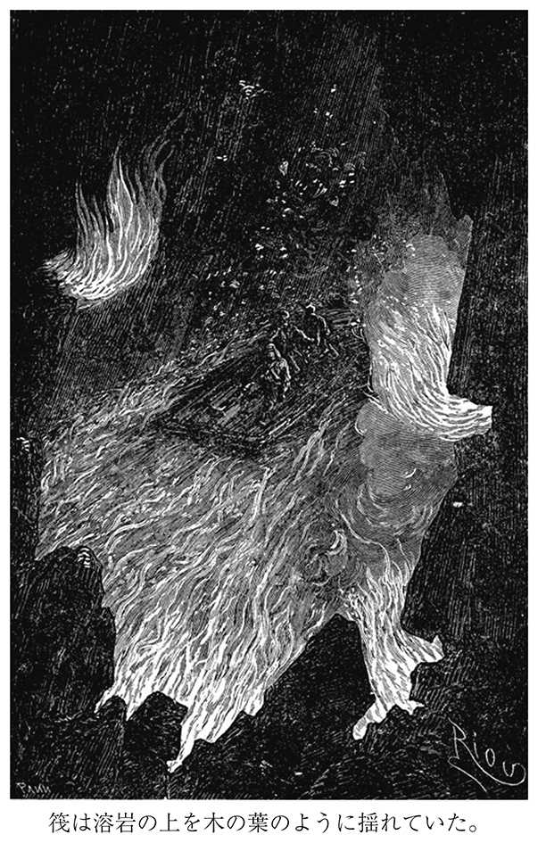
目を開けた時、私は誰かにがっしりとベルトをつかまれているのを感じた。見ると、ハンスがそこにいた。ハンスはもう片方の手で、叔父を支えていた。私はひどい怪我はしていなかった。ただ、身体の節々が痛んだだけだ。山の斜面に放りだされて、そこからころがり落ちたらしい。私のいるところは断崖の縁で、すぐ下には深淵が口をあけていた。そのまま斜面をころがりつづけていたら、真っ逆さまに下に落ちて、死んでしまっていたことだろう。それをハンスが救ってくれたのだ。
「ここはどこじゃ？」ハンスの腕から身体を離すと、不機嫌な口調で、叔父が尋ねた。どうやら、地上に戻ったのが、気に入らなかったらしい――そんなふうに、私には思えた。
私はハンスのほうを見た。ハンスは「わからない」と言うように、ほんの少し、肩をあげた。
「アイスランドですよ、きっと」私は言ってみた。
「ナイ」ハンスが答えた。
「なんじゃと？ アイスランドではないと？」叔父が言った。
「いや、ハンスはまちがっている。ここはアイスランドに決まってますよ」身体を起こしながら、私は言った。
だが、目の前に広がる風景を見て、心の底から仰天した。これまでさんざんびっくりするような旅を続けてきて、最後にまたこんな驚きが待っているとは！ 私は凍てついた氷河の向こうに、万年雪を頂いた鋭峰がそびえているのだとばかり思っていた。極北の空に青白い太陽が弱々しい光を投げかけているのだとばかり......。おそらく、叔父もそうだろう。いや、ハンスも最初はそうだったかもしれない。だが、私たちの予想とは裏腹に、そこは凍てついた氷河の上ではなかった。灼熱の太陽のもとで、地面が白く焦げた山の中腹だった。太陽はその炎で、私たちのことも焼き焦がそうとしていた。
私は自分の目が信じられなかった。だが、実際に太陽に焼かれて、身体が焦げるような感覚は否定しようがなかった。火口を飛びだした時、私たちは上着やベストを脱ぎすて、シャツとズボンだけの姿になっていた。その私たちに太陽は強烈な光を投げかけ、私たちの身体を熱してくれていた。スネッフェルス山の火口に入りこんでから、この二カ月間、私たちはいかなる恵みも太陽に望むことはできなかった。だが、今――こうして地上に出た今、太陽はその熱と光で、素晴らしい恩恵を私たちに与えてくれている。私はもう目の前の光景を信じるよりほかなかった。
そして、ひとたびこの光景を受け入れると、私はもはや、ここがアイスランドであるとは言えなくなっていた。だが、せめてスピッツベルゲン島のあたりだとしたら......。私はその考えにすがりついた。
と、叔父が言った。
「確かに、アイスランドではないな。アイスランドの光景とは似ても似つかん」
「でも、ヤン・マイエン島では？」
「いや、アクセル。それもちがう。ここは北の火山では絶対にない。その証拠に、花崗岩の岩肌もなければ、雪をかぶった峰もないではないか！」
「しかし......」私は言いつのった。
だが、そこで、叔父が叫んだ。
「見ろ！ アクセル、見ろ！ 後ろじゃ！」
その声に、後ろをふりかえってみると、私たちの頭上百五十メートルのところに火口が開いていて、煙がもくもくとあがっているのが見えた。と、突然、大きな爆発音がして、炎の柱が噴きあがり、軽石や火山灰がばらばらと降ってきた。溶岩も流れている。山が噴火したのだ。噴火はしばらく続いてやみ、また十分くらいして始まった。それを見ると、私は山が全身の力を込めて、呼吸をしているようだと思った。ちょうどクジラのように......。長い間、静かに息をためて、突然、その巨大な火口から噴煙や炎を噴きあげる姿は、まさしくクジラに似ていた。噴出した溶岩や火山灰、火山礫、火山弾などは、険しい斜面を降りて、下のほうまで広がっていった。いちばん下までは、七、八百メートルというところだろうか？ したがって、この山の高さは千メートルもないことになる。山の裾野は緑に覆われていて、私はその緑のなかにオリーブやイチジク、ブドウの林があることに気づいた。オリーブやイチジクはたわわに果実をみのらせ、ブドウの木も赤々とした房をつけていた。確かに、これは北の地方の景色ではない。私はここがアイスランドでも、ヤン・マイエン島でもないことを認めざるを得なかった。
さて、その緑の向こうには、美しい海が広がっていた。そうなのだ！ ここはまわりを水に囲まれた、幅数キロメートルの島なのだ。磁石で見ると（磁石はもうくるくる回るのをやめていた）、島の東には小さな港があって、その手前には何軒かの家がある。港では独特の形をした漁船が静かに波に揺られていた。その向こうには青い海原に小島がいくつか浮かんでいる。その数の多さに、私は巨大なアリ塚が並んでいるようだと思った。西に目をやると、はるか遠くに陸地があって、海岸線を丸く囲むように、青い山脈が北東に向かって走っているのが見える。そして、私の正面――つまり、真北まで来ると、陸地はそこでいったん切れて、細い水道を挟んで、またあらたな陸地が始まっていた。その陸地の奥には円錐形の高い山がそびえ、その頂上からは白い噴煙があがっていた。水道の北側にはどこまでも海が続いていて、太陽の光に波がきらめいている。はるか遠くには風に帆をはらませて航行する帆船のマストが見えた。
美しい......。あまりに美しい光景だ。それはまったく思いがけないものだったので、ますます美しく感じられた。
「でも、いったい、どこなんでしょう？ ここはどこなんでしょう？」私は小さな声で繰り返した。
だが、ハンスはその問題には興味がないというように目を閉じていた。いっぽう叔父はまったくわけがわからないといった顔で景色を眺めていた。
「まあ、ここがどこだとしてもじゃ」ようやく、叔父が言った。「少し暑いな。あいかわらず、噴火も続いているようじゃ。せっかく噴火中の火山のなかから飛びだして九死に一生を得たのに、火山弾を頭に食らって死んでしまっては元も子もない。まずは降りよう。そうすれば、必要な情報も手に入るじゃろう。それに、わしは腹が減って死にそうじゃ。喉も渇いておるぞ」
まったく、叔父は考えるよりも、行動が先に立つようだった。私は喉が渇いたことも、お腹がすいたことも、また早くどこかで休みたいという気持ちも忘れて、できることなら、まだずっとここにいたかった。だが、叔父やハンスが下に降りるというなら、それに従わなければならなかった。
山道の勾配はかなりきつかった。私たちは積もった火山灰に足をすべらせ、近くを通る溶岩流を避けながら、山をくだっていった。溶岩流は山腹を這う赤い蛇のように見えた。私は山を降りる間、ひっきりなしにしゃべっていた。ここはどこだろうと考えると、想像がどんどんふくらんで、言葉にして外に出さずにはいられなかったのだ。
「ここはアジアじゃありませんか？ ぼくたちはきっとインドの沿岸にいるんですよ。じゃなかったら、太平洋に浮かぶマレーシアの島のひとつか......。いや、ぼくたちは地球の中心を通りこして、ヨーロッパの対蹠地にいるかもしれませんね」
だが、それを聞くと、叔父が即座に否定した。
「いや、そんなことはない。なにしろ、磁石のことがあるからな」
「ああ、その問題がありましたね」私は当惑した。「磁石によれば、サクヌッセンム岬から、ぼくたちはずっと北を目指していました。だからこそ、ぼくもアイスランドに出たと思ったんですから......」
「磁石がまちがうはずはないし......」
「ありません！」
「竪穴のなかではくるくる回っていたが、あれは噴火の影響で、地磁気が乱れたせいじゃ。さもなければ、わしらは北磁極にいて、そのまわりをくるくる回っていたことになる」
「北磁極のまわりを？ まさか」
そうは言ったものの、サクヌッセンム岬から確かに北を目指していたはずなのに、どうして北の火山から出てこなかったのか、私にはさっぱりわからなかった。論理的に考えても答えは出ないので、あとはあれこれ想像するしかなかった。
そのうちに、私たちは緑にあふれる裾野の近くまで降りてきた。オリーブやイチジク、ブドウの木が密生しているのが見える。それを見ると、私たちはわくわくした。炎天下の道を二時間も歩いてきて、空腹も喉の渇きも激しくなっていた。そう思ったところに、果実のなる木々が姿を現わしたのだ。木々は自生していて、自由に実を採ってもいいように思われた。もっとも、これが誰かの畑であっても、この状況では気にも留めなかっただろう。ああ、オリーブの実を嚙んだり、イチジクの実をすすったり、赤く熟したブドウの実を房ごと頰ばったりするのは、どれほどの喜びだったろう！ それに、私はこの木々の近くの草原に、冷たい泉がわきでているのを見つけた。私たちはそこで贅沢に水を使って、思うぞんぶん、手や顔を洗った。
と、その時、オリーブの林から子供がひとり現われた。
「ああ、楽園の子供だ！」私は叫んだ。
それは粗末な服を着た、痩せて、貧弱な男の子だった。私たちの姿を見て、驚いたのだろう、一瞬おびえたような顔をした。いや、子供がおびえるのも無理はない。私たちは上着も身につけず、ひげも伸ばしっぱなしで、恐ろしげな外見をしていたのだから......。もしここが盗賊の島ではないのなら、誰が見たって、怖いと思うだろう。
子供はしばらく私たちの様子を見ていたが、さっと踵を返して逃げようとした。すると、たちまちハンスが飛びだして、子供をつかまえた。子供は何やら叫びながら、ハンスを蹴ったり、叩いたりして、なんとか逃れようとしたが、ハンスはいっこうに動ぜず、子供を連れて、私たちのところに戻ってきた。
「よしよし、いい子じゃ、いい子じゃ」なんとか子供を安心させようと、猫なで声を出すと、叔父がドイツ語で尋ねた。「坊や、この島はなんという名前かな？」
しかし、子供は答えなかった。
「ふむ。ここはドイツではないようじゃな」
そうつぶやくと、叔父は今度は英語で尋ねた。
だが、今度も子供は答えなかった。私は興味をかきたてられた。
「この子は口がきけんのか？」叔父が大声を出した。だが、叔父は世界じゅうのありとあらゆる言葉を話せるので、今度はフランス語で尋ねた。
だが、またしても、子供は答えない。
「よし、それではイタリア語で試してみよう」そう言うと、叔父はイタリア語で質問した。
「ドーヴェ・ノーイ・シアーモ？」
「そうだ！ ここはどこだ？」待ちきれなくなって、私も叫んだ。
と、叔父がとうとう怒りをおさえきれなくなったようで、子供の両耳をつかむと、前後に揺すって、大声を出した。
「こら、これでも話さんか？ コーメ・シー・ノーメ・クエスタ・イゾラ？ ここはなんという島じゃ？」
「ストロンボリ」子供はそう答えると、ハンスの手から逃れて、オリーブの林のほうに走っていった。
私は啞然とした。ストロンボリ島とは！ そんなことは考えてもみなかった。だが、それだけに、この思いがけない名を聞くと、私の胸は躍った。私たちは地中海の真ん中にいるのだ。ギリシア神話で、風の神アイオロスが住み、風と嵐を鎖につないで洞窟に閉じこめておいたというストロンギューレ島――アイオロスの島々であるエオリア諸島のストロンボリ島に......。すると、今、東に見える青い山脈はイタリアの爪先であるカラブリア半島だ。そして、南に見える火山は、あれはエトナ――これまでに何度も恐ろしい噴火をしているエトナ火山だ。
「ストロンボリ！ ストロンボリ！」気がつくと、私は声に出して言っていた。
すると、叔父もまた大げさな身ぶりを交えて、「ストロンボリ！ ストロンボリ！」と唱和した。私たちはふたりで合唱をしているみたいだった。
ああ、しかし、なんという旅だったのだろう！ なんという素晴らしい旅！ 私たちは火山から入って旅を始めて、別の火山から出てきたのだ。世界の果てに打ち捨てられたような島――アイスランドのスネッフェルス山から入って、そこから四千八百キロメートル（52）離れた、この地上でいちばん美しい地方にある神話の島――ストロンボリ島の火山から......。私たちは永遠の氷河に閉ざされた北の島をあとにして、緑豊かな地中海の南の島に到着したのだ。灰色の空に霧が立ちこめる土地をあとにして、紺碧の空に灼熱の太陽が輝く土地に......。
さて、こうして、ここがどこかがわかり、新鮮な水とおいしい果物で素晴らしい食事を終えると、私たちは港の方角に降りていった。だが、どうやって私たちがこの島にやってきたのか、この島の人々に正直に話すのは避けたほうがよいように思われた。イタリア人は迷信深い。ストロンボリ火山から出てきたなどと言ったりしたら、私たちのことを地獄の底から飛びだしてきた悪魔だと思うだろう。だから、船が遭難してここに流れついたとでも説明するしかない。あまり名誉なことではないが、そのほうが余計な面倒を引き起こさずにすむと思えた。
と、道を歩きながら、叔父がこうつぶやくのが聞こえた。
「それにしても、わしらは北に向かっていたのに、南から出てくるとは！ いったい、この事実をどう考えたらよいのじゃろう？ 説明がつかん」
「いいじゃないですか」自分たちのいる場所がわかったということもあって、私はそっけなく答えた。「説明がつかなければつかないで......。そんなものは放っておけばいいんです。それがいちばん簡単です」
それを聞くと、叔父は怒ったような声を出した。
「なんじゃと！ 仮にもヨハネウム学院の教授ともあろう者が説明を放棄して、〝真理の探究〟をあきらめてよいはずがない。それは恥というものじゃ！」
叔父はベルトに金貨や銀貨の入った革の巾着をつけ、よれよれのシャツとズボンを身につけただけの、みすぼらしい格好をしていた。だが、その格好で、眼鏡を鼻の上に乗せ、胸を張って〝真理の探究〟について語る姿は、自分にも人にも妥協を許さない、学者としての威厳に満ちあふれていた。
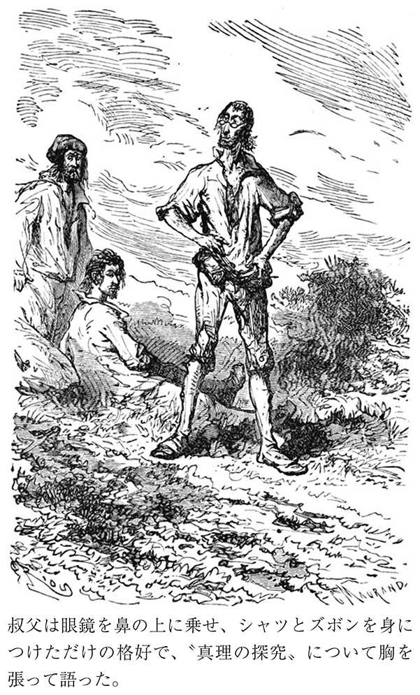
一時間後、私たちはサン・ヴィンチェンツォ港に着いていた（53）。そこで、ハンスは十一回目の賃金を要求した。今日は土曜日だったのだ。叔父は一リクスドラーの銀貨を三つ、ひとつずつ丁寧にハンスの手のひらにのせた。それから、私たちはハンスの手を固く握りしめた。
すると、ハンスは思いがけない行動をした。いや、もちろん、こういう時に私たちがするように熱く手を握りかえしたわけではない。だが、いつもに比べると、はっきりと感情をあらわにしたのだ。
ハンスは握った手の指先に、ほんのわずかに力を込め、唇の端で微笑んだのである。
52 実際は三千八百キロメートル。注37にも書いたように、ヴェルヌは実際の距離より一・二五倍ほど、長く見積もっている。
53 これはヴェルヌの勘違いで、ジノストラ港だと思われる。
これが私たちの旅行の顚末であるが、おそらくこの話を耳にしたら、普段、「どんな話を聞いても驚かない」と言っている人でも、決して信じようとはしないだろう。だが、信じたくなければ、それでかまわない。そう簡単にこの話が信じてもらえるとは、私だって思っていないからだ。
港に着くと、私たちは〝かわいそうな遭難者〟として、漁師たちから同情された。漁師たちは私たちに服をくれたり、食事をふるまってくれた。そして、二日後の八月三十一日の月曜日には、私たちは小さな帆船に乗ってシチリアのメッシーナまで行っていた。そこで、しばらく休養をとると、私たちの疲れはかなり回復した。
それから四日後の九月四日の金曜日、私たちはフランス帝国郵船の郵便船ヴォリチュルヌ号に乗り、さらに三日後の九月七日にはマルセイユの土を踏んでいた。すべては順調で、気がかりなことは何もなかった。ただひとつ、サクヌッセンム岬から北に向かっていたはずなのに、南にあるストロンボリ島に着いたことを除いて......。叔父に言われて以来、私もそのことが気になってしかたがなくなっていたのだ。そして、九月九日、私たちはついにハンブルクに到着した。
私たちを見て、家政婦のマルテがどれほどびっくりしたか、我が愛しのグラウベンがどれほど喜んだか。私の筆ではそれを表わすことができない。
「お帰りなさい、アクセル」グラウベンは言った。「今やあなたは英雄ね。これからは、もうわたしのそばを離れる必要はなくってよ」
私は彼女を見つめた。彼女は泣きながら笑っていた。
叔父が地底に行って帰ってきたということがハンブルクの人々にどれほど熱狂を巻きおこしたか、それは想像にお任せする。といっても、おしゃべりなマルテによって、この話が街じゅうに広まったのに、最初は誰もがなかなか信じようとはしなかった。そして、この話を聞いたあとで、叔父の姿を見ると、ますます信じなくなった。
しかし、アイスランドから情報が入ってきたり、何よりもハンスがいることで、世間の風向きは少しずつ変わっていった。
ハンブルクの人々は叔父を偉人として扱うようになり、私もまた偉人の甥ということになった。ハンブルクの市長は、私たちの偉業をたたえて、歓迎会まで開いてくれた。当日はヨハネウム学院で記念講演が行われ、叔父は今度の旅行の詳細を人々に語った（ただ、サクヌッセンム岬から地下に入った時に、北に向かっていたことはわざと省いた）。講演が終わると、叔父はその日のうちに、例の羊皮紙――サクヌッセンムが暗号を残した羊皮紙を市の古文書館に寄贈し、「本来なら、わしらはサクヌッセンムのあとに続いて地球の中心まで行くはずじゃった。それなのに、さまざまな状況から心ならずも途中で地上に出てきてしまった。それだけが、返すがえすも残念じゃ」と遺憾の意を表した。このように、自分が偉業を成しとげたとは思わず、つねに謙虚な態度をとったので、叔父の評判は高まった。
だが、こういった成功を目にすると、なかには必ずやっかむ人間も出てくる。今度の旅行の場合も例外ではなかった。特に学者の間からは......。批判の矛先は、「地球の中心は冷えている」という叔父の理論が、〝現代の科学の常識〟に反しているという点に向かった。だが、叔父は自分が経験した事実をもとに自説を曲げず、論文を書いたり、直接、議論をしたりして、世界じゅうの学者たちとわたりあった。
ただ、この点について言えば、私もまた「地球の中心は冷えている」というハンフリー・デーヴィーと叔父の理論は認めていなかった。自分が経験した事実にもかかわらず、私は「地球の中心が燃えている」と信じていたからである。これからもその考えは変わらないだろう。ただ、ある特殊な状況では、なんらかの物理学的な法則が働いて、地下に潜っても気温があがらないことがあるのだろう。それだけは認めざるを得ないと思っている。
さて、そういった論争が華やかに展開されている頃、ひとつ悲しい出来事があった。叔父がさんざん引きとめたのに、ハンスがハンブルクを去ることになったのである。ハンスには一生返しつづけても返しきれない借りがあった。私たちはハンスにハンブルクにいてもらって、少しでもその借りを返したかったのだが、ハンスは結局、その機会を与えてくれないことになった。望郷の念に駆られて、アイスランドに帰りたいと言いだしたのだ。
「ファルヴェール」そうひと言、簡単に別れの言葉を告げると、ハンスはある日、レイキャヴィークに戻っていった。その後、アイスランドから来た知らせによると、どうやら無事に着いたらしい。
旅の間、私たちはハンスに頼りっぱなしで、何度も命を救われた。だから、目の前からいなくなっても、ハンスのことは忘れようがなかった。私は死ぬ前にもう一度、ハンスに会うつもりだ。会うまでは死なないと決心している。
最後にもうひとつ、つけ加えておくと、この『地底旅行』は世界じゅうのあらゆる言語に翻訳されて、それを読んだ人々に熱狂的な興奮をもたらした。最も権威のあるものまで含めて、新聞や雑誌は主要な旅のエピソードをこぞって紹介し、解説や論評を加え、批判や支持を表明した。世間はこの旅を信じる者、信じない者の二手に分かれ、どちらの陣営も同じくらい熱心に自説を掲げて、大論争を繰り広げた。どんなに偉大なことを成しとげても、まだ生きているうちからこれほど評判になることは珍しい。だが、叔父はその珍しいケースに属し、喜んでその栄誉を受け入れた。いや、実際、叔父の名前は世界じゅうに知れわたっていた。なにしろ、あのインチキ興行師のバーナムまでが、「アメリカ合衆国で叔父を〝展示〟したい」と言って、莫大な契約金を提示してきたくらいなのだから......。
こういった栄光に包まれながらも、そのなかで、ただひとつ、私たちの胸にひっかかっていたことがあった。例の「北に向かっていたのに、ストロンボリ島に着いてしまった」という問題である。この問題はいっこうに解決していなかった。そして、叔父や私のような学問の徒にとって、科学で説明できない現象があるというのは、精神的な拷問に等しかった。だが、天はそれに対する説明もちゃんと用意してくれていて、叔父と私はようやく喉に刺さっていた魚の小骨がとれたような幸せな気持ちになった。
それは、旅行から帰って半年くらいたったある日のことだった。私は叔父の書斎で鉱物の標本を整理していたのだが、ふと棚の隅に置いてあった磁石に目をやった。この磁石がサクヌッセンム岬で洞穴に向かって北を差していたので、話がややこしくなっていたのだ。
磁石はこの半年間、自分がどれほど、私たちの頭を悩ましていたか、まったく知らない様子で、じっとひとつの方向を差していた。
その磁石の針を見た瞬間、私は思わず、大声をあげた。その声に驚いて、叔父が駆けつけてきた。
「どうした？ 何があったのじゃ？」
「磁石が......」私は答えた。
「磁石がどうした？」
「針が南の方角を差しているんです。北の方角ではなく......」
「なんじゃと？」
「見てください。磁極が反対になっているんです！」
「反対じゃと？」
叔父は磁石の方位盤を見つめると、実際の方角と、磁石が差している方角を比べ、それから跳びあがって喜んだ。いや、実際に跳びあがったので、家が大きく震動したくらいだった。
これでようやく疑問が解けたのだ。私は目の前の霧が突然、晴れたような気がした。おそらく、叔父もそうだったろう。
「つまり、こういうことか？」興奮がおさまると、叔父が言った。「こいつはサクヌッセンム岬で実際とは反対の方角を差していたわけか？ 南に向かっているのに、北を差して......」
「そうだと思います」
「それなら、ストロンボリ島に着いたのも不思議ではない。だが、どうして磁極が反対になってしまったのじゃろう？」
「そんなことは簡単ですよ」私は答えた。
「よし、アクセル、説明したまえ」
「リーデンブロック海で嵐にあった時に、電気の火の玉が出てきましたね。あの火の玉は筏の上にある鉄製のものを強く磁力でひきつけていました。その時に磁石の極が反対になったんですよ。だから、嵐のあと、ぼくたちはグラウベン港のある北岸に戻ったのではなく、南岸に着いたのです。サクヌッセンム岬は、リーデンブロック海の南にあったのです！」
「そういうわけじゃな」叔父は笑いながら答えた。「ふむ。電気の火の玉によって、一瞬にして磁石の極が変わったとすると、これぞまさに電光石火の早業じゃ」
この時から叔父は世界でいちばん幸福な学者になった。そして、私は世界でいちばん幸福な男になった。というのも、我が愛しのヴィールラント娘、かわいいグラウベンが養女としてではなく、姪として、また新妻として、ケーニヒ通りの家で暮らすことになったからだ。あらたにグラウベンの叔父になる人とは、五大陸すべての地質学会、鉱物学会のメンバーにして、世界じゅうに名を馳せたオットー・リーデンブロック教授、その人であることは言うまでもない。
高野 優
ヴェルヌはＳＦ（サイエンス・フィクション――空想科学小説）の祖と言われているが、この「空想」と「科学」の関係は、作品によって変わってくる。かなり大ざっぱな分け方で申し訳ないが、たとえば、『海底二万里』や『月世界旅行』などは、将来実現されそうな科学をもとにして、未来の姿を先取りして空想したものである（その点では、時代が未来でなくてもかまわない）。これに対して、『八十日間世界一周』は、当時の科学が生みだした技術をもとにして、「この科学技術のもとで、現在、人類はどのくらい早く世界を一周できるか？」を空想（思考実験）したものである。
では、この『地底旅行』はどうか？ この作品でも「科学」がもとになっているのはまちがいない。だが、「空想」はどこに向かっているのだろう？ いや、その前に、そもそも『地底旅行』は空想科学小説なのだろうか？ そこでこの「解説」では、まず『地底旅行』における「科学」と「空想」の関係について考えてみたい。
『地底旅行』における科学
最初は「科学」である。ここで問題になるのは、この小説の「科学」についての知見が、その当時の科学知識に照らしあわせた時、どこまで正確かということである。つまり、ヴェルヌはどこまで当時の最先端の科学知識を調べて自分のものとし、またどこまで忠実にその知識を作品に反映させたのか？ 換言すれば、どこまで科学に忠実にこの作品を書いたのか？
そういった観点からすると、この作品を書くにあたって、ヴェルヌが鉱物学、地質年代学、火山学を始めとする地学や、古生物学を含む博物学、そして物理学や化学など、広範な科学の知識を自家薬籠中のものとしていたことはまちがいない。その中心になるのはもちろん地学だが、その博識ぶりから見ると、この小説が当時の教養人に向けた「地学の啓蒙小説」だったのではないかと思えるほどである。
たとえば、地質年代学。矢島道子・和田純夫編、『はじめての地学・天文学史』によると、近代的な地質学が勃興したのは、十八世紀から十九世紀にかけてのことで、十九世紀の初めには地層の重なりと、そこに含まれた化石から、地球の歴史を表わす「地質年代」が現在のものにかなり近い形で分類されるようになっていた。現在でも使われている《シルル紀》、《デヴォン紀》、《ペルム紀》、《ジュラ紀》などの地質時代の名前は、この小説が書かれる三十年から四十年ほど前につけられたものだが、ヴェルヌはそれ以前になされたヴェルナーの分類に重ねる形で、当時のこの最新の研究の成果を作品に取り入れている。また、さまざまな年代の地層に含まれた化石からは古生物学が誕生するのだが、これについてもヴェルヌは当時の先端の知識を作品にちりばめている。そのほかにも、この作品ではアイスランドの火山の知識や、マグマが冷却する時に生じる柱状節理の知識など、さまざまな科学知識が紹介されている。
もうひとつ、ヴェルヌがどれほど新しい科学知識に敏感で、それを意欲的に作品に反映させていたかは、本書の次のような記述を見てもわかる。《シルル紀の地層、それからデボン紀の地層と、地下道を進むにつれて、私たちは動物の変化の歴史をたどっていた。その変化はやがて人類を生みだし、人類が動物界の頂点に達するのだ》。これはまさにダーウィンの「進化論」にのっとった記述である。ダーウィンが『種の起源』を上梓したのは一八五九年。『地底旅行』が刊行されたのが一八六四年であるから、科学知識に対して貪欲なヴェルヌがその内容を知らなかったはずはない。また、ダーウィンが地質学者であったことでもわかるように、「地学」と「進化論」には深い関わりがあるので、地学的な知識を広げていくなかで、ヴェルヌが『種の起源』に出会った可能性もある。ヴェルヌはおそらく『種の起源』が刊行されてまもなく、その内容を知り、「生物は進化する」という考えをすんなりと受け入れて、作品に取り入れたのだろう。あるいは、『地底旅行』が今の形になったのには、「進化論」が大きく関係しているとさえ言えるかもしれない。
それはともかく、本書が当時の科学の先端的な知識をふんだんに盛り込み、その意味ではきわめて科学に忠実な態度で書かれているのはまちがいない。したがって、本書が「科学小説」であるのは確かなのだが、では、「空想」の部分についてはどうなのだろう？
『地底旅行』における空想
本書を最初から読みすすめて、第30章で、主人公のアクセルとともに、地球の内部に大きな空洞があり、そこには海が広がっていると知った時、たいていの読者は驚くだろう。それまでの「科学小説」としてのたたずまいが消え、小説は突如、奇想天外な「空想小説」――すなわち、ファンタジーの趣きを呈してくるからである。すると、この小説は前半が「科学小説」で、後半が「ファンタジー」である、そういった構成の小説なのだろうか？ 「科学」から「空想」が広がる「空想科学小説」――すなわち、ＳＦではないのだろうか？
それを知るために、とりあえず逆方向から、「では、本書がＳＦになるためにはどういう条件が必要か？」ということについて考えてみよう。そうすると、たとえば、次のような条件が考えられる。それは、「当時の科学知識からして、『地球の内部には空洞がある』という学説がある程度信憑性のあるものとして受け入れられていた」ということ......。この場合は、その学説にもとづいて、地球の内部の様子を「科学的に空想する」のであるから、この作品が「ファンタジー」であるとは言えない。この作品は「ＳＦ」である。
そう思って、当時の学説を調べてみると、実は「地球の内部に空洞がある」というのは、それほど非科学的な発想ではなかったことがわかる。たとえば、イギリスの天文学者エドモンド・ハレーは十七世紀の後半に、極地方の磁気変動を説明するために「地球空洞説」を唱えている。また、スイスの数学者オイラーは十八世紀の後半に、地球の中心に直径約千キロメートルの太陽が存在するという説を発表している。また、同じ頃、本文でも触れられているように、イギリスの物理学者ジョン・レスリーが地球の内部ではプルートとプロセルピナというふたつの星がまわっているという説を唱えている。
だが、そういった説が十九世紀の中頃に信憑性のある学説として受け入れられて、なかんずくヴェルヌがその説を科学的に正当なものとして信じていたとは考えられない。「地球空洞説」はファンタスティックな世界を生みだすためのきっかけにすぎなかったか、そうでなければ、何か別の目的を達成するための「装置」として使われたのである。
ＳＦとしての『地底旅行』
ヴェルヌは「地球の内部に空洞がある」とは信じてはいなかった。それを確かめるためには、当時の科学が地球の内部をどのように捉えていたか、それを探ってみればよい。現代の私たちは「地球の内部が熱く燃えている」ことを知っている。地球の表面は約四十キロメートルの厚さの《地殻》で覆われていて、その下には《マントル》と呼ばれる層があって、そのうちの一部が溶融してマグマを生成している。もしそうなら、地球の内部に空洞などないことになる。では、ヴェルヌの時代はどうだったのか？ この小説の主人公のひとりであるオットー・リーデンブロック教授が言うように、「地球の内部のことなど、誰にもわかっていない」状態で、「地球の中心は冷えている」と考える科学者たちも大勢いたのだろうか？ それとも、この小説のもうひとりの主人公であり、語り手でもあるアクセルが言うように、「地球はかつて火の玉として燃えていて、それが表面からだんだん冷えて、今の状態になった」と考えていたのだろうか？
そこでまず、オットー・リーデンブロック教授が主張する「地球の中心は冷えている」という説について考えてみると、教授の説のもとになっているのは、十九世紀前半に活躍したイギリスの化学者ハンフリー・デーヴィーが言った「地球はかつて表面だけが燃えていた」という説だが、実際にデーヴィーがそういった説を唱えたという裏付けはとれていないし、その説を証明するために、カリウムとナトリウムを主成分としたボールの表面の割れ目に露を垂らして、小さな火山をつくる実験をしたということもあったとは思えない。そもそも、その説自体に根拠があるかどうかも疑わしい。事実としてまちがいなく言えることは、デーヴィーが電気分解によってナトリウムやカリウムを単体で取り出すのに成功したこと、また、ナトリウムやカリウムが水と反応して燃えることくらいである。
その反対に、「地球はかつて火の玉として燃えていた」という考え方は、科学的な知見をもとに十七世紀には生まれていて、ニュートンはこの考え方をもとに地球の年齢を五万年と見積もっていた。それはつまり「火の玉が冷めるにはそのくらいの時間が必要だろう」ということだが、これを発展させて、十八世紀の後半にはフランスのジョルジュ・ビュフォンが鉄球を熱して、それが冷えるまでの時間を測るという実験を行い、そこから地球の年齢を七万年と推定している。また、イギリスのケルビン卿ウィリアム・トムソンは一八六二年にフーリエ級数を用いて熱球の冷却速度を計算し、そこから地球の年齢を数千万年から長くて四億年と考えた。これを見てもわかるとおり、少なくとも、この小説が書かれた十九世紀の中頃には、「地球はかつて火の玉として燃えていて、だんだん冷えていった」という説が主流だったと考えられる。
ということからすると、当時の科学常識からして、「地球の中心は冷えている」というリーデンブロック教授の説はまちがっているし、「地球空洞説」も否定される。ヴェルヌももちろん、そんな説は信じていなかった。では、ヴェルヌは第30章以降を、「科学」からはかけ離れた「ファンタジー」として書いたのだろうか？
おそらく、そうではあるまい。その証拠に、いったん「地球の内部に空洞があり、そこに海があって、明るく照らされている」と設定をしたあとでは、なぜそこに空洞があるのか、海があるのか、光があるのか、ヴェルヌはできるかぎり科学的に説明しようとしている。また、その地下世界には、マンモスの番をする巨人の影を除いては、空想上の生物は出てこない。科学から離れて、空想の翼を広げようとしたりはしないのだ。それよりも、ヴェルヌはこの地下世界を「過去の地球」に見立て、その世界がどんなものであったのか、当時の地学、古生物学の知識を総動員して、その姿を科学的に忠実に再現しようとしている。そうなのだ！ この小説は「科学」をもとに過去の地球を「空想」した「タイム・トラベル小説」なのである。そして、この小説のＳＦとしての本質は、まさにそのタイム・トラベル性にある。
そう考えると、どうして地下に巨大な空洞がなければならなかったかも理解できる。だいたい、地層は過去から積みかさなっているのだから、地下に降りるということは、そのまま地球の歴史をさかのぼるということである。だが、どうせ歴史をさかのぼるなら、本当に過去の地球に行き、その時の地球の姿がどんなものであったのか、実際に目にしたほうが面白い。そこで、地下に広大な空間をつくり、過去の姿を保存して、主人公たちが出会えるようにしたのだ。その意味で、「地球空洞説」は、過去の世界に行き、その世界を見るための「装置」――いわば、タイムマシンとして使われたのである。
究極のタイム・トラベル――「アクセルの夢」について
それでは、この『地底旅行』で、地球の歴史をさかのぼっていく旅は、どこまで続くのだろうか？ 本書の説明によると、主人公たちが地下の世界で発見した海は、ジュラ紀の海で、そこにはプレシオサウルスやイクチオサウルスといったジュラ紀を代表する大型生物が棲息している。しかし、だからといって、この小説におけるタイム・トラベルがジュラ紀で終わってしまったわけではない。タイム・トラベルは、太古の地球を夢想する「アクセルの夢」によって、地球が誕生した時点まで続いてしまうのだ。夢のなかでアクセルは第四紀更新世からジュラ紀、石炭紀、シルル紀、初源岩類の時代をさかのぼり、ついには自分自身も原子になって、ガスの塊になった地球の原子とひとつになってしまう。《このガスの塊の中心で、私は直接、宇宙空間に浮かんでいた。私の身体は粉々に砕け、やがてそれもまた蒸気となって、地球の蒸気と――今はただ赤く燃えながら、巨大なガスの集積となって、かろうじて球形を保っている地球の蒸気とひとつになった。私は原子となり、地球を形づくっていた無数の原子に混ざった......》
この部分を読みかえすたびに、私は感嘆せざるを得ない。まずは「物質は原子でできている」という考え方を採用しているのが、当時としては革新的である（近代的な原子説は、十九世の初頭にイギリスの化学者ドルトンによって提唱されたが、二十世紀初頭まで、科学者によっても疑われていた）。また、「神が人を創造した」とするキリスト教的な世界にあって、「人はほかの生物から進化した」という「進化論」の考え方を受け入れただけではなく、「私」がすべての物質を構成する「原子」にまで還元されて、地球を形づくっていた無数の原子と混ざってしまうとは！ これは宗教的な観点からしても革新的だろう（この部分を読んだ時、私は「これは般若心経だ！」と思ってしまった）。そして、これが宗教的に革新的なら、哲学的にも革新的である。地球の歴史をさかのぼるタイム・トラベルは、「アクセルの夢」を通じて、タイム・トラベルをすること以上の高みに達したのだ。それは『地底旅行』がより高次のＳＦになったということも意味する。
というのも、「科学」の最先端の知識が、「宗教」や「哲学」にも影響を与え、この三つを切り離せないものとして考えるというのは、きわめて現代的だからである。この小説が書かれた十九世の中頃は、「科学」は「宗教」と対立し、「哲学」とも別のものであったろうと思われる。そのなかにあって、この「アクセルの夢」の最後の部分は、「科学」と「宗教」と「哲学」を包括的に考えることが要求される「現代の状況」を予言している。タイム・トラベルの要素とはまた別に、「科学」から出発して新しい世界観を提示したという意味で、『地底旅行』は高度にＳＦ的だと言えよう。ヴェルヌ、恐るべしである。
★は同年のフランス社会史など
一八二八年
二月八日、ナント市の弁護士の父ピエール・ヴェルヌ、母ソフィー・アロット・ド・ラ・フュイの長男として生まれる。
一八二九年 一歳
弟のポール誕生。
一八三七年 九歳
妹アンナ誕生。ナントのサン＝スタニスラス寄宿学校に入学。
一八三九年 一一歳
妹マチルド誕生。
一八四〇年 一二歳
兄弟でナントのサン＝ドナシアン小神学校に転校する。
一八四二年 一四歳
妹マリー誕生。
一八四三年 一五歳
ナント王立中学に進学。
一八四六年 一八歳
大学入学資格試験に合格。
一八四七年 一九歳
四月、パリへ出て、大伯母のシャリュエル家からパリ大学に通学し、法学を学ぶ。エルミーヌ・アルノ＝グロスティエールに熱烈な恋をするが、翌年、彼女は結婚して、失恋する。
一八四八年 二〇歳
パリの文学サロンに通うようになる。
★二月革命、起こる。
一八四九年 二一歳
一月に法学士号を取得するが、文学と演劇に傾倒する。アレクサンドル・デュマ・フィスと親交を結び、さまざまな作家、文化人を紹介される。
一八五一年 二三歳
「家庭博物館」誌で短編小説が掲載される。
★一二月二日、ナポレオンの甥のナポレオン・ボナパルトがクーデターを成功させ、第二帝政時代が始まる。
一八五二年 二四歳
父の仕事を継ぐことを拒否し、リリック座の秘書になる。
一八五三年 二五歳
弟ポール、ハイチから帰国。
一八五六年 二八歳
経済状態が逼迫し、証券取引所で働く。
一八五七年 二九歳
一月一〇日、オノリーヌ・ド・ヴィアヌと結婚。
一八五九年 三一歳
友人イニャールとスコットランドを旅行。
一八六一年 三三歳
イニャールらと共に、ノルウェーとスカンジナヴィアを旅行。
八月三日、息子ミシェルが生まれる。
一八六二年 三四歳
編集者エッツェルと出会い、最初の出版契約を結ぶ。
一八六三年 三五歳
一月三一日、『気球に乗って五週間』（Cinq semaines en ballon）刊行。
一八六四年 三六歳
エッツェル書店から「教育娯楽雑誌」が刊行され、『ハテラス船長の冒険』（Voyages et aventures du capitaine Hatteras）の連載がはじまる。
『地底旅行』（Voyage au centre de la terre）刊行。
一八六五年 三七歳
『月世界旅行』（De la terre à la lune）刊行。
ソム川河口の港町ル・クロトワで大型のボートを購入。〈サン＝ミシェルⅠ世号〉と名付ける。
一八六六年 三八歳
証券取引所をやめ、ル・クロトワに居を移す。
一八六七年 三九歳
弟ポールと共にアメリカへ旅行する。
一八六八年 四〇歳
〈サン＝ミシェルⅠ世号〉で仕事をする。
『海底二万里』（Vingt mille lieues sous les mers）を執筆し、第一部を完成。
一八六九年 四一歳
「教育娯楽雑誌」で『海底二万里』の連載がはじまる。
一八七〇年 四二歳
レジョン・ドヌール勲章シュヴァリエを受勲。共和国政府によりクロトワの沿岸警備隊に配置される。
『月世界へ行く』（Autour de la lune）刊行。
★七月一九日、普仏戦争勃発。九月二日、ナポレオン三世が捕虜となる。九月四日、第三共和制となり臨時政府が樹立。パリ、包囲される。
一八七一年 四三歳
一一月三日、父親ピエール・ヴェルヌ、死亡。
★パリ砲撃始まり、一月二八日、休戦条約が成立。政府はヴェルサイユに逃亡し、パリ・コミューン（革命自治政府）が結成される。
一八七二年 四四歳
『八十日間世界一周』（Le tour du monde en quatre-vingts jours）が「ル・タン」紙に連載される。《驚異の旅》シリーズがアカデミー・フランセーズ賞を受賞。
アミアン・アカデミー会員に選出。
一八七三年 四五歳
『八十日間世界一周』刊行。
アミアンにて、二四分間気球に搭乗。
一八七四年 四六歳
短編集『オックス博士』（Le docteur Ox）刊行。ポルト・サンマルタン座で、劇作品『八十日間世界一周』が上演され、大当たりとなる。
一八七五年 四七歳
『神秘の島』（L'île mystérieuse）刊行。『チャンセラー号―Ｊ＝Ｒ・カザロンの日記』（Le Chancellor: journal du passager J.-R. Kazallon）刊行。
一八七六年 四八歳
〈サン＝ミシェルⅡ世号〉購入。妻のオノリーヌが重い病気になる。
一八七七年 四九歳
〈サン＝ミシェルⅢ世号〉購入。感化院に入れられ反抗する息子ミシェルを、ナントの高等学校に入学させ、自身もナントにアパートを借りる。
一八七八年 五〇歳
息子の反抗はおさまらず、ボルドーからインド行きの船に乗せる。
〈サン＝ミシェルⅢ世号〉の最初の周航（リスボン、タンジール、ジブラルタル、アルジェ）。
一八七九年 五一歳
〈サン＝ミシェルⅢ世号〉の第二回周航（イングランドとスコットランド）。
一八八〇年 五二歳
デンマーク、アイルランド、スコットランド、ノルウェーに旅行。
一八八一年 五三歳
〈サン＝ミシェルⅢ世号〉の第三回周航（オランダ、ドイツ、デンマーク）。
一八八二年 五四歳
アミアンのシャルル＝デュボワ通り二番地に転居。
一八八四年 五六歳
〈サン＝ミシェルⅢ世号〉の四度目にして最後の大周航で地中海（北アフリカとイタリア）をめぐる。
一八八六年 五八歳
〈サン＝ミシェルⅢ世号〉売却。
金を無心にきた弟ポールの息子のガストン・ヴェルヌによって拳銃で撃たれ、以後足が不自由となる。
三月一七日、編集者エッツェル、死亡。
一八八七年 五九歳
二月一五日、母親のソフィー・ヴェルヌ、死亡。
一八八八年 六〇歳
アミアンの市会議員に選出される。
『二年間の休暇』（Deux ans de vacances）刊行。
一八九二年 六四歳
レジョン・ドヌール勲章オフィシエを受勲。
一八九六年 六八歳
『国旗に向かって』（Face au drapeau）刊行。
一八九七年 六九歳
八月二七日、弟のポール、死亡。
『氷のスフィンクス』（Le sphinx des glaces）刊行。
一九〇二年 七四歳
『旅行給費』（Bourses de voyage）を執筆する。
一九〇四年 七六歳
健康状態が悪化するも『海の侵入』（L'invasion de la mer）を執筆する。
一九〇五年
三月二四日、ヴェルヌ、死す。享年七七。死因は糖尿病。
実は、訳者は子供の頃に『地底旅行』を読んだことがなかった。そこで、光文社の編集部から「今度は『地底旅行』はいかがですか？」とお話をいただいた時に、初めてこの作品に触れたのであるが、最初に一読した時の感想を言うと、「なんだ、これは？」というものであった。リーデンブロック教授は、一流の科学者だという触れ込みなのに、「地球の中心は冷えている」という、科学的には信じられないような説をもとに、地球の中心に向かうことしか考えない。水は地下に潜ればなんとか手に入ると言うし、中心まで降りたあと、またのぼってくることは考えない。これはどう見ても、甥のアクセルの言うことのほうがまともなのに、その意見はなかなか受け入れられない。ハンブルクを出発したあとは、デンマーク、アイスランドの旅を続けて、地底旅行に入る前に小説は三分の一以上進んでしまうし、ようやく地下の探検が始まったと思ったら、小説がまた三分の一近く進んだところで、地下の世界に忽然と大海が姿を現わすのである。私は「なんだ、これは？」と思い、この小説をどう捉えたらよいのかわからなくなってしまった。
だが、もちろん、そんな状態では、この本は訳せない。原作をどう捉えたらよいかわからず、原作の魅力を感じることができないのであれば、翻訳はできないからである。ついでにこうるさいことを言えば、してはいけないからである。そこで、せっかく「この作品を次回訳の候補にしてみませんか？」ということだったのだが、「これはちょっと......」とお断りするつもりでいた。
ところが、それから時間がたつうちに、妙にこの作品が気になりはじめたのである。なぜだか知らないけれど、このままこの作品と別れてしまうのは惜しいような......。つまり、理由はわからないが、この作品に魅力を感じはじめたのだ。そして、そのまましばらく考えているうちに、はたと思いついたのである。「リーデンブロック教授って、なんだか無茶苦茶な人だよなあ。猪突猛進型で、でも、憎めない。まるで、ドン・キホーテのようだ」と......。
すると、その瞬間、この作品の魅力がはっきりしてきたような気がして、それならこの作品が訳せると思った。また、訳したいと思った。そして、さっそく、本書を読みかえしてみたところ......。リーデンブロック教授をドン・キホーテだと考えると、本書はとってもよくわかる。そのうえ、とっても面白いのである。最初に読んだ時には、「一流の科学者」なのに、「科学的に怪しげな説を唱える。水のことも考えない。帰り道はのぼってこなければならないのに、その点も気にしていない」と釈然としない思いをしていたのだが、「一流の科学者」というのは世を忍ぶ仮の姿で、その実体がドン・キホーテだとすれば、常識にとらわれないのはあたりまえ、いったん目的を決めたら、もうそれしか見えない、ただひたすら目的に突き進むのは当然だと思えてきたのである。
また、もしリーデンブロック教授がドン・キホーテなら、サンチョ・パンサはハンスである。ハンスは教授の言うことが、どれほど常識から逸脱していても、決して異を唱えることなく、教授についていく。そうなったら、ただひとり、まっとうな感覚を持つ語り手の「私」――アクセルに何ができよう？ そうなのだ！ この小説は、アクセルという合理的な精神を持つ、まともな人間がドン・キホーテとサンチョ・パンサの旅に巻きこまれて、常識的な感覚を揺さぶられる話なのだ。実際、一流の科学者であるのに、教授はちっとも合理的ではない。植木鉢に植物を植えたら、早く成長させたくて、毎朝、葉っぱを引っ張るし、アクセルが地球の中心に向かう危険を科学の理論で説明しようとすると、「理論なんぞ、くそくらえだ！ そんなものは、わしらの邪魔をするためにあるようなものではないか！」と答える（これが科学者の言葉だろうか？）。また、ハンスは教授がどんなに非合理な提案をしても、いつも黙ってそれに従う。まわりを合理的ではない人間に取り巻かれているという意味で言えば、アクセルの婚約者、グラウベンだって合理的ではない。なにしろ、アクセルの心配を無視して、熱心に地底旅行を勧めてしまうのだから......。
こうして、アクセルは誰ひとり、まわりに合理的な人間がいない状況で、非合理の権化のような叔父にひきずられて旅に出るのだが、リーデンブロック教授とハンス――つまりドン・キホーテとサンチョ・パンサと一緒に地下を探検するうちに、少しずつふたりに感化されて、自分が信じている科学では説明のできない世界を受け入れていく（もちろん、最後のほうまで、いろいろと抵抗は示すのだが......）。これは合理的な精神が非合理なもの――たとえば、「情熱」に屈服した話なのである。表面的には「科学」を装いながら、その実、根本的なところでは、合理的なものをどこかで否定している。それがおそらく、この作品の、「ＳＦ」としてではなく、「文学」としての意味だろう。そう考えると、ＳＦとしてはタイムマシンの機能を果たしていた「地下の空洞」は、文学としては非合理的な世界の象徴としての役割を果たしている。だが、別にそこで戸惑うことはない。私たちはただ、ＳＦとしての解釈の上に、文学としての解釈を重ねあわせてやればよいだけだからである。この作品はＳＦとしてはタイム・トラベル小説だが、文学としてはドン・キホーテ的なアンチ合理主義の小説なのだ（もっとも、それを「科学小説」の枠組みのなかでするところが、ヴェルヌのすごいところなのだが......）。ちなみにこの小説で、地下に降りるまでに全体の三分の一の分量を使ったのは、教授のドン・キホーテぶりを通じて、アクセルや読者を少しずつ非合理的なの世界に慣らすためだったのだろう。この部分は旅行記としても面白い。
ということで、訳者にとっては、リーデンブロック教授をドン・キホーテと考えたことで、「この小説を訳すことができるのではないか」という展望が開けてきたのだが、実際に訳すためには、その前にひとつやらなければならないことがあった。それは教授が地球の中心を目指す根拠になっているハンフリー・デーヴィーの「地球の中心は冷えている」という説が、この小説の書かれた一八六四年の時点から見ても、まちがった説だと確認することだった。この説が当時、広く信じられているようであれば、リーデンブロック教授はドン・キホーテにはならなくなってしまうからである。
幸い、調べてみると、「解説」で述べたように、当時、そういった説が信じられていた様子はなく、ハンフリー・デーヴィーがこの説を唱えたという記述や、「ナトリウムとカリウムを主成分としたボールを地球に見立てて露を垂らす実験を行ったら、たちまち反応が起こって、小さな火山ができて爆発した」という記述にぶつかることもなかった（この小さな火山のエピソードはもちろん、教授の強弁ぶりをからかう作者のユーモアだろう）。また、作品のなかでも、アクセルが「ハンフリー・デーヴィーの説など、絶対に認めない」と何度も言っているが、これはヴェルヌが科学的に正しいのはアクセルのほうだと、きちんと言っておきたかったからだと思われる。
さて、こうして、リーデンブロック教授が科学的に根拠のない説を信奉していると確認できたおかげで（教授は理論はどうあれ、地球の中心に行きたかったのだ）、訳者はこの小説をリーデンブロック教授＝ドン・キホーテ説をもとに訳すことができるようになった。したがって、本書では教授の一人称や話し方はもちろん、セリフや行動もそれにもとづいて訳している。必要だと判断した場合は、傍点などによる強調も行った。翻訳は訳者の解釈にしたがってするものである以上（もちろん、それはなるべく原文に寄りそって、文脈がきちんとつながるよう合理的に考えた結果としての解釈であるが）、そういった訳になったのは必然である。ご理解いただきたい。語学的に正しく理解して、それを丁寧に日本語にしただけでは、作品にはならないのである（と訳者は思う）。音符どおりに正確に弾いただけでは、音楽にならないのと一緒である。
翻訳について、もう少し言うと、今回の作品では調べ物に苦労した。ヴェルヌの書いていることが科学的に正しいかどうかチェックするのは当然のことであるが、その時に、現在の知識から見て正しいかどうかではなく、当時の知識から見て正しいかどうかが問題になったからである。たとえば、文中に出てくる地層の年代が調べたものとはかけ離れていて、それが「当時は地層の相対的な古さはわかっていても、絶対的な年代までは正確にわかっていなかった」せいだと突きとめるまでに、ずいぶん時間がかかった。また、現代使われている言葉でも、「これはヴェルヌの時代に使われていたのか？」と疑い、確認する必要もあった。そのため、「恐竜」という言葉は使えなかったし、「進化」という言葉も使えなかった。「進化」（evolution）については、ダーウィンの『種の起源』の初版（一八五九年）には使われておらず、この小説が書かれたあとに刊行された第六版（一八七六年）で、ようやく出てくるのである。
それから、科学的な問題とは別に、これは明らかにヴェルヌの勘違いではないかと思われる情報もあった。特に日付についてはそれが顕著で、どう考えてもあり得ない記述が数箇所あった。また距離のほうでも、スネッフェルス山からストロンボリ島までは、実際は三千八百キロメートルなのに、ヴェルヌは四千八百キロメートルと見積もっている。こうした勘違いは、訳注を入れたり――あるいは絶対におかしいと思われるものは、自然な形になるよう修正した。ひと言お断りしておく。
なお、調べ物に関してはインターネットの情報や専門の書籍の情報を参考にした。特に「解説」にも挙げた『はじめての地学・天文学史』（矢島道子・和田純夫編 ベレ出版）にはお世話になった。ここに感謝する。
また、翻訳にあたっては、『地底旅行』のタイトルのもとに、すでに出版されている朝比奈弘治訳（岩波文庫）、窪田般彌訳（創元ＳＦ文庫）、石川湧訳（角川文庫）を参考にさせていただいた。具体的には、数章訳すごとに訳書を拝見して誤訳をチェックしたのだが、読みちがいに気づき、パソコンの前でひとり顔を赤らめることも何度かあった。先達の業績に感謝したい。それから、最後になったが、訳者にこの素晴らしい作品の翻訳を勧めてくださった光文社の中町俊伸氏、今野哲男氏に深い感謝の気持ちを捧げたい。中町氏には訳文のチェックの面でもお世話になった。合わせて、お礼申しあげる。アクセルやハンス、そしてリーデンブロック教授とともに、読者がこの地底の旅を楽しんでくだされば幸いである。
二〇一三年八月
高野 優
制作／光文社電子書店 ２０１４年４月25日
◎本文中、今日の社会情勢と異なる事実や表現、あるいは差別的と受け取られかねない表現がある場合もありますが、著者に差別的意図のないこと、および作品が書かれた時代的背景を考慮し、概ね発表時のままといたしました。読者の皆様にご理解いただきますようお願いいたします。（光文社電子書店）